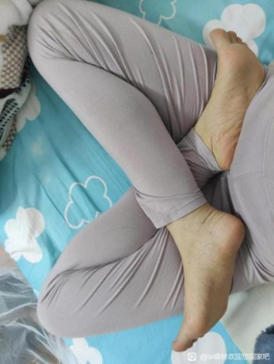
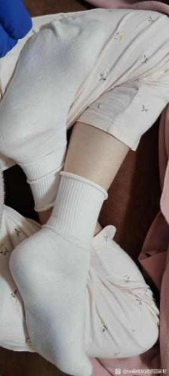

10雙盤
跏趺坐修習
雙盤的優勢
雙盤才能解脫
圓圓柔柔摘月光
2024-02-11 21:52
：
師父，我來跟您說聲我好高興，您終於回來了，我們好多人都在期待您，終於盼到您了。還有個小小的問題，只念阿彌陀佛，不想打坐了可以嗎？行也阿彌陀佛，坐也阿彌陀佛，聽音樂也聽成阿彌陀佛，念頭裏都是阿彌陀佛，但是各種原因熬腿實在很爲難，可不可以不用熬？
Taiguanglin
圓圓柔柔摘月光，問雙盤太難了，要放棄……，這個是你的自由，這個我沒法說。但是你問我的態度呢，在我的意念裏，我只要認爲一個事該做，就沒有放棄這一說，就一直做唄。就像小孩子開始學走路一樣，爬起來，跌倒，再爬起來，再跌倒，這沒什麼大不了的。那小孩子根本就不會認爲這有多痛苦，他可能很享受這個過程，起來再跌倒，起來走兩步，然後跌倒，再起來，再走三步，再跌倒，這有什麼大不了的事情，你就做唄。
而且我向來認爲，哪怕一件事情，這輩子我都看不到最後的結果，但是我認爲這個事情是一定要做的，那我會做。有可能中間失敗啊，那就算失敗了，我也要知道我離成功有多遠的地方倒下了。明白我的意思吧？這次失敗可能下一次就成了我的很好的經驗，也有可能從失敗的地方就能站起來，我要知道我離成功有多遠的地方倒下，你能理解我的意思吧？好吧，你努力吧，還能怎麼辦，多努力。
尤其是在家修行的人，在家修行，說實話，你要說福報少吧，那的確是大不到哪裏去。那在家修行的人，如果你每天發願修行兩個小時，可能你真的能擠出來兩個小時。但是如果你說這兩個小時太累了，不想修了，放棄了，你千萬不要以爲這兩個小時你能用來娛樂，還做點別的事情。我可以很肯定的告訴你，會有其他更多的事情往你身上撲。而且這些事情往往會帶來更多的煩惱。
你知道我的意思吧？那可能這兩個小時的修行，也是在佛菩薩的加持下，給你抽出來這麼點時間。你只要一放棄，這人世間的這些噁心事情，還帶着更多的煩惱，往你身上撲，到時候你就覺得，哎呀，還是修行最好。這十年來可能有些人應該有過這樣的感覺吧？
魚魚老人
14-02-2024
請tai師父諒解，我這兩天一向您提問心裏就堵的厲害，特別的煩躁，能感覺到別人情緒的那位師兄說她胃都開始抽筋了，向tai師父懺悔。
因爲我想快點入初禪，如果能不熬腿當然就不想熬腿，因爲看不見熬腿的希望，一直會有不斷的事情和情緒不能及時化解的話就會讓自己堵住，如果真的要熬腿通筋脈不堵住可能這輩子入定希望都很渺茫。
這邊就沒有強調必須雙盤通筋脈，也沒有強調必須要打坐多久才能入定，而是打坐專注力到了，不鬆不緊，氣脈順暢，方法正確大量的練習還要懺悔消業培福就可以入禪定，就算單盤散盤也能入定，當然雙盤更好，加上我認可這邊的禪定境界，所以就在練習這邊的方法。
兩邊都是我很尊敬的師父，但您們的觀點不統一（只針對入禪定這一點 其他的觀點基本都是相通的）我想知道到底哪裏出了問題。
現在就好像我站在一個分水嶺，不是選擇這邊就是選擇那邊，有點煩，如果能搞清楚並能統一觀點的話，這樣就最好了。
Taiguanglin
魚魚老人，我從十年前就看到你了，你這個名字挺有個性。而且那個時候我看你是大學生吧，在宿舍裏住着，和幾個人一起住，跟舍友們一起住，你還要修行，還要出來跑步，我知道。哎，這個孩子挺好的啊，根器很好，應該有進步吧，你未來應該有成就吧。然後再往下看你寫的內容就知道，這個孩子有問題呀。
怎麼這麼多事兒呢？可以準確的是貢高我慢心很強，認爲自己很了不起，凡事都得自己來試一試。別人明明告訴你這個事兒這樣做是不行的，會給你帶來更不好的影響，那你一定要做，凡事你都得試一遍，你看看你十年都怎麼過來的啊？是不是把別人說不行的修行方法你都試了一遍，全部試了一遍，然後把十年最好的青春用來修行，結果呢，也就勉強兩個小時吧。
你看這羣裏有已經50歲的老菩薩，50歲的老菩薩，已經絕經了，她用三五年的時間，已經達到兩個小時，而且現在還感覺挺好的，身體感覺恢復還可以往前走。你看有些人就一門深入的做，你就不這麼一門深入的做，跳來跳去，跳來跳去啊。我看你把修行當做吃自助餐一樣，拿着盤子進去，吃一個再換一個，吃一個再換一個，不好吃就換一個，反正100多個菜嘛，你挨個吃，然後基本上100多個都嘗一遍，也就飽了，就出來了。但修行不是這樣的，你畢業100個小學，你還是小學生，你得小學、中學、大學這樣往前走，不是把一個方法試一下，不行再換一個方法，你看你對修行的態度。
你自己說疑情參不起來，那我叫你參思情，你又說思情參不起來。那這兩個疑情思情不行的話，就只能往下跌落一個層次了吧，那就觀唄，觀上三根的觀，一種是觀阿彌陀佛或者觀音菩薩，你說跟觀音菩薩有緣，那你就觀觀音菩薩，你又說觀也觀不行。那上三根還有一個方法，就是耳根圓通法門，也是觀音菩薩的法門，你能做嗎？我想你也做不來吧。還有第三個法門是觀身暖處，但是這個法門從來就沒有人練過，就只有在佛經裏出現過，楞嚴經裏出現過，我就從來沒見過有人練觀身暖處的這種修法。你再往下跌落，就是觀呼吸了，就初禪那個下三根觀呼吸，你到現在還在觀呼吸這個問題上來回跳。
觀也行，參也行，就是因爲參不起來，觀不起來，所以要反覆的練，反覆的練，反覆的練，一直練到行爲止。不是說我一時之間不行，我就不觀了。那你再換個方法，也不觀了，一會兒就換一個。怎麼說呢，你要吃飯，你得持續的吃纔行吧，你吃一口覺得沒飽，我就不吃了，我再過兩天我再吃一口，我又沒飽，我就不吃了，那能飽嗎？你能飽嗎。你想想看，能不能飽這樣。
還有，不要把幾個不同的師父比來比去，這個對你來說沒有用的。你能判斷一個師父高低嗎？你只能判斷他比你高吧，至少他比你坐的時間長，還能加持你，那你覺得他比你高，和你有緣，又在旁邊可以指導你，那你就跟着他學。
任何師父一旦開始教的話，絕大部分都會說，以前你學過的東西全部作廢，現在開始重新學，我教你幹什麼，你就得幹什麼，這是正常的教法。但是我現在做的是大衆傳法，我不會特別的收誰爲徒，讓他一定要聽我的話，所以我勸大家這麼修就好，有人聽勸了，就跟着這麼修，然後修的好了，就說在這裏修的好。
有的人他就不聽勸，然後就自己到處去試，試各種不同的方法。那位師太也說，她也放下了一段，又試了其他方法，然後覺得還是按照正常的方法，按我說的方法，慢慢的練，這樣比較好。
你現在已經用十年時間試了各種方法，都已經30歲了吧。那現在開始，那就一門深入的練，你願意修那個師父教你的方法，你就跟他修。你願意修我教的方法，這個唸佛法門四件套，出聲唸佛，默聲唸佛，然後是觀阿彌陀佛，然後思念阿彌陀佛，就這個四步修法，一個一個往上練，要不你就去練他的方法，這樣可以了吧。
阿難乎
2024-02-16 19:25
4.師父，今天有人說，不雙盤也可明心見性，是這樣嗎？
Taiguanglin
不雙盤也可明心見性，這個明心見性是怎麼解釋，怎麼解釋得看什麼人吧。如果說你成佛了纔算明心見性的話，那不雙盤就成不了佛的。如果說明心見性是理悟的，我知道了人有不生不滅的自性，我也知道自性中長出來的妄想分別執着，叫心，這個心是可以明掉的，這麼解釋的話，理悟也能做到，那就不需要雙盤也行，你只要這麼相信就可以了吧。
明心見性，剛纔說的，明是個動詞，把外面長出來的妄想分別執着給滅掉的意思，明就是那麼個意思。明和無明相對，無明就是妄想分別執着，明就是沒有妄想分別執着，這麼理解。如果你這麼理悟的話，這個理悟也算明心見性的話，那他說的也對，反正我對這些文字遊戲不感興趣的。
如君
2024-02-22 06:32
頂禮師父！我平時不打坐的時候，看書讀經都是坐在沙發上，類似於散盤那樣，兩小腿平行不交叉，坐好幾個小時。
請教，長時間這樣坐會不會有問題呢？比如因爲氣不通會怎麼樣等
Taiguanglin
如君，散盤坐的再長時間也沒有用，不能打通經脈，而且說不定還出現其他問題。前面有人問我單盤時間長了，又是出了問題。所以到了你能坐兩個小時的時候，就要試着雙盤，往雙盤努力，一開始可能10分鐘，20分鐘，那也得堅持，慢慢來。散盤沒有用的，基本上沒有用，一開始只能是拿來靜心的一種坐法，不能算是一個完整的修行方式。
子謙
2024-03-12
師父好，據說散盤可以打通筋脈，但是我認爲不可能或者說可能性很小，請問師父，散盤到底能否打通筋脈？ 否則我們熬腿的意義何在？
Taiguanglin
子謙，打通經脈原則上是雙盤纔行，但是也有些人有特例，他身體底子非常好，所以單盤也可能做到打通。但是你就算是打通了，你要再想往初禪走，最後還得是雙盤。因爲初禪四個小時，單盤下要堅持4個小時，有點難。因爲他身體有點傾斜的情況下，這氣不是全通的。你打通了，現在是全通了，但是你要做到坐忘的狀態是不行的，所以最好還得雙盤。
changtj678
2024-06-18 21:03
Tai師好。1、我現在不到五十歲，平時工作，身體健康，但是雙盤不了，請教Tai師如何修行？
Taiguanglin
Changtj678，雙盤不了，那就先開胯、練呼吸，然後減肥，這幾個做到後，從單盤開始慢慢練，一般三個月、半年就可以盤上，不要着急，一開始都那樣。
深藍999
2024-8-16
頂禮Tai師父_x0001_！看到關於雙盤的問題，弟子一直也有此方面的疑問要請教，本人已年過五旬，也請了《坐禪1》與問答錄，已近三年，收益匪淺，在此之前，也喜靜坐與冥想之類有十年時間左右，但因二十四歲時出意外導致右大腿粉碎性骨折，康復後，年齡漸長，慢慢出現雙腿不等長，走路沒什麼大問題，快速奔跑就不太利索，並且大腿柔軟性不夠，一直無法盤腿。因傷過，也沒如何去刻意壓腿開胯之類，打坐時都是採用金剛跪坐式，即雙腳跟稍微分開一點，兩腳大拇指微微相觸，然後屁股偏外側坐在後腳跟上，多年來都是這樣，能坐上一二個鐘頭，有一次進入過較深的層次（如師父所說是佛菩薩讓你精進修行的信號），幾年前看到問題錄中所說雙盤是唯一打通經脈的方法，心中就黯然。能雙盤真是天大的福氣，自己只能唸佛磕頭練呼吸了，今天又看到此問題，就順便問一下師父：無法雙盤，就打不通經脈，也就代表不能進入深層次的禪定，連初禪的門都被關上了，只能是發大願佈施做功德唸經唸佛之類，這樣能得到解脫嗎？能去到哪個層次的天界？
Taiguanglin
深藍999，現在受傷的時間已經過了二十多年了，那樣的話，你可以嘗試雙盤，我覺得你也可以試一試的。從單盤開始，不要一下子雙盤，也可以從散盤開始，散盤單盤雙盤怎麼個姿勢，網上都可以搜得到，你就試着開始一點一點慢慢努力，因爲骨頭靠自己是沒有辦法完全康復的，比如說一個人胳膊斷了，後來接上了也癒合了，等死了埋到地裏，過幾年再挖出來的話，骨頭又斷的，本來斷的地方還會斷，因爲後天的這個修復它是有限度的，但是打坐雙盤的狀態下是可以百分之百修復過來的。
所以你有問題的話反而更適合，這些問題的話，我覺得更應該精進的去往這個方向努力，發大願之後做功德迴向，然後希望佛菩薩幫你治，然後繼續做功德，同時堅持往這個方向努力纔是正確的心態，你不要覺得自己有了傷之後就不能坐了。世界上沒有什麼不能做，做不到的事情，那個慧可，人家沒有一個胳膊的人他都可以打坐的，慧可是斷臂求法嘛，他沒了一隻胳膊，按理說沒有一隻胳膊的話，氣就不能形成循環，一條胳膊氣得通過那裏，但是他沒有胳膊照樣可以成爲二祖，慧可是二祖吧從達摩開始。
所以你先把心態改變好，也有一些感應方面的事例，有人很胖，所以他都盤不了腿，但是他誠意到了，就夢見彌勒菩薩教他怎麼打坐，彌勒菩薩打坐的方式連散盤都不算，你看寺院裏大肚子彌勒佛他是怎麼坐的。他是一隻膝蓋是翹起來的，他連散盤都不算，但是他在夢裏就學到彌勒菩薩教他這個姿勢，然後這個胖人就按照那個姿勢坐了之後也進入了禪定狀態。所以說當你發現自力不行的時候，還有他力，你的誠意到了，佛菩薩還可以靠這些方式來推你一把，也可以讓你就像你體驗過的較深層次的也可以做得到的。
還有我講法是按照普通的標準來講的，因爲我現在是大衆傳法，面對很多人幾千幾萬人在講，所以以普通人的標準來說，不能講這些個例特例，你因爲看到不能雙盤就不能打通經脈了，就覺得很氣餒了，就徹底放棄了，這就有點過了。因爲從講法的這個角度來說，只要從口中說出來，那就是一種執着，一種偏見，那肯定是偏見的。
雖然我儘量往這邊也講一點，那邊也講一點，多講一點，各個方向多講一點，但是一旦講出來，那就是一種認知，而不是同時佔有多種認知的。所以說無法雙盤就不打通經脈，理論上的確這樣，但只有雙盤情況下，身體才氣才能形成一個循環。
但還有很多特殊情況，也有佛菩薩加持等因素，還有最不行，不還有一個往生的這個方法嘛，往生是不需要禪定功夫的，理論上是也不需要的。就是你念佛唸到很精進了，你所說的那個較深的層次，體驗過那個層次，哪怕到那個程度也夠了，然後做功德，把這個不夠的部分就全給補上，用功德補上也可以往生。
所以不要貿然的放棄。最煩的人就是我覺得這個也不行，那個也不行，因爲我知道身邊就有這樣的人，叫他練腹式呼吸他覺得不行，肚子鼓不起來，以前做過手術不能做了，叫他磕頭他說膝蓋疼，以前做過手術，磕也磕不了頭，叫他念佛，他就好像反正幹什麼都不行，那你怎麼辦？那你還能怎麼辦？這個佛也說了，哪怕七旬老人他只要願意走，佛都可以幫他渡河，背過他渡河，就怕是自己徹底放棄了，就癱在那裏，連走都不肯走，那就佛也沒有辦法。佛也度不了所有人。
佛只能幫助那些自助的人，所以你不要輕易的認爲，因爲我曾經受過傷，就以爲以後就不行了。我感覺你受傷的不是大腿，而是腦子，因爲你的意識層面上認爲你已經受傷了，你只要認爲這只是個消業而已，你消了這段業，我未來就修行更可以進一步了，你這麼想的話那是不是心態就變了啊。
因爲我們修行人都是這樣的，修到一定程度會必然會出現業障，然後雖然不能說完全沒有恐懼或者想退卻的感受，但是一發現有業障就想到，只要熬過這個業障，未來的境界還會提升，有這樣的念頭的話就可以勇往直前了，有業障就承受就可以了。
咪了個喵xxx
2024-08-18 12:56
頂禮師父！
1、請問一定要雙盤打坐才能進入禪定嗎？
2、是否有其他的方式或者姿勢也能進入禪定？
Taiguanglin
最後一個問題，咪了個喵，這是112樓，雙盤才能入定嗎？如果你已經練到了能入定的程度，那以後可能是站着也可以入定，但是你沒有練到這個程度的情況下，你想練到入定的程度，那必須雙盤。
如果你是身體有殘缺的人，那另說。如果你是正常的人，那肯定是雙盤的，除非你受過重傷有點不行啊，那還可以另說，只要是身體健全，沒有什麼太大缺陷的人，都需要雙盤纔行。
是不是有其他方式或者姿勢也能進入禪定？有的話早就有人教了，因爲沒有纔沒有人教嘛。
如果是很小的時候，十幾歲就開始修行的人，他本來身體還沒有徹底堵，那有可能靠單盤也能入定。這種人都是靠前世修行帶過來的，前世已經有過很長時間的修行，所以這輩子下來很早就開始入道，這樣的話也有可能，但是單盤這個腿一邊高一邊低，胯骨也會一邊高一邊低，所以沒有辦法長時間堅持。
你要入禪定的話，以初禪爲標準，至少也得打坐四個小時吧，你單盤的情況下，硬是勉強打坐四個小時，氣也不能形成完整的循環，所以很難，如果更長時間的話，單盤堅持不了的。我從來沒看過單盤能堅持八個小時的人，看上去很舒服不怎麼疼，但是到了一定程度，這個胯骨稍微彎曲一點的這個狀態，會逐漸變得越來越疼，最後坐不下去了。
AuntSally (瑛)
2024-11-13
頂禮師父！今請問：
1、是不是只要能雙盤上，就能促成人體氣血循環？
Taiguanglin
下一個問題，是不是只要能雙盤上就能促成人體氣血循環？雙盤單盤理論上都可以，但是想徹底打通全身經脈，普通人來說還是雙盤纔行的。
光影
2024-12-14
2、之前也學習過打坐，很多教打坐的說身體舒服就行，不用雙盤，身體舒服就可以繞過身體慢慢身空，是不是不雙盤只能達到一定入靜地步，再往上就不好修了。
Taiguanglin
第二個問題，身體舒服就可以繞過身體慢慢身空。身體舒服到什麼程度你才能繞過？是不是完全沒有感覺纔算徹底的繞過身體了？如果你想讓身體徹底沒有感覺，就必須雙盤，單盤是做不到那個程度的。單盤以爲入靜了，但這個入靜只是粗淺的，和禪定還是很遙遠的。
dlfu
2025-2-13
1、很多打坐的人可能不雙盤，但是身上氣感很多，而且還會打開天眼，打坐因爲不疼，比較舒服，但是是不是這些都意義不大，不雙盤這些功能，舒服，氣感沒意義是吧？
Taiguanglin
dlfu，不雙盤的情況下打開天眼，不痛，比較舒服……，意義都是自己賦予的，自己覺得有用那就有用，自己覺得沒有意義那就沒有意義。所以這種問題，怎麼看呢，你想徹底打通全身經脈就必須雙盤，單盤情況下就算有氣感，那也打通不了全身經脈。
有些人的確一直在單盤，以前也講過了，單盤骨盆會往一處稍微傾斜，這樣的情況下是沒有辦法徹底入定的。如果你靠雙盤已經練成了入定的境界之後，有時候單盤也可以試着去入定，也可以進入。但是普通人，初學，從一開始修行的話，沒有辦法用單盤來直接入定的。
當然這個過程當中，身體還是會有一些修復，單盤也比不盤要好一些，所以就會有一些氣感。但是這個並不是究竟的方法，只能算是一種過程而已。
大鬍子老道
2025-03-11 19:23
師父吉祥！
1、之前師父說過，有的沒練過雙盤，但身體特別好的人，一直散盤也可以入初禪。這樣的人，是否因爲身體內臟本身就特別健康，如果他雙盤的話，四個小時內也不會疼，只是他沒練雙盤而已。
Taiguanglin
大鬍子老道，有些人的確底子很好，小時候練過或者上輩子就已經練的人，有些人甚至在不需要入定的情況，也能用一些神通。
但是我們不能拿這些人當做標準來給大家講法，我們是按照大部分人來講。普通正常的人至少要四個小時才能入定，而且你要四個小時內身體不動纔行，能忘掉身體的存在感，這個時候才能入定。一般人是達不到的，所以需要練。
你說這樣的人他四個小時會不會痛？這個不知道。我到目前爲止也就見過一個人，他是靠單盤能入定的，按照他的說法，他是從小在家裏爸爸帶着一起練。他單盤也是來回換，不是一直盤一條腿。但是他坐禪的時間一般不到四個小時。
根據他的說法，他從十幾歲就可以入定了，所以基本也沒有談過戀愛。因爲能入定之後，就對消耗能量的事他都反感。所以從我們的視角看，他反而是很自我的人，因爲他不希望任何事情來打擾他，就願意靜靜的待着。這樣的人也是解脫不了的，因爲按照我們的理論，沒有大菩提心，不去度人的話，你光靠自己是解脫不了的。
Cocoo
2025-3-14
師父好 ，請問打坐一定要雙盤腿嗎？散盤可以嗎？
Taiguanglin
請問打坐一定要雙盤腿嗎？你想你修行的目的是什麼？你是要解脫呢，還是想進入初禪、二禪等更高的境界禪定，那就雙盤。
你只想坐一坐，西方說的靈脩，所謂的冥想，想心靜一下，散盤也可以。但是下面這位朋友也說了，沒有絲毫作用。能真正單盤長時間的人，在雙盤之後再回過頭來看那個單盤，就發現單盤只是爲雙盤打基礎而已。
單盤爲何不行
摩尼寶珠Lotus
2024-02-18 10:46
頂禮TAI師，我是慕名而來的，先介紹一下，末學19歲皈依，吃素15年，斷淫10年單盤打坐持咒近三年幾乎未間斷過，後來出現身體容易怕風怕冷，月經週期縮短，20天來一次，本來吃素又吃得少，例假頻繁，氣血兩虛，脾虛無力疲於應付，這個情況是打坐不正確引起的嗎？我應該如何才能調好例假的問題？後來因爲例假兼頭痛的問題而停止了打坐，心中憂愁，看了師父開示又準備開始重新打坐，又擔心例假頻繁的問題，請師父指點，感激不盡！！！
Taiguanglin
摩尼寶珠，我說過單盤不能打通全身經脈，也形成不了氣的循環，所以一定要雙盤。你要單盤只是用來坐個靜心的狀態，坐個半個小時、一個小時可以，但是你要長期打坐那必須是雙盤，往雙盤再努力。雙盤才能形成氣的循環，不漏氣。所以身體能夠保持那種健康的狀態，只要不是坐的姿勢不對的，都能保持這樣的狀況。
打坐磕頭唸佛
2024-03-03 12:51
師父，我單盤觀阿彌陀佛，思阿彌陀佛狀態就很好，腿坐很久也不疼。練雙盤，拉伸，瑜伽，拉筋，動來動去，練來練去，反而單盤都坐不上半小時。我在想，要不我就不管單盤雙盤了，就觀阿彌陀佛，那樣單盤還能坐久一點。
我想問一下師父，是繼續觀阿彌陀佛思阿彌陀佛重要？還是練雙盤熬腿重要？
Taiguanglin
打坐磕頭唸佛，這個你隨意，你覺得練雙盤很煩，暫時就不想念，那也可以，到時候，你啥時候念着念着倒覺得，想進一步修行，想再進一步，想把腦子裏妄想、煩惱再減少一下的時候，就發現不修雙盤是不行的。你現在單盤一般一個小時還可以，再過兩個小時三個小時，是打通不了全身經脈的，反而會往哪個方向傾斜，骨頭反而會被傾斜的地方壓住，後來就有點變疼，身體會往一側傾斜，最後還是得雙盤。
長風
2024-12-9
師父好！弟子長時間右腿在上單盤，導致脊柱似乎有點變形，是否有辦法糾正？長時間一種姿勢單盤是否會影響健康？
Taiguanglin
長風，長時間單盤導致脊柱變形，既然你知道是什麼原因，那就改變這個原因就可以。適合雙盤，人都是要雙盤的，單盤是沒有辦法打通全身經脈的。而且單盤的確會兩側高低不一樣，如果你想長時間單盤的話，最好是兩個腿換着來。所以你自己看看，要不是每天換着腿來，要麼是直接來雙盤，最好的方法是雙盤。
依一
2025-1-17
2、對學佛悟道也很精進的師兄，她們打坐只單盤，而且例舉了很多大師說女人雙盤如何不好，比如會子宮脫落、血崩等，說是女人的生理與男人不同，我是不相信她們的說法，堅持雙盤，但也說服不了她們。那些大師的說法是從哪裏來的呢？
Taiguanglin
第二個問題，只是單盤，女性不能雙盤這個問題，那些大師的說法是從哪裏來的，我也不知道，假大師多的去。
以前那個“輪子功”，不知道現在還有沒有人熟悉。輪子功的說法是：男的是一種盤，女的是一種盤。就是蓮花座和降魔座只能盤一種。男的我不知道是哪一種。他們就是說男的要麼是蓮花座，要麼是降魔座，就是盤一種，女的就盤另一種，還不能換。他們就是這麼說的，而且那麼練的。
所以我看到的那些人練了很長時間，也突破不了兩個小時，也就一個小時，也就在那徘徊，覺得挺好的。但相比普通人而言，完全不打坐的人相比，你只要每天一個姿勢盤一個小時那也行了，那也會感到健康肯定有點了。
但是你看這樣的錯誤的謬論，錯誤的說法，到處都有人傳呢，所以這樣的大師從哪裏來的？都可以說是附佛外道也好，就是“未證言證”的那些假大師們。
雙盤的準備
開胯(蝴蝶式/青蛙趴)
虔誠的行者
2024-08-16 08:39
2、不雙盤時，練習金剛跪坐，可以提升雙盤時間嗎？
Taiguanglin
不雙盤時，練習金剛跪坐，可以提升雙盤時間嗎？雙盤時間和金剛跪坐沒有關係，但是金剛跪坐可以讓身體稍微柔軟一些，多少有點幫助，但談不上有多大的幫助，你還不如直接練雙盤。
範曉龍
2024-9-12
第二個問題：我在平躺後雙腳相對，膝蓋放不平，而我對象很輕易地就可以放平，她的胯部一看就是能打開的，我是否也需要先練習把胯打開，才能雙盤兩小時不疼呢，開胯和雙盤疼痛是不是有直接關係呢？
Taiguanglin
第二個問題，雙腳相對，就是膝蓋翹起來的唄，開胯的動作以前也教過了，你可以先練練啊。坐姿上雙盤之後，兩個膝蓋都要貼到地上，不要一邊兒翹起來，翹起來的話說明你這個胯還沒開好。
但是一開始都是這樣的，打着打着就慢慢下去了。開胯動作，像青蛙趴似的動作或者蝴蝶式的動作，都是爲了快速地開胯，前期都有用，但是到後期，就差那麼一點點的時候，這些動作也沒有什麼太大的作用，還不如自己堅持打坐，然後慢慢打開，只有堅持，凡事都會好的。我看不出你有什麼其他特別的問題，都只是在正常的修行過程中會出現的問題而已。
Fun09
2025-03-12 18:59
師父，請問目前只能中低盤，做不了高盤，很想做到卻做不到，腿髖太僵硬了，怎麼辦啊？
Taiguanglin
Fun09，中低盤，做不了高盤。腿盤上去都有好幾年的過程，你不要想着一下子馬上就能做到。以前也講過各種瑜伽動作，像青蛙趴、蝴蝶式，這個也做一做；還有你的修爲，你的修爲越高，你腦子裏的妄想就越少，身體就越柔軟。現在你身體很僵硬，說明妄想也多。
從唸咒開始，正常的修行，不要着急一下子做成什麼樣。尤其是在盤不了的時候硬掰上去的話，有可能會把骨頭的某一處抵上，那有可能會受傷，所以正常的修行就可以了。
修行是個漫長的事，是一輩子的事。不要想着一兩個月或者幾天之內非要盤到什麼程度，這是不切實際的，追求快速的人反而走不長。
減肥/健身
共渡
2024-3-14
我平時有健身的習慣，渾身是肌肉塊，我想問師父這影響打坐嗎？會不會導致筋脈不好打通呀？不過我現在健身頻率少了很多，一般都改爲打坐了，用不用把健身停了呀，師父？還有我本人不胖比較壯，腿上肌肉多，就比較粗，很不好瘦下來，這對打坐影響大嗎？
Taiguanglin
共渡，的確健身大腿太粗的話，就有點盤不上，所以我們不太建議瘋狂練肌肉的那種健身方式,尤其是腹肌，腹肌是向外打開的，瘋狂練肌肉的那種練法，腹肌會往裏擠壓內臟，塊越大，擠壓的程度越大，所以還得向前凸起來，打開腹肌，讓裏邊的內臟有更大的空間。還有大腿要稍微細一點，所以我個人是不建議去健身房一直做那種擼鐵，把很重的東西抬起來練大腿肌肉的，這個沒必要。能正常的大磕頭就行，不需要練那些，以後就少練些吧。
Elaine
2024-3-15
師父昨天說腿細纔好打坐，請問怎樣儘快讓大小腿變細，方便雙盤嗎？ 磕頭對瘦腿有幫助嗎
Taiguanglin
Elaine，你想怎麼腿細？一個是磕頭，一個是少吃點唄，少吃點，然後磕頭，還有不要去健身房特別練腿，沒有必要，我是不建議做這種健身房練腿的那種事，你就正常的磕頭就行。不需要太粗，就正常情況這都能盤上，女的比男的更容易盤，因爲腿細點，磕頭加上打坐，然後少吃點就行，還有練腹式呼吸。
一念
2024-3-20
師父之前說過磕頭其中一個作用就是練腹肌，這樣呼吸更有力。您又說過少練肌肉包括腹肌，太大了不好，這有點矛盾啊。那我平時練練仰臥起坐，卷腹可以嗎？
Taiguanglin
一念，練腹式呼吸，是讓腹肌往前打開。你去健身房裏練腹肌，那是把肌肉往裏長開。你不練腹式呼吸，只是單純地練腹肌，那個腹肌變得很大很厚，它會往裏長。往裏長會壓迫到內臟，反而對血液循環沒有好處，我說的是這個意思。
雪中送炭.
2025-1-14
頂禮Tai師！請問我健身練肌肉和打坐修行吃素這些起衝突嗎？
Taiguanglin
雪中送炭，健身練肌肉和打坐修行吃素這些起衝突嗎？按理說不起衝突。但是你練肌肉，尤其腿的肌肉，大腿太粗的話，打坐有點不方便，還是適度吧。
不過一般正常的運動，是不可能做到那種粗到沒法打坐的程度。你看馬拉松、田徑賽的那些運動，腿雖然比常人粗一點，但是還沒到那種很誇張的地步，像健美操運動員這樣就不行了。
所以你嘗試一下，以自己打坐舒服爲標準來練吧。和打坐、修行、吃素是完全沒有什麼衝突的，有些人吃素照樣可以健身。
動功(藏地五式/晃海/瑜伽)
毛塵水
2024-02-16 17:54
頂禮泰師父
再問一下晃海，因為曾經有師兄提倡過。但在師父你的語錄之中。從沒看到過。想聽師父的看法。
Taiguanglin
毛塵水，晃海，坐着晃來晃去的，開胯這些動作，就是爲了打通經脈，這是道家的修法吧。做瑜伽動作也行，這主要是在上坐之前，盤腿盤不上的時候做的，基本是一種方便法吧。我現在基本不講這些，我現在就默認大家都能雙盤，不行就勉強單盤，看10年前的書多試試，最終目的是能盤上就可以了，別管前面的這些。
遺忘的風景100
2024-02-16 12:19
tai師父，我想請問一下練藏地五式（書上說能打開脈輪），八部金剛功這些對初期修行幫助大嗎？
Taiguanglin
遺忘的風景100，其他的任何動功你都可以試試，我不反對。我是最簡單的，直接用五體投地一直磕到現在的，我到現在還在磕頭呢，這個沒有什麼特別的規矩。有些人就說，磕頭啊，打坐啊進步很慢，然後去學道家的什麼功夫，什麼練氣的方法之後，感應來的非常快，那他就修那個唄。至少起碼把基本的佛理明白之後，先把身體搞起來之後再來修佛也行，沒有什麼太大問題，不要侷限在那種門派之類的分別之心好吧。
喵喵嗚嗚222
2024-02-15 22:21
頂禮Tai師！
1、請問去找瑜伽老師學習劈叉開髖是否對雙盤時長的增加有幫助？
Taiguanglin
喵喵嗚嗚222，瑜伽老師有劈叉動作，你可以去學，只要能做到，達到目的就行啊。
zhuxiaofang202
2024-02-20 18:37
頂禮師父！我蓮花坐的時候右腿不能落地，而且降魔坐的時候，也是左右不平衡，右膝蓋也是低點，需要墊一下才平衡坐正。師父，這是什麼原因，怎麼解決？
Taiguanglin
zhuxiaofang 202，你就是膝蓋抬起來了唄！雙盤的時候，一邊的膝蓋抬起來不能落地唄！你去網上看視頻，看那些練瑜伽的人，怎麼開胯，你照着做。慢慢練，彆着急，練得太急了，有可能傷到自己。
雙盤的姿勢
腿腳
煙火0805
2024-02-13 16:10
師傅我這盤腿可以不，練了快四年了。

Taiguanglin
煙火0805，不是看盤腿的姿勢對不對的問題，你能盤多長時間，這個是問題。你要說姿勢的話，這個盤腿的確腿是粗了，你要這麼盤的話，腳脖子這彎曲的地方過一會兒就會疼的。所以最好是讓腿瘦一點兒，讓腳再往上一點兒，能頂到腹股溝那兒。
虔誠的行者
2024-02-15 10:49
Tai師父，有的師兄說雙盤打坐需要把跨和髖先打開否則傷膝蓋，打開的標準是兩個腳心都朝上，我降魔坐和蓮花座裏面的腳心都可以向上，兩個腳跟都可以頂到小腹，但是外面的腳腳心不能完全向上如圖，這樣還是沒完全打開嗎？這樣長時間雙盤比如2小時以上，會傷膝蓋嗎？

Taiguanglin
虔誠的行者，這個從外相上看是對的。但是我得先說明，所有的正法的修行都是在佛菩薩的加持下進行的。細微的變化或者疼痛的感覺呢，你得先想象到這是佛菩薩的加持下進行，不是你一個人在努力，明白吧。如果你一個人在努力，像前面的那個傷到骨頭，然後就很難恢復了。你得先想到這一點，然後就修行間多做點兒功德，然後覺得哪裏不對的時候，相信佛菩薩會指點你，這纔是正確的想法。你不要隨便去找這個人問，他告訴你這樣的方法，又去找那個人問，他又告訴你不一樣的方法，你自己就矛盾衝突在裏邊。
那一旦開始盤起來之後呢，怎麼辦呢？慢慢兒找個適合自己的感覺。其中膝蓋的感覺是和腿氣不通的感覺不一樣，你得理解這一點，氣不通的感覺是屁股疼，還有大腿疼。膝蓋的骨頭疼的話，你這盤錯了，像前面的人一樣，膝蓋不是拿氣來通的，你要盤對了，他就不應該疼，盤錯了就會疼，然後就開始傷膝蓋。如果氣不通的情況下，疼的是屁股或者大腿，還有腳脖子這兒也會有點兒疼，但是腳脖子這都還可以吧，這個是很容易衝開的。就是屁股和從屁股開始到大腿，離膝蓋上邊兒這一段，最痠麻脹痛的地方，只要把這個打通了，就算打通了，好吧。
覺蓮
2024-02-17 15:51
聽了之前師父答疑，盤腿時腳踝處要儘量往腹股溝靠。今早雙盤開始時是腳沒放那麼上（附圖1），腳踝處90分鐘後開始疼，然後試着將腳踝完全放上大腿根（附圖2），就不怎麼疼了。平時最後那幾十分鐘真是痛得難熬。是不是之前盤得太散導致的？但我看佛像盤得都很散啊。

Taiguanglin
覺蓮，盤腿是要把腳往腹股溝上，往上放，儘量往上放。如果你的腿夠細，像印度一些苦行僧，骨瘦如柴的苦行僧，腳直接可以出溜到大腿之外，這樣就更不疼了。但是一般人做不到的，那主要是以膝蓋不疼爲標準。如果膝蓋疼，你盤錯了，膝蓋疼是慢慢的疼起來的，隨着時間推移，慢慢慢慢。如果是修復骨頭的那種疼，是疼的非常快，到了時間點就一下子，沒有那種慢慢疼的感覺，而是一下子非常疼，不管是膝蓋疼還是髖關節疼，都是起來的速度非常快，前面還坐的好好的，心態很平穩，突然就開始疼的很厲害。
果慧
2024-02-22 19:02
頂禮太師父！祝您六時吉祥！因爲之前一直沒有遇到靠譜的人，所以也沒敢練習雙盤，怕走火入魔。前陣子也有試過雙盤，能盤上，但是感覺腳腕有點疼，也沒有繼續學。今天又重新試了一下，比上次強了一些耶，可能是這幾天學了羣裏的練腿，估計有一點用。忽略我的髒腳，都是臭皮囊，身外之物，沒那麼必要在意。感覺腿還有點粗，將近100斤，還得再減一減，那就是說我最近再練一練的話，應該是可以正式開始雙盤了，但也堅持不了太多時間。不過我不會放棄，開心耶！感恩遇見師父！

Taiguanglin
果慧，減肥是必要的，腿得細點。腳踝得貼到腹股溝，你腳踝是貼到了中間小弟弟這兒，這還不夠，往裏貼到腹股溝，就是另一側腿的腹股溝這邊，再往裏貼點，否則這個狀態是坐不久的，因爲可能膝蓋疼，要麼膝蓋疼，要麼腳脖子的筋給拉得時間長了，腳脖子的筋也會疼。
行者20230202
2024-02-24 09:09
師父，您說雙盤時因爲膝蓋疼而下座就是姿勢不對，麻煩您看下我的雙盤姿勢對不對啊？我是盡力把腳往大腿根部放，感覺只能放到這種程度了，再放就很難受。還有我的右膝蓋如果爬山運動量太大就有點兒疼，可能有點兒受傷了，所以我想通過雙盤來慢慢修復。我現在還只能盤40分鐘左右降魔坐，下座後主要是腳脖子疼。


Taiguanglin
行者20230202：儘量往上盤，這就對了。如果是腳脖子疼，說明你還沒有儘量往上盤。腳脖子疼，你把腳尖一直能出溜到大腿外，這樣就腳脖子就不疼了，這樣反而更好。
先拜衆生再拜佛
2024-02-24 08:19
末學學習雙盤一年多，降魔坐在右腳跟靠近腹股溝的情況下，若拼命把腳掌超出大腿(圖2)，會因爲屁股很痛而下座，若不要超出大腿太多(圖1) ，能堅持的時間久一點，但會因爲腳脖子疼痛難忍而下座。 一年多來本以爲可以按照圖1堅持、繼續突破兩小時，但近來答疑聽到應該要屁股大腿疼爲主纔是正確，想請問是不是以圖2姿勢堅持纔對？ (爲擺拍才穿褲子)

Taiguanglin
先拜衆生再拜佛：這個圖2（ 75分鐘）的是正確的，左屁股很疼下座纔是正常的。前面你說腳踝疼，是腳踝、腳背的筋給壓着撐開了，你就按照第二個做就可以了。
濤濤濤說
2024-02-29 11:53
太師，爲什麼腿盤上過一會就會不對稱啊？

Taiguanglin
濤濤濤說，不對稱沒有關係。一般男性比女性腿粗，而且硬，你想做到對稱更難，所以不用管那個。只要像你這樣能腳指尖能出大腿外基本上就已經可以了，不需要追求什麼非常漂亮的那種雙盤。不要照着佛像學，佛像是爲了好看那麼畫，那麼雕的，不要照着佛像學。
妙覺本成
2024-03-04 07:07
阿彌陀佛！師父 ！您前面開示了膝蓋疼是腳往後拉，我現在是這樣盤的，盤完松腿時候左邊膝蓋還是疼那麼幾十秒。請問師父 是姿勢還需要調整嗎？

Taiguanglin
妙覺本成，姿勢是對的，感覺有點腿粗，有點腿胖。你最好還是減點肥，磕頭減肥。腿細一點就能盤上，而且不疼。腿粗的話膝蓋真的有點疼。
炎
2024-03-12
頂禮太師父，請問：1、已經可以熬2-3h了，如果熬腿時一動不動，而且盤得緊些，比如裹起腿來像個正方形，這樣打通筋脈效果更好，是嗎？
Taiguanglin
炎，腿腳後跟抵到腹股溝、大腿根部這個是知道的吧，然後腳趾頭能出到大腿外邊是最好。
SNZYLG
2024-3-18
師父，1、雙盤雙腳伸出大腿外側多一些盤的緊一些，是不是比盤的松的打通筋脈更快？
Taiguanglin
SNZYLG，盤的緊一點，就可以不傷到膝蓋或者胯骨的骨關節的骨頭。盤的松會拉到腳踝的腳背的筋，還有膝蓋也有可能受傷，所以還是盤得緊一點好。
三日空
2024-3-20
2、以前答疑說屁股痛是對的，想確認下雙盤時我的大腿和地面貼合的部分連着屁股那段比較痛，這個是對的姿勢嗎？頂禮師父！
Taiguanglin
對，你說的姿勢是對的。雙盤是大腿和地面貼合的部分，連着屁股的那兒比較痛。
先拜衆生再拜佛
2024-3-22
請問師父，長短腳的人打坐有什麼要注意的嗎？
Taiguanglin
先拜衆生再拜佛，長短腿打坐應該是沒有問題的，正常可以打坐的，還有磕大頭矯正脊椎是對的。你長短腿是受過傷，還是先天性的？對走路都有影響嗎？正常情況下也可以磕頭的。
唐偉
2024-3-28
弟子目前採用的雙盤是吉祥座，降魔座有長短腿問題痛的厲害，還有機會矯正嗎？
Taiguanglin
雙盤吉祥座，降魔座？你就堅持到疼得不行了，不能再堅持，換腿就可以了。
一開始都很疼，不管是長短腿，正常人也疼。一個正常的，腿都一樣長的人也疼得厲害。只要堅持到疼得不能再堅持了，那就起來活動一下，然後換個腿再坐一坐。一開始都這麼起步的。
磕頭、練呼吸要一起來，還有飲食要調節一下，最好不吃肉。
觀照0620
2024-03-29 13:09
頂禮師父！今請問：
1、我已年過半百，得遇《坐禪》後斷續練習打坐已逾五月，目前降魔坐最多30分鐘，右腳踝處的痛感有所減輕，但我的右膝蓋內側會痛，這是否正常還是有所損傷？
2、如果暫時不適合雙盤，我圖中的ABC三種坐式從優到劣排列順序是怎樣的？
Taiguanglin
觀照，我說過，這個腳後跟兒儘量要抵到腹股溝，下邊腿。你現在A是單盤，同樣是把下邊的腿儘量往裏放。還有放到什麼位置呢？放到不是大腿的下邊兒，下邊兒腿是放到大腿內側，貼到大腿內側就可以了。還有上邊的腿，儘量放到腹股溝處，腳心朝上，兩個腿都是，儘量是往腳心朝上，這種單盤就可以。
還有第二種B，這種就盤腿而坐的，就不叫盤——單盤或雙盤。
C屬於散盤，C叫散盤。
一開始，實在是單盤都盤不上的話，就可以C，然後A，然後是雙盤。
喝囉怛那哆囉夜
2024-03-29
頂禮師父！弟子降魔坐一小時的狀態很不穩定，是對髖關節旋轉的理解有問題，羣視頻反覆看了，還是存疑，請師父指點。
1、一定要腳心朝天嗎?
2、降魔坐的右腿架上去之後，右大腿和右小腿都要外旋嗎?外旋的作用是什麼？叩謝師父！
Taiguanglin
喝囉怛那哆囉夜，不是腳心朝不朝天的問題，就是你把腳後跟抵到腹股溝上，腳心自然往上了，不一定全部往上，起碼是一半以上斜面往上的。然後腳趾頭能出到外邊就可以，出不了的話，腳脖子處的筋會抻的有點難受，過一段時間就會疼，所以筋拉開有點疼。你腿不要太粗，細到一定程度，腳趾頭就能出到大腿外側，那就不會疼了。
主要是往裏盤，儘量往裏盤，腳後跟抵到腹股溝自己的肚子上。還有，哪有什麼旋轉不旋轉的問題。
毛塵水
2024-4-22
頂禮師父！請問，依師父所指示，雙盤儘量深入，腳趾貼至大腿根部都做得到，同時師父你說腳趾要伸出，過了兩邊大腿之外的深盤最好，可是問題出現在其中一膝關節會升離地面，這樣的話，是髖關節沒有練好嗎？深盤時雙膝要求同時觸地纔算合格嗎？謝謝師父！
Taiguanglin
毛塵水，盤好之後一個膝蓋會抬起來，一開始都這樣。你一定要把膝蓋放下來的話，可以去練一些瑜伽的動作。我個人認爲，如果你打坐的時候膝蓋或者胯關節已經不疼的話，就沒必要刻意地再去練瑜伽動作，你就這麼堅持一段時間，身體放鬆了，整個關節也都鬆下來了，自然會下去的，這個是正常現象。
逍遙夢見滄海
2024-06-08 23:19
2、自己降魔坐兩個膝蓋可以着地，蓮花坐爲什麼會右膝蓋翹起呢？
Taiguanglin
那就是蓮花坐的那一邊身體還沒有通，不通的同時筋沒有拉開，所以會翹起來，堅持一段時間自己會下去的。
虔誠的行者
2024-06-20 16:55
頂禮Tai師！
雙盤姿勢高盤，堅持的時間短，疼感強。中盤和低盤盤的時間長，疼感弱。如果爲了以後能盤四小時以上養成好習慣，儘早切換成哪種方式盤比較好？
Taiguanglin
虔誠的行者，雙盤是慢慢上去的，並不能一下子直接達到完美的姿勢，這有點難，大部分人都是一點一點上去。還要減肥，腿細一點就更容易上去了，身體還要柔軟，筋要拉開，腦子裏妄想少的話，身體更容易放鬆。這都有個修行過程，慢慢來，不能一下子硬拖上去。膝蓋彎不過去的時候，你硬拖上去，彎不了的地方兩個骨頭抵得太近，磨的地方或者神經會壓住，有可能會受傷，所以慢慢來，在你能承受的範圍內慢慢往上拉就行。
三日空
2024-06-20 16:24
頂禮師父！
1、降魔坐時，按師父指導把右腳拉到大腿根部的話膝蓋翹得很高，左腿再壓上去膝蓋就很痛。若把右腳放在大腿中部，膝蓋能落地不太痛，但是腳踝痛，我想着腳踝痛比膝蓋痛好一些，所以現在都只把腳放在腿中部而不是根部，但時間不穩定，有時能半個多小時，但有時候十幾分鍾就痛的不行，請問師父這種姿勢行不行，還是說要忍痛儘量拉到大腿根部？
Taiguanglin
三日空，普遍來說把腳後跟抵到大腿根部是最好的，但是每個人身體情況也不一樣。有些人能長時間坐，他就是把腿放到大腿的中間部位，也能長時間坐，也可以坐四五個小時，這對他來說已經不影響。但是前期爲了儘量不傷膝蓋的前提下打坐，所以有這個要求，只不過每個人的狀況都不一樣。你可以坐的話，只要是雙盤，腳在哪個位置不是很重要，先把雙盤的姿勢維持住，看看能堅持多久，覺得膝蓋疼的話，再一點點調整，這樣就行了。
容
2024-7-16
師父吉祥！
1、我雙盤很勉強，就是別人說的淺雙盤，一隻腳很難拉倒另一隻大腿上，這樣會不會有什麼不好的影響？
Taiguanglin
容，雙盤都是這麼慢慢來的，不要想着一下子就直接盤的非常標準，都是有這個過程的。十年前的書裏也講過一些瑜伽動作，怎麼把胯打開，把筋拉開，這個都有，你去看看。也可以網上找，現在網絡上有很多視頻平臺，那裏都有一些教瑜伽的，你看看怎麼拉伸胯的筋，看看就行。
三日空
2024-08-13 18:50
頂禮師父！！！
1、之前我雙盤腳只到大腿中部，現在能盤到大腿根部了，但在中部時可以盤最多六十分鐘，到根部只能三十分鐘，請問師父我是繼續盤在淺點的位置，還是得盤深一點，重新從三十分鐘開始練呢？
Taiguanglin
三日空，雙盤盤深了到大腿根部有三十分鐘，中部是六十分鐘，我的建議是在正確的姿勢下努力，先把姿勢做對了，然後三十分鐘開始練也可以的。只要你稍微減肥一點，腿瘦一點，這個還是能做到的，這個並不難，稍微努力一下就可以了。
在正確的姿勢下可以長時間的盤，尤其是到後期越是有用。如果是有偏差的盤腿位置時間長了，可能會某個地方開始疼起來，到時候再想改的話有點難，六十分鐘內倒感覺不到，到可能兩個小時三個小時以後就慢慢會感覺到某些地方有點疼，那個時候想改就有點難了，所以我是希望能用三十分鐘的那個先盤。
虔誠的行者
2024-08-16 08:39
頂禮太師，
1、雙盤時氣的8字循環經過兩個小腿交叉處，我是墊上毛巾來減少雙盤時兩小腿交叉處硌的疼痛，這樣會阻礙氣的8字循環嗎？
Taiguanglin
然後下邊我看到還有一個問題，雙盤，8字循環，墊個東西正常，一般，如果不穿褲子的情況下，只是穿着短褲打坐的話，最好墊個毛巾，因爲皮膚直接接觸到會出汗，黏黏糊糊的，有點不舒服，所以拿個毛巾墊一下，這個很正常。
咪了個喵xxx
2024-08-18 12:56
3、雙盤的姿勢是否會對膝關節有不好的影響呢？還望師父指教，多謝！
Taiguanglin
還有雙盤姿勢會對膝關節有不好的影響嗎？這得看你怎麼坐了，你姿勢對的話不會有影響，如果肯定有影響的話，所有人，可以說沒有什麼人能靠雙盤堅持那麼長時間了。因爲沒有影響，而且越來越好，只要你姿勢對了，膝關節受損的人都可以修復過來，四個小時的話，包括軟骨都可以修復，所以纔會堅持打坐嘛。
豬豬俠小兔子
2024-09-11
07：58
Tai師父您好：我雙盤時候總有一個腿不能落地怎麼辦？頂禮Tai師父！
Taiguanglin
豬豬俠小兔子，Tai師父你好，我雙盤時總有一個腿不能落地怎麼辦？一開始都那樣，就開胯這個動作，有瑜伽動作，十年前的書上也寫過，蝴蝶式，還有像青蛙一樣趴着，你打坐前先練一練，然後慢慢來，不要着急，這個下去可能需要好幾個月或者幾年時間。
有些人看上去坐很長時間，但還是下不去的，也有些人只能屁股上墊高一點，腿就看上去下去了，但實際上屁股墊高就坐不長的。
現在所能做的就是堅持打坐，在坐之前先做點開胯，柔韌度上的那些動作，瑜伽動作，做一些就夠了。
2024/9/14問題丟失，以下僅回答
Taiguanglin
加減乘除，你說的開始垂腿靜坐六十到九十分鐘，這個是坐在椅子上嗎？正常的坐着，然後雙手放到兩個膝蓋上，是這樣坐的嗎？一般是建議老年人盤不了腿的人才做的，你要是能盤的話，從單盤開始練也可以。
你要是單盤能坐六十分鐘，那就雙盤改個二十分鐘三十分鐘這樣堅持，每天打坐堅持就可以了。你覺得有氣感的話，靜坐狀態有氣感的話，可能打坐的時候一開始不會有，但是很快就可以過去那個階段，然後應該能更快的進入狀態，最終還是雙盤。
四十七歲還不算年紀大，所以現在開始練單盤、雙盤這樣慢慢來，十年之內，五六十歲之前運氣好的話，欲界定是肯定能超過的，六十歲之前你哪怕每天堅持九十分鐘，就如你所說六十到九十分鐘，每天堅持九十分鐘先打坐，然後再稍微加點時間，兩個小時還是可以做得到的。
還有發菩提心度衆生，希望往生極樂世界，我很讚歎你，發菩提心很不容易的，有菩提心的話，佛菩薩的加持就更快更有效，所以你修行方面更快的進步。
還有條件允許的話，多放生，做點好事攢功德，功德也是必要的，這都是往生的保險。別等到了死的時候才發現功德不夠，平時多做點就好了。不要嫌花錢多，一開始你可以拿出很小的一部分來做，堅持三年五年，每個月放生兩次，初一十五，一次放個十塊二十塊，一頓飯的錢也可以，這樣堅持下來，三年五年過去福報就上來了。
AuntSally (瑛)
2024-11-13
2、高盤與低盤，對於促成氣血循環有何不同效果？
Taiguanglin
高盤與低盤對於促進血液循環有何不同效果？你這個高和低是怎麼分的？是不是把腳抵到腹股溝，使勁往裏抵，這個叫高，你是這麼看的嗎？那我教的應該把腳後跟貼到腹股溝，這樣纔是正確的坐姿。
如果只放在中間或者前面，如果你覺得沒有問題，身體坐着很舒服，這都好。但是有些人是膝蓋會變疼的，因爲這樣把腳放到腿的中間部位，這個腿會壓迫到膝蓋的關節處，有可能會這樣，尤其是腿粗的人，所以要儘量往上放。
樹懶0
2024-12-09 15:23
頂禮Tai師！
1、看佛像還有虛雲老和尚的雙盤姿勢，都是低盤，中低雙盤情況下，裏面那隻腳的腳踝，也能堅持十多個小時不疼嗎？
是否中低盤，裏面那隻腳的腳踝因爲受力變形，必然坐的時間不會長？
Taiguanglin
樹懶0，雙盤的姿勢不要看佛像，佛像是藝術品，它不是專門針對真人真實的修行打坐姿勢來說的。虛雲老和尚，人家首先是已經打通的狀態下，就不需要考慮那麼嚴格，哪怕單盤他都可以入定。
樹懶0
2024-12-09 15:23
2、雙盤高盤，半個腳伸出大腿外，裏面腳踝確實不疼了，但膝蓋會疼是什麼原因？
Taiguanglin
還有低盤、中盤、高盤這些，最容易達到的原因是腿瘦。主要是瘦，先瘦的話容易達到。如果是瘦的時候已經打通了，那稍微胖一點也能坐下來。但是一般情況下，你要徹底打通的話，最好是減肥，瘦的話坐姿更容易維持，而且更容易做到準確的姿勢。
至於腳踝，因爲受力變形，坐的時間不會長。如果腿瘦的話，你在中低盤的時候它也不會扯到，主要是因爲現在大家都吃的好，都胖，所以腳踝處容易受到拉扯，所以儘量要求高盤，高盤就更容易坐了。
但是如果你腿粗的話，這樣高盤，大腿和小腿摺疊的程度很大，這樣的話撐開前面的膝蓋，所以膝蓋會疼。如果你腿細的話，這樣摺疊也不至於疼，所以如果你想高盤，還想不疼的話，最好還是減肥，讓腿細一點就好了。
鋒
2024-12-12
頂禮Tai師！雙盤到兩小時左右，裏面的腳脖子很疼沒通，繼續這樣熬堅持不住了。我如果把外面的腿慢慢放下來，裏面的腿和腳脖子保持原姿勢不動，直到打通不疼。這樣練是否可以更快的打通腳脖子，打通後一直保持雙盤也不再疼？
Taiguanglin
雙盤的時候裏面的這個腳脖子很痛，這個筋沒有拉開是很痛的。然後呢，你想把外面的腿先放下，那就變成單盤了，或者散盤了，這樣的話打通不了，這個腳脖子也不會拉伸。它痛了，痛的時候纔會再一點一點拉開來，如果它不痛的話，它就不會拉伸的，那就一直保持在那個狀態，所以你就打通不了全身經脈，單盤是打通不了全身經脈的。準確的說，腳脖子不是打通不打通，而是你腳脖子的筋沒有拉開而已。
如果氣通過去了，可能一下就不痛了，那也算是一種打通吧，但是主要還是看筋。你的年紀越小，身體越柔軟，可能就沒有這個問題。就是因爲現在都年紀大了纔開始打坐，所以這個筋沒有拉開情況下要硬拉，所以這樣。
不過我建議還是你堅持雙盤坐姿，痛就忍一忍，忍到不能忍就算了，然後就起來該幹嘛幹嘛，一天能坐兩座，痛到無法堅持的程度，坐兩座最好了。
共渡
2024-12-12
1、師父，雙盤的時候感覺屁股左右不對稱，一高一低的感覺，尤其是後邊墊上坐墊後感覺很明顯，這是因爲姿勢還不夠標準吧？因爲盤的時候只有一個膝蓋可以觸地，這正常嗎？盤完一個小時膝蓋不疼，只有屁股和小腿很疼很堵的感覺。
Taiguanglin
共渡，一開始打坐，大部分人都是一邊膝蓋是翹起來的，它筋沒有化開的話，就是這個胯骨都比較緊張，所以膝蓋會翹起來。膝蓋翹起來的話，骨盆會扭曲，骨盆扭曲的話，就一邊屁股會疼，然後小腿也會疼，這個很正常。你只要每天堅持打坐，身體放鬆了，那自然都會下來，都會好的，你現在只打坐一個小時，怎麼疼都沒有關係，剩下的時間你不打坐的話，它都會恢復過來的，這不用管。
我覺得你也沒有必要刻意的，爲了把這個翹起來的膝蓋往下，讓它貼地而坐，什麼過度的其他的這些行爲。你就正常的打坐，每天兩座，坐到堅持到不能堅持爲止，這樣就可以了。最好是每天都能延長幾分鐘或者幾十秒也好，這樣一點一點延長，讓身體能適應這種狀態，這就可以了。
飛虎隊1
2024-12-14 17:06
2、師父，腿長的人是否比腿短的人雙盤更容易？更不容易受傷？腿長膝蓋腳踝彎折度都小一些。
Taiguanglin
第二個問題，腿長的人是否比腿短的人雙盤更不容易受傷，腿長膝蓋腳踝彎折度都小一些，也有這樣的說法。但是最主要的還是你身體的柔軟程度，還有就是小腿，小腿稍微細一點，一般適合長時間打坐的人小腿都是比較細的。
如果像足球運動員一樣，小腿很粗，盤起來就有點累，有些人是先天肌肉發達，小腿很粗，還有骨頭也是。練武的人說有單骨雙骨這樣的說法，手臂的骨頭，還有腳脖子，腳背的骨頭，有些人是天生就粗的，粗的人更適合練武，按照練武的人說法是那樣的。
像成龍說他自己的是雙骨，但是李小龍是單骨，應該是更細的那種骨頭。修行的話骨頭細的人更適合修行，每個人業不一樣。
休養生息1
2025-01-14 20:03
頂禮師父，可以保持雙盤低盤長時間，是否也可以打通全身經脈？然後入定？
雙盤高盤和低盤，對身體獲得的益處有什麼區別？
是否是打通的時間方面或打通的深度方面不同？
Taiguanglin
休養生息1，雙盤低盤長時間，是否也可以打通全身經脈？這個可以的，也可以入定，有些人就是靠低盤來的。
我爲什麼說高盤？因爲很多人都說腳脖子拉開之後，會一直抻着，他筋沒有徹底打開的情況下，過一段時間還是很疼的。所以雙盤高盤，腳趾頭出到外邊的話，腳脖子筋就不會抻到，所以它不疼。但是如果身體比較胖的話，一旦高盤，膝蓋的關節又會拉開，這個也會疼。
這兩種都有一定的好處和壞處，你要找到最適合自己的方式。如果胖的話，盤得高呢，腳脖子不疼，但是膝蓋有可能疼。如果盤的低呢，腳脖子會抻開，會疼，但是膝蓋不疼——在這兩個裏一定要選一個的話，最好是這個。膝蓋更重要一些，膝蓋疼是因爲骨頭抵得有問題，所以長時間的話可以受損的。
腳脖子是筋，不是骨頭。你的妄念減少了，它也可以拉伸。平時多做一些拉伸的運動也可以拉伸。筋只要拉伸，拉開了就不疼了，這是筋的問題，不是骨頭的問題。但是膝蓋是骨頭的問題，所以先以膝蓋爲主，你怎麼盤，膝蓋不疼就可以，膝蓋疼的話要適當往下低一點。
打通的時間，每個人情況不一樣。有些人說低盤可以坐很長時間，好像沒啥問題，但是改了高盤之後，好像痠麻脹痛又來了，又感覺沒有徹底通一樣，每個人狀態都不一樣，也有這樣說法的人。
休養生息1
2025-01-15 16:59
師父好，我比較特殊，低盤可以雙盤接近四個小時腳脖子不疼，其他地方也不怎麼疼，以爲達到了打通全身筋脈的標準。
但是我高盤髖關節和膝蓋都疼，只能盤一百多分鐘兩個小時都到不了，是否還沒打通全身筋脈？
這是什麼原因？後面需要切換到高盤嗎？
Taiguanglin
休養生息1，如果你問是否打通全身經脈了，雙盤只要能達到兩個小時，應該差不多打通了。但是你要說和四個小時對標的，是不遺精。如果你低盤四個小時不遺精，而且身體很舒服，達到快感受不到的境界，這也是修的對的，所以不需要改。
但是你每天能打坐低盤四個小時，還是在照樣遺精，而且時間很長在這個方面沒什麼進步，那你覺得這個姿勢是不能讓你再往前進步的，應該改成高盤，你自己判斷一下吧。
琬恩
2025-1-15
師父，我無法雙盤怎麼辦，膝蓋不好。
Taiguanglin
琬恩，無法雙盤怎麼辦？膝蓋不好，不能雙盤的話從單盤開始，也可以從散盤開始，也可以從靜坐開始。靜坐就坐在椅子上也可以，不需要一定要盤。修行都是這樣，從不可能開始，一點一點練起來的。所以不要想着一次，尤其是年紀越大的人腿僵的越嚴重，越難雙盤，所以慢慢來，從單盤、散盤開始吧。
鋒
2025-1-17
師父吉祥，
1，我雙盤外面的腳根拿到靠近腹部後，兩腿交叉處疼，我發現把外面的腳放到大腿中間的小腿肚子上，兩腿交叉處就不疼了，這樣是否也算雙盤，同樣獲得雙盤的效果？
Taiguanglin
鋒，盤腿的問題，這個你隨意，你只要坐的舒服就行。我讓大家盤的高，是因爲腳脖子拉得比較疼，如果盤的低的話腳脖子會非常疼，盤得高的話就不那麼疼了。尤其是腿細的人，腳趾頭衝到大腿外邊的時候，就基本不怎麼疼了。
至於盤得低一點，放在大腿中間這個位置行不行？那肯定行。網上看宣化上人、其他一些修行人的照片，已經得道的，公認的已經得道的那些人的照片，也不是盤得很高的，反而盤得就是中間一點吧，大腿中間位置，這樣也行，就看你怎麼找這個位置吧。
但是我是建議在高的位置上，如果維持的話，身體也通得更快一些，除非你是腿粗的，盤得高，難以摺疊到那個程度，那沒辦法。
哆啦愛夢的百寶箱
2025-02-11 12:30
2、單盤右腳在上可以坐得住，換左腳腿就會翹起來，現在靠手硬壓壓住但是很疼，靠唸佛號硬撐。長期這樣壓，會不會傷到半月板？以前搞過三年多體育，膝蓋受過小傷。
Taiguanglin
還有單盤，你不要用手去壓它。你就正常坐着，翹起來也沒有關係，就坐着，時間長了慢慢就下去了。你往下壓反而更容易傷到身體。
道法自然00
2025-02-13 19:19
2、中盤或低盤是否有讓踝關節不過度拉伸疼痛的方法？
Taiguanglin
但是你高盤，把腳趾頭伸到大腿外側的話，拉伸的程度明顯下降，就不至於那麼嚴重了。比中盤低盤更好的是高盤，就看每個人的程度了。有些人中盤能盤長時間，但是一高盤的話就盤不了那麼長時間。
偶米大
2025-02-14 16:59
頂禮師父!雙盤兩三個小時，爲啥還無法劈叉到底？這兩者有啥聯繫？
Taiguanglin
偶米大，雙盤兩三個小時，爲啥還無法劈叉？這兩者有啥關係？劈叉和雙盤是沒啥關係的。雙盤是開胯，骨關節這邊，而你要劈叉的話是襠中間的筋要拉開，就是襠部的筋，這兩個是不一樣的筋。
所以雙盤兩三個小時也不一定會劈叉，這個很正常。還有你幹嘛要劈叉，你是學舞蹈的嗎？不是的話沒有必要追求這種事。
葉二萌
2025-2-14
感恩師父_x0001_，弟子看完《坐禪》後第一次雙盤就盤了四十五分鐘，第二次就六十分鐘。幾天沒有盤，現在反而盤不了這麼長時間了。前面盤得長，是因爲佛菩薩加持的緣故嗎？還是因爲熬腿熬多了，所以現在需要修復？弟子平躺休息的時候，也會把腿散盤起來，請示這樣熬腿行不行？
Taiguanglin
葉二萌，我還是不建議躺着練，躺着練對身體不太好。尤其是你說的這種，雙盤的姿勢下躺着，不太好。
剛開始直接有比較好的感應，一下子打坐六十分鐘這些，我覺得還是佛菩薩加持，他讓你先體驗一下那種好的狀態，然後記住這個大方向之後，往這個方向努力，就這個意思吧。
一少而空
2025-02-17 11:52
頂禮師父！
請問降魔坐左腿的作用是什麼？下面是我想想的答案，請指正。
A.壓住右大腿根部，可是因爲下面有右小腿墊着，導致左腳壓下去的壓力不夠大啊。_x000B_ B.壓住右腿，給右腿加力，讓右腿可以有力地壓左大腿，進而打通身體右側。_x000B_ C.配合右腿鎖定身體，讓氣的運行閉環。_x000B_ 作禮！
Taiguanglin
一少而空，降魔坐左腿的作用是什麼？咱們不看什麼壓住大腿怎麼怎麼樣，這都是姿勢的問題。這個姿勢給人帶來的最大好處就是，讓身體的氣形成循環，而不是向外漏，這個纔是最重要的關鍵。
手結三昧印也好；哪怕是兩個手放到膝蓋，食指和大拇指貼在一起，這樣也能鎖住一些氣，雖然比三昧印要少；兩個小腿交叉貼在一起，這裏是氣的循環的節點。這個很重要。
單盤沒有辦法形成這樣的節點，氣的通的就不那麼順暢，還有骨盆往一側傾斜，所以也不能坐久。但是雙盤可以氣形成一個完整的循環，手和腿都可以形成一個完整的閉環。這樣在內部循環之後，身體就會產生很大的恢復能力，最後恢復完了就可以進入入靜的狀態。
我們都是這麼看的，不是拿大腿非要壓住，壓住之後怎麼樣，不是這麼看的。
金剛葫蘆娃1
2025-03-11 19:26
頂禮Tai師！
看抖音和尚打坐是高盤，盤上後用布把腿包起來，兩膝和胯平行，呈現長方形，這是比較標準的雙盤嗎？
Taiguanglin
金剛葫蘆娃1，高盤的問題，你說拿布包那樣的姿勢算是標準的雙盤。爲什麼包着？因爲有些人盤腿的時候怕冷，膝蓋稍微有點風他就覺得冷，所以一開始是建議包着的，等你的氣都運轉的差不多了，就不那麼冷了。一旦進入禪定狀態的時候，感受不到那種冷熱的感覺。一般的室內溫度，或者天氣好的時候外邊的溫度，是不會有什麼太大影響，一開始就習慣包着的。
換腿
月無塵
2024-02-20 16:29
還有一個問題，想問一下我現在雙盤只能連續盤大概5分鐘，但是休息一會兒再盤可以再盤5分鐘，我現在唸佛的時候同時盤腿，但是由於腿疼會經常需要換腿，換腿的時候唸佛就會被打擾，就會生起很多雜念，請教Tai師我是應該在唸佛的時候專門選擇舒服的姿勢，讓自己能夠專心念佛，再另外抽時間練盤腿，還是像現在這樣邊唸佛邊盤腿就行，等逐漸進步，唸佛自然會更安穩？
Taiguanglin
月無塵啊，我都說了，不要着急，慢慢來啊。你打坐五分鐘纔不到，修復身體從何談起？先慢慢唸經、運動，慢慢把胯骨打開，然後一點一點盤上，慢慢來，不要着急。
凱風自南
2024-03-02 18:34
太師父好！近幾天才接觸到太師講法，想請太師指導改進下。末學32歲以前有很多惡習，以前沒聽過太師法，接觸過元音老人的法，萬行大和尚事蹟，有點喜歡奇蹟神通才打坐（現在知道一點，法不求神通）。接觸佛學又想出輪迴，素食2年。現在雙盤能忍痛到2小時，1個半小時就痛，是否還這樣練雙盤熬腿？坐中主要念佛，思維散亂。
20歲前怕黑怕鬼，以前背過大悲咒，現在夢裏能念大悲咒，夢裏大悲咒克服過幾次恐懼現在不怕（持咒時間不長，背會了就懈怠了）。沒有練過呼吸，磕大頭，也沒放過生，現在我還要練腹式呼吸嗎？雙盤一直都是一個姿勢，太師以前說雙腿倒換着練，是否還要練另一個姿勢？現在工作需要上夜班12小時，是否會有影響？工資還行，出去了可能掙不到啥錢，頂禮太師！
Taiguanglin
凱風自南，首先雙盤是要換着練的。你一邊已經快兩個小時，另一邊就得重新練起來，不能一直練（一邊）。而且你一邊也是上不去的，另一邊不通的話，一邊也上不去，得換着練。
能打坐兩個小時的人，基本上應該是已經練成了腹式呼吸吧，也不需要特別刻意地練。我看你時間挺緊張的，要練腹式呼吸的話，看看在工作時間能不能練。不然還是雙盤，換個腿，換個姿勢來練。
如果你覺得這種上夜班的工作不好，那你還是先積福報，先放生、佈施，然後求佛菩薩給你換個好一點的工作。
隨緣了shi
2024-03-16 19:23
請教大士，兩條腿打坐時間是一定要大致平衡麼？比如蓮花坐可以N小時不痛也要練另一條腿麼？
Taiguanglin
隨緣了shi，兩條腿都得練，至少你欲界定是一條腿可以進的，欲界定還行。因爲欲界定都不能算定，就是入靜，身體的存在感還在。但是你要入初禪的話，就得要兩條腿都練好了，才能進入身體消失的狀態，感覺不到的那種狀態，坐忘的狀態。這是必須的，不是靠一時的方便法就能過去的，至少初禪是沒有跳過去的可能性。因爲身體要徹底變成那種沒有淫慾的身體，不一樣的身體，男的百日築基，女的月經消失都得有。
tcy
2024-3-18
2、目前能雙盤60到90分鐘，在120分鐘穩定之前是否只練降魔坐就可以了？
Taiguanglin
雙盤是要換着腿坐的，不能一個腿一直坐，60分鐘90分鐘那就應該換另一條腿，一條腿一直坐，有可能你120分鐘一直達不到。
馬浚川
2024-3-27
再請教下雙盤，看之前說有氣感換腿，氣感是指開始酸脹痛嗎？現在雙盤大概半小時，不知道是不是就這樣堅持，還是回到單盤再練練？現在每天早上磕頭半小時左右，晚上練呼吸，開胯，雙盤。謝謝。
Taiguanglin
還有雙盤的問題，我是不建議經常換腿的。你先把一個腿坐半個小時，然後堅持不了之後纔再換，不是有氣感去換腿，不是這樣，堅持不了的時候再換。你說痠麻脹痛根本就不是氣感，氣是清爽的，有那種完全通的感覺，一下子很舒爽的感覺。痠麻脹痛不是氣感，是不通的，不通才有痠麻脹痛，所以堅持到你堅持不下去了，那就換腿再堅持一下，再做到堅持不了，大概一邊都是半小時的話，一般通常只有一個小時到一個小時10分鐘20分鐘打坐，這樣就可以了，不需要退回到單盤。
山搖娜
2024-3-28
打坐只能蓮花座，觀呼吸。降魔坐腿盤不上去。是不是就先盯蓮花座坐，直到坐到兩個小時再去練降魔坐。
Taiguanglin
還有打坐，你要是兩個腿不能換的話，一條腿也是很難達到兩個小時的，還得換着來。你先去b站看那些個開胯的視頻，都能盤上去的。能盤上去就放鬆一下，然後慢慢就上去了，多練練就行。先開胯，瑜伽動作都練好了，肯定能上去的。
最好是兩個換着來，每天早晨是一種坐，晚上是一種坐；或者今天是一種坐，明天是另一種坐，這樣換着來是最好的。
雲坤99
2024-05-07 01:02
師父，我現在只降魔坐，蓮花坐右腿好像短一截似的，膝蓋是翹的，而且小腿骨頭隔的下面骨頭很疼，我就不想盤那邊。還能感覺到從腰開始，身體右側和左側不一樣，似乎一邊軟一邊硬，一直都這樣。就翹着膝蓋盤嗎？能不能等降魔坐兩個小時了再說？
Taiguanglin
2024-5-20
雲坤，打坐前先練一些瑜伽動作，把開胯的動作練一練。還有磕頭是很重要的，年紀大的人，尤其是骨頭有點歪的、偏的這些都可以用磕大頭來慢慢掰回來，打坐就可以舒服一些。開胯這個動作是需要練的。
能不能等降魔坐兩個小時後再說？我的建議是每天換着來。早晨降魔坐，那晚上就蓮花坐，這樣換着來最好。別想着一邊都打通完了，再換另一邊，這個有時候需要的時間更長。
一首落花情
25-05-2024
1、師父，打坐時蓮花坐比降魔坐舒服，可以只練蓮花坐到兩小時，再回過頭來練降魔坐嘛？
Taiguanglin
一首落花情，哪一個坐不下去就更應該坐哪一個！你蓮花坐能坐兩個小時，但是降魔坐不下去，那說明降魔坐那邊是不通的，而蓮花座這邊兩個小時以上也是不容易再增長的，所以需要把降魔坐給練好，哪個不通哪個更難就坐哪個，這樣纔是正確的修行方法。
馬浚川
17-06-2024
1、師父，請教一下雙盤和飲食。這幾個月學下來，現在降魔坐能堅持到一個小時，看你的其它答覆中說要換着腿坐，那就每天換一條腿這樣盤？因爲之前你還說過先降魔坐盤到兩小時打通脾胃再換腿，所以有點不太明白。
Taiguanglin
馬浚川，我一開始說先練降魔坐兩個小時，打通了再換蓮花坐兩個小時，這個也行。換腿坐也行，也可以先坐蓮花坐，都無所謂的。但是我是建議先打通胃消化系統，這樣身體更容易修復，所以先練降魔坐，但是一般人很難先練到兩個小時，這個有點困難。所以你能練到一個小時的時候，就換個腿再坐蓮花坐，也可以降魔坐半小時，再換蓮花坐半小時，兩邊一起往上增加時間。
並不是到了半個小時馬上換腿再坐半個小時，而是每次儘量坐到你的最長時間，晚上或者第二天再換個坐。就看你自己的選擇了，並沒有什麼明確規定必須坐到兩個小時降魔坐，然後再換腿，沒有這麼嚴格要求，你可以平時就換着腿來。
Muma吉利
2024-12-09 13:52
頂禮師父！
右邊後腦勺和右邊的鼻子裏邊連着太陽穴的位置，顯然感覺不通，有壓迫感。左邊部分倒是沒什麼感覺。師父，目前這樣是照常蓮花、降魔換着來坐好，還是多坐降魔讓右邊通？
Taiguanglin
Muma吉利，人的左腦管身體右側，右腦管身體左側，所以這得反着來，右腦不通的話應該是蓮花座，右腦和身體軀幹的左側是連通的，所以要打通左側應該是蓮花座，降魔座是打通右側是吧？
a修心
2025-2-12
Tai師父您好！降魔坐近期能打坐到三個小時，從兩小時開始屁股尖兩側痠疼一直到三個小時。我以前唸咒唸佛坐到兩個小時，兩個小時以上有疼痛感只好翻手機或者聽音樂聽小說轉移注意力，不能靜下心來唸佛。更無法思佛。我是不是應該降魔坐先別往三個小時打。保持兩個小時，等蓮花坐達到了兩個小時之後再向三個小時前進。
1、我是否先堅持每天打坐到三個小時屁股不疼了再研究思佛，因爲疼痛心不靜。我有點擔心自己年齡大了，已經七十歲了，氣血不足。三個小時打坐穩定到不疼估計需要花幾年時間。太師父我蓮花坐才能坐一個多小時，我現在降魔坐三小時。怎麼辦？不對稱。
Taiguanglin
a修心，打坐最好是兩邊輪着來，兩邊的時間差不多，這樣纔好。
如果你一邊兒通了，另一邊兒不通的話，就會停留在那個地方，沒有辦法再往前走，那個通的地方也沒有辦法再更長時間堅持了，所以你現在一邊是三小時，一邊是一個小時，最好是以後短的地方多坐一些，先把那個通到兩個小時以上，然後兩邊都兩個小時以上之後，再往上三個小時努力好不好？最好是這樣的。不要一直坐一邊，一直坐一邊，一邊通了另一邊不通，對身體也不是很好的。
腰腹/上身/背脊/手印
虔誠的行者
2024-02-18 20:54
Tai師父，雙盤保持盤腿不變的情況下，上身全程做前後大拜等伸展運動2小時，對比保持雙盤姿勢上身不動2小時，哪種方法效果更好？
Taiguanglin
虔誠的行者啊，打坐的時候就靜靜的坐着吧，別動來動去的，實在坐不了了你可以看個手機，看個電視，再堅持一會。
虔誠的行者
2024-02-20 12:06
太師父，我感覺雙盤情況下上身前後大拜，腿的疼痛會減輕些，比坐着不動盤的時間更長，如果還沒達到2小時 ，爲了盤的時間更長，保持雙盤然後前後大拜可以嗎？是否有什麼問題？
Taiguanglin
虔誠的行者，雙盤不要動就可以了，要是疼的話就起來走動走動，再重新盤上。你盤不上、盤不了多長時間，不光是身體問題，還有意識的問題，意識層面上妄想太多，身體就僵硬。你平時念咒多，文字妄想少了，身體就變得柔軟了，注意力也少了，身體僵硬緊張的程度就會不斷減少，放鬆柔軟了，那個時候盤的時間可以更長了。不是說你動來動去就可以盤的時間更長，也有可能是業障的問題。這些綜合考慮，吃的多了也盤不了多長時間。你不要非要堅持兩個小時，一開始不要這樣逼自己，有可能會傷到身體的。
雲坤99
2024-05-05 02:50
1、打坐時肚子應該是放鬆還是緊的？打坐時自然呼吸，發現腹部是緊的，如果放鬆肚子腹式呼吸，呼氣就得用力，而且腰會彎。
Taiguanglin
2024-5-20
雲坤，在打坐之前就要先練好腹式呼吸，我建議最好這樣。你想光靠打坐讓身體慢慢地練成腹式呼吸，這個時間非常長，浪費很長時間，所以建議之前先練好腹式呼吸，然後放鬆呼吸，再練打坐。
也可以分開來，每天拿出一定的時間，早晨先站着練腹式呼吸，或者白天有空就練，然後晚上再打坐。都有一個過程，不用着急。
空空無我
17-06-2024
長時間打坐背部可以稍微靠着點牆嗎？
Taiguanglin
空空無我，可以的。你的長時間是多長時間？一般堅持不到兩個小時之前，爲了多坐一段時間，靠個牆沒有什麼問題。超過兩個小時之後打坐的話，最好不要靠任何東西，就闆闆正正坐着，身體可以塌一點沒有關係，但是靠的話，往後傾斜的狀態反而不容易讓氣形成完整的循環，所以兩個小時以內是可以的。
李健
21-06-2024
頂禮Tai師！我初學打坐，現在單盤一小時多。常聽聞打坐的訣竅要“推開尾閭，使背脊自然正直，並掌握身體的重心，相當於使任督二脈相交的下鵲橋”，請教太師這是初學就要注意的，還是自然而然的形成的。
Taiguanglin
李健，可以單盤一小時，雙盤十分鐘二十分鐘應該可以吧？先往這個方向努力，先把姿勢找對，理論還是次要的。有些時候對初學來說，能把雙盤盤住，堅持十分鐘二十分鐘到一個小時兩個小時這樣往上一點一點疊加時間，這才重要。
初學主要是腿的功夫，把腿盤上。身體它一開始肯定會塌，但是你平時多磕頭，練好腹式呼吸的話，身體氣足，它就會自己板正起來，自己挺直。如果氣不足的話身體會塌，所以還是先把腿盤上，然後練腹式呼吸和磕頭。
臨春登臺
2024-07-06 15:21
Tai師好！盤坐時命門處腰椎會凸起，小墊子搞高也會有點，只要把胸挺起纔沒有，但會有胸悶的感覺，如果是垂腿坐姿，腰則是直的。此種情況不知是否正常。
Taiguanglin
臨春登臺，按理說打坐就應該挺起胸，按你說的來說，應該還沒到腰間盤突出的程度。挺起胸膛之後，胸悶的感覺是因爲你筋膜還沒有擴張開來，所以平時多磕頭和練呼吸，把腹肌打開，然後筋膜都放鬆都擴張開來，這樣就沒有這樣向下扯的感覺，就沒有胸悶的感覺了。
平時還得多運動，多練腹式呼吸，先把這個做好，然後再打坐。打坐不行的話，先堅持半個小時左右，然後往一個小時方向一點點努力就可以。不要過度的着急，得慢慢來。
三日空
2024-07-16 19:06
頂禮師父！！！
1、打坐身體總往後倒，屁股墊了墊子還是後倒，而且感覺越專注越後倒，請問師父，怎麼辦啊？
Taiguanglin
三日空，打坐的時候身體往後倒。那你可以靠牆坐嘛，你現在先坐足了時間就可以，不需要非要身體板直啊，要一下子達到身體的標準狀態，這個不太可能的。
所以墊屁股也行，靠牆，在背後最好墊個厚一點的東西，別讓涼氣透進身體，然後就靠牆坐着，一開始都這麼練的。你去禪堂看，有些人是朝中間坐的，有些人是朝牆坐的，有些人是靠柱子坐的，這都很正常。哪怕你已經發心修行了，這就可以了，也不可能一下子就非要要求什麼標準狀態，這不可能的。
潮起又潮落
2024-7-17
頂禮Tai師父 想問下，打坐的時候，尾椎骨需要稍微抬起來嗎？感覺抬起來，容易發熱出汗，但是得作意保持，不然十多分鐘就塌下去了感覺。如果不翹起來，重心好像落到尾椎骨上，打坐兩小時不費力，但是好像不咋發熱。
Taiguanglin
潮起又潮落，我建議你不要追求什麼打坐發熱的狀態，你就正常打坐就行，只要身體不塌，哪怕是重心會落到尾椎骨這裏，你可以隨便拿個東西稍微墊高一下就可以。一般初學是這麼建議的，我不知道你打坐多長時間，一般初學是可以背後屁股這兒稍微墊高一下，可以打坐一個小時到一個半小時，這個階段的人是可以這麼坐的，這樣可以讓身體坐的比較板直。
逍遙夢見滄海
2024-08-09 09:19
4、降魔座的時候右手在上很舒服，吉祥座難道不應該左手在上嗎，不然放在兩個腳後跟中間很彆扭……？
Taiguanglin
這個手印的問題，三昧印都是右手上放上的，沒有說左手放上的，但是對一個初學來說，不管左手上還是右手上都無所謂，因爲你堅持不了那麼長時間，也沒有什麼影響，而且我到現在從來沒聽說過，左手上或者右手上帶來不好的影響的說法。手只要扣在一起，疊在一起的話，氣就會通起來的。所以右手上左手上，我並不是那麼很肯定的說左手上是錯的，你願意怎麼放就怎麼放，前期都沒什麼關係。
呆瓜
2024-9-10
2、打坐時手一定要結三昧印嗎？手能放膝蓋上嗎？
Taiguanglin
還是呆瓜，打坐時手一定要結三昧印嗎？你要長時間打坐的話就結三昧印。你要是一個小時以內的話，雙手放在膝蓋上，然後食指和大拇指貼到一起，有這樣的手印。食指和大拇指貼到一起，不是中指和大拇指，是食指和大拇指，這兩個手指是手指當中消耗氣最大的，所以把它貼到一起。
我們結三昧印也是因爲耗氣嘛，要讓氣形成循環，減少耗氣，所以要結三昧印。把雙手放在膝蓋上的時候，就把這兩個耗氣最大的食指和大拇指貼到一起，這樣放着就可以了。
muma吉利
2024-11-11 19:45
頂禮師父！
長時間打坐，除了結三昧印，可以結太極印嗎？
Taiguanglin
muma吉利，長時間打坐，除了結三昧印可以結太極印嗎？這個沒有關係，主要是兩個手碰到一起，不管是太極印也好，三昧印也好，只要兩個手保持氣的通暢就可以了。
如果你坐的時間足夠長，四個小時到八個小時這個程度的話，可能不同的印對不同的人效果有點不一樣，每個人體質不一樣，有些人適合這個印，有些人適合那個印，但是在前期，四個小時以內都沒有什麼太大區別，你能坐下來就不錯了。
所以結什麼印都不重要，甚至坐不住但是還想坐，你可以拿手機一邊看着，就熬腿嘛，熬腿就看手機看電視都可以，你只要堅持下來，先把腿熬通了，這就可以了。至於這些印都不重要的，好吧。
空空無我
2024-11-12
3、請問師父，打坐進入一定境界，身體感覺減輕或者消失，是不是不用在乎雙盤打坐的姿勢了？比如頭正不正，背駝不駝，腰塌沒塌？
Taiguanglin
下一個問題，請問師父，打坐進入一定境界，身體感覺減輕或者消失，是不是不用在乎雙盤打坐姿勢了？比如頭正不正，背駝不駝……，前期是一定要看姿勢的，一定要擺好姿勢，這樣氣才能通，氣通了身體纔會健康，最後感覺消失。但是進入一定境界的人，他不在雙盤的情況下站着都可能入定，只是一呼一吸之間的事兒，他只是想入定就能入定，這個是可以做到的。
所以到了那個境界，三禪、四禪以上的人，理論上是可以做到的。但是他也有業、個人習氣這些問題，也有受環境的影響，所以有些時候，修到很高的境界之後，爲了去了一段業還得下來跟人接觸，這樣的話境界是掉下來了，但是消完這個業再回去修的話，很快又能回到自己的狀態。
是不是不用在乎雙盤打坐的姿勢了？那得看你到沒到這個境界了，好吧。
茉辰
2025-1-16
第二個問題，我的腰椎因爲勞損沒有曲度，坐到四五十分鐘就支撐不住，弓着背纔會緩解一點，弓背呼吸也會順一些，這樣是否是錯誤的，應該坐直了呢？感恩師父開示。
Taiguanglin
下一個問題，每個人身體多多少少都有這樣那樣的問題，這個很正常。可以，弓着背舒服一點，那就這樣來。等你真的全身通了，修復好了，身體自己就會扳直的，你不用擔心。
你也可以找個牆根靠牆坐着，這樣也行。不一定要強迫自己，現在實力不行的情況下，強迫自己一定要坐直，可能會讓身體更容易受傷，也無法堅持長時間。還是順着身體來。
dlfu
2025-2-10
師父好
1、雙盤打坐必須要結定印嗎，有時候胳膊累了，手放在兩腿上可以嗎，是不是隻有定印纔可以形成氣的循環。
Taiguanglin
dlfu，雙盤必須要結定印嗎？對初學來說手印並不重要，因爲你坐不了那麼長時間，兩個小時以內你結什麼印都可以。還有一種印是，兩個手放在膝蓋上，食指和大拇指貼在一起，其他三指像蘭花指一樣張開來，也有這樣的印。瑜伽動作上有這樣的，這個也可以。
Fun09
2025-02-14 19:33
頂禮Tai師父，請問師父，雙盤的時候結三昧印的手放腳上可以嗎？背部要用力打直坐直，氣機更通暢嗎？
Taiguanglin
Fun09，雙盤的時候結三昧印的手放腳上可以嗎？也可以，只要手放在中間就可以了；但是不要放到腿外邊，手向前伸直這樣不行。最好是貼着自己的腹部，但是一般情況下也完全貼不了，因爲有腳後跟抵在那裏，所以就放在腳上或者兩腿交叉的後方，肚子這邊，就可以了，你怎麼方便就怎麼來，無所謂。
還有背部要用力打直坐直，氣機更通暢嗎？不是，你用力的話，身體就處在緊張的狀態。你還是讓身體放鬆，自己坐着，如果你已經練好了腹式呼吸的話，還是能撐起來的。如果沒有練好的話，身體就往前塌。還有氣不足，比較容易泄，泄過了可能身體又會塌。氣足了自己就會坐直的，所以你不要用力坐直。或者如果你現在身體往前塌的話，你可以靠牆坐。只要堅持就行，雙盤的姿勢下堅持兩個小時，堅持不了的，那從三十分鐘開始，慢慢來。
頭部/五官/呼吸
誦嚴
2024-02-14 14:32
tai師師父，還有一個關於舌頭的問題：舌頂上顎。我從中已經受益，想聽聽tai師的建議，我覺得這個方法很方便，上班、睡覺、走路都可以練，極爲方便。
很多年前，就開始刻意把舌頭捲起來，頂上顎。開始只能堅持幾分鐘，舌頭很硬，捲起後只能是舌尖與上顎相觸。
可我覺得舌頭越硬，同腿一樣，越是要堅持練；我認爲雙盤從腿，舌頂上顎則是從頭部開始，二者都是打坐。
到後來舌頭終於軟了，捲起後可以大面積的與上顎相觸。現在覺得每一次呼吸，頭部深層的筋膜與心臟及腹部能連動起來。其中的感受很特別，舌頭越放鬆越能身體大塊大塊的放鬆。
這個方法我已經收益了，想聽聽tai師對舌頂上顎這個修法的一些意見。
Taiguanglin
舌抵上齶，本來就這樣的，打坐就得舌上齶。但是你說的如果是把舌頭捲起來堵住嗓子眼兒，這個是外道的修法，佛門就沒有這樣的修法。印度那些外道有這種說法，把舌頭下邊兒的這根筋拿刀給噶了，然後把舌頭往裏卷。說實話這種方法，我個人是不建議的。
首先佛教修行都是把身體捨棄爲目的的，只要把身體練到不給你製造什麼感覺的時候，能進入初禪了，身體的感覺消失了，這就可以了，不要在身體上用功。
你如果已經打坐可以到三個小時了，那再往上練一練，把百日築基做到了，男人就做到百日築基，女人就月經消失，做到了，然後加到四個小時，然後就可以入定了。然後就沒事兒了，身體的事兒已經過去了，就不要在身體上執着。
三日空
2024-06-21 18:20
頂禮師父！
1、《坐禪1》中說腹式呼吸有助於打坐中深呼吸，我在坐中如果深呼吸肚子鼓很大感覺很難入靜，只有呼吸微弱的時候才容易入靜，請問師父打坐怎麼用腹式呼吸進行深呼吸啊？
Taiguanglin
三日空，打坐一開始爲了練習腹式呼吸而練，並不是把腹式呼吸當做什麼目標去拼命地練，打坐之前把它練好，打坐的時候就不用去管。打坐的時候要麼唸佛要麼觀丹田，或者思佛，就不要專注地去練呼吸，一開始剛上坐的時候可能就五分鐘十分鐘練一下，之後就不要再練，再練注意力就有點放到別的地方去了，不是在打坐了。
明易3294959600
2024-07-15 12:35
4、中醫講呼吸息，那個屏住呼吸的時間段，身體會有哪些微妙的變化呢？疫情前我可以吸氣後憋氣兩分鐘，現在只能憋氣一分鐘，這個該怎麼恢復呢？如何提高吐氣後的憋氣時間呢？
謝謝Tai師，真的感謝您。以前喜歡鑽牛角尖，並且尋死覓活的我，自從學習打坐磕大頭後，真的變好太多了。沒有這些身體鍛鍊的話，我可能都沒有機會留言了，磕頭感謝，磕頭感謝，磕頭感謝。
Taiguanglin
還有屏住呼吸，這個我教大家打坐的時候不要屏住呼吸，我在十年前的書上寫過屏住呼吸會有什麼樣的壞處，這個都說過的。
還有網上也（能）看一些張至順道長的一些關於打坐的說法，人家是修道的，但是他也見過很多在身體上用功的人，什麼按住一邊的鼻子，然後吸氣憋氣這種做法，然後他說這種做法最後都會作死自己。所以身體有自己的調節功能，你不要去管，它就自然而然的會恢復的。打坐的時候就不要去刻意的憋氣，沒有這個必要，你又不是什麼練游泳的游泳選手是吧。
樹懶0
2024-11-15 13:29
頂禮Tai師！
如果舌頭不抵住上顎，督脈的氣是否還會下到任脈？
一次打坐感覺氣在印堂附近聚集下不去，舌頭抵住上顎後舌頭就拿不下來了，像是有吸力被粘上了，如果舌頭一直不抵上顎，督脈的氣是不是就一直下不到任脈？
Taiguanglin
樹懶0，舌抵上齶的問題，正常情況下你不用刻意去舌抵上齶，到了一定程度的話舌頭會自己抵上去的，氣到一定程度，它自己會上去，這樣氣會往下走嘛。所以你不用刻意的去這想着這個事，你一想的話它就成了妄想，打坐的時候反而造成影響，你就自然而然的坐就可以了。
你要做的話你就舌抵上齶也是輕輕的，舌頭基本上貼到了上牙齒上，舌尖貼到上牙齒上，上邊大門牙上，這樣就算舌抵上齶了。不要學一些瑜伽派啊什麼其他的一些修法，那是把舌頭捲起來往後堵，有這種堵法的，爲了做到這個，把舌頭下邊一塊像筋一樣的地方都用刀嘎掉的，也有這樣的說法。但是我們不需要做這個的。
只要正常的把舌尖抵到大門牙的後邊，這樣舌頭的中間部位，舌身就會抵到上面去，這樣就可以了，不需要想那麼多。
水天一色
2024-12-10
頂禮師父，弟子請問，我在打坐時，常不經意間發現自己的口是閉合的，但口內的上，下牙卻是張開的。這樣情況，在睡眠時也是如此，請教師父，這是怎麼回事，該如何調整！感恩師父！
Taiguanglin
水天一色，打坐的時候，牙齒要微微的碰在一起，不要使勁咬，也不要張開，牙齒要碰到一起，這樣是正常的。
第一本書裏也講過，你把注意力放到下邊的話，會往下拉扯，下齶會掉下來。還有一種原因是，你下齶本來就力量不夠，有點鬆了，也有這種可能性。所以有專門練習下齶咬合力的那種東西，你可以拿這種東西練一練，讓自己咬合力強一些，讓下巴肌肉強一些，然後就可以試着閉一閉。
然後打坐的時候，就不要觀想丹田這種往下觀想，而是心裏專注地念佛，這樣就可以了。還有這個不算什麼大事，下齶卻是張開的。這個根據你的年齡來算，如果是年紀大的人，七老八十了，這種時候氣衰到一定程度的時候，睡覺的時候嘴巴都是張開的，它合不了，等你氣足了，自己就會合上的。
如果你是年輕人的話，稍微修一段時間，稍微努力一下，都是可以合上的，這個不算什麼大問題，也不用太過在意。如果沒有給你的生活帶來很大麻煩的話，根本就不去管，正常的打坐磕頭唸佛就夠了。
小魚自在
2025-3-15
Tai 師父：
1、 打坐時， 閉口， 舌面貼着上頜， 算舌抵上顎嗎？ 還是要舌尖翹起來頂上顎纔對？
Taiguanglin
小魚自在， 打坐時閉口， 舌面貼着上齶， 算舌抵上齶嗎？ 對， 就舌面貼上去， 也不用全貼， 就前面的一小段貼上去就可以了。
舌尖翹起來頂上齶？ 咱們修行是不講究這個的。有一種修行方法是把舌頭捲起來， 往後堵到喉嚨裏， 這種也算舌抵上齶， 但我是不主張這種修法的。
環境的準備
坐墊/竹板/綁帶
zhuxiaofang202
2024-02-18 19:49
頂禮師父！我目前坐兩個小時的疼痛比以前輕多了，可以忍受的痛。可是往往心煩坐不住，而且臀部一會就從墊子上滑下來，一坐要折騰多次，爲什麼會這樣？
Taiguanglin
zhuxiaofang 202，打坐初學最好是把屁股後面稍微墊高一點，一定要用墊子的，這個必須的。你不能在硬地板上光坐，爲什麼？硬地板上直接坐的話，你的皮膚和硬地板直接接觸，這個中間只隔着一點衣服的話，這個皮膚不能呼吸。要想長時間的坐，你屁股的皮膚必須透氣。初學時爲了讓後背挺直，可以在屁股後面稍微墊一點。但是最終還得坐在有墊子的平地上，不是後邊墊高的那種，是普通的平地上。
tcy
2024-3-18
雙盤屁股底下需不需要墊高些？
Taiguanglin
還有屁股要不要墊高，正常打坐是不需要墊高的，一開始初學，身體往後塌，爲了針對這個事兒才需要墊高，實際上是不需要的，等練得差不多，你能坐兩個小時的話就不需要墊高，因爲墊高了身體往後壓的部位接觸面比較少，而且壓力變大，所以屁股墊的部位反而變得很疼，因爲全身這都壓在那個小的部位了。全身的重力要分別壓到屁股和大腿，都得分攤開來，這樣你坐的時候屁股不疼，你只要墊的話屁股就疼。
我在樹下
2024-3-19
打坐的時候屁股需要墊高一些嗎？有人說屁股要比膝蓋位置高一點？有沒有這個講究？
Taiguanglin
我在樹下，打坐的時候，屁股墊高，初學是可以這麼做的。因爲初學身體不是往後倒，就是往前塌，腰也沒勁兒，還有氣力也不足，他肯定這樣。這個時候就墊高一下，也就半個小時或者最長一個小時，這個程度下可以這麼做，但是你要到做兩個小時或者更長時間的話就不能墊高。爲什麼？因爲你墊高了，屁股和墊高的部位接觸的地方是面積小的，你全身的重力都會壓到面積小的那個地方，所以墊高的部位會越來越疼。
這就好比你雙腳站在地上，你站在一個小木棍上那就腳底板疼一樣，是這個道理吧？所以你要坐就坐在平地上，坐正常的墊子上，把全身的重力分攤到屁股和大腿所有地方，這樣就沒事了。
逍遙夢見滄海
2024-04-26 15:39
1、夏天打坐，手下需要壓竹板嗎？說是引出心火。
Taiguanglin
逍遙夢見滄海，什麼壓竹板這種事情我個人是不建議的。有些事情你不知道更好，不知道沒有什麼問題，一知道就變成問題了。說引出心火，你知道有“心火”這麼個東西，你就開始想“心火”。沒有的東西也會變成有，然後變成煩惱，還想對治，沒有必要的。你正常打坐就行。
所以我也不教什麼手印，就一個三昧印。什麼腿怎麼擺放，就按照正常的雙盤兩邊換着放、換着坐，身體會自己找個最適合的姿勢慢慢變的。你不用特別地、刻意地去改變什麼，還有姿勢、什麼一些外在的道具，這些都沒必要。
AuntSally (瑛)
2024-4-27
2、打坐時藉助綁帶來固定腳可行嗎？
Taiguanglin
打坐時藉助綁帶來固定腳，可以是可以，但不要過度強迫自己，到一定程度就可以了，時間太長了就有可能會傷到。
逍遙夢見滄海
2024-04-27 22:46
1、夏天打坐不用竹板的話，結手印很難受，感覺皮膚都要泡破了。可以搭在兩個膝蓋嗎？
Taiguanglin
2024-5-20
逍遙夢見滄海，你是南方人嗎？夏天出汗，所以要用竹板？可以中間隔着竹板，也可以拿個薄的毛巾墊上。
歸
2024-5-21
頂禮大士，請問：
1、雙盤打通筋脈後，最終可以做到兩腿的大轉子和雙膝無阻礙地平落地面；但在此之前，據說不用坐墊，因爲膝蓋不着地會形成槓桿，容易骨盆後倒和脊柱側旋。請問是這樣嗎？
Taiguanglin
歸，雙盤的問題，對於初學，我們建議屁股後邊稍微墊高一些，這樣坐的比較舒服，身體不會垮。但是坐到一定程度，能堅持一個小時以上，膝蓋能着地、屁股也平穩，就不應該坐坐墊，讓整個大腿和屁股來支撐、分攤上身的重力，否則一直墊着的話，墊的地方就會越來越疼。
Elaine
25-05-2024
師父好，我每日臨晨背對着牀頭打坐，試過背部或腰部塞個大枕頭支撐一下，感覺舒服一點。不知道是否可以這樣做？
Taiguanglin
Elaine，這個可以啊，前期能坐下來兩個小時，已經相當不錯，別說兩個小時，能堅持一個小時，這已經可以了。對初學來說，一個小時已經是能坐到身體上一些慢性疾病慢慢恢復的程度，這就已經相當不錯了。
腰部往後垮一個是氣不足，一個可以說是你的體能或者內臟各個器官各種能量狀態還沒有到打坐的程度，所以還是平時多磕頭，打坐並行，這樣最好。
sadsads3
18-06-2024
2、坐時是否一定要加墊子？我的是一個草團，有時感覺沒有墊子腿更舒服，不受壓力，墊高了膝蓋會感覺疼。
Taiguanglin
要不要加墊子這事，薄墊子可以，但是不要太厚的。太厚太軟的，屁股軀幹的地方一下沉，前面腿會有點抬起來傾斜的感覺。所以用個薄點的墊子，不用太厚的，草團也可以的。
逍遙夢見滄海
2024-08-09 09:19
5、看寺院的師父們都打綁腿，這個也有助於修行、打坐嗎？
感恩師父
Taiguanglin
打綁腿也一樣，你願意綁就可以，不願意就拉倒，這個的確有點效果，但是在寺院是爲了打坐的時候不影響他人，你不能老是動來動去，或者中間堅持不了就要起來，所以很多人是打綁腿，然後堅持很長時間。
阿吉倪Bonny
2024-9-9
Tai師你好！我打坐纔開始半年吧，目前熬腿一小時。有個問題，我現在坐在那種就是硬的凳子上，比如木製的，就會屁股疼，感覺左右屁股的骨頭戳得疼，但是我又不瘦。有什麼方法緩解嗎？
Taiguanglin
還有下一個問題，阿吉倪Bonny，打坐開始半年熬腿一小時，坐個硬凳子屁股疼……，打坐建議拿個墊子來坐，不要直接坐在硬的平面上，因爲屁股的皮膚也需要呼吸的，也會出汗，所以如果直接貼在那個平面上，屁股長時間坐的話，有時候會起痱子、起紅痘，所以最好還是拿個墊子。寺院裏夏天爲了防止出汗，或者說光是爲了透汗透氣，也有那種草扎的墊子。
還有，也有人說硬地板上拿一個薄薄的墊子來坐，對打通身體更快，打通身體效果更好，但是我是並不建議這些的，因爲我是不追求速度的人，我是追求量的人，每天打坐時間一點一點增加就行，一開始你可以找各種方便法，單盤雙盤也行，拿個任何墊子，也可以靠牆坐，總之只要堅持下來，把時間堆起來，慢慢都會好的。
大鵬
2025-3-14
師父好，雙盤打坐喜歡坐在比較高的墊子上，做的高上身和兩膝夾角會變的大於90°，是否有壞處？比如膝蓋是否容易受傷？任督氣脈循環是否會受阻？是否不容易入定？
Taiguanglin
大鵬，雙盤打坐喜歡坐在比較高的墊子上，如果你想長時間坐的話，就還是坐在平地上，因爲你把屁股墊高的話，身體的重心會放到屁股上，是不是？身體的體重會壓到屁股上，這樣沒有辦法長時間坐。
我們打坐是要把全身的重力分散到屁股和大腿上，這樣讓大腿和屁股都能承受到重力的情況下，形成一個平穩的狀態，就可以長時間坐。如果你把屁股墊高了，身體的重力就壓到屁股上，時間過不了多久，你屁股就受不了了。這都不關膝蓋的事兒，膝蓋倒沒事，就是屁股受不了長時間這樣高的。
所以你看那些在寺院裏打坐的人，他們都用一個很小的墊子，把尾巴骨稍微墊一點。他們可不把所有屁股，尤其屁股中間摸起來有一個突出的骨頭，打坐的時候拿手摸一摸屁股的肉，屁股中間位置有個比較突出的骨頭，這個地方是不墊到墊子上去的。墊子只能是墊到後面的位置，稍微抬高一點尾巴骨的地方，初學來說是這樣舒服一點。所以一般寺院裏師父們打坐也是用這個方法，但是老修行不用這種墊高的墊子，正常的平地上放的軟墊子就可以了。
任督二脈氣脈循環是否受阻？這個倒沒什麼，你只要坐的時間不長倒無所謂，只要你想長時間坐的話就坐到平地上。
是否不容易入定？如果你本來就能入定的人，不管墊不墊高都可以入定，但是你現在初學，沒有練到入定的境界，你想入定的話還得坐到平地上。
衣着
唸佛方能消宿業
2024-02-22 18:57
7、冬天穿的衣服褲子很厚，打坐會不會更難？
Taiguanglin
打坐就脫了褲子穿着褲衩打坐就行，我們都是那樣的。在廟裏當然是穿着褲子，但是在家裏基本上就是穿着褲衩打坐，中間皮膚貼的地方拿個毛巾在中間隔擋一下。
唸佛方能消宿業
2024-02-28 13:29
2如果打坐不方便脫鞋，師父有過這樣情況嗎，穿很軟很薄的鞋可以嗎。有無推薦。
Taiguanglin
唸佛方能消宿業，你爲什麼打坐不方便脫鞋？你是不是有很多人一起在打坐？還有加上你有腳臭，是這麼個情況嗎？輕薄的鞋你在網上找吧，有，很輕薄的鞋也有。像舞蹈演員穿的那種鞋也可以，但是不穿就更好的。反正不穿是最好的，穿個襪子就可以。
避風
雲
2024-3-28
師父，想知道夏天打坐熬腿能不能開空調或者風扇？
Taiguanglin
雲，夏天打坐熬腿開空調，風扇？空調不直接吹到身上就行。風扇也是不直接吹到身上就可以。但是好像空調比風扇好一點，風扇還是有點冷，尤其吹到膝蓋這種地方。
還有，人靜下來的時候血液循環會變慢，這個時候再用冷風一打的話，有可能受涼，然後哪裏會堵。所以還是能不吹最好。
陳藝平
2024-4-23
師父！夏天打坐，房子在頂樓，可以開一會空調嗎？如果不可以，如何調整比較好？
Taiguanglin
陳藝平，我們不建議在打坐的時候開空調。如果太熱的話，一開始可以開一會，一旦進入狀態之後最好關了，空調吹着對打坐不是很好，有一定的影響，可能會得空調病之類的。
掌南飛
2024-05-24 16:54
2、夏天磕大頭和打坐的時候可以開空調嗎？
Taiguanglin
夏天磕大頭、打坐的時候可以開空調，但是不要被風直接吹着，這樣就行了。
雲
22-06-2024
請問師父，我夏天打坐開窗戶吹自然風，可以嗎？
Taiguanglin
如果熱的話可以，如果是不冷不熱的天氣，一吹涼風感到冷的話，最好不要直接吹風，有可能會對身體的氣的運轉有一定的影響，尤其會出現氣血上湧的現象。一般在山裏修行儘量不打開窗戶，只有到夏天三伏天，外邊比裏邊還熱的狀態下可以打開，否則打坐的時候儘量少打開。
海蓮
2024-7-19
頂禮師父！ 平常看書或做事的時候我都會雙盤練腿，但一般都是開着空調或風扇的環境，這樣對身體會不會有影響，會不會進寒氣，不然平常早上就只有一個小時的時間打坐，其他時間都在忙，腿功進展太慢了，請師父開示，感恩
Taiguanglin
海蓮，雙盤的時候開空調，但是你是平時看書做事，這樣的話就沒有問題。主要是你專注的打坐，閉着眼睛結三昧印，這樣靜靜的坐的時候，吹風的話對身體不太好。因爲風也是一種觸覺，而且是冷暖覺，觸覺和冷暖覺同時來的，所以你會被注意力分散出去。
而且靜坐的時候血液循環會慢慢減速，這個時候本來就會稍微感覺到冷，但是風一吹就很容易寒氣入侵，所以一般情況下，專注打坐的時候不要開空調或者風扇，或者至少不要正對着你，你對着別的方向讓風轉過來，那樣還好一些。
采薇
2024-11-12
師父，我最近想換房，現在很多那種六恆科技住宅——恆溫、恆溼、恆氧、恆風、恆潔、恆智，這種對打坐修行有沒有不好的影響？
Taiguanglin
采薇，想換房，六恆的房子對打坐有沒有影響？你是蠻有福報的人，這種高科技的房子都可以考慮，這挺不錯。我覺得沒有關係的，對打坐沒有什麼影響。
打坐最大的影響就是風，一般在寺院裏也是，夏天有時候也是關着門打坐，如果打坐一個小時以內的話都無所謂，開着窗戶受着風打坐都無所謂，但是時間長的話的確呼吸上有點受影響。
還有受風，身體的皮膚都有點受影響。不是因爲風的溫度高低的問題，而是受風讓皮膚在某些層面上會產生一種緊張感，受風了它就有緊張感，因爲它也是一種觸覺，而且風感是全身的觸覺，身體處在皮膚收緊的狀態，所以想長時間打坐入深定的話，會受到影響的。
但是一旦超越了身體階段的人，就又不受影響了。在完全初學的階段，一個小時都坐不了，倒無所謂。超過這個時間，二個小時四個小時這個階段的人，對身體比較敏感，這個時候就有點影響。所以你說恆溫恆風，恆風是什麼風？最好是沒有風，沒有風最好。還有氧氣就是正常空氣就可以了。
其他倒是無所謂，你有錢就去弄個好房子，好好修行，這對你對周圍人都是好事，你也可以試一試，它既然是可以調節的，可以根據你的情況都會調節，你喜歡什麼狀態就可以調節成什麼狀態，所以我覺得應該沒有什麼關係的。
Zhiyu
2025-1-16
2、頂禮Tai師父，打坐是不是最好在密閉的室內，不能開窗，不能通風?
Taiguanglin
打坐是不是最好在密閉的室內，不能開窗，不能通風？看溫度吧，一般正常溫度下是可以的，如果是冬天，冷風的話，最好還是關着。夏天不通風的話會悶熱，還是開着，這個無所謂了。只不過不要讓風直接吹到自己身上，而且風變來變去，你的注意力也會跟着變，所以儘量不要讓風直接吹到身上就行。
地點/朝向
唸佛方能消宿業
2024-02-22 18:57
阿彌陀佛！頂禮太師！這幾天平日裏腦子總冒出一些問題，正好遇上這裏殊勝的求法機緣！望師父慈悲不捨！問題如下↓
1、去寺院禪堂坐禪有無必要，會有更好的加持嗎？您可否推薦幾個禪堂，在自己房間總是懶散懈怠。
Taiguanglin
去禪堂有沒有加持力？應該有點，如果那邊坐禪的師父，禪堂的主持師父修爲高的話，加持力更大。而且寺院的加持力主要看的是護法善神，還有佛菩薩的加持。而這些佛菩薩、護法善神追的是真正的修行人，以大菩提心修行的人。寺院裏有這樣的人的話，他們就會提供加持，寺院裏沒有這樣的人，全是混吃等死的人，基本上就沒有什麼加持力了。
莫莫莫莫莫默
2024-04-22 15:16
可以長期去禪堂打坐嗎？或者打精進禪七？像幾個有名的禪堂，東北吉林您有沒有推薦的？
Taiguanglin
莫莫莫莫莫默，家裏環境好的話，還是在家裏打坐。對在家人開放的禪堂，並不是那種專門非常專注地打坐的地方，那裏反而更亂，想長期專注打坐反而會受影響，因爲那邊有他們自己的作息和打坐節奏。一般是打坐一個小時，最多兩個小時之後，就起來轉十分鐘左右——轉圈走走，大部分都這樣。
所以要想一直坐着不起來，只能去專門教出家人的那些地方，我個人並不建議去，反而在家人更方便打坐，在家不容易受別人影響。
所以並不建議東北的哪個寺院的禪堂更好。建議的話，可能就有人帶着期望，抱着希望故意跑去，可能受到的失望或者打擊更大。因爲去了那兒有各種人，互相之間又有攀比，看似都很專注和精進，但是有些人就是事兒多。所以還是在家修行就可以。
貼吧用戶_5SVAVAS
2024-06-04 23:12
頂禮Tai師父！打坐時一定要朝東方嗎？還是任何方向都行？
Taiguanglin
貼吧用戶_5SVAVAS，打坐時一定要朝東方嗎？任何方向都行，但是我們是求西方往生，修西方淨土，修淨土禪的一般是朝西打坐。
地藏菩薩叫南方化祖，修地藏法門是朝南打坐。東方淨琉璃世界的藥師佛，所以修藥師佛法門就朝東打坐，有這麼個說法。這個都不重要，怎麼打坐都一樣。
覺知平等
2025-1-14
Tai師父吉祥！感恩遇見師父！
1、現在城市裏住宅都是高樓二十，三十層，甚至更高。請問師父在高層住宅打坐、磕頭、誦經等是不是效果不及住平層房的。如果這樣如何解決？
Taiguanglin
覺知平等，在高層生活，按理說人是需要接地氣的。接地氣就是要地面上，離地面不要太遠。尤其是年紀大了氣不足的老年人，如果長時間住在高樓不下來的話，會出現一些氣堵的現象。所以你去找中醫的話，中醫會勸你白天下來到地面走動一兩個小時，才能活血。所以住在高樓，如果是年輕人，每天下來活動、上班的這些人無所謂。如果是完全不下來的話，那還是有點受點影響的。
至於打坐，打坐的過程中是不受什麼空間過度的影響的。我就不喜歡一些人說哪裏能量場好，哪裏能量場不好。如果說空氣質量不好，或者噪音很大，這個倒是受影響，還有溼度和溫度也有一定的影響。
除了這些基本的物理因素之外，就不談什麼能量場、氣場這些說法。只要你修爲夠高，你在哪裏，哪裏的氣場就好，這麼想就可以了。所以住在高層，二三十層，正常的打坐磕頭是沒有問題的，誦經都沒有問題的，平房，如果你那個地方更安靜的話，效果說不定更好。
S N Z Y L G
2025-1-18
Tai師父好！
1、萬行法師等高僧打坐爲什麼要在山洞裏，在有陽光空氣清新，溫度適宜乾爽的地方，不是更舒服更容易入靜嗎？山洞陰冷潮溼，陰氣還很重。是否修到一定功夫後，在陰氣重的地方如山洞和墳地打坐，可以吸收陰氣轉化爲自己體內的陽氣，讓自己的陽氣更足功力提高是這樣嗎？
Taiguanglin
S N Z Y L G，爲什麼要在山洞裏打坐？有一種說法，是真實修行的人們說的啊，但凡人爲創造出來的東西，都凝結了人的一種勞動或者意念，可以說是意念。我做一個東西出來，那裏邊已經有了我的勞動，心念已經放到這裏邊去了，所以我做完之後不再管它，但是它還可以看作是我的一種能量。
我不喜歡講能量，但是某種角度來說，就像東西存有什麼香味，一直留存，這種狀態一樣。這個東西一直保留其他人的一些信息，或者他的意願，或者能量，可以這麼解釋，你這麼理解就可以了。
山洞是個純自然的地方，那裏留存的東西比較少，所以受干擾就少。如果你在一個人工造的地方，它造得很美好，對普通人來說看上去很好，但是一旦入定的時候，他多多少少會看到一些，創造這個東西過程中，衆生們所付出的一些勞動的過程，他們的心念等等，這些信息會進來的。這個時候有些地方就有點繁雜，看上去很清淨，做得很好，但是製作過程中，工匠們、工人們、包工頭之間還有矛盾，互相吵來吵去，還有一些未結的帳什麼的，甚至工作期間還有人死了等等，這些不好的信息，會留存在這個地方，導致你在打坐的時候會接收到這些東西，這樣受影響。
所以就找一個非人工造的、完全純自然的地方，那裏只有自然的水、石頭，還有小生命們。這些小生命處在畜生道，就是簡單的愚癡的狀態，它沒有那麼多心思。
有這樣的影響，所以一些人們就願意找個清淨的、純自然的地方去修行，這是主要的原因。這和什麼陰氣轉化陽氣沒有什麼關係。只要你的修爲到了一定境界，身體是可以抵禦外部的一些環境變化的，大部分環境變化都可以抵禦的。但是陽光下暴曬不太好，因爲你在身體適應之前暴曬會把身體的水分都給曬走，這樣不太好。所以我們不建議在陽光下修行，你看佛活着的時候也是在樹下修行，最後在樹下證悟。樹還很大，能蓋的面積還不少，就在比較涼爽的地方修行的。
隨遇而安
2025-2-12
師父好！打坐不能面朝北方向嗎？
Taiguanglin
隨遇而安，打坐不能面朝北方嗎？這個隨意啊，任何方向都可以，只不過通常來說我們是坐北朝南。還有像《觀無量壽經》裏寫的那些觀法，很多是朝西的，因爲西方極樂世界，我們都說是西方的，所以就面朝西修行。
我覺得方位這個問題，對凡夫來說根本沒有關注的必要，你就正常打坐就可以了，不管哪個方向都一樣。
羅利照
2025-3-10
請問師父，金字塔是有很大能量嗎，在裏面打坐有加持嗎？
Taiguanglin
羅利照，金字塔是有很大能量嗎？打坐有加持嗎？我不知道啊，我也沒去過，所以不好說。從修行的角度，我們是不談能量這個東西的；你的心在哪裏都能靜下來，那就是好的道場；你心靜不下來，在哪裏都一樣。
以前也講過什麼是加持力，尤其是現實裏，通常人們說到哪裏打坐就很有狀態這些，最容易解釋的就是山上氧氣充足，你打坐的時候比城市裏要進入狀態快一些，人們就以爲那裏有很大能量。
還有就是裏邊有大修行的寺院，那裏都是有護法神的；這種情況下，就不容易受到外界干擾，尤其是那些非人的干擾，很容易清靜下來。那樣的地方按照大家的說法，就是有能量的地方。
釋慈偉
2025-03-13 18:15
頂禮師父，弟子想問
1、在打坐的房間上香，聞到飄過來的香，這個對打坐有影響嗎？
Taiguanglin
釋慈偉，打坐的時候房間上香，看什麼香了，這個香如果是好的，也不說是好香不好香，就看人，這個人對香的敏感程度，香氣對你沒有太大的刺激，讓你感到舒適最好。如果香是有點刺激性的，那就不太好，那就不要點了。還有，最好還是用點好香，有些香原料來路不明，可能聞多了不太好，這種就不要點了。
干擾
花弄月
2024-9-12
2、外面在修地鐵，經常有突然的聲響，帶耳塞打坐也可以吧？
Taiguanglin
還有這個外面在修地鐵，經常有突然的聲響，戴耳塞可以……，戴耳塞，如果你打坐兩個小時以內，一個多小時左右的話那沒有問題。如果時間太長的話，耳朵裏塞東西會變疼，它會逐漸逐漸開始疼起來，它畢竟是硬塞到裏邊，撐着耳朵的嘛。所以你要短時間就沒有問題，長時間的話就別戴了。但是聲音太大了，都影響你打坐的話，那就戴着吧，不過一般修地鐵，那晚上是不修的吧，一般到夜裏他們也得下班吧，夜裏打坐就行了。
茉辰
2024-12-10
阿彌陀佛，師父好.
1、打坐的時候貓咪總是蹲在前面，趴在我腿上，對我和它有什麼影響嗎…感恩師父
Taiguanglin
茉辰，打坐的時候貓咪總是蹲在前面，趴在我腿上……，你最好還是別讓它趴在你身上，離你稍微有點距離，這是最好的，貼到身上就不太好，打坐會受影響的。因爲人的氣循環到一定程度之後，也會和外界產生一種鏈接，也會在身體之外產生氣場。貓可能是喜歡你的氣場就來蹭，但是貓作爲畜生道的動物，它的不好的氣也會影響到你，所以最好還是稍微離它遠一點。
日出東方66
2025-01-14
師父好，打坐入靜過程中，難免會聽到樓上或隔壁突然發出的響聲，住城市避免不了，有時突然比較大，感覺會打亂氣運行，變得心慌害怕，如何能從自身方面降低對身體的壞影響？
Taiguanglin
日出東方66，打坐的時候容易受打擾，這都是很正常的現象，誰都一樣，不管你去多麼安靜的地方，這個世界沒有絕對安靜的地方。哪怕是去山上打坐，山上也有很多聲音，樹啊、風啊、蟲子啊，各種聲音都有，夜裏睡覺的時候還有老鼠在活動，這個都很正常。
正確的觀念是：你認爲你的意識覆蓋虛空，你有這樣的觀念的話，這些所有的聲音都是在你自性當中產生的。雖然不是你自己造作的，是外部造的，但是它都像你身體裏的感覺一樣，你這裏癢、那裏癢。
比如你腿癢，這個腿癢不是你自己造成的吧，你沒有想讓它癢，但是它自己癢了，那怎麼辦呢？你也不能說因爲腿癢了就非常煩躁了吧？正常人應該是想辦法讓它不癢，撓一撓什麼的，但是如果你當下沒有辦法動手去幹的時候，還能怎麼辦？就忍一忍。而且你認爲它是你身體的一部分，也不是什麼大病，癢一癢，一會兒過去了就沒事了，有這樣的觀念的話就不會去關注它。
所以在自性層面上，全世界所有的一切動靜都是在你自性裏產生，這樣理解、這樣看的話，就沒有什麼特別大的打擾。除非是有人來碰你了，碰到身體，那有點受影響。一般聲音大一點，大到某個分貝、某個程度，有點影響到……，這個都不好說，每個人對聲音的判斷都不一樣，有些人聲音大了，他也沒什麼。
像喜歡蹦迪的人們，那裏邊聲音大得……，正常情況下，像我這樣的人是有點難以忍受的。但是也差不多吧，有些人他就喜歡那樣。
如果你到了那種狀態，可以專注於某一點的話，哪怕是到了蹦迪的那種環境裏，聲音很大，但是你可以專注地念佛或者專注思情的時候，這些外部的聲音都可以忽略掉。
所以我建議你的方法，第一個是觀念上，你認爲這些外部嘈雜的所有的刺激性的信息，都是在你自性裏產生的，有這樣的觀念。然後專注於某一點，就是把注意力放到某一處，這樣專注一下，就可以忽略掉一些聲音，你可以試一試。
還有，最好還是找個安靜的地方，如果實在找不了的話，也可以試着拿個東西堵一下耳朵。不要拿那種塞耳朵裏的，那種不太好，拿個比較大的，整個蓋住耳朵的那種，也可以試一試。但這都是短暫的方法，修到一定程度的話，一般程度的聲音是不會受到影響的。
S N Z Y L G
2025-3-10
Tai師父好， 初禪定中，受到外界意想不到的突然巨響嚇到，體內氣機會不受控制，條件反射式的紊亂，這種情況是心亂了導致？還是神經條件反射導致？ 是否可以通過增強禪定專一守心功夫，此種情況氣機也一直不亂？也就是說是否可以心不動，氣不亂。是否只有修到耳根滅，才能不被外界巨響影響而氣機紊亂出定？ 初禪定或深靜中，是否有方法不被外界突然巨響影響？
Taiguanglin
S N Z Y L G，所謂的氣亂就是因爲你的注意力突然升起，注意力就會產生引力，正常氣的運轉給牽扯到一處，這叫氣亂了。所以你的注意力不升起，那就不會亂；聽到了，但是我不注意、不起情緒、也不專注的集中注意力聽，氣就不會亂的，應該是往這個方向努力。
所以初學還是建議找個清靜的地方打坐；等你修到一定程度，一般的聲音你聽見了，但是不會對此產生過多的反應的時候，就無所謂了；也可以進任何地方打坐，去菜市場也可以打坐。
還有修到耳根滅就可以不被外界紊亂。如果你是受外界紊亂的人，那你也沒有辦法修到耳根滅的境界，耳根滅了，就不會受到外界紊亂了。你得先把注意力散亂、受外界紊亂的這個狀態壓制住，或者把散亂的注意力給滅得差不多了，之後才能進入耳根滅的狀態。前面有這樣經常被打亂的狀態很正常，要麼你去找一個安靜的地方打坐，要麼晚上，大家都休息的時候，晚點打坐或者凌晨打坐。
所以我們都是建議凌晨打坐，早晨起來意志力也好，精神狀態也好，全身也剛剛睡醒，身體比較舒展的狀態，這個時候打坐就更容易。
初禪定或深靜中是否有辦法不被外界突然巨響影響，最好的方法就是在情緒上用功；把注意力暫時熄滅，哪怕有，你也不要去注意它；所以你要說有什麼方法的話，那隻能是這個方法。
在參思情或者參疑情上多用功。你也不能打坐的時候拿個東西堵耳朵，這樣是入不了靜的；有東西在身體裏堵着，你別看正常情況下堵耳朵好像沒什麼不舒服的感覺；但是身體要入靜的時候，全身那些稍微不好的地方感覺都會放大起來。耳朵裏堵東西也是這樣的，同樣也能感覺到不舒服。
所以我們是不建議在身體上拿任何東西堵。你既不能堵，也不能找個清靜地方打坐的話，還是找個清靜的時間吧，安靜的時間段打坐就可以了。
打坐的時間
吉時忌時
寧缺歲歲平安
2024-02-21 13:48
Tai師您好，不好意思，又來提一些比較低端的問題，打擾了。
1、之前你書中讓在家人凌晨4點起來打坐，這個選4點是有什麼特定的考量嘛，是考慮子午流注還是別的原因？
2、如果確定凌晨4點或者5點多起來，有時候就會很疲倦，所以想問下您，這個是需要晚上保持多長時間睡眠，大概晚上幾點睡覺合適？
3、如果早起來是很疲倦，可以繼續堅持扛着打坐嘛？ 另外如果初學者4點或者5點多起來打坐了半個小時到一個小時，可以再回去睡個回籠覺嘛？
問題比較低級，希望泰師您見諒。
Taiguanglin
寧缺歲歲平安，爲什麼早晨修行？因爲早晨空腹方便，身體剛睡過，起來比較放鬆。還有，主要是人的意志力也是有限的，白天是靠意志力支撐的。你上班乾的苦哈哈的，回來之後這個意識力基本上就消耗殆盡了，就想在沙發上躺着看電視，然後迷迷糊糊的睡覺。你就想這樣，很少有人在下班回來之後還能精進修行。所以說，你要學習、打坐、修行，哪怕是學習人間的知識，考個證什麼的，最好是早晨學習，意志力飽滿的時候先學習，然後白天出去工作，晚上意志力還有剩餘的話去學習。你自己考慮吧。
富貴行者
2024-03-15 14:23
頂禮師父！1、白天沒時間打坐習定，晚上十一點打坐習定一小時，會不會影響身體健康，有說十一點一定要睡覺，打坐能代替睡覺起碼功夫要到好像一禪還是二禪的，晚上打坐後會比較清醒，一時半會睡不着，那還能晚上打坐嗎？
Taiguanglin
富貴行者，一般我們建議是凌晨打坐。在家人凌晨，早晨四點、五點起來坐一兩個小時，因爲每個人的意志力也是有上限的，白天工作完了回來，基本上意志力都消耗殆盡了，晚上就想好好休息，打坐讀書唸經有點累。所以一般建議從凌晨開始，凌晨先修行，然後再出去活動。當然你晚上能坐的話那也行，沒有關係的。
貼吧用戶_5SVAVAS
2024-03-29 11:04
頂禮Tai師父！吃過飯之後能立即打坐嗎？我試過一次，好像也沒什麼問題吧。但有些人說不好，究竟好不好，請師父開示！
Taiguanglin
吃飯後立即打坐不好，前面十年前書上都講過的，立即打坐的話，剛吃完飯胃需要蠕動，但是你打坐橫膈膜就會向下壓這個胃，所以胃的蠕動會受阻，時間長了，經常這樣的話胃就不會蠕動了，然後就會消化不良，就會出現其他問題。
陽陽
2024-11-12
Tai師父好！氣流經十二經脈對應不同的時辰，遵循子午流注運行，比如早上三點到五點，是氣通過手太陰肺經巡行路線，如果這個時間段起來雙盤，是否氣就不走肺經了？也就是說雙盤是否會讓氣不再遵循子午流注運行？長時間打破子午流注氣脈運行規律，會對身體有害嗎？
Taiguanglin
陽陽，子午流運行，身體的經脈運行……，我們佛門修行是不講氣的，不講氣也不講能量。佛說了，正確的觀是以幻修幻，把身體認爲是幻覺，想像出來的，假的，不光是身體，我們這個物質世界——器世界，包括虛空全是假的，你用這樣的觀念來修行。
不要想着身體是真實存在的，裏面還有個氣運轉，還對應到外邊的什麼地球磁場，子午流的，南北極的磁場運轉，這是沒必要的。你要這麼想的話，你就一直停留在身體層面，突破不了身體的境界。你要放下這個身體，就想像身體是假的，虛幻的，它只是給你帶來不好的痛苦的感覺的報身。
和其他衆生互動之後產生了業，從而影響你自己，還有自己的習氣，這樣業和習氣混合起來產生這樣的一個報身。它不是真實存在，它是虛幻的，所以你要跳過這個，滅自己意識層面上的文字妄想、注意力，往這個方向努力就可以了，不要管氣的問題。
你越是關注這個問題，氣感會隨着身體的感覺越來越強烈，而且你還想着用注意力去引導它，這就更麻煩了。你不要注意力的話，它自己就運轉起來了，我們都不關心這個問題，你越是關注，這個問題就越嚴重，你只要雙盤姿勢對了，不管什麼時間段，白天晚上都可以。
通常我們建議，想長時間修行的話，晚上打坐更好一些。因爲畢竟人體幾十年這樣習氣下來，不光幾十年，可能上輩子習氣都這麼積聚下來的，結果就是人在白天身體更活躍一些，想靜下來的話晚上更靜，這個肯定是有點關係的，所以晚上打坐更好，比白天更適合。因爲白天按照那種說法叫陽氣上升，心開始浮躁起來，要動起來，晚上就靜了，晚上適合打坐，晚上有時間的話多晚上打坐，這樣就可以了。
不要關注氣怎麼樣這個問題。如果你非要對這個很在意的話，你就照着他們說的，面向南背朝北打坐就可以了，然後房間你要面向門的方位，最好門也在南邊，這樣面向門，後邊有牆，這樣比較適合。
Ella
2024-11-12
2、最近睡覺總是在凌晨一點多會醒來，是不是這個時間相應器官有問題，如果醒來就直接去打坐，這樣是否對修復相應臟器更有幫助呢？目前雙盤水平（降魔60-90分鐘，蓮花60-70分鐘），感謝師父解惑！
Taiguanglin
還有凌晨起來打坐，這個也很正常，我以前也有過一段時間，到了那個時間點身體就會自己醒來，突然間腦子一下子清醒，非常的清醒，一下子，好像睡覺和清醒這兩種狀態切換得非常徹底，都沒有中間模糊的那種過渡的狀態，突然一下就醒了，然後就睡不着了，那就起來打坐。
這個對臟器幫助啊，我是從來不關心身體的，從一開始修行，應該也就兩三年左右，身體有過調整一次之後，基本就不怎麼關注身體了，越是關注身體越突破不了身體的障礙，我是這麼認爲的。
當然佛法都是這麼告訴你的，不要過度的關注身體，所以時間也是這樣的，你不管是白天打坐，晚上打坐，你只要能適應，覺得身體舒服那就可以了。
雲
2024-11-12
頂禮師父！弟子每天早晚兩坐，下午是五點左右開始打坐，坐了兩小時下坐後，覺得還可以繼續，就接着繼續坐一小時。我發覺這樣會睡不着覺。有時候睡不着就再起來坐一小時。這樣一個晚上沒休息，第二天非常疲勞。有沒有什麼辦法在晚上精進用功後能夠不影響睡眠呢？
Taiguanglin
雲，晚上打坐之後就睡不着，第二天又疲勞，你改變一下打坐的時間，晚上十一點到兩三點，這四五個小時最好是睡覺，然後再起來打坐，這樣就沒有那種醒的情況了。
要麼你如果是半夜打坐的話，打完坐之後凌晨再睡一兩個小時，只需要睡一兩個小時，進入那麼一下下睡眠的狀態，三四點的時候，躺着睡一下，睡一兩個小時，五點之後起來，那一天就沒啥事，一天都很精神了。睡覺可以說有一種是你自己的狀態，你的心理感應，今天我沒睡好，第二天會疲勞，也有這種狀態。
還有你的身體還沒有調節到完全適應打坐和睡覺的切換的那種能力，也有可能這樣。所以我的建議是，你如果一定要半夜打坐的話，睡不着起來就要打坐的話，凌晨三四點鐘的時候就要試着睡一下，之前你打坐了，那三四點的時候一定要躺下睡一睡，只要睡一個小時就起來，差不多了，白天就沒啥事了，好吧。
宇小白
2025-1-15
師父您好，請教一個在打坐，練呼吸，磕大頭中遇到的一個問題。我習慣飯後練功，請問飯後多久可以開始練呼吸，多久可以磕大頭，多久可以打坐？這個方面有沒有什麼禁忌。頂禮師父，求師父解答。
Taiguanglin
宇小白，在第一本書裏講過了，飯後至少過兩個小時再打坐。磕大頭雖然不是很劇烈的運動，但最好還是等飯下去了，兩個小時以上再開始做。不要太着急，磕大頭最好是兩三個小時，三個小時左右，然後再做吧。
Zhiyu
2025-3-11
頂禮Tai師父！請問從健康的角度來講，行房結束後多久才能開始打坐？如果出於恭敬心的話，又應該多久後開始打坐或修行好呢？
Taiguanglin
Zhiyu，健康角度來講，行房結束後多久才能開始打坐？這個你隨意，你身體恢復了就可以打坐了。
如果是已經可以打坐兩三個小時的人，一般射一次，我就說男人，射一次之後可能好幾天，兩三天甚至是四五天。如果年紀大的話，可能更長時間，打坐的時候身體就不太爽。就是像不通的時候，屁股開始、大腿都疼，有這種痛感會產生。這個沒有辦法，要麼你就不射。
什麼時候才能開始打坐？當下就可以坐的，無所謂，這個沒什麼。
出於恭敬心的話，又應該多久後纔開始打坐或者修行？佛菩薩都不關心你的恭敬心的問題。所以你不用從他們的立場上看，這個無所謂，你什麼時候想坐就可以坐。真正的修行是不分場合和時間的，你願意坐就坐，這就可以了。
經期孕期產後練習
ming
2024-3-22
頂禮師父！請問修行中萬一意外懷孕了，唸咒、唸經、觀佛、站樁、打坐、腹式呼吸、磕頭等修行法門是否可以照常呢？有什麼需要注意的地方？可有什麼側重點？以便後期可以繼續修行。感謝師父！
Taiguanglin
Ming，意外懷孕了還要繼續修行。修行本身是沒有問題的，但是你問意外懷孕是什麼意思，想不要，還是要啊？當然在我的立場上我只能勸你要了，你要不要還是你自己決定吧，你問的不是這個問題吧？
能不能繼續修行這個問題？在懷孕狀態下還是不要打坐，其它的可以。站樁也是，不要扎馬步那種，其它的可以。磕頭也是，最好悠着點啊，不是大磕頭，懷孕狀態下不要往下砸身體，說不定砸壞了。
月月
2024-4-22
師父，我是女同學，請問在要孩子期間可以雙盤打坐嗎？會對懷上的機率有影響嗎？目前雙盤一小時以內。懷孕期間可以練呼吸、雙盤打坐嗎？謝謝師父！
Taiguanglin
月月，期間可以練呼吸打坐嗎？前期是可以的——在肚子鼓起來之前，等鼓起來之後最好還是不要了。尤其是練呼吸有點過猛的話，往下壓可能對孩子不利。打坐還好一點，打坐是全身一起放鬆，但是練呼吸是專注地往下壓，橫膈膜往下壓，有可能對孩子有影響。
醒
18-06-2024
Tai師父好！我剛生完孩子，想知道順產之後多久可以開始打坐？
Taiguanglin
至少身體要修復，醫院裏一般都說兩個月以上，我們修行的話起碼是四個月以上，該回攏的肌肉基本都得回攏之後纔可以打坐，否則肌肉鬆弛可能導致有問題。
如善
2025-1-16
2、我現在打坐就唸佛號，觀的是情緒或者念頭，沒有特意去觀丹田了。我上次經期就正常打坐，沒有什麼特別不舒服，就是沒什麼氣感，我經期打坐會有什麼不好的隱患嗎？
Taiguanglin
經期打坐，我們一般建議，經期那幾天就不要打坐。因爲有可能會出現月經量變多的情況，量多了等於是泄的氣、泄的能量更多，所以一般是不建議的。但是每個人情況都不一樣，有些人就沒事，你覺得自己沒事就可以繼續打坐，你覺得有事就還是停，先休息三天，應該沒有什麼大問題的。
🍀🍀✨
2025-2-14
請問師父，女人月經期間能雙盤打坐嗎
Taiguanglin
下一個問題，女人月經期間能雙盤打坐嗎？理論上是可以，但是我是不建議的。因爲也就三四天時間，打坐有可能讓月經量增加；對女人來說，月經量增加，等同於消耗氣增加，後面要恢復可能需要更長時間，所以還是不建議雙盤打坐。
煜啟
2025-3-12
師父，我在沒懷孕前每天堅持一坐雙盤兩小時 ，現在懷孕快兩個月了，每天一坐在一個半小時左右，自身覺得打坐很好，不想放棄打坐，每次哪裏有不舒服，打完坐身體就很舒服輕鬆自在了 ，所以有點離不開打坐了。請問師父在身體允許的情況下，還可以每天堅持打坐一個小時到一個半小時嗎？謝謝師父，感恩！
Taiguanglin
煜啟，可以的，懷孕期間如果你打坐不是感覺到很不舒服的話，就應該可以打坐，可以的。這個很正常，沒什麼大不了的。
還有你的孩子也有孩子的命運，他正常該出生的命，那你靠打坐，是不能影響到他的正常命運，這個不用擔心。不用想着可能打坐了，就對肚子裏的孩子有什麼影響，反而你這種靜的狀態在意識層面上對他的影響是更好的。
間斷坐與連續坐
飯碗的無奈
2024-02-22 19:53
還有每天坐兩次30分鐘，和一次打坐1小時效果一樣嗎？
Taiguanglin
飯碗的無奈，打坐分兩次還是一次？還是一次吧，十年前的那本書裏說得很清楚。50分鐘以後，55分鐘以後，後面的那5、6分鐘，10分鐘的效果比前面50分鐘還要好，對身體的修復作用更強。所以還是儘量一次坐更長時間。
果慧
2024-03-09 16:40
最近看到同修很精進雙盤，結果膝蓋受傷了。我最近開始雙盤第三次蓮花座就二十多分鐘，我也有點擔心，怕精進過度膝蓋受傷，那我每天多次雙盤，時間累計達到二十多分鐘或者一個多小時等等，是否跟盤一次的效果一樣呢？這種每天多次累計時間的雙盤是否也能打通筋脈呢？
Taiguanglin
果慧，每次二十分鐘、每次二十分鐘這樣累積，分多次的話是不能打通經脈的。當然我今天看這邊前面還有人說單盤有打通經脈，說是有基礎之類的，我不知道。
反正我是勸正規的修法，我不考慮什麼個人的體質問題，就是說正規的修法是雙盤，要打通的話基本兩個小時堅持就可以打通。
還有你怕膝蓋受傷，就是你的姿勢必須對了，我前面講過，把腳後跟往大腿根部，腳後跟往大腿根部頂住，然後腳趾頭能出到大腿的外側的話就基本可以了。這樣的話不會受傷的，除非你腿太粗，應該不是太胖的人吧，應該沒問題的。
佳菲貓666
2024-07-16 20:01
2、看貼吧有的師兄發帖子可以從早上坐十個小時到晚上，那麼他如果中途讓別人幫忙背到廁所大小便，會不會把今天打坐過程中產生的真氣泄掉，今天的功課白費了？
Taiguanglin
還有坐十個小時，中間大小便。中間可以起來走幾分鐘，上個廁所，再回來繼續坐。雖然效果會稍微降低一點，但是沒太大影響。因爲在禪房也是每隔兩個小時，或者三個小時會起來走幾圈再繼續打坐，這個很正常。但有些人已經到了不想起、不用起來的程度，那就可以繼續坐着。
他說十個小時不上廁所，我猜應該是不用上廁所，就那麼一直待着的，不需要中間起來。如果中間起來的話，肯定是很短時間的，馬上上完就回來繼續坐，要不然就談不上真氣泄掉這樣的說法。
我們打坐，佛門修行是不談氣的，只是讓你坐到身體的感覺消失，這就對了。那前提就是把身體全部修復完。身體修復的過程中會有氣感，有些人氣感強烈，有些人沒什麼特別氣感，這個時候才談氣。所以在佛教的修行當中，你還停留在身體感覺，這個不能說完全沒有入門吧，但是隻是一隻腳還在門外的程度。
所以在身體上用功都是很下道的，也不能說修行方法吧，反正就是境界很低的時候那麼談的。到了後面就儘量不談身體了，也就沒什麼身體的感覺。二禪、三禪都是沒有身體感覺的，到了初禪入定的時候，就已經開始身體的感覺基本消失了，所以真氣這些我們是不談的。
我在樹下
2024-08-13 15:07
2、聽了昨天關於打坐中途活動一會的答疑，我的理解是這樣的：蓮花坐和降魔坐的功能是打通左右不同的兩個人體經絡大循環。打坐一個小時後，下來走路轉圈幾分鐘，這個同一個循環的氣還沒完全中斷，此時繼續同一個姿勢打坐，打通經絡的作用是可以續接上去的，而不是又從零開始。那麼一天之中，每次打坐一兩個小時，然後休息走路一會，然後繼續同一個姿勢打坐，是不是就可以快速的打通其中一側的經脈了。這算不算是一個小竅門。
Taiguanglin
我在樹下，下邊這段說的對，大部分人都是這麼修來的，尤其是寺院都是這樣的，因爲寺院裏有安居修禪、禪七或者那種專門修禪的時間段，那個時候也會有很多新人來學習的，不可能所有人都是一坐四個小時五個小時一直坐到吃飯時間，大部分人都是做不到的，因爲只有少數幾個人能做到那個程度，所以大部分人都是會起來走動走動，然後繼續打坐，再走動走動繼續打坐，這樣上午可以坐三、四座，有些人只起來活動一次之後繼續坐着，這樣下午到比較晚一點，飯都消化差不多了，再來繼續打坐。
這個中間段隔的時間長，下午飯消化完了開始打坐，通常是三點左右開始正經打坐，三點之前是該休息休息，睡覺也可以。但是出家人的戒律是出家人是不能白天躺着睡覺的，只能是坐着休息，當然現在對這些戒律也不是要求的很嚴，所以回自己的房間躺着睡一會也沒人說什麼。睡完了從下午三點左右開始一直打坐，到晚上十點，這七個小時是可以連續打坐的，到十點之後也有通宵打坐的人，但是一般都是十點之後有些地方會清場，都讓該回去都回去。
因爲也有些人在夜裏熬通宵打坐之後出了問題，就被送去醫院了，也有這樣的事例發生過，所以對打坐的人底子、他們身體狀況，不是非常瞭解的情況下，該休息的時候還是讓你回去休息的。
也就是說從下午三點開始到十點這七個小時，不吃晚飯的中間休過兩三次或者四次，然後繼續打坐，這樣的確可以加速你的打通經脈速度，的確有幫助的。
中間休息儘量不要超過十分鐘，最多也就上個廁所那麼長時間還不受影響，如果超過十分鐘再到超過半個小時的話這個影響比較大，所以儘量在十分鐘以內轉一圈，然後繼續回來打坐，這樣最好。尤其是腦子裏的妄想，也是有相繼性的。你不打妄想一段時間之後，十分鐘後再回來還能很快進入狀態，但是半個小時後再回來想進入狀態，又會費很長時間。你這個也是可以的，大部分都是這麼修來的，按你的想法做就可以了。
S N Z Y L G
2024-9-13
Tai師父好，
1、一天之內坐一座十小時，和一天之內坐三座三小時： 1）哪種方式更難？ 2）對打通一側哪種方式效果更好？ 3）對身體的修復升級哪種方式效果更好？
Taiguanglin
S N Z Y L G，一天內一坐十小時和一天內三坐，坐三小時，哪種方式更難？當然是連坐十小時更難了，連坐的話打通的效果是更好的。不過普通人很難連坐的，因爲中間要撒尿，還有拉屎，餓了吃點東西什麼的，通常都是坐兩個小時左右，然後起來該排尿的都排完了，再坐的話可以坐的時間長一些。
但是沒有必要，你一開始初學就沒有必要這樣硬撐着，你能堅持就好，堅持不了的話就不要硬撐着，因爲情緒會起來的，你不要以爲十小時你隨便就能坐得了。
有淫慾的話，四個小時內必然會起淫慾，八個小時內必然會生起各種幻覺，有可能初禪到二禪的時候那邊會出幻覺的，所以說你想一天一坐十小時，這個想法倒是好，但是不需要這麼強迫自己。
dwjsxwll
2025-01-15 13:19
Tai師父好！師父在《坐禪1》說到，儘量坐到一小時以上，因爲最後五分鐘的修復作用大過之前的五十五分鐘。弟子的情況是仍然在熬腿，雙盤降魔座每每熬到四十五分鐘左右就疼痛難忍，不得不鬆開，舒張按摩兩，三分鐘後繼續雙盤降魔座，又可以堅持三十分鐘左右。我這樣是不是就算中斷了，不能得到“最後五分鐘”的修復作用？ 如果中間只是鬆開幾秒鐘調整一次盤坐姿態，也算中斷了嗎？
Taiguanglin
dwjsxwll，打坐的時候中間鬆開了，三分鐘後繼續，對身體起的作用，身體進入雙盤的狀態不會馬上會退回來的，五分鐘十分鐘內還是可以的。所以在寺院裏都是這樣，坐一個小時、兩個小時後起來走動五分鐘左右，這個沒有問題。
但是你當下就四十五分鐘是比較短的，所以你中間活動三分鐘，再繼續堅持三十分鐘，這樣也行，不是不行。但是四十五分鐘就稍微每天堅持增加一分鐘，三十秒也好，這樣一點一點增加就可以了。咱們不要求一下子就達到一個小時，這也是需要幾年功夫的，一般人都是需要好幾年才能坐到一個小時的。
Zhiyu
2025-1-16
頂禮Tai師父！打坐是至少要連續不斷三十分鐘纔能有一點的作用嗎？
Taiguanglin
Zhiyu，打坐是至少連續不斷三十分鐘纔能有一點作用嗎？對於初學來說，你只要坐到你無法堅持的程度，實在疼得不能再堅持了，那就已經有進步了，哪怕十分鐘也一樣，本來五分鐘都堅持不了的人，硬是撐住了十分鐘，那也算堅持了。
下一次打坐的時候可能比前面就舒服一點，只要下一次打坐的時候比上一次舒服了，能坐的時間更長，上一次打坐就已經有了作用了。不能說是沒到三十分鐘就完全沒有作用，我們不能這麼說。
還有以前講過，打坐要達到一個小時。後面五分鐘，那個時間段的身體變化，會比前面五十五分鐘還要好，所以儘量往這個方向努力。
光影
2025-1-16
頂禮師父！如果暫時達不到三小時，然後按照您說的，到了兩小時，然後按摩活動五分鐘內再上盤一小時，這樣達到三小時，可以達到直接雙盤三小時那種二次升級身體的效果嗎。
Taiguanglin
光影，打坐兩個小時後活動五分鐘再坐一個小時，你想做到那種三個小時後的修復狀態的話，那五分鐘後你得坐一個小時以上，一個小時半，九十分鐘，甚至是兩個小時，這樣就可以了。
畢竟這五分鐘還是會讓身體狀態，稍微倒退，所以後面還得多加點時間，但是五分鐘十分鐘之內是不可能完全回到不打坐的那種狀態，所以後邊只要稍微加點時間還是能達到的。一開始也可以這麼練。
西蓮子
2025-03-15 15:17
師父好！ 在熬腿階段， 會在熬過二小時左右， 以後疼痛就過勁兒了， 以後就是一陣一陣平緩的疼， 有時還會完全不疼， 腿和身體也熱起來汗乎乎的。 心跳加快， 有點激動， 心法上就靜不下來， 都靠看手機打發時間， 可以堅持十個、 八個小時。 請問師父這樣長坐對打通經脈有益嗎？ 還是每天多坐幾次三小時， 多次反覆去通過腿疼的峯值才更正確？
Taiguanglin
西蓮子， 可以堅持十個、 八個小時， 那你最長坐過幾個小時呢？可以這麼坐。 有些人爲了快速打通經脈， 就是硬撐着， 把自己腿綁上，然後硬堅持十七、 八個小時， 就這麼一直痛苦的狀態下也是憋着， 他心肯定是靜不下來的。 但是他就爲了把腿徹底打通， 所以就用這種比較不常規的方法， 也有些人靠這個方法來打通的。
因爲只要全身氣一通， 只要通過一次， 下一次速度就更快一些，更容易通。 然後多通幾次之後， 可能一兩個月或者三個月後， 身體就順暢了。當然用這種硬憋的方式來通的， 可能後面你憋不下去的時候，就長時間不打坐了， 那有可能就又會開始堵。
我是反對這種短期內很瘋狂地練， 這樣容易崩斷， 以前也說了，循序漸進是最好的。但是如果你可以這麼坐的話， 光是爲了打通經脈，不管什麼心法的問題， 就先把身體給打通了， 以這個目標一次堅持十個小時， 這也可以。
還有， 每天多坐幾次三小時， 多次反覆去通過腿疼的峯值才更正確？ 如果單從身體修復的狀態來看的話， 一次堅持十個小時比分三次三個小時要強得多， 你自己看着辦。
進階時間表
加布
2024-02-20 12:49
2、每次禪修提升時間的節點如何界定的（按照tai師要求不傷筋骨）什麼狀態可以提升打坐時間？
感恩師父賜教，我在書裏面沒看到明確表達。
Taiguanglin
然後，時間一般在50分鐘到一個小時，這段時間有一個坎兒，就有點兒疼。只要通過這個坎以後，就到了90分鐘以後，開始修復骨頭的時候又有一次疼。髖關節，骨關節啊，這些軟骨有疼的地方，然後，到三個小時還有一次坎。如果你是初學，基本上到這裏可能要十年的功夫吧。
虔誠的行者
2024-02-25 11:05
太師父好，未來無法預知，只能珍惜現在，因此想提前問下師父，雙盤打通各大關鍵穴位需要花的大概時間，作爲後面很長一段時間修行的參考，比如通開跨大概多長時間？通開尾閭大概要多長時間？再往上一直打通督脈，任脈，中脈等形成完整循環，感謝太師父。
Taiguanglin
虔誠的行者：你修行不用以這種方式定目標，你就定每天的量，我每天打坐多長時間，至少有一次是要坐到極限——自己實在堅持不了的程度，這樣就可以了。還有磕頭唸佛，戒行、善行、修行都得跟上。千萬不要說你要多長時間內、哪個時間節點之前要做到、要修到什麼程度，這是給自己自尋煩惱的。
就像這邊有一位年輕女孩，她給自己定個幾百座內要達到初禪，她要達不到怎麼辦？是不是又給自己增加了新的煩惱？而且（幾百座）時間又快到了、自己沒有什麼明顯精進的時候，自己又開始焦慮，又開始增加新的煩惱。所以說你不要以這種方式來給自己定目標，什麼這輩子一定要成爲阿羅漢，那你這輩子苦了，肯定成不了的。你這輩子一定要進入四禪，你也夠嗆。所以說你要定，就定個“我每天打坐多長時間，能堅持多久，能堅持（到）極限”就可以了。
海蓮
2024-3-16
我身邊有一些修行的師兄，他們在共修的時候基本上是一天都在打坐，平均2個小時一坐，2個小時下座了就走走再回來繼續下一坐，一天只睡兩三個小時。師父對這個這種修行方法怎麼看？
Taiguanglin
這個每天兩個小時打坐，再休息兩個小時，再兩個小時打坐，這個在寺院裏安居都是這樣的。所謂的安居就是一個禪期一百天，每天基本上都是打坐，有些人連休息都不休息，就是吃完飯就打坐。就是一種衝刺般的修行方式，衝刺啊，短時間內提高一個境界。
理論上想要短時間內提高一些境界，但是未必都是啊。每一個安居一百天下來啊，人的確是有所進步，但是不一定一個安居就能怎麼樣。所以，如果一個出家人想出來做點活動啊，咱們都要求起碼做十個安居，一百天一個、一年兩次，十個安居就五年時間。至少有打坐五年功夫之後，纔有點像個出家人的樣子吧，修行人的樣子。
無名皈依
2024-03-23 13:58
2、雙盤到一定程度會感覺任脈督脈氣流通暢、會發呆會無記坐、會翻種子會出幻像、會通中脈會頭頂三脈匯聚、會斬赤龍或馬陰藏象…..不知這些現象的先後次序如何？還是根據各人業力隨機出現？
Taiguanglin
你說發呆無記空，這基本在欲界定到初禪之間會出現的。還有翻種子習氣也是。還有斬赤龍，馬陰藏相，這是基本到了二禪纔會出現。馬陰藏相是二禪的時候基本穩定下來，但是斬赤龍是前面講過的，初禪之前三個小時到四個小時之間會出現夢遺消失、月經消失，然後纔會出現三花聚頂、三氣歸元這種說法，然後就會進入初禪，這是正確的順序。而且你在意識層面上淫慾也得滅乾淨了，你身體到了，但是意識層面上還有淫慾，是進不了的。
這是根據個人業力隨機出現？不是的。身體層面上的變化它是有明確的順序的，但是業是每個人都不一樣，每個人可能遇到的業障都不一樣。大概率你要進入初禪之前都會有業障，身體層面上要承受的那些病痛，大概率90%以上都得承受完了才能進入初禪，因爲初禪是感受不到身體存在的。
修行年齡
虔誠的行者
2024-03-02 11:37
太師父好！有個疑問，8歲左右男童，基本都是未破童子身，還不懂也沒有淫慾，妄想少，身體柔軟，身體也沒很多積累毒素垃圾。
雙盤修行的話理論應該容易就達到4個小時以上比較高的修行境界？但爲什麼實際小孩子無論出家還是在家，也很少有修出來的呢？
Taiguanglin
虔誠的行者，修行必須是成年人，小孩子不行的。小孩子可以修，但是身體不能達到那種初禪的境界，小孩子是達不到的，就算坐四個小時也達不到。
因爲這是人生理上決定的。你想蝌蚪能成爲青蛙的那種狀態嗎？它能做青蛙的姿勢嗎？做不了吧。一樣的，蝌蚪生不出青蛙的卵，肯定是吧？只有到了青蛙才能產卵。那一樣，要修行進入初禪的狀態，必須是成年人，經過了第二性徵之後的成年人纔可以。
童貞出道是有說法的。首先佛是不支持童貞出道的，你要弄明白這一點，但是佛不能把這種話說出來。其實你把佛經基本上都略過一遍的話，就知道佛經裏一千二百五十五人當中，佛的弟子當中，只有羅睺羅，佛的兒子，他是有名有姓的童貞出道的人，其他人基本上都沒有提過，沒有誰是童貞出道。有可能我看得不夠仔細，反正在我看的時候，就沒有發現某某人是童貞出道，這麼明確地告訴你的。
爲什麼童貞出道並不是很好的事？因爲有些事情，你必須得經歷過。你談戀愛也好，性經驗也好，都得有。否則你在後來修行當中，一旦遇到業障，比如異性的業障，一旦出現以後，你很難擋住的，也談不上是業障，如果是本身帶來的業障，根本躲都躲不掉。
但是有些就是誘惑，你在外面行走，多多少少肯定能看見異性吧。有些異性就喜歡你，一定要跟你套熱乎，你怎麼辦呢？所以說有些事情吧，你必須得經過。因爲我也見過不少童真出道的，尤其是東南亞的那些和尚，有很多就是小孩子，十五歲以下，七八歲就出家的，他們對待女性的眼神我都能看得出來的。
但是佛爲什麼不能把這個直接說出來，直接說我們僧團不允許童貞出道？一旦從佛的口中說出來，那就又變成另一回事了。佛是宗教領袖嘛，按照我們的說法，有領袖效應。政治領袖有領袖效應，宗教領袖也有領袖效應。一旦從他口中說出來的話，下邊的人會不斷放大，放大，放大，然後變成一種極端化，而且變成金科玉律般的規矩來演變。
所以說，什麼時候出家每個人都有因緣的。你不能說，直接把人給堵在“小孩子都不行”。如果佛又說童貞出道是好事，又變成另一種情況。很多人都想童貞出道，都往這個方向努力，那又不是好事吧。所以佛既不讚嘆，也不反對，他保持中立，一直這種表態，但實際上並不是同意的，這麼解釋就可以吧。
萬金（Gem）
2024-3-18
請教師父：家裏小孩，男孩15歲，平時有聽到一點我學習師父講法這些，之前也給他講過一點坐禪裏的小故事，教過他練腹式呼吸這些，對佛法感興趣，自己也會拿零花錢隨喜放生。最近他提出中考結束後想看坐禪和問答錄，不知道他這個年齡合適看不，能夠看明白麼（性格簡單，情商比同齡小孩還幼稚一些）？如果可以看，中考結束後暑假可以開始教他打坐磕大頭嗎？
Taiguanglin
萬金，十五歲的孩子，他自己想看就可以給他看，不用管，他自己願意看就可以給他，但是不要強迫他去看。
打坐磕頭，他願意學就可以教的，不願意學也就不要太強迫了，至少在15歲第二次性徵還沒有完整過了，這個時候打坐未必是什麼好事，所以先過了這一個階段，怎麼也得十六七歲、十八歲，接近這個時候，不知道現在男孩子早熟怎麼樣，反正過了第二性徵纔開始打坐。
術後病後打坐
空空
2024-3-16
師父腸道手術後多久可以打坐，雙盤對傷口有影響嗎？
Taiguanglin
空空，一般開膛破肚的手術至少也得半年。因爲要練腹式呼吸，打坐就得練腹式呼吸，所以你開膛破肚之後強行練腹式呼吸的話，對傷口或者內臟都不太好，至少要半年休息。
但是，你想把它徹底修復的話，最後還得雙盤。能打坐兩個小時以上的話，那些傷口內在的一點破損都可以修復過來。否則，看你外在的感覺是不疼了，也好像修復完了，但是等老了還會疼，真的，等老了還會疼。有些人就是下雨天會疼，這些傷口，都一樣的。
如善
2024-3-18
弟子罪孽深重，做過流產、剖腹產、膽囊切除、左甲狀腺切除術，開始唸經打坐後，精神狀態身體方面慢慢變好了。請問，做了這麼多手術，打了麻藥，對打坐通經脈，有多大影響呢？會不會要更長的時間。我現在打坐一年多了，可以坐一個小時多一點。
Taiguanglin
如善，做過手術之類的。在原則上你只要腦子沒問題，脊椎沒問題就可以打坐。理論上是這樣的。哪怕少一個腎也能打坐。但是一開始肯定是會比正常人需要更多的練習，因爲後邊是靠氣來撐的。這個氣是無形的物質，並不是身體的內臟。所以理論上你身上的這些個病不影響打坐的。
Skywatch
2024-03-22
太師父，這段時間感冒了，無精打采的，打坐坐不下去，請問身體不舒服是不是可以把禪定先放一放，還是說打坐有助於恢復身體呢?
Taiguanglin
Skywatch，感冒了，無精打采，坐不住。可以啊，我也是，這個新冠，我都得了兩次。第一次發現真的坐不下去，腰真的非常地疼，從來就沒有想過會那麼疼。所以兩個星期都沒打坐，就那麼躺着看會兒電視，這麼熬過來的。
河清海晏
2024-4-24
剖腹產後兩個月,母乳餵養,能開始練呼吸、磕大頭和打坐了嗎？自己抱着孩子聽師父的講法，講法的內容會儲存到孩子的阿賴耶識裏嗎？
Taiguanglin
河清海晏，剖腹產後兩個月可以打坐，磕大頭、練呼吸稍微緩一緩。正常打坐，但是別坐到不舒服的程度。先磕個小頭看看，有沒有不舒服的情況。練呼吸也不要使勁地練，先看看身體能不能承受。
我們這邊醫生說剖腹產生過孩子的人再想生孩子，再剖腹產要等三年，因爲割開的（部位）需要三年才能基本恢復。
所以練呼吸、磕大頭、打坐這些事都要悠着來。正常打坐是可以的，畢竟打坐是靜靜地坐着，但是磕大頭和練呼吸會牽扯到傷口。看自己的身體情況慢慢來，不要太着急。
如善
2024-5-21
2、每天凌晨三點多起來打坐，誦經，睡眠質量本來就很差，凌晨睡覺也夢多，還不如起來打坐，像我這種情況會影響身體嗎，比如肝火旺，肺火旺。本人本來脾胃就很差，時常胃疼，拉肚子，不能多吃。最近幾個月因爲打坐了，身體還更好了，食慾也上來了，可是不能多吃，不然胃疼。膽囊因爲息肉問題也切除了，所以會擔心。感恩師父！
Taiguanglin
膽囊切除是可以正常打坐的，感覺你說的這些問題都只是一個過程，你自己也說身體越來越好，這就可以了。
每個人身體狀況都不一樣，有些人障礙多，需要更長一點的時間來修行，同時也需要更多的功德來支撐。功德很重要的，能造功德或者福德都行，放生也好，去寺院裏做功德也好，然後迴向求佛菩薩給你更好的環境，或者讓身體更快速的恢復，這都可以求的。然後堅持每天的修行量，不該吃的就不要吃，晚上儘量少吃，這個沒什麼的，好好努力就行。
莫塵
21-06-2024
頂禮Tai師，我膽囊切除了的，在對此我在打坐中應該注意什麼問題呢？
Taiguanglin
莫塵，膽囊切除了，這個對打坐沒什麼影響，你只要不關注它，你不要想着我沒有膽囊會不會有問題，你有這樣的想法會有問題，你只要放棄這個想法，認爲身體只是一個皮囊、一件衣服，這個衣服掉了一個釦子，照樣披在身上，沒有問題吧？沒有釦子的衣服照樣可以穿，你這樣想就可以。所以你不要去想那麼多複雜的問題。
你只要專注地打坐，專注往觀佛思佛這個方向努力，不要在身體上用功，或被這個觀念所困擾。
小淨意1415
2024-7-17
師父好想問下您說過刨腹產可能對修行有點影響，還是啥？那這個乳腺結節手術會有影響嗎？做了好幾次手術了都。
Taiguanglin
小靜1415，剖腹產是有一定影響的，需要一段時間的修行，專門的練腹式呼吸、磕頭，這些都練好了纔有可能恢復，它比沒有做剖腹產的人更累一些，這是肯定的。
至於乳腺結節不受影響，參禪最大的影響是在大腦或者脊椎，大腦和脊椎這兩個地方動手的話可能大概率修不了。其他地方哪怕是什麼內臟切了，像胰腺切了脾切了這個都不是很受影響的，除非你是專門的把這個事想得太重了，就有點影想，不這樣的話大概也沒什麼問題。至於剖腹產還是會受影響的，先把冤親債主怎麼超度，前面都說了先做這個，然後每天磕頭打坐正常修行。
阿白
2024-7-17
頂禮師父，我剖腹產兩次了，身體不太好，這輩子還能打坐修行成功嗎？
Taiguanglin
還有阿白，剖腹產兩次，前面也說過了，身體的確受影響，肯定的，但是你只能是繼續練了，你不練可能就像下邊說的一樣，不練身體會更差，所以正常練腹式呼吸，磕頭，打坐，這些都練就可以了。
海蓮
2024-9-13
師父吉祥！
1、弟子練雙盤陸陸續續也有三年多了，平常坐一個多小時是可以堅持的，前段時間閃到腰了去看醫生，醫生說我生理曲度變直壓迫神經容易造成腰間盤突出，說我不能雙盤，後面我只能改爲單盤，師父我應該怎麼做好？
Taiguanglin
海蓮，閃到腰去看醫生，醫生說我生理曲度，骨頭位置不對……，骨頭位置哪裏變了，這個基本全靠磕頭，五體投地，大禮拜就差不多了，然後打坐，但是大禮拜要太多了的話，你就得打坐兩個小時左右來修復身體，尤其是膝蓋。
當然看年齡，年輕的時候，你二十歲的時候連磕一千個都沒有什麼，但是如果你到了五、六十歲，連磕五、六百個，四百個、五百個的話膝蓋就會開始有點受損，但是你可以打坐兩個小時，一天一次，打坐兩個小時的話就把一天的損耗給修復回來，所以就沒有問題，但是你現在雙盤不了。
慈英慧海18679730365
2024-11-13
Tai師父，曾經中過風，就是大腦血栓栓塞了的，能否通過坐禪打通血栓。（現在身體活動沒出現障礙）
Taiguanglin
慈英慧海，曾經中過風，大腦血栓栓塞了，能否通過坐禪打坐？理論上是可行的，但前提是你得先瘦下來，少吃，稍微運動一下，先想辦法瘦下來。因爲胖的人一開始打坐的話，腦子會更快充血，胖的人都是這樣的，腦子會充血，還有練好腹式呼吸，這個是必須的，先瘦下來，練好腹式呼吸再打坐。
如果是正常人的話，哪怕胖一點，前面沒有得過病的話，正常的腦子充血也沒有關係，過一段時間然後再磕頭再化解就可以了。但是你曾經有過病，所以可能這個病竈還沒有徹底消除掉，在這種情況下你再大腦裏增加負擔，有可能會讓病復發，所以先想辦法減肥。
如果已經是瘦的那還好，那就先練好腹式呼吸，然後再打坐，磕頭適當的做一下，適當的在頭不脹的情況下，從幾十個開始慢慢慢慢做，不要一下子來很多。還有就是覺得危險的話，就每次做功課前都求佛菩薩加持，佛菩薩加持的前提條件是先做功德，先做好事，該佈施佈施，該放生放生，然後求佛菩薩加持，這樣來就可以了。
慧
2024-11-15
頂禮Tai師！ 弟子六十（歲），有高血壓和心臟病，晚上睡眠質量也很差。雙盤過程中是否血壓會更高，心臟負荷會更大，我這種情況能雙盤嗎？ 如果能雙盤，除了開始雙盤，其他方面有什麼好方法可以一起做改善身體狀態？
Taiguanglin
慧，高血壓的問題，一個是要控制好飲食，不要吃肉，不要吃太多油膩的，還要晚上儘量少吃，然後稍微動一下，減肥。
一開始可能磕頭太難的話，你可以稍微出去走快點，晚上晚飯不吃的情況下出去走快點，在肚子餓的情況下堅持走一走，能減一下肥，血壓就下來了。
還有就是，腦子裏妄想太多，身體緊縮，所以也會血壓升高。所以還要練腹式呼吸，高血壓只要你練成腹式呼吸的話，基本上都沒有了。一般人都這樣，哪怕是飲食方面還是有點問題，但是只要能練成腹式呼吸，這個自然而然就解決了。
所以我建議你先控制好飲食，然後多走動走動，運動一下，減減肥，還有就是拿出時間來專門練習一下腹式呼吸，只要腹式呼吸練成了，打坐的時候就不會出現高血壓那個不好的症狀，好不好？
月喬
2024-11-16
頂禮Tai師父！請問師父，我有一個同事想跟我學打坐和磕頭，但是她年輕的時候打球經常體育鍛煉，導致目前兩側膝關節半月板撕裂傷，膝關節彎曲很困難，這種情況如何處理比較好？打坐磕頭同事可以參與嗎？
Taiguanglin
月喬，膝蓋受傷的應該是從打坐開始，哪怕是單盤也行，先試着打坐，然後磕頭，先從小磕頭開始，不要直接來大磕頭，先從小磕頭開始，慢慢來，不要着急。
還有不要吃肉，吃肉的話骨頭修復幾乎不太可能的，你要徹底骨頭修復的話，至少也得不吃肉，因爲骨頭都是一個半小時以後到兩個小時或者更長時間纔開始出現骨頭修復的過程。
但是你吃肉的話能堅持一個小時就不錯了，再往上加到兩個小時，吃肉情況下要打坐兩個小時很困難，除非你有什麼先天性的優勢，畢竟我們要承認每個人個體的參數不一樣，但是大部分情況下吃肉的人很難坐到兩個小時的。
所以先戒肉，然後適當的磕頭和打坐，在自己能承受的範圍內循序漸進就可以了。
小淨意1415
2025-1-13
師父做乳腺結節手術，或者切全乳，會對修行打坐有什麼影響嗎？
Taiguanglin
小淨意1415，乳腺結節手術或者切全乳對修行打坐有影響嗎？理論上講，只要不動腦子和脊椎，打坐是沒有問題的。但是我們儘量不建議做手術或者切掉身體的某個部位，因爲它不管看上去多沒用，它都是有用的，闌尾也好，扁桃體也好。
我媽年輕時候做了扁桃體手術，後來她一輩子都是口乾舌燥，就是嘴裏唾液分泌的少。我媽說她年輕時候，扁桃體發炎，動不動就做手術切了扁桃體。但扁桃體留着它也是有用的，它不可能一點用都沒有。所以這個乳腺，乳房這麼大器官，你說切就切，我覺得這個要三思而後行。
一般癌症什麼的，該有的業還會來，你切了還會來。像卵巢囊腫，子宮肌瘤這些，很多人切了很多遍，做了很多次手術，過了一兩年，又會長出來。這是你的業障，這個業還沒消完，就算切了也沒用，還會長的。
所以我的建議是，不知道你的病情嚴重到什麼程度，不切就有什麼更大的風險就不好說了，醫生決定的。我的建議是，儘量帶着這種病痛堅持打坐、磕頭、唸佛，堅持做，然後多積點福迴向。它自己慢慢好了，那就真好了。如果實在是沒有辦法的話，你再諮詢醫生吧。我的建議就是儘量保守治療，不要輕易動手術。
河南夜餐食
2025-1-18
頂禮師父！建議滑膜炎怎樣打坐？
Taiguanglin
河南夜餐食，建議滑膜炎怎樣打坐？滑膜炎，膝蓋嗎？如果是膝蓋的毛病的話，先從單盤開始，單盤看能不能坐一個小時。從半個小時開始一點一點增加，還有單盤的時候，生病的地方也會發熱或者稍微更疼一點兒，這很正常。
堅持一段時間看看，堅持一個星期、兩個星期看看，不要使勁兒的掰腿，單盤是不需要使勁兒掰腿的。你網上找一下單盤的姿勢，先從單盤開始。還有做腹式呼吸，不管是健不健康，哪裏有病都先練，這個是肯定要做的。然後控制飲食，運動要稍微節制一點。
青夕
2025-2-13
頂禮師父。我低雙盤勉強兩個小時，因爲上個月參加了一次集中禪修，可能每天的打坐時間一下過長了，到後期打坐時左腿特別疼，然後去醫院檢查拍片有點腰突，醫生說不是很嚴重，但建議是讓我別再盤腿了。我目前是每天都做矯正運動，磕頭保持一天三百多個，但打坐功夫不想斷，想問下在這期間內，是否可以先以坐在椅子上的姿勢打坐？感恩師父
Taiguanglin
青夕，腰突要不要繼續打坐，我覺得可以。輕微的腰突也可以找個沙發往後靠着這麼打坐，不是坐在沙發上打坐，是坐在地板上，但是後背靠在沙發邊上，這樣往後抵着，稍微向後躺那麼一丟丟，這樣靠着打坐就可以了。
因爲身體也會矯正，你只要每次打坐超過兩個小時的話，骨頭的位置也會慢慢調整。還有輔助磕頭，練呼吸，這些都做到，它自己都會調整的。所以不用擔心，這是輕微的，不需要擔心。我覺得，並不是因爲你打坐時間過長了才導致那個的，本來就有，只是一開始沒有覺得痛，所以就不知道而已。
極樂是我家
2025-03-12 09:52
4、以前經常跑去韓國整容，用硅膠墊鼻子還取自己肋軟骨挪到鼻子上，一直身體也都好好的，但是您開示，以後在定中身體不對的地方會出問題，請問像這種情況會影響我修行入定嗎？我現在一心修行回極樂，什麼都不能檔我的路，所以有點擔心。
Taiguanglin
整容的事兒，我以前也講過，裏邊塞東西的話，打坐的時候會很容易感知到。不打坐的時候沒什麼感覺，但是打坐到一定程度的話，身體內塞的東西都會有感覺，會有些不舒服，有些人是入不了定的。
但是你說的這些地方應該沒太大的問題，因爲主要是看腦子和脊椎，腦子和脊椎是最關鍵的地方，其他地方，你對佛法的認知足夠的話，你就知道這個身體是虛幻的。像二祖慧可，他爲了求法自斷一臂，但是他也可以入定，也可以達到更高境界。按理說沒有一臂，這個氣就沒有辦法形成循環，但是照樣可以。
所以你把心裏的疙瘩放下，就可以進去了，你這麼想就可以了。而且我看你說的這些沒有那麼嚴重，沒有動到脊椎、頭，應該沒事的。
我在樹下
2025-3-13
現在社會很多人，或男或女會選擇結紮手術。請師父開示男性結紮和女性結紮後，對身體和修行的影響。
Taiguanglin
我在樹下，男女的結紮手術，對於初學來說是有影響的。一開始打坐的人，你身體留個疤也好，以前受過傷，後來都康復的地方，像骨頭斷了，後來都接上了，自己都復原了、合上了，但是打坐的時候都會疼起來。結紮手術同樣是，所以對初學來說是有影響的。
不過你的修爲已經到了初禪甚至二禪，已經超越了身體的痛處，這就不一樣了。對身體不那麼執着的情況下，身體有點痛處，他也不受影響。不過一般到了初禪以上的人，也不去做結紮手術，是吧？
如果是你問自己的事的話，我建議還是不要做。
上坐下坐與收功
我會回到家的
2024-02-17 22:31
感恩師父！我打坐快結束時，會用3分鐘的時間收功，控制呼吸，觀想氣體從頭頂和雙腳流向丹田，然後會感覺雙手立刻就變得僵直，這是怎麼回事？
Taiguanglin
收功這個事吧，道家是要求收功的。佛家有的要求，有的是沒有要求的。反正你起來之前，哪怕你不進行收功，只是你坐着刷幾分鐘手機，他也可以自動的收功。不是你非要搞個什麼形式之類的。
手僵直之後對生活有影響嗎？應該沒有吧，那就不是什麼事唄。
鏈接愛
2024-3-28
1、雙盤上座前，座中，下座前，下座後要做什麼？師父能不能幫我們順一遍。比如最近提到禪定進入的時候是呼氣後呼吸暫停的時候，不要刻意拉長呼吸時間，一個多小時以後可以不再墊高屁股等等，對我就有糾正，感覺總有重要的細節還不瞭解。
Taiguanglin
鏈接愛，上座前、座中、下座前、下座後要做什麼？上座前活動一下，胳膊腿伸展一下。
坐中就不要動了，靜靜地待着，一直坐到實在疼得不行了，或者心裏升起不好的情緒，煩躁得不行，實在堅持不了的時候就起來。
起來，不是馬上起來，你至少睜開眼睛，坐着身體再稍微動一下，五分鐘、十分鐘的。哪怕你睜開眼睛打個妄想，再堅持坐個五分鐘、十分鐘，氣就順了，然後再起來。不要馬上起來，一下起來有可能氣不順，然後就哪裏疼。
起來之後當然還是活動活動。打坐也沒有那麼刻意程序化的，每個人自己的身體情況都不一樣。
清淨
2024-4-23
盤腿有時候因爲太痛，只是深呼吸幾次，或者乾脆馬上放下了，沒有按您說的下坐前收功5分鐘，長期下去會有什麼影響嗎？
Taiguanglin
盤腿時因爲太痛，只是深呼吸幾次就乾脆放下，這很正常。到了很疼的時候就已經收功了。因爲疼的時候就會起妄想，氣的運轉也會開始受阻，所以這就算是收功了，不用再管別的。不是馬上起來，而是把雙盤的腿放下來，變成單盤或者散盤再坐一會，這樣就可以。
S N Z Y L G
21-06-2024
Tai太師父好！
1、雙盤結束後切換成單盤，可以起到淺層修復疏通的作用嗎？雙盤結束後是切單盤修復疏通一會好，還是放鬆後直接下坐好？
Taiguanglin
S N Z Y L G，雙盤結束後換成單盤有作用嗎？你是已經要結束了，最後幾分鐘要單盤，這個無所謂，你坐也可以。雙盤堅持幾分鐘之後觀丹田把氣引下去或者玩玩手機，這樣身體稍微活動一下，但腿沒有鬆開，坐個幾分鐘再起來就可以了。
如果你問這個問題是因爲雙盤結束你還可以堅持單盤半個小時以上，甚至一個小時的話，我建議你再換個腿雙盤，繼續雙盤更好，沒必要在單盤上浪費時間。對已經能雙盤的人來說單盤都是浪費時間。
空空無我
2024-9-10
師父，能介紹一下自己的打坐流程嗎？上座前有沒有熱身活動？下坐後有沒有緩解活動？
脖子、肩膀肌肉勞損，肌肉僵硬痠痛，打坐時間一到九十分鐘肩膀就會痠麻，後面打坐注意力就被肩膀吸引。師父，有沒有好辦法緩解肌肉僵硬痠痛？打坐能不能修復肌肉勞損呢？
Taiguanglin
空空無我，上座前要不要熱身活動，如果你是初學的話，最好做一些拉伸的活動。下座前也是，提前十分鐘，先睜開眼，雙盤的情況下睜開眼睛，雙盤的情況下拉拉上身，把手臂伸展開來，然後也有那種下壓氣的動作。像電影裏，發功的時候，發功完了，雙手往下一壓這種動作，也可以做做。不管你有沒有氣，也可以這樣想象着，把氣收回到丹田，這樣想象着把氣從上邊往下引到丹田這樣，然後把雙手一壓，這個動作也可以做。
我個人是已經不做這些上前準備、下前準備了，因爲身體已經夠柔軟了，夠放鬆了，放鬆到一定程度的話，就想坐就坐，想起來就起來，也沒有什麼環節那些問題。但是初學的時候，我是建議至少在起來之前十分鐘，你可以做剛纔教的動作啊，或者拿個手機看看，只要不要馬上起來，馬上起來的話，可能腦袋會疼。
有些人就是這樣，所以起來的時候等十分鐘，先雙盤坐着刷個手機十分鐘，然後再起來，慢慢活動一下就可以了。上座之前就拉拉身體，拉拉身，腿啊，胯啊，拉伸一下，就可以了。
還是空空無我，肩膀肌肉勞損，你打坐的時候，如果是四肢的哪裏疼的話，你就把注意力放到那裏，仔細的感受那個痛，仔細的感受。
因爲你把注意力放到那裏了，血液就會流動過去，更多更快的修復。然後觀察到一定程度，你會發現痛感會一點一點減少的，這是真的，你不要以爲這是玄幻小說之類的，你真的把注意力放到那個特別痛的地方，一直觀察它，一直觀察它，它會慢慢慢慢地緩解這個痛楚的，你可以試試。
光影
2025-1-13
頂禮師父
1、請問師父雙盤打坐後如何收功，道家好像需要下壓氣到丹田收回。還有如果有時候雙盤兩小時的最後半小時看手機然後結束打坐，這樣還需要收功嗎？
Taiguanglin
光影，打坐後收功，你就按照道家的這個方式做就可以了。你覺得有必要就做。因爲有些人，並不是所有人，有些人打坐到一定程度，突然起來就頭疼。
我也有過一段時間，沒有預先準備的，突然有人叫我，就突然起來跑去幹，之後就頭疼很長時間。所以後來起來之前，就會有十分鐘左右，沒有明確什麼收功行爲，我是看看手機，看看信息，看看書，雙盤坐着，十分鐘做點別的事，然後再起來，這樣就沒事了。
所以你說的雙盤兩個小時，最後半小時看手機，這樣也可以的，這樣也算收功了。主要就是打坐的狀態和平時的狀態，切換不能太快，就是慢慢來，就這個意思吧。
坐前中後飲食坐臥
偶米大
2024-07-15 09:55
1、頂禮師父！關於早晨打坐，中途可以喝水嗎，還是打坐前先喝水？
Taiguanglin
偶米大，早晨起來最好什麼都不要喝，我打坐是早晨起來一直到中午什麼都不吃的，這是最合適的，因爲我在禪房裏待過很多年，一般也有人吃東西，但是據我觀察，不吃東西的人普遍修爲比吃東西的人要高得多，吃得越少，修爲越高，尤其是空腹時間越長的人，中午吃一頓，第二天中午吃一頓，這中間是可能下午會喝點水，晚上可能多多少少喝一點水，其他基本什麼都不吃的，一般專注打坐的人，這樣反而更好。
你想吃東西了，你覺得渴的話可以喝，反正你也沒有到那個境界，你覺得非常渴說明身體需要水，可以喝，但是你要往少吃少喝的方向努力，我是這個意思。
肝膽相照1914
2024-08-15 21:55
頂禮Tai師！請問：本人白天工作不累，但下班前會有一個小時的體力活，會出些汗，回家後如果加上磕頭就會有些吃不消了，我可以洗完澡直接打坐嗎？現在最多九十分鐘，我打算衝到一百二十分鐘就暫時不在增加了，那活性氧會不會影響身體呢？前幾年換過滑膜炎，至今沒有再犯，最近沒有打坐，天太熱了出汗，開空調害怕受風，打算過一陣繼續，但發現上廁所起來後蹲過幾分鐘以後，膝蓋的背面就是內測轉彎處，加上小腿肚子會酸溜溜的，使不上勁，有些難受，這是怎麼回事呢？如果打坐只到兩個小時，會不會慢慢修復呢？
Taiguanglin
肝膽相照，修行的時間根據自己的情況來安排就可以，但我們建議是早晨時間最好，人意志力也最強的時候，意志力也是會慢慢消耗的，等晚上下班之後就想那麼躺着，看看電視休息一下，不想再打坐，磕頭，這很正常。所以儘量早晨打坐或者磕頭，早晨四五點起來坐個兩個小時，然後出門，這是最好的。晚上儘量少吃點，然後打坐。
你說滑膜炎這個，裏邊軟骨的問題也是，一般九十分鐘以後到一百二十分鐘再更長時間的話都會修復的。而且修復的時候你就能感覺到很疼，你會在打坐的時候明顯感到它非常的疼，疼得有點忍不住的程度。
細嗅薔薇
2024-11-11
頂禮Tai師，弟子請問寅時打坐後能否睡回籠覺？近幾日寅時坐後睡回籠覺，心如錘鼓，又似浪湧潮擺，不知是何原因？請師慈悲開示。
Taiguanglin
細嗅薔薇，正常的修行人是不建議睡回籠覺的，我們叫一覺覺，一覺睡醒了，這一天就不再睡了，我們一般在寺院裏修行都是追求這個的，白天，午飯後困了也可以稍微靠牆打坐，這樣眯一會兒，但是不躺着睡覺，我們都是往這個方向努力的。你說睡回籠覺的時候，身體有不適的感覺，我覺得你就不睡覺就可以了。
因爲打坐的時候，可以說身體放鬆之後機能已經開啓了，身體開始運作了，和睡眠狀態不一樣，但是你現在又想回去睡，讓身體又回到那種狀態，那就不太適應，所以會有不太好的感覺，不睡就可以了。
好了，下一個問題。
靈
2024-11-12
頂禮師父，師父好！問題一：弟子每天早晨沒食慾，經常早晨不吃飯，但是一到下午下了班，又感覺特別餓，吃多了，又影響打坐，好矛盾，又控制不住自己，有什麼方法能調整呢
Taiguanglin
靈，早晨沒食慾，如果你修行到一定程度，早晨不吃飯沒有關係。還有晚上特別想吃，有一種可能性是冤親債主，鬼道衆生他們是晚上活躍的，有可能這種情況，也有可能完全是你的習氣問題。
以前在寺院裏見過那些食慾比較重的師父，晚上想打坐，他晚飯還不想落下，所以後來有一個辦法就是，喝水或者果汁之類的，水果也行，葡萄、西瓜之類的，吃個水飽，然後去打坐，坐一兩個小時，然後撒泡尿，而且坐完了一兩個小時之後餓的感覺就不會出現的。
你活動的情況下會餓，一旦打坐過了那個階段，可能一個小時兩個小時後就不覺得餓了，所以先喝個水飽，然後去打坐，一兩個小時後去撒個尿，然後再打坐，就沒啥問題了，就一晚上都不餓了，你試試看。當然對於在家人來說，晚上吃完飯就一直打坐，這個看你的作息，你有沒有這樣的環境，就看你情況吧。
龍華蓮池會上人
2024-11-12
最近接觸了隱仙族，她們讓我晚上不要打坐和持咒，適合喝喝茶無想狀態，說晚上屬於第四維空間的，讓我早上喝老紅糖水，晚上喝艾草茶和艾草泡澡，說我雜氣太多，要用天然艾草補氣。說實話雙盤十幾年，我感覺不到氣
Taiguanglin
龍華蓮池會上人，你說你雙盤十幾年，但是應該不是學佛的吧，如果你學佛十幾年的話，就不會被這種說法給動搖了，什麼喝茶，這個對身體的確是有點好處，但是對修行和解脫有幫助嗎？對身體有幫助，但是解脫或者往生，有直接幫助嗎？應該沒有，只是讓身體舒服一些而已。
如果你是正常的學佛的人，尤其是修大乘，以普度衆生爲目標的人，這種想讓你在身體上用功的，吃這個，吃那個，如果你身體的確有病，或者哪裏不舒服了，需要補一補，這個倒無所謂，該吃就吃。
但是你都修行十幾年，本來就沒啥感覺，身體都挺好的，感覺不到氣，長時間雙盤都已經感覺不到氣了，說明已經很好了。這個時候還有人來告訴你，你應該吃這個吃那個，正常人都會嗤之以鼻的，雖然表面上不會顯露出來，但是我覺得這沒啥好聽的，人家都已經不在吃上用功了，還叫我吃這個吃那個，最好是啥都不吃最好，是吧。
所以你在這裏也沒有問什麼問題。但是我建議你就不要在身體上用功，尤其是不要去聽那些，除非你身體真的有問題，真的有病，除此之外最好就不要在身體上用功，也不要去學那些，他們說的什麼隱仙族這樣的說法。
細嗅薔薇
2024-11-12
頂禮Tai師！弟子請問，寅時打坐後能否睡回籠覺？近幾日寅時坐後睡回籠覺，心如錘鼓，又似浪湧潮擺，不知是何原因？請師慈悲開示。
Taiguanglin
下個問題，細嗅薔薇，寅時打坐後能否睡回籠覺？可以，因爲我也有一段時間這樣做過，凌晨就醒來了，醒來就打坐兩三個小時，之後五、六點就有點睏意了，那就再躺一會兒，睡半個小時左右，不要睡長時間，睡長時間就不好，而且自己也睡不着那麼，只要一入睡，過一會兒就起來，然後一天就很精神了。
如果這個時間不睡的話，那一天就一直都處在一種想睡又睡不着的那種困頓的狀態，有一段時間會這樣。每個人修行都會經歷一些階段，有些人會經歷，有些人不會經歷，我是經歷過這種階段的。所以你說心如錘鼓又似浪湧，這個感覺我倒是沒這麼強烈，但是凌晨起來打坐之後，一整天都會困。
所以我就打完坐，五、六點鐘再躺一會，當然寺院裏是不讓躺的，寺院裏不能這樣，就是在以前去寺院之前，在家裏的時候有過一段時間這樣，等身體一旦適應了某個境界之後，就完全沒有這個問題了。
所以我建議你，可以睡回籠覺，完全按照你的需求來辦，這個不影響你的正常修行，你覺得睡回籠覺舒服一點那就睡，但是最終的目的還是不睡，這樣想就可以了。
你說的心如錘鼓又似浪潮，這是你打坐的時候進入了一定的靜的狀態，很靜的狀態，這個時候心臟的跳動都會變緩慢，但是你躺着睡，睡的狀態比你打坐的狀態還是浮躁的，這說明你打坐的時候身體狀態已經比睡覺的時候更靜一些，這樣的話會出現這種狀態。
如果一個完全的初學，他是打坐的時候狀態也沒有像睡覺的那樣舒服，可能比睡覺要煩躁的多，這個時候就不會出現這種狀況。所以你自己看着辦吧，好吧。
今天的問題到這裏回答完畢。
光影
2024-12-11
師父你好，感恩師父
1、最近雙盤打坐兩小時，然後這一頓飯就不吃了，或者只吃水果，最近體重減輕，這個沒啥吧？還有有時候打坐到了後面時間有些疼時候餓了的話，吃一口蘋果或者桂圓啥的不要緊吧，最好打坐不吃東西吧。
Taiguanglin
光影，打坐餓了可以吃點嗎？吃完你就休息一段時間，吃一口蘋果，你喝點水，喝一兩口水，這個沒問題，但是吃東西的話稍微休息一下，休半個小時，如果吃一頓飯的話，至少兩個小時以上。
Zhiyu
2025-1-16
頂禮Tai師父！
1、打坐結束後是不是不能馬上大小便，因爲會泄氣?要過多久纔可以大小便?
Taiguanglin
Zhiyu，打坐結束後不能馬上大小便，因爲會泄氣？沒有這種說法。很多人都是坐到憋尿憋屎，坐到一定程度就跑着去的，這很正常。因爲在寺院裏打坐，還是有一定的時間規則的，你在坐的時間段就不讓亂動，你起來會影響周圍的人。所以有時候就憋着，然後起來就馬上跑，並沒有人因此而感到有什麼不好的事發生，所以沒有這樣說法。
Zhiyu
2025-1-16
頂禮Tai師父！請問腿盤雙盤的時候可以喝水嗎？可以開口說話嗎？
Taiguanglin
Zhiyu，雙盤的時候可以喝水嗎？可以開口說話嗎？可以，但是肯定身體多多少少會受影響的。你要想專注的修行的話，儘量少說話，不要說話，也不要吃東西，不要喝水，靜靜的坐着，一動不動，靜靜坐着，那是正常的修行。但是你開口說話了，喝水了，也不至於對身體產生太大的影響，除非一口氣說很多，或者是喝很多水。
笑一笑
2025-2-12
Tai師父，元宵節快樂！ 師父在文章中反覆提到讓少吃點，打坐疼痛會減輕一些，可是對於我們這種本來就很瘦的人，不要說少吃點，就是一天三頓正常吃飽（總飯量小），每天兩個小時磕大頭，幾個小時雙盤，平時都總是容易飢餓，尤其夜間餓得無法入睡，吃一點宵夜反而容易睡着。這怎麼辦？如何才能做到少吃不餓呢？
Taiguanglin
笑一笑，說一個瘦的人他比較餓，晚上不吃就睡不着，怎麼才能做到少吃不餓？你就做到比正常的飯量稍微少吃一點，根據你的飯量爲標準，不要按照其他人的飯量。你只要每天吃的比正常的、普通的量，你吃得飽飽的、好好的那個量稍微少一點就可以了。
晚上吃一點無所謂，雖然按照戒律來說晚上是不能吃的，修行人都是日中一食，晚上吃也只是喝點水之類的，不吃乾的。但是對於普通人，咱們也不能按照寺院的要求來做了，所以你覺得吃點才能正常入睡，可以啊，那就吃點。不要拿這個問題過於給自己創造壓力，這個沒必要。因爲很多人體質都不一樣。
我以前上學的時候，有個同學可以連吃三、四個盒飯，而且很瘦。他家，他和他爸爸都很瘦，但是吃飯的碗都比咱們普通人要大兩三倍的那種大碗來吃，像缸一樣的；不是小的碗，拿那麼大的來吃，而且吃的很多，但還是很瘦。這種人是天生的，腸胃有點問題，他不能正常的把裏邊的營養全部抽取出來，不能正常消化，所以吃的多拉的也多，但是不能吸收全部營養，所以會這樣。
這種體質也需要靠一段時間的修行慢慢改變，這是能改變得了的。
身體的反應
下身反應
腿腳變色/痠麻脹痛
Followless
2024-02-22 06:54
2、弟子左腳跟有時候疼，走路就腳後跟疼（左），但是查了尿酸，偏低，沒有高。是腳後跟接觸地面部分疼；還有就是前兩年貪吃，晚上吃晚飯（加班後不吃就餓），搞的現在肚子很大2尺9，177cm身高。最近開始晚上不吃少吃，儘量不加班早回家。
弟子總是打坐和境界沒有進步（很慚愧，一直沒有滅掉淫慾，夢考有時候可以控制住，有時候還是沒過）
請問師父如果想提高打坐有什麼辦法嗎，讓筋不疼和腳後跟那裏怎麼辦呢？
Taiguanglin
打坐有什麼高效的，就是這麼簡單，就是少吃、磕頭、打坐，還能怎麼辦？
腳後跟你去拍過片嗎？有沒有受過傷之類的？一般情況下打坐是不會有腳後跟疼的情況，因爲你又沒拿腳後跟點地，你不可能腳後跟疼，只能說是你曾經有過受傷的經歷。打坐的時候身體感覺變敏感了，以前受過傷的那些地方都會疼。就算是沒有受傷，要是一天跑步時間長了，腳、膝蓋、筋裏面的軟骨，它都會有多多少少的磨損。所以打坐趁年輕，年紀越大軟骨的磨損就越重，然後打坐的時候就越疼。只能這麼堅持下來的。
舟行岸移
01-03-2024
弟子從去年九月接觸您的書籍，照着修行，各方面都還可以，就是雙盤也能到65分鐘以上，可就是不管是降魔坐，還是蓮花坐，都是左腿疼，不知道是怎麼回事，請師父指點一下
Taiguanglin
氣不通就痛，加點磕頭，調解飲食，少吃點。發願，戒行，善行，修行都做到，佛菩薩加持。
虔誠的行者
2024-03-07 11:44
太師父好，我有個長輩雙盤每次只能半個小時，盤了幾個月後盤腿時在外側那隻腳的腳底血管有些經脈曲張是什麼原因，需要怎麼調整？感謝師父！
Taiguanglin
虔誠的行者，雙盤導致靜脈曲張，所以說要磕頭，磕頭先把肌肉給練起來，就把肌肉放鬆一些，然後一點一點增加，不要硬上雙盤。然後再撐個半個小時、兩個小時。還有練腹式呼吸，就把肚子打開，讓血液循環更好一些。前面十年前的書裏頭說得清清楚楚了，直接上雙盤是有可能出現各種問題的。
法號明燈
2024-03-13 13:24
師父，半個月前打坐，體驗了下沉感，好像還沒到意識下沉，就是感受下沉，那會兒已經聽您的開示初禪下沉感了，但是還是沒穩住，興奮了！接着第二天打坐右腳腳腕莫名其妙的傷了，到現在還上不了坐，所以只能看義理。
Taiguanglin
法號明燈，打坐不太可能傷到腳腕，你是怎麼傷到了？你是碰到的還是怎麼的？已經講過很多次了，保障腳後跟使勁頂到這個腹股溝，然後讓腳趾頭觸到外面，這樣就不會傷到膝蓋之類的，腳腕也沒事。除非你很胖，腿粗到這腳腕的筋都給拉得很繃緊，這樣就有點難。但是一般女孩子都比較身材苗條的情況下，不會傷到腳腕。但既然傷了怎麼辦？按照前面講的，行善拿功德來修理這個也行。
共渡
2024-3-14
我開始練習雙盤有半個月了，開始是腳踝特疼，現在慢慢轉到大腿根疼，然後左腳一打坐就發麻，連着麻幾個小時，左邊小腿走路時也疼，走路看起來就是左腿一瘸一拐的，但是堅持每天打坐沒有停，因爲下坐後腳踝和膝蓋這種關節沒有疼，所以我就不太當回事，這沒問題吧，師父？感恩Tai師，Tai師您辛苦了！
Taiguanglin
這個腿疼啊，屁股疼啊，這些都很正常，只要不是膝蓋和腳踝骨頭疼的話沒關係。還有如果你經常練肌肉的話，可能本身骨頭裏邊的那些軟骨有一定程度的損傷。一般不打坐的情況下你是感受不到的，一旦打坐到一定程度，一個半小時以上的話，可能這些軟骨的挫傷都會疼起來。所以這個時候就會出現關節疼痛，關節裏邊疼，軟骨疼的感受。正常堅持修行好像沒有問題，你說的這句話。
SNZYLG
2024-3-16
師父，我降魔坐90分鐘時，交叉處的小腿骨不疼，蓮花座90分鐘後，左小腿和右小腿交叉處被壓的特別疼，是不是我胯開的不平衡導致？
Taiguanglin
SNZYLG，小腿壓的疼的話，你把腿再往上放，使勁往上放，腳後跟頂到腹股溝，往上放，腳趾頭出到外邊。只要往上放到一定程度，你就能找到一個不疼的位置。但是你如果胖的話一直疼，胖的話上不去的話就一直疼。所以還是減肥，減肥是重要的。多坐幾次，慢慢找個最不疼的位置就行，這個沒有辦法，人都一樣的，有些人腿粗的就一直疼。繼續練，努力。
共度
2024-3-19
師父，打坐之後，左腿一直麻了好幾個小時，麻完之後左腿小腿和左腳用不上力，已經過去好多天了，我現在動動左腳都費勁，幾乎抬不動，腳趾頭也幾乎動不了，左腿走路只能大腿用力小腿和腳用不上，走着路一瘸一瘸的，膝蓋和腳踝也不疼這正常嗎，能恢復嗎？
Taiguanglin
共度，你說的現象，是不是什麼靜脈曲張那些個？一直麻這麼長時間，是不是什麼血管裏邊徹底堵了還是怎麼的了？要不要你去醫院看看，把血管做一個什麼CT還是B超，下肢的血管B超，做一遍看看，別整出病來然後再說怎麼恢復正常，先走正常的醫療手段看看，該治病就治病。
還有你要打坐長時間的話，一定要練腹式呼吸的，還有磕頭也得配合，你不能只管打坐，一般人沒有這些前期準備就直接打坐，大概率都會出問題的。
三三
2024-3-19
師父！1、早上恢復雙盤，一兩年不怎麼打坐了。不麻不痛1小時多點，腳底有明顯熱流，這種可以直接加時間到很疼受不了？
Taiguanglin
三三，雙盤你就做到疼到不能堅持爲止，但是不能是膝蓋疼或者股骨頭疼，就是屁股和大腿這邊疼，還有整個小腿也是一起疼，這個都可以。
共渡
2024-3-21
師父，我前幾天問過你就是左腳不能動，現在有所緩解，我也找到毛病了，就是腳勾不起來，感覺控制不了勾腳那條筋，我想問是不是因爲之前腿有問題，打坐之後給它引出來了，我接下來是繼續打坐來修復嗎？再說說我的情況,腿上沒有靜脈曲張，看着很正常，然後我看網上說是可能脊椎或者腿上神經壓迫了，然後治療方法一般都是說做手術，但是我現在才二十來歲，身體素質一向很好，我覺得不是脊椎神經壓迫呀，然後也在練腹式呼吸，小肚下邊的肌肉可以動，頂禮師父，給您添麻煩了。
Taiguanglin
共渡，你有磕頭嗎？一個就是你身體本身有點問題，要麼就是意識層面上你妄想太多了，不好的情緒太多，這樣會讓身體緊張收縮。所以腿也是，尤其是腿啊、手啊，這個末端的地方容易出現問題。
所以說多唸經，還有唸咒，把文字妄想滅掉一定程度，身體就會放鬆出來，放鬆一定程度之後，這種腿下邊的毛病自然而然就會好起來。磕頭也是放鬆的一個過程，動一動，血液循環加速的話，就更容易治療這些小毛病，也是有一個過程，一次不能太多，慢慢來。
幸運草
2024-3-28
師父，每次盤腿到40分鐘時，腿疼漲麻木，腳底烏紫，時間熬不過去後，抬臀後動幾下，腿慢慢恢復知覺，腳底也恢復正常顏色，後期又可以繼續再坐，這是因爲自己氣血不足，到了這個時間點這個氣通不過去？還是因爲腹式呼吸沒練到位？我磕頭也同步在練
Taiguanglin
幸運草，打坐一開始都是腿脹、麻、痛、腳底烏黑，這很正常。因爲血液通得不是很順暢，腳底發黑，一開始都這樣。
所以打坐堅持到不能再堅持的時候，就起來走動一下，等痛感都消失後，換個腿再坐。修行過程是要修比較長時間的，不是你今天腿發紫，明天就一下子就沒事，可能要幾個月到幾年的時間。慢慢來，磕頭、練呼吸堅持就行。
喜樂西歸子
2024-4-22
頂禮師父！如何解決雙盤下坐後，腿會持續地疼，走路都受影響。需養好久疼痛纔會消失。雙盤功夫無法進步。
Taiguanglin
喜樂西歸子，循序漸進，不要太猛。過猛的話，不光是腿痛，有可能會往頭上湧血——上頭，然後牙疼、鼻炎或者眼睛疼什麼的。因爲我也有過一段時間牙疼，所以不要過度。每天增加一點點，堅持不來了就起來，沒必要太猛。
起來之後活動一下應該能恢復正常，這樣就好。如果起來之後還是很痛的話，可能哪裏的姿勢有問題，好好看看自己的姿勢。
無爲心內起悲心
2024-04-26 09:37
師父，我想問一下打坐的時候腿麻了沒知覺，繼續熬、繼續堅持，會不會有大腦一直向外面發送神經信號，但一直得不到回應，最後損傷大腦的後果和副作用？
Taiguanglin
無爲心內起悲心，腿麻，你打坐多長時間？一般情況下，一兩個小時內是沒有什麼太大問題的。尤其是初學，你硬是堅持能坐三十分鐘就已經不錯了。在這段時間內是沒有什麼問題的，你起來走走就通了。
如果你硬是堅持，就看腳底板，腳底板變紫之後繼續堅持可以，但是腳底板開始變黑的時候，你還堅持就有問題，一般情況下沒有人會堅持到那個程度。所以你只要堅持到腿很疼，開始麻木了，基本上也可以起來了。三十分鐘以內應該是沒有問題的，三十分鐘到一個小時也基本沒有問題。不可能有人會一直堅持到腿麻了、腿腐爛的程度吧。
雲坤99
2024-05-03 11:38
3、被壓住的那條腿開始是麻木，後來有絲絲熱流直通腳底，好像血液流過來了？是不是通了就不會有麻木、血流的過程了？
4、壓住腿的那個腳踝疼也是一直堅持就會不疼了？
我現在喜歡上打坐了。
師父，您在真的太好了，進步特別快。因爲您講經的因緣請了十三經，很歡喜很開心，希望師父講完十三經能講講世主妙嚴品、淨行品、普賢行願品那些的。像請佛住世一樣希望師父一直在，對我們幫助太大了，各個方面。

Taiguanglin
2024-5-20
第三個問題，打坐就是這樣，從麻的狀態突然感覺到有一股熱流通過去了，然後麻的感覺就消失了，腿的知覺又回來了，這就很正常，算是打通了。但是打通一次是不夠的，要想把它穩固下來，要每天堅持，堅持一段時間這個麻的狀態就慢慢消失，上坐到最後都不會麻，這樣纔算正常。
腳踝疼是筋拉得疼，也有可能是你的這個腿，腳沒有放上去，沒放到正確的位置，再往上一點腳趾頭能出到大腿外側就不會痛了。
下邊這段謝謝，感謝你的努力和支持。
萌萌兔
2024-5-20
3、那天突然發現右小腿有一根血管前後都是直的，中間一處繞了一個小圈像水管彎了一個圈那樣，一直沒注意過。盤坐後很多血管憋的很粗，這種情況雙盤會有影響或者說這種情況會消失嗎？
Taiguanglin
小腿有一根血管前後都直的，中間一處繞，你有沒有正常打坐？腹式呼吸有沒有正常練好了呢？磕頭、打坐、腹式呼吸這些全做到了的話，腿裏的什麼靜脈曲張這類問題都可以自己解決。而且一般瘦的能看出一些血管，這很正常。只要不痛就沒有問題，它沒有鼓出來的話應該沒有關係。主要還是磕頭、打坐要堅持、要並行。整個身體機能都變好了就不會有這種腿的血管曲張的問題。
sadsads3
18-06-2024
向您致以由衷的敬意！想請問以下問題：
1、右腿下左腿上坐時最久熬了兩個小時，但第二天再坐腿很疼，完全坐不住，只能坐五十五分鐘這樣，請問這樣的話需要怎麼調整。左腿上右腿下時只能到五十分鐘，感覺左腿完全壓不下去，也就是貼住地面，請問需要在膝蓋下面先墊個毛巾嗎？有時坐完覺得膝蓋有點那種向外拐的疼，走路也隱隱的覺得膝蓋內側面疼，遇到這種情況是否需要先暫停坐，等待不疼了再坐？感謝您。
Taiguanglin
Sadsads3，從你的這些症狀當中，感覺你的坐姿好像每次都不一樣，爲什麼有些時候能達到兩個小時，有些時候五十五分鐘？是不是坐姿，腿上去的角度深度每次都不一樣？你最好把腳後跟抵到根部大腿根部，然後再把另一腿盤上來，只要姿勢對的話膝蓋不應該疼，只有屁股或者大腿整個肌肉和裏邊的筋疼，這纔是正確的。如果骨頭疼的話，那姿勢有點不對。
還有就是儘量減肥，腿越細對骨頭的負擔越少，所以平時多磕頭。打坐五十分鐘這個程度，平時用磕頭增加時間，用磕頭來排毒、練氣、練肌肉。五十分鐘到兩個小時這個階段就用磕頭來加速，讓身體更快地進入狀態。還有不要吃肉，吃肉很難達到兩個小時，尤其是油性大的肉，我感覺你做的已經很不錯了。
虔誠的行者
2024-06-21 19:11
2、有的人能雙盤三小時到四小時，爲什麼不痛的時間還是隻有一小時？正常應該是一半時間不疼九十分鐘以上吧？
Taiguanglin
因爲身體因爲沒有通才會痛，再堅持一段時間，慢慢全通了就不痛了。
法號明燈
2024-08-14 21:08
師父，打坐半小時後右腳先是麻，接着是沒有知覺，下坐後右腳筋像是斷了一樣，得緩幾分鐘纔有知覺，腳踝有疼痛感，這樣堅持下去會有問題嗎？
Taiguanglin
法號明燈，半個小時，腳先麻，沒有知覺，腳筋像斷了一樣，這個很正常，半個小時內你就算再疼，起來活動活動都能緩過來，半個小時不算什麼問題。如果超過兩個小時三個小時這樣長時間坐的時候，那姿勢不對的話，可能需要改一改，但是半個小時以內哪怕是姿勢不對，你的確在短時間內哪怕很疼，它還不至於對身體產生影響，那起來走走就可以了。
現在主要是把姿勢坐對了，然後就堅持，堅持到不能打坐，實在堅持不下去了，那就下坐，每天這樣堅持就會慢慢加長時間的。
S N Z Y L G
2024-9-12
Tai師父好，
1、很多同修師兄，雙盤到兩點五小時的時候，都是隻有腳踝腳背極疼，其他地方都不疼，大部分人都是這樣嗎？ 這種情況這類人，根源是內臟肝膽沒修復好的反應嗎？ 如果是的話，用些針對性措施，比如按摩膽經或少吃減少肝膽負擔，是否能起到雙盤期間減少到兩點五小時腳踝腳背的極疼，起到圍魏救趙的效果？
Taiguanglin
下一個問題，S N Z Y L G，腳踝疼腳背疼，這個問題說過了。你要把腳後跟一直抵到腹股溝，儘量往裏盤，這樣就不會疼了，然後腳趾頭能伸到大腿的外側，這樣就不會拉伸腳後背。你自己看着就知道，你腳在大腿中部這個位置的時候，你的腳後跟，腳背，腳脖子的筋是使勁拉開的，這樣的話短時間內不疼，但是時間一長這個拉開的筋就有點疼。
如果你本來就柔韌度很好，從小練跳舞的，像那些芭蕾舞演員一樣，腳背的筋一直拉開，都拉好了，那倒無所謂。但是年紀大的人想把腳筋拉開的話有點難度，不是那麼容易的，所以它會疼。儘量把腳往裏放，讓腳趾頭出到大腿外側，如果太胖的話就減減肥，這樣就不會那麼疼了。
你說這個肝膽啊，這是通一側，就是降魔坐要通的嘛。降魔坐會讓整個消化系統和消化關聯的內臟都會打通的，所以這是和坐姿，選擇降魔坐還是蓮花座相關的，並不是單純的和腳後跟、腳背放的怎麼樣相關的，你還是先把腳往裏放看看嘛。
範曉龍
2024-9-12
親愛的師父： 跟您學習以來，自認爲進步挺大，從今年二月份開始降魔坐能突破一小時，到目前每天降魔坐一小時，蓮花一小時，有時一天能打四次，都是一小時。目前困惑的是每次到五十分鐘都會非常疼，堅持到一小時後無法立即伸展開，需要單盤十分鐘左右才能正常行走。第一個問題：目前的這個過程是不是需要很久，我堅持到現在感覺止步不前了呢，每天都在和一小時較勁，每次還都是同樣的痛感。
Taiguanglin
範曉龍，你沒說具體怎麼個疼法？雙盤一個小時疼，如果是正常的屁股疼腿疼，腿的痠麻脹痛，這屬於正常現象，就是還沒通嘛，所以會疼的，通了就不疼了。
如果骨頭疼的話，膝蓋或者腳背和腳脖子這邊的筋疼，這個情況呢，你得把姿勢擺對，前面已經多次說過，儘量把腳往裏放，把腳頂到腹股溝，腳趾頭能衝到大腿外側，儘量往裏盤，深盤，這樣是正確的坐姿，盤好了就等打通了全身，就可以坐很長時間了。
如果你腳是在大腿中間的話，腳背的筋兒，腳脖子筋兒被拉扯得很嚴重，所以會很疼，過一段時間就會疼。如果只是屁股疼腿疼、痠麻脹痛、渾身都疼，這些都屬於正常現象。如果你想快速的通過這個階段的話，你就多磕頭，吃的要清淨一些，不要吃肉，晚上儘量少吃，不要吃主食。
然後你的意識層面上，妄想和身體的疼痛還是有關係的，可以說有很大的關係，你腦子裏妄想越少，情緒越好，情緒越是細微的話，身體就越放鬆，越容易通，然後痛的程度也會明顯減少。所以平時念經唸咒要堅持，打坐也要堅持。
你說一天修四個小時吧，那不知道你是具體修多少個小時，只是修四個小時，但是四個小時全部打坐是這樣嗎？如果是這樣的話，我建議你打坐兩個小時，一個小時念經，一個小時磕頭，這樣就好了。沒必要偏要堅持不行的，一天一坐，一天兩座，一次坐降魔坐，一次坐蓮花坐就可以了。打坐和磕頭要一起來，還有唸經唸咒也得一起來。
實修實證
2024-11-14 19:31
2、困擾很久的一個問題如下：現在雙盤能熬到兩小時，但一到五十分鐘左右腿腳有一個麻脹通氣的過程必須睜眼雙手撐地才能通過，導致入靜閉眼的時間一直卡在這一小時裏上不去已經一年半了，請問師父有什麼方法能快一些打通這個麻脹，這是屬於肌肉層面的修復嗎一般需要多久？爲什麼我雙手撐地它就快速通過，我也每次都儘量忍到不能忍再睜眼撐地！可一直就是沒改善，望師父解惑！
Taiguanglin
第二個問題，腿不通氣的時候雙手撐地，把屁股稍微往前往後抬一抬或者怎樣，這樣的話會通氣的感覺。這個也很正常，很多人一開始都這樣過來的，屁股痠麻脹痛，它不是修復肌肉的問題，而是氣，裏邊痠麻脹痛的應該不只是肌肉，還有裏面的筋，也有一個走氣的穴，穴位也疼，所以需要一段時間的，一年半都不算長，有些人一個地方可以堵好幾年。
主要還得看你的飲食，作息。還有打坐的時候，如果說什麼觀法的話，哪裏堵你就觀想那裏，你就把注意力放到那裏感受那個痛，然後想像你的血液和氣，快速的通過那裏，這樣觀想，用意念來引導一下，這樣會通得快一些。
但是最好的辦法就是完全不管，你腦子越空的話，身體越放鬆，就越快速的修復，腦子妄想多的話，身體越緊張，越收縮，通的就越慢，這是基本的原理，就看你怎麼辦。
扶搖zy
2024-11-21 06:22
師父你好！我練習打坐，二十分鐘腳麻手心發黑，能不能給一個練習方案。
Taiguanglin
扶搖zy，打坐的方法都已經講了無數遍了。先是從腹式呼吸開始練起，把腹式呼吸練好，然後打坐，打坐前先磕頭，打坐和磕頭要輪着來，反覆的來，不要一味的打坐。
二十分鐘腳麻手心發黑，你應該氣不那麼通暢。所以先從打坐和練腹式呼吸開始，先把這兩個都練好了的話，很容易能進入的。
菩提樹下9
2024-12-12 13:15
師父吉祥！
我降魔坐可以坐兩小時，但蓮花坐只能九十分鐘，原因是蓮花坐無論怎麼找位置，兩小腿的交叉處都很緊，被壓的特別疼。
降魔坐交叉處就不緊、不疼，是因爲兩邊胯開的不一樣或盆骨不正導致的嗎？
兩小腿交叉處已經墊了毛巾，時間長髮現被壓處還是發紫黑色，這類疼痛是否屬於姿勢不正規導致的非正常疼痛吧？
長時間保持是否會導致被壓組織壞死或骨頭被壓出坑？
這類疼痛如果靠長時間硬忍，也能打通後不疼嗎？
Taiguanglin
菩提樹下，小腿壓的地方會變黑，這個也是很正常的，沒有關係。你只要堅持，能堅持兩個小時，它自己就好了。這個胯的筋沒有拉開，所以一邊胯稍微高一點，所以另一邊這樣打坐的時候，壓的中間會疼。不過堅持打坐時間長了，這個胯也會鬆下來，然後它就正常的坐姿下，也不會那麼疼了。
它也不可能會組織壓壞那個程度，一天打坐兩個小時是不可能坐到那個程度的。你想坐四個小時的話，如果真是堵得厲害的話，根本坐不了四個小時，所以不用想，兩個小時內肯定沒有問題。
那骨頭能不能被壓出坑來？骨頭硬還是你的筋硬啊？哪個更軟哪個會先鬆下來吧，筋也會先抻開吧，比那個硬的骨頭來說，筋會先鬆下來，對吧，所以不用太過擔心。
肯定是，長時間打坐的話，肯定能打通的，你現在就往兩個小時方向努力就可以了。平時多磕頭，磕頭對放鬆身體還是有很大幫助的。
菩提樹下9
2024-12-14 19:10
頂禮Tai師，
2、打坐到兩小時左右，腿腳瘀堵處正在通過的過程中，用意念放到瘀堵處使勁，會更快通過，但有時過於強烈通過去後哪裏的血管會有些疼，太使勁衝是否有沖壞血管的可能？衝腿腳瘀堵，是不管它讓它慢慢通，還是使勁大力通過去比較好？
Taiguanglin
下一個問題，打坐兩個小時，腿腳淤堵處正在通過的感覺……，這個時候你不要想的那麼強烈，就是細微的觀察就行，然後想象有氣流或者血液通過那裏，細微的想象，不要想的太複雜太難，反而會讓注意力升起的太大，身體收縮的更厲害。
你把注意力放哪裏，其實血流進去的同時，那裏的肌肉反而會收縮的。所以打通的時候，實際上最好的辦法是念佛，乾脆都不管身體，想都不去想，疼就疼，你就讓它疼就可以了，然後就專注的心裏唸佛。這是最好的方法。
但是人一疼的話注意力都會被吸引過去，所以在這種狀況下，能做到的方法就是想象氣從堵的地方過去，這樣想象，慢慢的想象，細微的想象就夠了。
你說這樣太使勁衝，是否會沖壞血管？不可能。血管也有彈性的，你怎麼衝也衝不壞，而且那個堵的地方不是血管不通，你要想明白，如果血管不通的話，整個下肢腳都會變黑，如果長時間不通的話，那應該會腐爛的是吧？
但是它實際上是通的，血是流動的，只不過血流動稍微受阻一點。所以初學打坐的時候，腳底板會變黑變紫，這個正常，但是還不至於到完全堵的細胞死亡，然後身體腐爛程度。所以你不是什麼硬衝把血管沖壞了，那種想法，不會有的。
JY-L
2025-2-11
師父，我吃素多年，也一直單盤唸經，現在開始練雙盤，發現左腳前腳掌十五分鐘左右，就會冰凍發冷發紫麻痹漸漸沒知覺，這種情況，請問是不理會腳，繼續堅持坐下去熬到三十分鐘嗎？
Taiguanglin
下一個問題，雙盤的問題，發現左腳前腳掌十五分鐘左右就會冰凍發冷，這種現象都很正常。一開始打坐就是腳都變紫了，然後變黑了，就是因爲氣血不通。但並不是因爲它不通，就會腐爛那麼嚴重。
你在半個小時內是沒有什麼問題的，哪怕是在這種腳都黑的情況下，硬堅持兩個小時。你把腿放下之後，過一段就反而變得很輕鬆、很舒服。因爲這個時間段其實讓身體在發生一些變化，讓你儘量打通堵的地方，所以堅持反而是好的。
還有你的姿勢要對，姿勢很重要的，儘量把腳後跟抵到腹股溝，儘量抵到，貼到。然後腳趾頭能出到大腿外側，這樣的話比較好。當然你身體要瘦一點，不要太胖，胖的話打坐就更累一些。
道法自然00
2025-02-13 19:19
Tai師吉祥，
1、從醫學的角度，腳背長時間伸直超過九十分鐘以上，會導致腳踝關節間隙拉大損傷踝關節。_x000B_ 雙盤中盤或低盤，裏面的腳踝關節處於這種伸直拉伸的狀態會極度疼痛，這種疼痛是否是非正常疼痛？長時間保持，如超過三個小時以上，踝關節是否會出問題？
Taiguanglin
道法自然00，如果你能坐三個小時的話，關節處的問題已經早就過了，兩個小時基本就過了。
還有這樣超時間的拉伸，並不會直接抵到骨頭上，你可以拿自己的骨頭試試。你得掰到什麼程度纔會抵到裏邊的軟骨，把它給傷到了，最多就是筋被拉扯，這個纔是痛點。所以還沒到骨頭被損傷的程度，主要是膝蓋骨有可能會受傷。

Taiguanglin
貼吧用戶_QUDy8Na，打坐的姿勢本身是對的，這個沒有什麼。還有你壓着產生衣服印，這個很正常。腳背疼沒有關係，不是關節處的骨頭疼的話，其他地方疼是正常的。
你現在主要肌肉還處在緊張狀態，筋也沒有拉開，所以有這樣的疼痛。你沒有必要直接從六十分鐘往一百二十分鐘增加。就哪怕一個星期增加五分鐘，一個月增加二十分鐘，這樣就可以了。不要着急。人的身體已經用了很長時間了，也有幾十歲這樣的，一直那麼正常生活着，突然要改變一些姿勢，它肯定有不好的地方。
就像有些地方的人，不是雙盤，他們連盤腿坐着都難，因爲從小就坐在椅子上。甚至有人說盤腿坐的人個子矮，小孩子從小這樣盤腿坐，長不高，腿拉不長，所以從小坐椅子的人會長得比較高，也有這個說法。但實際上也沒什麼意義，也沒有調查統計過的數據支持。所以盤腿這個事兒，一旦形成慣性之後，就需要很長時間把它改過來。
所以中間會有這樣那樣的疼的地方很正常，只要不是膝蓋關節疼。最容易疼的是膝關節，這裏不疼的話，其他無所謂。尤其腳脖子，這個和膝關節又不一樣，這是拉伸的，所以就算是關節處稍微疼一點，只要筋拉開的話就不疼了，這個沒有什麼。
腳背也有過，我自己以前胖的時候就是強行打坐，它也疼，後來減肥之後逐漸就不疼了，所以這個很正常。每天堅持多坐五分鐘就可以了，一個星期堅持多坐五分鐘，這樣也可以。
作了便放下
2025-3-13
Tai師吉祥_x0001_，請問爲什麼雙盤時，不管是蓮花坐還是降魔坐，半個小時後都是左腳發木，腳趾頭動不了那種，再過二十分鐘後，左邊屁股下邊酸脹（知道這個是正常的）。右邊腳和腿從來不會，難道是左腿對應的右邊身體特別不通暢？感謝Tai師。
Taiguanglin
作了便放下，不管是蓮花坐還是降魔坐，半小時後都是左腿麻木，你自己都知道答案了，就是對應的右邊身體不通暢，氣不通。右邊主要是消化器官，用來打通消化道的，右邊通了以後，吃什麼都容易消化。所以你還是專注地修降魔座，先把右邊打通。
蘇曉
2025-3-13
師父好。從去年十月份開始進羣共修，一直在練習盤腿，很慚愧，基礎不好，到現在也只能單盤半小時左右。有個好消息是：曾經扭傷一直沒好的左腳背，在練習到第二個月時，不知不覺完全好了。目前左腿雖然只能單盤二十分鐘左右，但之前散盤一分鐘都是堅持不了的劇痛，這是出乎意料的恩典，感恩佛菩薩加持，感恩師父加持。
現在雖然每天練習，但我的情況不是如同師兄們告訴我說的，能每天增加一點時間，而是如果前一天時間超過三十分鐘，第二天就反而到二十分鐘就熬不住了，這樣反反覆覆，我對以後能不能實現雙盤心裏有些沒底呀，但一定會堅持下去，請師父加持，佛菩薩加持。
最近一段時間，磕大頭一兩百都會覺得疲累，小腿兩外側和兩胯的骨縫都特別痠痛，查了一下，這些地方都是膽經的循行路線。請問師父，這說明膽經堵塞嚴重嗎？有什麼緩解的方法呢？如何在這種情況下更好練習？感恩師父開示。
Taiguanglin
蘇曉，膽經堵塞。如果是膽經的話，你應該練降魔坐，就是雙盤。你別說現在單盤三十分鐘累，雙盤也肯定累，肯定痛。但是如果你能強行盤上，那隻要盤五分鐘，都比單盤十分鐘、二十分鐘強。你只要能盤上去，堅持十個呼吸來回，對身體也會產生影響，對初學來說都有影響的。只要能盤上去，堅持那麼幾分鐘，都有影響。
所以，你先試試向佛菩薩求，求保護，求加持之後，雙盤，降魔坐開始，一天坐五分鐘、十分鐘開始練起來，先練着再說，這樣的話會慢慢好起來的。
膝蓋/腳踝/關節
ysquare66
2024-02-15 09:10
Tai師父，弟子有一問題求教。
關於腳踝，每次在雙盤坐時都正常無痛覺（雙盤半至一個小時），可一到下坐內腳腳踝就疼痛非常，是那種崴了腳的感覺，要10-20分鐘才能緩解，兩個腳都會有。請問這個主要是姿勢不對腳踝需要調整或者加些保護，還是筋脈不通需要熬腿來解決？如果直接忽略繼續堅持，會不會把腳踝搞傷？
我到處查閱也沒看到討論這種情況的，誠心向師父求教。頂禮！
Taiguanglin
ysquare66，腳踝痛是你的腳還沒有上到位置。你要再往裏，把腳後跟頂到腹股溝，如果你胖的話是到做不到的。如果你腳後跟沒頂到腹股溝，就是腳放到大腿上，然後腳踝處就拉伸了，就像手用非正常的狀態，往後背扭一樣，腳脖子變成一個扭的狀態的話，那肯定會痛的。你得先把腳脖子往裏再推一推，腳踝頂到腹股溝，至少有一側得頂到，另一側可以有點兒距離，這個很正常，好吧。
虔誠的行者
2024-02-15 08:51
感謝Tai師父。
弟子21年底有幸接觸到Tai法開始修行，1年多的時間從不能雙盤到90分鐘左右，然後23年一年基本都保持在這個程度感覺不容易上去了，期間嘗試過做過幾座100多分鐘以上，然後接下來幾天膝蓋蹲起就會響像是受傷了，然後就不太敢過於冒進，看了一下羣裏報課很多師兄也都到90分鐘後保持了很長時間沒太大突破，每天配合磕大頭300，目前身體狀態磕更多的話出汗過多感覺身體會虛，請Tai師父開示如何能不受傷的情況下從90突破到120分鐘，只要不受傷腿疼都是可以接受的。
Taiguanglin
虔誠的行者，下面已經有人給你回答了，打坐的時候應該疼的地方是屁股和大腿，不是膝蓋，只要膝蓋疼就得調整姿勢，好不好。只能是屁股和大腿疼，只要膝蓋一疼，就得趕緊調整，這有問題的，膝蓋是不能受傷的，一旦受傷就很難修復，尤其是年紀大的人。
慧日永明
17-02-2024
2不管是單盤還是雙盤，膝蓋都感覺涼涼的，風嗖嗖的，褲子穿的挺厚的，然後有時候要蓋很厚的毛毯或者兩件，這是自己的什麼毛病……
Taiguanglin
雙盤膝蓋涼涼，就是體寒吧，這個需要多運動，多運動血液循環快了，多運動，讓寒氣出去了就可以好了。
我會回到家的
2024-02-16 22:51
感恩師父！聽到您對我的問題給予答覆，讓我萬分欣喜。今天按照您的開示，我減少了飯量，丟掉一部分雜念，降魔座由75分鐘延長到90分鐘。在前60分鐘，腿和腳不疼。但是從70分鐘開始，腳腕開始劇烈的疼，大腿根也漲痛。已經分不清膝蓋到底疼不疼。下座半個小時後，大腿和腳腕不疼了。我繼續這樣打坐，會損傷膝蓋和腳腕嗎？
Taiguanglin
我會回到家的，雙盤姿勢錯了膝蓋疼是慢慢的會疼起來的，這個有一段過程，只要你把腳後跟貼到腹股溝，這個程度的，至少把一邊給貼到，先盤上去的腿貼到，另一邊貼不到也沒關係，只要這一邊貼到的話，基本上不會有問題。
恩中宋
2024-02-27 22:23
Tai 師父，熬腿爲什麼腳踝腳面會疼？是方法不對，還是要有一個過程呢，老生常問
Taiguanglin
恩中宋，腳踝疼，下邊的人已經都可以幫我回答了。儘量往大腿根、儘量往上放，腳趾頭能直接出溜到大腿外側的話就更好，這樣就不疼了。一開始都有個過程的，腿很硬，筋也沒打開，慢慢來。
有非有無
2024-02-28 22:54
師父，我最近剛接觸打坐，雙盤的時候腳踝部位特別疼，是先拉拉筋等腳踝不那麼疼了再盤，還是不管疼痛繼續盤，我擔心這樣會不會對身體造成傷害，望師傅開示
Taiguanglin
有非有無，腳踝疼，你把腿儘量往上放，腳後跟靠到腹股溝，腳後跟往大腿根部靠，然後腳指尖能出到大腿外側，這樣腳脖子處的筋就不會被拉得疼。但是如果你腿粗的話就做不到這個，所以慢慢來。
富貴行者
2024-03-06 23:12
2、雙盤一個半小時後膝蓋疼，散腿後很長時間還是會疼，姿勢也是按照兩個腳趾頭能夠到大腿外側的，不知道是姿勢不對還是必經階段？
Taiguanglin
雙盤一個半小時後膝蓋疼，膝蓋疼就是姿勢不對了。雙盤的姿勢，腳後跟要頂到腹股溝，儘量往裏頂，然後腳趾頭能出到大腿外就可以了。如果是膝蓋疼的話，你可以換個腿，換另一種坐法先試試，然後還是不行的話，那就得去看瑜伽動作，把胯也得開一下。你可能就是兩個膝蓋立起來了，一開始都那樣，但是雙盤一個半小時，這時候差不多也該下來了。儘量把腳往裏放。
J丶
2024-3-15
請教師父，雙盤降魔坐的時候膝蓋一直有微微的疼痛，仔細感受像是拉扯緊繃的感覺（膝蓋外側），左腿疼一陣就好，右腿是一直痛的。下坐後也一直痛。因爲疼痛不劇烈可以堅持坐下去，但是怕會傷到膝蓋。而且我之前右腿膝蓋因爲爬山傷到過，導致劇烈運動就會痛正常情況下是沒事的（磕大頭也沒事）。這種情況應該繼續坐還是下坐合適。
Taiguanglin
J，這個雙盤的姿勢已經講過很多次了，腳後跟一定要頂到腹股溝上往裏頂，然後腳趾尖能出到大腿外側就行。外邊的筋拉扯的有點痛，這個是沒有問題的。主要是你姿勢不對的話，膝蓋裏邊的軟骨就有可會受傷，所以我們要擺好姿勢，姿勢很重要。我看你說的不是那種問題，堅持到一個半小時以上的話，就能感覺到腿骨頭受傷的地方突然間會變得很疼，那個時候就是開始修復的過程。
隨順世緣
2024-05-15 16:46
師父您好！
1、弟子最近這幾天右膝關節內側骨縫裏時常有隱隱作疼的感覺，在坐上沒特別感覺到膝關節這兒疼，下坐後一直有隱疼的不舒服感！也可能在座上整個右腿、右臀部、右後尾椎到了一定時間都開始疼了所以忽略了關節這兒！我有點兒擔心是不是我雙盤熬腿不得法傷了膝關節？
Taiguanglin
2024-5-20
隨順是緣，修行最好從發願開始，發願能保證很多不好的事情都能在佛菩薩加持下熬過去，發願很重要。
這些腿、骨頭的問題，如果很痛的話，你還是先去拍個照，看看有沒有毛病。有些年紀大的人關節有骨刺，自己都不知道，但是一彎曲盤腿坐的時間長，骨刺就會刺到，時間長了就會非常地痛。所以先判斷這個問題，該去醫院就去醫院，拍個照看看。
對於打坐、修行，磕頭還是非常有必要的，尤其是年紀大的人。骨頭不正，脊椎、肩膀、胯骨這些都不正的情況下，要磕頭把它慢慢都給掰回來。所以一天最好能堅持400個、500個大磕頭，每個星期五到六次的程度。這樣過個一年到三年，整個骨頭都會被掰回來，身體的整個機能都會提升一個階段，打坐才能進入更好的狀態。
雲坤99
2024-05-03 11:38
師父慈悲：
1、現在打坐一個小時，膝蓋處圖上畫的那個地方隱隱疼，這不會是什麼受傷吧？

Taiguanglin
2024-5-20
雲坤，如果年紀大了，我建議去醫院看看有沒有什麼骨刺之類的，拍個片看看。如果不是的話，只是單純的姿勢不對，你打坐的時候把腳後跟儘量往上，抵到腹股溝位置，這樣姿勢正確的話就不會疼。如果胖的話減肥，腿細一點能折起來就不會痛的。如果你起來之後就慢慢不痛的話，那都是正常現象。
🔥💧🔥
2024-5-21
師父好，大概半個月前坐了一次降魔坐，堅持到了1個小時（平時一般能坐到40至50分鐘，一般在40分鐘左右雙腳麻感消失，通暢），這次下坐時雙腿交叉的位置擱着很痛，然後右腳腳踝至腳腕那一片皮膚上下一直麻木，到現在還有一點麻木感，以前沒遇到過，不知道是不是壓到了神經，望師父開示解答！
Taiguanglin
圖標火水火，你說的“通氣麻木，然後感覺通暢”，這很正常，是對的。“雙腿交叉的位置很疼”，這是因爲你腿粗，要麼就是腿沒有盤到位置上，儘量往上盤，讓腳後跟頂到腹股溝，腳趾頭能出到大腿外邊，這樣盤的話應該沒什麼問題。但是如果你比較胖，可能交叉的地方會疼一些，這個沒有辦法，你得先減肥。
還有皮膚麻木很正常，這屬於正常的過渡過程。皮膚，筋，肌肉的疼，都屬於正常現象。如果坐的時間長，骨頭疼你要注意一下，該調整姿勢就調整。只是皮膚、肌肉、筋這些都屬於過程，只要堅持一段時間都會消失的。
還有堅持磕頭，該減肥就減肥，身體太硬的話，練一些瑜伽動作。不過你現在能坐到五十分鐘，一個小時，那說明還是可以的，這個筋已經該鬆開的地方都鬆開了，只要堅持下去就行。
虔誠的行者
2024-06-22 16:09
頂禮Tai師！
雙盤裏面的腳跟已頂到腹股溝，裏面腳的腳趾都已伸出大腿外側，120分鐘內腳踝不怎麼疼。但120分鐘左右，裏面的腳踝還是會非常疼，這時的腳踝疼只能硬忍一直熬到通之後，才能不疼嗎？還有什麼其他方法，能降低120分鐘左右的腳踝疼痛嗎？硬忍確實很難熬。感謝師父！
Taiguanglin
虔誠的行者，能堅持兩個小時已經很厲害了，雙盤腳踝疼屬於筋沒有拉開，不是氣不通的狀態，氣不通堅持不了兩個小時。
腳踝疼怎麼辦？胖子最好減肥，腿細一點就不那麼疼了。你想用觀想的方法的話，那就把注意力專注放到疼的地方，觀察感受這個痛處，心裏想象腳踝的筋在慢慢拉開，心裏想象也有用，會慢慢拉開的。你的腦子裏妄想還是比較多，妄想多的話，身體無法徹底放鬆，身體越放鬆，筋也拉開得越快，所以你往這個方向努力就行。
虔誠的行者
2024-07-19 19:28
頂禮Tai師，
1、每天雙盤兩小時以上持續半年多了，磕大頭每天三百多個，近兩年關節比如胯關節膝關節踝關節等不潤滑了，蹲起或活動經常關節彈響比較厲害，十個以上的蹲起都吃力，這種現象是什麼原因？怎樣可以改善？
Taiguanglin
虔誠的行者，雙盤兩個小時，膝蓋疼有響聲。因爲我也有過一段時間這樣，磕頭堅持到沒有響聲爲止，我是這麼堅持來的，但是我不建議所有人都硬撐，你如果太疼的話，可以減少一些，但是兩個小時最好是增加時間，或者兩個腿換着盤，兩個小時以上的，你哪邊疼就是在修復哪邊。然後吃的要清淨一些，乾淨一些，不要吃肉、油膩的這些都不要吃，應該是戒肉了。油膩的儘量少吃，主食也儘量少吃。
還有腹式呼吸，肯定到了才能兩個小時，剩下的就是做點功德迴向了，然後求佛菩薩保佑了。
共渡
2024-9-12
師父，隨着降魔坐到五十分鐘，右腿膝蓋內側盤坐的時候出現拉扯感、微疼，但是下坐後稍微運動運動就不疼了，以前沒有這種情況，這正常嗎？
Taiguanglin
共渡，師父，隨着降魔坐到五十分鐘，右腿膝蓋內側盤坐的時候出現拉扯感，微疼，但是下坐後稍微運動就不疼，以前……，很正常，五十分鐘內出現哪裏疼都很正常，然後鬆開之後，活動一下又恢復過來了，這個就沒什麼太大問題，堅持下去就可以了。剛纔前面也說了，儘量把腿往裏啊，腳後跟抵到腹股溝上，然後腳趾頭衝到大腿外，這樣就好了。
S N Z Y L G
2024-9-14
3、雙盤二點五小時腳踝疼，不是腳背筋疼，是腳脖子一圈附近疼，是否需要長時間不斷硬熬過去，才能二點五小時左右靜中不被疼痛拉出來？
Taiguanglin
還有你說的腳背疼，不是筋被拉扯的疼。我覺得是隻能熬過去了，一般兩個小時以後，身體的痛都可以靠熬來改變的，一般身體出問題都是在兩個小時以內的，而且越來越不好，那纔是打坐有問題的。而你是已經都開始有氣感了，通的感覺了，說明每一次打坐身體都在一點一點往好的方向走，那熬一熬就過去了。
如果你每一次打坐，可能一段時間內，你打坐一個月之後發現，和上一月比起來沒有什麼進步，反而身體更疲勞，哪裏變得更疼了，整個狀態都不好，那就應該改一改，看哪裏有問題。如果是從一個月開始相比起來，現在的狀態要比一個月好了，整體方向上對了，不用管這種短暫的疼痛，堅持一下就可以了。
只有在兩個小時以內的時候，姿勢不好會對身體造成傷害會持續累積，一般能堅持到兩個小時以上，基本上開始發生電感，就三個小時差不多的時候開始出現的，都是因爲全身開始充電，說明姿勢什麼的都對了，都往好的方向發展了，熬一熬就可以了。
2024/9/14 問題丟失，以下僅回答
Taiguanglin
S N Z Y L G，這是一百九十二樓，你的問題在這裏重複過了，微信這邊已經回答了，就是堅持熬下去就可以了。
菩提樹下9
2024-12-10 18:58
頂禮Tai師，
我雙盤姿勢是中盤稍低一點，裏面的腳趾與大腿外側平齊，還沒伸出去。
雙盤外面的腳90分鐘之前發木沒有知覺，90分鐘左右恢復知覺，覺知是氣通這裏了。
問題是裏面的腳踝90分鐘之前不疼，但90分鐘左右外面的腳恢復知覺後，裏面的腳踝立馬開始中度疼痛但可以忍受，是否是氣立馬到達這裏了？
而且到110分鐘左右，裏面的腳踝會突然特別疼，疼到難以忍受身體輕微晃動。
這種情況的腳踝疼，是姿勢不對引起，還是氣沒通過去引起？
如果是氣不通引起，超過120分鐘後，理論上全身都會通完氣，哪裏面的腳踝氣通後應該就不疼了吧？這樣的理論認知是否正確？
我試過即使忍到130分鐘，裏面的腳踝還是特別疼，需要忍到多長時間才能通過去不疼或疼痛越來越輕？
Taiguanglin
菩提樹下9，一般腳踝痛不是骨頭的問題，那是筋的問題。筋不算骨頭，筋是有彈性的，它就是還沒有扯開，還沒有拉伸，所以會痛。而且年紀越大筋越收縮，年紀越小，小孩子筋都是豁開的，所以不怎麼疼。年紀大的人要修行的話，腳踝還有膝蓋一邊會翹起來等這些問題，都是因爲筋沒有豁開，筋沒有拉伸。
這個就不能算作姿勢不對而疼的，只能算是你的筋沒拉開。但是我們靠姿勢只是能改變一下，就是把腳儘量往裏盤，腳趾頭伸到外邊的話，就不會拉扯到腳背和腳踝。還有腿細一點就更容易盤上，這只是這種外援的幫助而已。
還有筋要拉伸的話，尤其是腳背、腳踝部分的筋要拉伸的話，和你的妄想也是有很大關係的。你的妄想越少，身體就越放鬆，筋越容易拉伸，腦子裏妄想越多，越緊張，筋就越收縮，就越不容易拉伸。所以一般筋疼，就當正常的狀態來看就可以了，沒有什麼特別的方法。
以前在寺院，有人是拿綁帶綁着腿，不讓它伸開，然後疼得厲害，就那麼硬堅持、硬撐着，這種方法，只能是到一個小時後，開始接近兩個小時的時候，只能是硬撐着。這個時候你能坐兩個小時，而且每天都有進步的話，說明姿勢是對的。如果每天坐兩個小時，身體越來越差，那纔是姿勢有問題。
我看你是既然有通的感覺了，說明姿勢是對的，那就只能靠堅持了。而且你不要老是去想哪裏痛，就老是去想，當然你也可以把注意力放到那裏，專注地關注它，想象氣通往那裏，然後讓它快速修復、快速化開，這麼觀想也是可以的。
但是最好的方法是不去管，你把注意力放到唸佛唸咒上，它就更容易化開了。你不去管的時候，任何事情反而更容易解決，或者說它就不是問題了，你越關注它，它就越是問題，你能理解這個意思吧？
所以你說忍到一百三十分鐘還是特別疼，那你不打坐的時候它會不會自己恢復啊？是不是一直都疼？或者說你的生活會越來越不好，身體會越來越差，不是這樣的話都是正常的修行過程中要承受的一些痛苦，你這麼想就可以了。
需要忍到多長時間才能通過去不痛或者疼痛越來越輕？我是一般疼到極致的時候，以前是那樣，反而極致的時候，硬撐到最後，最後實在是沒有辦法再忍的時候才放下。一般情況下，基本上都能忍得過去，忍到一定程度之後突然就感覺不痛了，一下就感覺不痛了，就忍着忍着。你說一百三十分鐘就特別疼特別疼，然後再忍再忍，再忍一個小時，然後突然一下就感覺不疼了，完全不疼了，好像全身都忽然放鬆了，有這樣的感覺。
我是建議你多努力、多堅持一下，腳踝疼是大部分人都會經歷的，不是小孩子、二十歲以下的年輕人，打坐都有這樣的過程。
菩提樹下9
2024-12-11 18:42
頂禮師父，
感謝師父昨天對腳踝疼的開示，補充提問下。中盤腳背縱向伸直，長時間確實筋拉伸疼。
補充問題是，
1、裏面的腳踝雙盤過程中側彎，是否也是引起110分鐘左右時，腳踝開始劇烈疼痛的原因？這種情況和筋疼是否還有關係？
Taiguanglin
菩提樹下9，還是腳踝的問題，主要是筋沒有拉開而已。你不要想着側彎還是前面從腳背開始往下彎，這個都無所謂。只要你腳筋裏邊的筋伸開了，是側彎也好，前面彎也好，都可以彎得了。你去摸摸小孩子的腳，是很柔軟的，他可以隨便玩。所以你不要想着，怎麼找個好角度不讓它被拉伸，而是讓自己身體適應，慢慢地放鬆，然後筋拉伸就好了。
你不要想着怎麼盤讓它不疼，你這樣想的話就可能找不到合適的方式，你只要坐到一定程度，太疼了，實在堅持不了了，那下來。然後平時打坐的時候多唸佛觀佛思佛，朝這個方向努力，讓身體更加放鬆。打坐前你也可以做一些拉伸運動，腳脖子也可以拉一拉，有拉伸運動，這樣就可以了。
菩提樹下9
2024-12-11 18:42
2、中盤裏面的腳趾與大腿外側平齊的情況下，裏面的腳踝有一定側彎角度，但不大，這種情況下如果堅持三個小時候，腳踝劇痛是否也會減輕？
Taiguanglin
還有，我不知道你試過三個小時以上打坐沒有，疼到一定程度的時候，會突然間氣通了之後，筋也會感覺突然間不痛了。疼到一定程度之後，會感受到那種氣通的感覺，腳脖子就不痛了。所以你要往氣通的方向努力。
菩提樹下9
2024-12-11 18:42
3、如果裏面的腳踝只要有側彎角度長時間就會劇痛，不高盤的情況下，有方法讓裏面的腳踝一直保持不側彎嗎？
Taiguanglin
還有腳筋，讓它更加放鬆，拉伸的方向努力，而不是找個什麼適合的位置。就因爲人們喜歡找那種不怎麼疼的坐的方式，所以就雙盤也放棄了，改成單盤了，什麼金剛跪坐了，散盤了，往這個方向覺得怎麼坐都可以，只要不疼就可以。
但實際上，這樣的話打通不了全身經脈，所以還是堅持雙盤。腳背疼是正常現象，只要堅持一段時間，幾個月到一兩年它都會慢慢化開的，隨着修爲上去了，腦子裏妄想少的話，身體也會更加的放鬆，就會化開的，你不用在這個問題上過度執着，好不好。
S N Z Y L G
2025-2-10
Tai師父好，
1、姿勢相同的多次雙盤過程中，同一處位置如腳踝，修到某個階段，疼感出現的時間會提前或延後，原因是什麼？這方面是否可以判斷是否在進步？
Taiguanglin
S N Z Y L G，雙盤過程中疼痛的時間提前，這個主要是看你當天的狀態，吃的，休息的，整個身體舒不舒服，有這個差別的。而且每一次稍微有點疼痛來得早啊，慢了，沒有必要拿這個給自己造成心理負擔。身體都是有一定的起伏的，不可能一條直線一直向上走。
今天吃了東西，就可能有點對身體造成負擔，可能腿疼得快一點、厲害一點。有可能你磕頭過度了，或者沒有磕頭，沒有磕頭的話，第二天可能因爲氣足嘛，更舒服一些。但是過兩、三天之後，兩、三天不磕頭，身體會慢慢沉下來。所以可能不磕頭的第二天打坐會更爽，但是後面越來越差勁，這也是有關係的。
所以這個就沒有必要刻意地糾結，你就正常的每天打坐、磕頭。吃飯也是，儘量清淡一點，這就可以了。
蘇小雅
2025-2-10
Tai師父吉祥！ 師父，我上個月降魔座90分鐘了。現在出現一個問題，自從上了90分，雙盤降魔坐中和下坐後，左腿左側筋拉着疼，靠近膝蓋的旁邊更疼，不知道是拉着筋了還是傷了膝蓋了？停幾天，會緩解很多，再盤又疼。就是左腿左側一條長筋疼，靠近膝蓋周圍更疼。是上了90分鐘後纔有的情況，以前盤60-70分鐘以內都還好。我感覺是從60分鐘往90衝的這段時間開始慢慢疼起來的，不是一下子疼起來的，是緩慢增加的，不知道是不是傷着膝蓋了？我應該怎麼辦，是不管它繼續往前衝呢，還是退回到60分鐘重新熬？還有，我磕大頭和腹式呼吸沒怎麼做，有這方面的原因嗎？望師父開示，感恩師父。
Taiguanglin
蘇小雅，筋疼是正常的，筋不是骨頭裏邊。如果是骨頭問題的話，是膝蓋裏邊兒疼，但不是裏邊兒疼，是外邊兒，那都是筋拉扯的結果，這很正常。你只要稍微瘦一點兒，或者堅持一點時間，就緩過去了。它拉長了之後，就沒什麼事兒了。
但是年紀大的人，筋拉長要時間長一點，但是這個無所謂，咱們都是這麼硬堅持下來的。尤其是九十分鐘到一百二十分鐘，這裏會有一些變化。可能不只是膝蓋筋疼，可能後背什麼的，哪裏都會疼起來，都疼一遍之後，就會升級。兩個小時應該是第一次升級吧。
我建議還是磕大頭、練腹式呼吸，這都是要做的。你不做這個，只是光降魔坐，理論上也可以打通，但是時間會變得很長。比你做磕大頭、腹式呼吸要長不少時間，做了這個，身體會更容易打通。還有吃的也受影響，要少吃點，不要吃肉，不要吃太多油膩的東西，晚上就儘量不吃，儘量少吃，這樣就可以了。
貼吧用戶_58NtK16
2025-02-13 09:35
第二，弟子年輕時習慣不好造成高低肩，打坐時右邊一會兒就會塌，堅持不了多久很累，左腿膝蓋也比右腿疼得多，該怎麼調節。
Taiguanglin
還有膝蓋疼，什麼肩膀疼，腿疼，這都很正常。你在這裏問，看看有幾個人是說不疼的，大家都說疼，大家都在疼痛當中堅持。你打坐的時候疼，疼完之後你把腿一伸開，很舒服，這就說明對了。
然後第二天疼的程度稍微比前一天會弱一些，這個進步可能會緩慢。所以要一個星期，或者兩個星期，或者一個月，做個比較，比一個月前的身體你更輕鬆了，更健康了，打坐的時間更長了，這就算進步了。所以不要追求當下馬上就有變化，幾天就有什麼大變，這個是不切實際的。只要堅持下去就可以，當然姿勢要對。
還有每個人生活着，膝蓋的磨損是必然的，隨着年齡增長，運動量多，它都會慢慢磨損。而且對普通人來說，膝蓋軟骨的磨損是不可逆的。只有修行到打坐能超過一個半小時到兩個小時，甚至三個小時這個程度的時候，這種磨損的損傷都會修復回來的，所以不用着急。當下就好好修行，好好堅持打坐就可以了。
哪怕身體一邊兒塌了，都無所謂，以前我也教過，你如果向前塌的話，實在不行可以靠牆坐。如果你覺得身體一邊兒塌的話，你也可以坐到角落裏，牆角里。然後一邊兒靠着一個什麼東西，這樣都可以的。只要你能保持雙盤的姿勢堅持，就比不雙盤的狀態要好，身體的修復還是會有的，所以堅持下去就可以了。
道法自然00
2025-02-14 20:34
頂禮Tai師，感恩遇到Tai師，得到專業的指導！
如果無法高盤，中盤的姿勢下，有方法可以減輕一些裏面腳踝兩小時左右時，被拉伸的劇烈疼痛嗎？_x000B_ 目前的問題是兩小時左右腳踝太疼了總是堅持不下去，卡在這裏已經2年多了沒有進展 。_x000B_ 除了硬忍到三小時自己不疼這個方法，您和寺院專業修行的師父們，是否有能減輕一些腳踝疼痛的方法？這樣可以忍更長時間。
Taiguanglin
道法自然00，無法高盤，只能中盤的姿勢下，兩個小時後腳踝很疼怎麼辦？就因爲很疼纔要高盤的。中盤也可以盤長時間的話也不需要高盤，就是因爲太疼了，所以往上盤一點兒。你不要說這個不行，那個也不行，你就試試稍微再往上一點兒，每天稍微往上一點兒，這樣努力一下好不好。
不要在中盤兩個小時上努力，而是在高盤上，一點一點往上推；不要一下子直接盤到那麼深，稍微往上推一點，這樣一點一點上去。我以前也是那樣的，並不是直接一上來就高盤，一開始都是中盤開始。
然後疼了，或者說拉伸之後，就一點一點開始往上推。沒個幾年，實際上打坐真的當然是按年來算的，沒有個五年、十年，基本上兩年內達到兩個小時都已經不錯了。我不知道你前面修了多長時間，兩年內能達到堅持兩個小時就已經相當不錯了，你說能硬忍到三個小時，這已經是很厲害了。
寺院裏也沒什麼特別大的辦法，就是讓你堅持；但是寺院裏的師父們都是很相信佛菩薩的加持的，然後疼的話就起來經行，轉幾圈，然後繼續來。
以前也說過了，如果你起來走動五分鐘到十分鐘以內，還不至於讓身體完全退回到那種正常狀態；還是能維持那種打坐的身體狀態的，所以起來走動一下再來，也可以。還有實在過不去了，那就向佛菩薩求，拿功德來兌換，這種事佛菩薩還是能幫得上忙的，一下子給你打通的可能性也有。
我覺得還是往高盤上努力是最好的方法。你不要覺得這個不行，那個也不行，都是疼痛過來的。你看萬行上師，他也說了他在山洞裏修行的時候，疼的時候是怎麼硬忍下來的，都是這麼過來的。因爲人這輩子要承受的痛苦，它也有一個總量，用這種打坐的方式來承受的話，可能未來其他一些病痛就減少了。所以就當做一種修行。忍受痛苦，也是一種修行來看待就可以了，好吧，堅持就行。
金剛葫蘆娃1
2025-03-11 19:26
頂禮Tai師！
用布包上可以保護膝蓋不受傷嗎？除了胯沒開好的原因導致傷膝蓋，是否還有其他原因也會導致？
Taiguanglin
傷膝蓋，一種是腹式呼吸沒有練好。腹式呼吸同樣影響到血液循環，腹式呼吸練好了，下肢的血液循環就好了。但是你沒有練好的情況下，下肢本身就血液循環不太好，這個時候強練的話，像膝蓋裏的軟骨這些地方，血液本身就進去的少的地方，更難以進去血液。這樣就會出現炎症，就會受傷。
還有就是姿勢不對會抵到軟骨，這樣時間長了也會磨損，也會受傷，一般都是這個原因。所以姿勢對了，腹式呼吸練好，就不會受傷。
大鵬
2025-3-11
師父好，雙盤裏面腳脖子疼。但把上面的腳拿下來，不壓下面的腳壓力減小，裏面的腳脖子就不太疼了。因此想到，是否可以在下面的腳脖子低下墊個彈力支撐物，分擔裏面的腳脖子壓力，裏面腳脖子是否就不會太疼了？ 這樣修是否可以？
Taiguanglin
大鵬，雙盤的時候腳脖子疼，可不可以墊個彈力支撐物？一般墊個毛巾就可以了。在家裏不穿衣服的情況下，就穿着褲衩打坐，那就墊個毛巾，如果穿着內衣的話也不需要墊。
疼是肯定的，一開始都那麼疼過來的，就是腳脖子筋沒有拉開。還有你高盤一點的話疼的會少一些，就是把腳後跟抵到腹股溝，然後讓腳趾頭出到大腿外側。這個時候會疼的稍微少一些，不過胖的話這個姿勢很難做到，要腿瘦一些纔行。
至於墊什麼，你可以試試，但是這都不是長久之計，總有這麼一個過程。堅持打坐就行，不要急，不要想着急於求成。

Taiguanglin
下一個問題，你的姿勢是倒是挺好的，不過你想坐的更標準的話，把下邊的那條腿，這樣看是右腿，把腳後跟抵到腹股溝，讓腳趾頭出在左腿的外側，這樣是高盤，比較標準的動作。
但是一開始做不了，就像前面說的一樣，你就正常的自己能承受的範圍內一點一點往上努力，不要想着一下子盤得很標準，這個是不太可能的。已經做得很好了，一二十分鐘也行，只要坐到堅持到難以堅持的時候就可以了。
還有膝蓋內側有點疼，這個也是因爲關節的問題，應該是再減點肥，不過你也可以稍微往前送一點，也會讓膝蓋內側不那麼疼。不過這個和高盤的動作是相反的，也有些人是靠中盤一直維持很長時間的。
所以我是建議根據你的程度，你覺得怎麼舒服就怎麼來，只要保持雙盤的狀態，中盤和高盤都可以。以前講高盤是因爲中盤的情況下，腳背到小腿這的筋會拉扯得很嚴重，腳背很疼，所以高盤，高盤的話腳背就不會拉扯到了。盤到每一個位置都有不同的作用。
大鵬
2025-3-12
師父好，有沒有雙盤不高盤，但減少下面腿的腳脖子，被上面的腿壓的下面腳脖子側彎導致疼痛的方法？
Taiguanglin
大鵬，有沒有雙盤不高盤，但減少下面腿的腳脖子，被上面腿壓的下面腳脖側彎導致疼痛的方法？我大概理解了，我以前教大家高盤，把腳趾頭出到大腿外側，這樣腳脖子就不會扯到，就不會痛了。
現在你又不想高盤，還不讓腳脖子扯到痛，最好的辦法是減肥，減到一定程度，皮包骨頭那個程度那倒不需要。但是減到一定程度的話，你這個問題，就算不高盤也能做到。就看你怎麼努力了，有些人腿的肌肉是天生帶來的，肌肉粗，沒有辦法再減下去；有些人是可以減下去的，因爲肥肉是可以減下去的，就看你怎麼努力了。
北方有個人
2025-03-13 14:04
頂禮師父！
我每坐能堅持到一個半小時，每天能兩坐，但連續一週後膝蓋就逐漸疼得厲害，後幾天平常走路也會疼。我害怕傷到膝蓋就會不打坐，一週左右恢復到正常再開始打坐。但是就卡在這時間，沒進步挺長時間了。請問師父，我是不是應該中間不休息恢復膝蓋，繼續堅持打坐，這樣會不會把膝蓋造成不可逆的傷害？頂禮師父！
Taiguanglin
北方有個人，你先把腹式呼吸練好，讓下肢的血液循環變得正常。一般人沒有練好腹式呼吸，下肢的血液循環不通暢，打坐的時候反而壓迫到血管，導致下肢有些關節、毛細血管、血液都得不到及時的補充，會這樣的。所以你先把腹式呼吸練好，然後磕頭，都做好再打坐。
打坐的姿勢，我前面講過儘量高盤，把腳後跟抵到腹股溝，讓腳趾頭出到大腿外側。這樣的話一般不會有什麼，關節也不會什麼太大的問題。但是你如果是胖子的話，腿很粗，腿摺疊到這個程度會拉扯到膝蓋，膝蓋向外拉扯，這樣的話的確不太好，所以最好還是減肥。
重點什麼呢？就是先把腹式呼吸練好，然後把磕頭也做了，然後慢慢來，不要着急。我認爲還是因爲，要麼是姿勢，要麼就是血液循環不夠好的情況下，你強行這麼長時間打坐。
大鵬
2025-3-15
師父好， 我就是師父說的人， 瘦但腿部肌肉發達， 腿粗減不下來的人， 想腳脖子不疼， 只能高盤了吧？ 但我高盤膝蓋疼， 也天天在練青蛙趴和束腳式開胯， 但效果不大。 想膝蓋不疼， 也只能繼續開胯這種方法吧？ 爲什麼我的身體生得這麼糾結， 雙盤提升道路兩條都艱難。
Taiguanglin
下一個問題， 腿粗， 練青蛙趴， 開胯動作都效果不太好， 怎麼辦？該練的還得練。 然後打坐呢， 膝蓋是最重要的， 所以不能傷害到它。腳脖子痛， 這個不是因爲骨頭的問題， 就是你的筋的問題， 所以腳脖子是可以硬撐的。 坐時間長了， 腳脖子被扯的痛， 這不是骨頭問題，就是筋拉開時候痛而已， 你可以硬撐着把這個筋給拉開。
屁股/髖胯/排泄
Followless
2024-02-22 06:54
阿彌陀佛，頂禮tai師父。弟子2有個問題請師父開示。
1、弟子皈依後食素打坐十年了，水平一直都是一天坐一兩次，兩三次，最長2小時，最多情況是一個多小時，就是左腿大腿一個筋和坐屁股下面有個筋在幾十分鐘後很疼，試着拉筋也沒用。
Taiguanglin
Followless，一開始都是這麼來的，而且你的疼法是正確的疼法。一開始都是屁股下面疼，你就堅持下去，慢慢熬過去，也只能這樣了。主要是你想法越少，腦子裏想法越少，身體越放鬆，還要吃的要少點，我看這個應該是胖的，越是瘦一點就更容易打坐進入狀態。
晚上不要吃飯，要想晚上打坐，就晚上吃點水果就可以了，晚上就不要再吃主食之類的，吃點水果就可以。
近泉居士
2024-03-05 16:38
2、我現在每天屁特別多，一天大便兩次，持續有半年多了，這是正常現象嗎？
Taiguanglin
屁多、大便多，這都很正常，說明腸胃很健康。一天吃三頓飯，兩次大便也正常；吃一頓飯，晚上再稍微吃一點水果蔬菜，也可能兩次大便。你要想減少大便的話，少吃主食，儘量不吃，這樣大便量就減少。還有主食讓你屁多，地瓜、土豆這些讓你屁多。但是屁多也很正常，沒有毛病，這很正常的現象。
Topmenqh
2024-03-09 20:27
頂禮Tai師，萬幸聞法。有千言萬語，但是下筆時，又覺得您已說了很多很多，自己有很多沒做到位，所以才進步緩慢。磕大頭和練呼吸斷斷續續，主要還是打坐。第一次強行坐一小時時，下坐臉都是麻的。但是，不直接吃肉後半年，身體確實還是改變了不少，高血脂變正常。精力好了些，消化也好一些。
現在有一年多了，坐降魔坐一小時，自我覺得還是妄想多，思緒多，坐得不靜，現在有些尬尷的情況，屁特別多，已經很久了，恭請您開示下。
Taiguanglin
Topmenqh，打坐屁多正常事兒，都有那個過程。如果你吃的是容易生屁的那種土豆、地瓜的話就可能更多。一般是，都有一個這個修復身體的過程，兩個小時的話基本好一些，但是，不是說兩個小時過了，打坐兩個小時能達到的話，就沒有屁那麼一說的，屁是正常的，而且肯定有的，這個是你只要吃飯就肯定有，不可能沒有的，所以不用把這個放心上。
我不知道
2024-03-08 23:07
請問師父，我打坐雙盤只能一小時。40分鐘後，下面那條腿的屁股很痛，40分鐘後只能忍，我感覺是因爲我左右身體不平衡導致的，怎麼辦呢？
Taiguanglin
打坐的時候，屁股疼、大腿疼是正常現象，你感覺是壓到了哪裏？壓到了神經，或者壓到了哪個血管，實際上也不是的，血是通的，除非你腳都黑了，那纔算真的徹底不通了。腳一般，一開始都是紫色的，有點不足，但是坐着坐着，以後通了，腳也變紅了，然後腳都會熱起來的。
所以你只要是膝蓋不疼，這個姿勢坐對了，屁股疼、腿疼都正常現象。你要覺得想快點的話，你調節飲食，然後多磕頭就行，練腹式呼吸也行。
妙心行
2024-3-14
師父好！弟子最近打坐一直在50分鐘到60分鐘徘徊，今天早上勉強堅持61分鐘，還是趴桌子上20來分鐘才做到。問題是，起來後發現右側胯骨上面尖部周圍所有的筋和肌肉都疼，包括小腹和腰部肌肉，現在從坐下到起來都可費勁了！師父，弟子是不是坐的時候哪裏不對勁啦？感恩師父開示！
Taiguanglin
妙心行，一開始強行打坐的話，全身都痛很正常，所以說要用磕頭的方式，把全身肌肉先放鬆一下，還有練呼吸。你一開始硬坐的話，有可能會傷到某個骨頭，一般肌肉是傷不上的，肌肉疼一下就過去了，肌肉和筋疼一下它都可以很快修復的。最怕是骨頭的軟骨這個硬傷，軟骨修復起來很慢，而且要達到一個半小時以上的時間纔有可能，所以打坐的姿勢還是很重要的，我看你說的沒有什麼太大問題。
以慈修身
2024-04-07 23:05
坐到40分鐘時感覺上顎是冷的，但全身大汗流下來，今天怎麼到50分鐘屁股後痛坐不下來，後背肌肉一側痛？
Taiguanglin
2024-4-22
以慈修身，打坐這裏痛、那裏痛，這都屬於很正常的事情。只要不昏沉，起來之後過一段時間又能恢復過來，都屬於正常現象。
姿勢對了，膝蓋、胯骨和腰就不會痛。如果姿勢錯了，膝蓋和胯骨這裏的骨關節會痛，要稍微改一下姿勢。
我覺得你說的這些問題都是正常現象，因爲我也有過。我有一段時間打坐的時候呼吸非常急促，像跑步似的那種急促的感覺，過一段等身體自己調過來就好了。尤其全身冒汗這些，這是好現象。
老耿
2024-5-20
太師好！我本來打坐雙盤時間在90分鐘左右，一個月前的一天，降魔坐坐了5個小時，第2天也沒感到什麼不適，但是之後只要一雙盤打坐，左邊的屁股那邊的髖關節就疼痛難忍，根本沒辦法打坐，右腿再上的單盤卻沒有什麼不適，平時的磕大頭工作生活都不受任何影響，也沒有什麼不適，請問，我這是關節受損，還是修復筋骨，或者是業障現前？我該怎麼辦？
Taiguanglin
老耿，降魔坐坐了5個小時後髖關節疼，如果平時也疼的話，你最好去醫院查一查，拍個片看看有什麼問題。如果平時沒有什麼問題，磕大頭都不受影響的話，你可以換另一種坐法——蓮花坐。蓮花坐每天堅持90分鐘以上，往兩個小時努力，可以起到修復作用，修復左邊，右邊都沒有問題的。
如果你覺得是什麼業障之類的問題，就多做功德迴向，然後求佛菩薩幫忙。
我覺得你只要練蓮花坐差不多就沒什麼大問題。因爲這種關節突然疼痛難忍都是打坐時間長，沒有循序漸進的過程，硬是長時間地打坐。所以關節那裏本來不擠的地方突然擠了很長時間，產生關節裏的軟骨挫傷或者磨損，有可能這樣你纔會有這種痛苦。因爲我也有過髖關節很疼的經驗，都是靠打坐慢慢修復過來的。沒什麼太大的難題，只要堅持，先從降魔坐開始堅持吧。
偶米大
2024-08-12 11:49
頂禮師父！
本人通常在早上雙盤打坐（五至七點，基本是兩小時),但有時候打坐快接近一百二十分鐘時，突然起了便意，無法忍住，只好下座去上廁所，這樣打坐就中斷了，無法達到兩小時。如果只是疼痛，倒是可以硬熬到一百二十分鐘。這種情況發生了很多次，請師父慈悲開示。
Taiguanglin
偶米大，打坐兩個小時，然後有了便意，這個很正常，大部分人都不是早晨上廁所，然後出門去嗎，這個很正常。至於你要不要繼續打坐，在寺院裏都是一般打坐一個小時或者兩個小時之後，然後起來轉圈的，轉個五分鐘十分鐘也可以上廁所，禪房裏都有這樣的規定的。
當然如果你不想起來轉圈的，可以一開始就進去靠牆坐，遠離中間位置坐，大家都在中間轉圈，可以一直坐着也可以起來轉圈。它的確是受點影響，但不那麼大，五分鐘十分鐘之內再回來繼續坐的話，你這個氣的運轉還沒有完全回到平時狀態，所以還可以繼續打坐。這個雖然有一點影響，但是沒有那麼大，可以讓氣繼續運轉的。
我個人是晚上可能磕完頭洗完澡再吃點水果，基本上就到快八點了吧。然後是這個時候開始打坐，一般到了九點半到十點之前，會有便感的，應該是尿尿的感覺。
因爲剛磕完頭之後，喝了水啊吃了水果嘛，然後再回來就可以一直打坐到快凌晨一點、兩點，有時候狀態好的話就很快就到三四點了，這個是可以做到的。所以最好是打坐前先上廁所，但是打坐過程中間有的話，你上完繼續回來坐沒有關係，不受太大影響，雖然有那麼一點，但是還可以的。就算這麼打坐，你的氣的運轉，因爲完全沒有打斷的話還是可以的，如果超過半小時的話就不好說了。
Tcy
2024-9-9
Tai師父好：目前雙盤九十到一百二十分鐘之間，一天一到兩座，近一百天只有一次夢遺。最近坐中或下座後，會陰部位時有跳動。接下來在打坐過程中應該注意些什麼？謝謝師父！還有，目前患有肩周炎，如果磕大頭的話能否改善？
Taiguanglin
Tcy，打坐一百二十分鐘，會陰部位跳動，這個很正常，每個大穴通之前有各種反應，有時候堵得悶、堵得疼、堵得痛，還有跳動這各種感覺都有，每個人都不一樣。這個不用管，只要繼續堅持打坐它就會通了，通了就不會再有感覺了。
如果你想徹底改變所有身體的毛病的話，這種細微的毛病，那必須加到三個小時左右，三個小時的話，基本上三個小時之後開始出現第二次升級的時候，大部分問題，幾乎所有的問題都會修過來，肩周炎這種病都能修回來，連骨頭斷了的重新連接的那個處也可以修回來的，所以繼續努力就行了，加油。
虔誠的行者
2024-09-13 11:22
頂禮Tai師，
1、最近上午總尿頻可能是什麼原因？即使早上不怎麼喝水幾分鐘去一次，連續六到七次，排的差不多了就不怎麼去了，下午即使總喝水，去的次數也會變少。
Taiguanglin
下一個問題，虔誠的行者，最近上午總尿頻可能是什麼原因？其實早上不怎麼喝水，排的差不多就不怎麼......下午總喝水......排尿多，人本來就多多少少有浮腫的狀態，吃的鹹了，還是身體細胞不夠健康的時候，它就會導致浮腫，然後就開始排水。如果你正常打坐的話，有些人也會有這樣的過程，就會排尿多的過程，該排的排出去後就會迴歸到正常，所以這個倒不需要太大的擔心。
休養生息1
2025-01-13 18:20
師父好，打坐熬腿時盤的比較高，盤着腿動來動去，下坐後髖關節疼了兩天還沒好該如何緩解？
Taiguanglin
打坐熬腿，盤着腿動來動去，髖關節……，髖關節疼，一個是你的胯還沒開，所以要先做點瑜伽動作。《坐禪1》裏講過蝴蝶動作，像青蛙一樣趴着也行，還有主要是你打坐的時候要試一下。
比如說我們上廁所，以前的那種蹲坑，不是坐的馬桶，是蹲着的那種坑。有時候沒蹲好的話，這個髖關節蹲着越來越疼，骨頭關節處越來越疼，一會就得起來。不知道大家有沒有這種經歷，蹲坑的人。如果你蹲的姿勢對的話，可以蹲一段時間，腿麻了起來是另一回事，但是這個關節不痛。如果蹲的時候位置錯的話，髖關節處就會越來越疼，這就是你蹲的位置錯了，骨頭壓迫到了，摺疊的時候位置錯了。
打坐也一樣，如果你胯沒開的話硬打坐，有可能髖關節沒有坐到正確的位置上，可能抵到裏邊那個軟骨上了，可能就硬戳在那裏，硬接觸，然後要時間長了就會越來越疼。
所以你先打開胯，然後坐的時候先調整一下姿勢，如果你覺得盤得高對你不是很合適的話，可以慢慢慢慢地往上盤，一般腿粗的話很難盤高的。
所以我建議大家都是先減肥，再開胯，這些前期準備都做好了再盤高。不要一下子就試圖做到很完美的姿勢，都得慢慢來嘛。你先試一試，從低盤開始慢慢慢慢一點往上挪，好不好。
元亨利貞
2025-1-14
問題2、請教師父，打坐說要推開尾閭，功夫到了，尾閭骨是直的。是這樣嗎。
Taiguanglin
下一個問題，打坐說要推開尾閭，這個是道家的說法，我們就是堆時間。我們對身體變化，雖然我講了很多，但是佛並不是刻意地去講這個，因爲佛的目的是讓你放下身體。
在我們放下身體的過程中會經歷很多事情，所以我把正確的、應該經歷的可能錯誤的覺受，這些講出來而已。並不是讓你在身體上用功，所以我們不講尾巴骨怎麼樣這個問題。你只要打坐，坐到一定程度，心能靜下來，這就夠了，不要管尾巴骨直不直的問題，好不好。
漏丹/月事
wzkangz20
2024-03-14 09:23
Tai師父您好，請教一下關於文字妄想的問題。
我之前完全靜不下來，一靜下來覺得無聊就想找東西轉移注意力，去刷視頻、看新聞、玩遊戲。但是有段時間我一邊唸誦聖號，一邊努力把零亂的注意力收回腹部，讓腹部放鬆，然後就有一種活在當下很清爽舒服的感覺，就覺得就這麼坐着，什麼事都不做就很幸福，算是接受了此時此刻當下的自己。請問這算是一種文字妄想減少的表現嗎？
然後問題出現了，每當我這樣把注意力拉回自身後，當晚必定夢遺，連着三天都這樣，我就不敢繼續了。請問Tai師父這是什麼原因？
2022年接觸到師父傳的正法，到現在因爲各種原因還沒有入門，慚愧啊……
Taiguanglin
wzkangz20，把注意力放到丹田就會夢遺，那你就不要放了。頻繁地遺怎麼說呢？我不知道你幾歲了，身體狀況怎麼樣，頻繁地遺可能是下邊閥門有點鬆了，或者是產生的效率快，但是不可能達到一天一次的量，所以就是閥門有點鬆了，所以還得練。一開始打坐的時候也有一種專門修法，就是下邊提肛收縮，磕頭的時候也是，站起來的時候收一下，然後趴下，再站起來收一下。一開始是有需要練這個的，有些人是需要練的，要不然有可能腹肌沒開的情況下硬打坐，會成痔瘡。
天才櫻木花路
2024-03-22 10:17
問題2：今天聽師父說100天不遺精做不到，我感覺好像難度不大，20幾歲的時候就有過半年才遺精一次的經歷，平時也沒有那個行爲。最近我又有4個月沒有任何出精行爲了，超過100天了。
Taiguanglin
你說100天不遺精，你能做到，那我恭喜你啊！你可能是萬中無一的武學奇才吧，說不定啊。但是也有可能是先天性疾病，當然我相信你是萬中無一的武學奇才，二十多歲的時候能做到一年都不遺精，這個很厲害了。你是正常修行的人嗎？還是有什麼別的方法？你有這麼好的方法應該教教別人吧。
貼吧用戶_5SVAVAS
2024-03-23 14:29
頂禮Tai師父！Tai師父好！午休可以嗎？如何練成不倒單？我現在能雙盤2小時，感覺3小時也不是難事。就是一事苦惱，每隔一段時間就夢裏漏精，多是凌晨三點，最近凌晨一點多也漏過，估計是啖精氣鬼製造淫夢盜精氣，或是上面人考試色心除得怎麼樣吧!特別是感覺初七、初八、十四、十五、二十三、二十四，這些日子容易漏，不漏一段時間後身體暖暖的，很舒服，但不漏一段時間後就會漏，比如遇到食葷肉多，過冷，過熱，過疲勞等情況，就可能會漏精。非常苦惱。
聽說不倒單能保證不漏精，想問下師父，我這種情況能不能強行不倒單？
Taiguanglin
還有，你得先戒肉， “殺心不除，塵不可出”，《楞嚴經》裏的話。殺心不除，還有淫心，帶着殺心或者淫心修行，那叫“煮沙欲成飯”，佛經裏的說法，拿沙子要煮成米飯一樣，煮再多也是熱沙，佛經裏這麼說的。
所以先戒肉，然後打坐時間慢慢加長到三個小時，一般超過三個小時、三個半小時，基本都會出現百日築基的過程。然後淫慾還得消失，還有身體發生變化就不會再遺精了。
不倒單，至少你的修爲要穩定到二禪，二禪就八個小時，這個時候才能不倒單。在二禪沒到的情況下，只是晚上要專門打坐，大概率白天的疲勞度也高。如果你白天不工作，也是修行的，那可以，有可能晚上繼續打坐。但是一般情況下是穩定在二禪之後，就可以白天有所活動，晚上可以靠打坐不睡覺就可以恢復過來的。
還有午休可以嗎？可以，反正白天吃完飯，中午吃完飯，稍微休息一下很正常。
萌萌兔
2024-5-20
1、不好意思問的問題。五一前了，調養身體後繼續練雙盤，一百多天，那天沒有什麼情緒吧，但是突然起要漏的感覺，要往外湧很發慌，唸誦聖號肚子舒服起來，當時想不可避免漏就漏吧。睡覺後沒有那種夢但是自己往外湧，憋不住就任其流出來了，能想起來咒但是覺得應該沒作用。當時有個想法：或許起來打坐一會兒可以避免，這個想法不知道對錯。
Taiguanglin
萌萌兔，你打坐能坐多長時間？想做到不漏的話，至少要達到三個小時以上。每天堅持雙盤三個小時以上，最好能達到四個小時，身體徹底發生第二次改變之後才能不漏。否則你做不到煉精化氣，煉精做到了，但是化氣沒有做到，精滿了肯定會漏的。哪怕你沒有淫慾的情況下沒有做夢，睡覺時候自然會流出去的，所以這個屬於正常現象，你不用管。最後你現在能做的就是把打坐時間逐漸延長，三個小時往四個小時上靠，讓身體發生第二次改變就行。
紅英
18-06-2024
頂禮尊敬的師父 ！
師父，您說通過打坐會把月經週期慢慢拉長，可是我打坐三年零四個月了，還老是提前。一年能來十四次，以前來的時候，我也不捨得耽誤打坐，就是把腿盤的松一點，也能雙盤一個小時，一直到今年過年時，有一次早上雙盤以後，流血特別厲害，當時挺害怕的，後來就不敢雙盤了，最多單盤或者散盤。
師父，我堅持打坐，比我小兩歲的親妹妹她不打坐，但是月經次次往後推好幾天，我卻次次提前五六天，爲什麼我還不能讓月經期變長呢？我都快到更年期了。師父，我打坐卡在一個多小時一年多沒有進步了。能1個小時手腳不動，手動腰動腿不動能坐到一個半小時，這段時間感覺打坐總是塌腰，挺起來也撐不了多長時間，就又塌了，有時候還腰疼。
師父，我現在儘量去多唸咒，努力去減少唸咒時起妄想，願行，戒行，善行，修行，照着師父說的去做，是不是能夠幫助我早點能坐到兩個多小時，打通經脈。師父，我始終沒做到沒吃晚飯，只是少吃了，我早上中午吃飯感覺吃飽了，但是撐不到飯點就又感覺有點餓，師父，是不是我必須把晩飯戒掉，可是我又感覺沒力氣，我要怎麼做纔是最好的？感恩師父。
Taiguanglin
紅英，女性打坐會月經期延長，按照正常通俗的標準來說，是三個小時以上身體發生變化的過程當中出現的。你現在一個小時，連兩個小時都沒到，那還沒有到那個程度，起碼把穩定兩個小時的欲界定先練好，然後看看月經能不能減少量和延長時間。在那之前反而身體會變得健康一點，健康的結果就是量可能會稍微變多，所以還沒到那個程度，繼續打坐嘛。
腰塌是氣虛的問題，你先把腹式呼吸練好，然後磕頭。快到更年期，那就是五十歲左右，沒到五十歲還是五十歲以上？那應該還能磕一兩百個頭，健康的話一兩百個頭沒有問題吧？大磕頭不行，那一般的磕頭也可以，十分鐘磕108個，那半個小時就能磕300個。先動起來，然後練好呼吸，該減肥減肥，這樣的話身體稍微調節好了，氣足了腰就能撐起來了。
莫塵
2024-7-16
頂禮Tai師！
我現在打坐在九十到一百二十分鐘間。我有兩個難題，一是便後遺精，嚴重的時候幾乎每天有一次，吃了中藥好像沒有了，但停藥又會遺，我吃了好幾個月的藥了，感覺一直吃下去怕不妥，我該怎麼辦呢？
Taiguanglin
然後是遺精的問題。你要徹底不想遺精的話，打坐要超過三個小時纔行。有些人一直處在兩個小時，他就會一直遺精。好幾年一直每天就打坐兩個小時左右，或者一天兩坐，每坐都是兩個小時，這樣的話他只能做到煉精。煉精就是精液的產生速度會提高，但是不能化氣，他不能把這個精轉化爲能量存到身體裏，所以必須超過三個小時。身體經過第二次升級之後，才能做到煉精化氣，然後慢慢遺精會消失的。所以你現在兩個小時是不可能做到的。
以前大部分修行人，幾乎所有人都有這個過程，會有一段時間做到了煉精，但是化氣沒有做到，所以會頻繁遺經。甚至有時候白天他也會一直流一點點東西。因爲我也有過一段時間這樣的過程，白天正常情況下也會流一點。你看萬行上師，他的修行過程，他也說了，他也有那麼一段時間，就是白天也會自己流出來。
所以現在的建議是你先磕頭，然後打坐儘量堅持，把磕頭、打坐兩個一起來，練呼吸的話也得好好練。感覺你呼吸都沒有練好，如果練好了，氧氣充足的話，全身發冷是應該不會有的。總的來說還是身體不夠好，好好練就行。目前就不要硬撐着，非要每次要達到一百二十分鐘，先把動功練好就好了。
偶米大
2024-11-11 06:51
頂禮師父！
如何看待“忍精不射”，每次表面上看起來好像不漏，實際上會對身體產生什麼問題嗎？
Taiguanglin
偶米大，忍精不射……，男性的話，滿了它自己會流出來的，忍着也沒用，除非你是打坐把它都給化掉了，都給吸收掉了，煉精化氣做到了，那就可以不用射了。但是你光忍是沒有用的，肯定會自己出來的，某一刻會出來的，所以它也不會對身體產生影響，至少它是飽滿的狀態的話，人精氣神比較足。
哪怕不是修行的人，只要精滿的話，就叫精滿氣足神旺，這在正常人當中都算是最有精神的那種狀態。所以不用擔心對身體有影響。
阿扎扎扎呸 2025-01-13 13
27
Tai師父您好。
想問關於持戒不漏精的問題，除了通過減少飲食等方式縮小jj達到不漏精，還有其他方式麼，書中縮小jj可以不漏精我沒有體會過，不過在天氣特別冷的時候出門凍了一圈回來一看，這個jj確實縮的特別小，一層一層疊起來，在室內溫暖的時候又會伸展成普通大小，再結合冬泳的人身體都很健康精力充沛，末學有個聯想，可能受凍對抗冷的感覺會對持戒有所幫助，不知是否有道理。
Taiguanglin
阿扎扎扎呸，不漏精不是單靠飲食，身體變化之後可以慢慢改過來。不漏精是你每天打坐時間足夠的話，就可以做到煉精化氣了，那就不漏精了。不是靠不吃東西或者控制飲食之後就不漏精了，你控制飲食照樣漏。你只要打坐的時間不達標的話，就肯定會漏。所以你每天打坐至少四個小時，這個也不是什麼絕對的數字。
一般情況下，大部分人，如果能修到初禪，能每天堅持打坐四個小時左右的話，身體就會在這四個小時內把精都給化掉，所以就不漏精了。不是你靠飲食方面來把精的產量減少，不是這麼一回事，而是產量多了，身體把它化掉，轉化成能量存到身體裏，是這樣的。
這個東西縮小並不是凍了或者身體的物理性變化，而是一種氣，氣充滿到一定程度，丹田也會產生一種引力，所以說丹田氣海嘛。它可以產生一種凝聚力，然後它就會把這個東西往裏收，慢慢收進去，並不是凍了就縮進去，不是熱脹冷縮那麼一回事。
Dlfu
2025-2-14
2、已經沒有漏一百多天了，期間雙盤兩小時每天，偶爾也有慾望，打坐就好了轉化了，是不是雙盤的時候精就會一部分化氣了目前。
Taiguanglin
每天打坐兩個小時是沒有辦法完全做到化氣的，還是會漏，到了一定程度可能還會漏。你只要把打坐時間加到三個小時，身體有了第二次改變升級的感受之後，就不會再漏了。但是兩個小時內也會把一部分給化掉，或者你淫慾少的話，漏的頻率還是會減少的。
芙蓉
2025-2-15
頂禮Tai師， 隔了十五天昨晚又夢遺了，然後右腎就有些疼，早上打坐右腎也有點疼，是正常的嗎？
Taiguanglin
芙蓉，又夢遺了，夢遺之後肯定狀態會掉下去。你是腎疼，我以前也是，遺了之後我是左側的屁股和腿疼，就像氣沒有打通的那種疼法，然後過兩天又好了，這正常。你只要打坐達到三個小時，身體再進行一次升級之後就不再遺了，就沒事了。
上身反應
頭臉牙痛麻/失眠/氣上頂
性命雙修所看一切都美
2024-02-19 13:12
太師您好！我最近有個修行問題困擾我。我前兩年每天一坐雙盤兩個小時挺好，不上火。從今年我開始增加打坐時間早雙盤降魔坐一坐兩個小時過十分鐘或三十分鐘不等。下午到晚上蓮花坐一坐一個多少時，開始上火，肝火旺盛，陰虛火旺。每晚肝膽經運行時間會醒。吃過中藥，藥停會再上火。又去鍼灸，一個星期內不會上火還有深度睡眠。過了一個星期又開始上火，不影響打坐，打坐時還挺精神。飲食上每天兩頓飯，基本吃素（還吃雞蛋呢）。
我覺得和修行有關，和飲食無關，找不到起因。我有膽結石和高血脂其他沒有。望師父指導爲盼，謝謝！
Taiguanglin
性命雙修，如果你不認爲這是冤親債主的問題，肝火旺盛，那我覺得是你吃的太多了，你應該年紀不小了吧。我看你說吃兩頓飯，還有吃雞蛋。你現在時間應該是往四個小時、三個多小時，往初禪靠的。你要初禪的話，就得日中一食，中午只吃一頓飯。而且最好不要吃主食，米麪等主食不要吃，就吃蔬菜水果豆腐這些就可以了啊。然後晚飯稍微吃一點兒蔬菜水果，但是能不吃就不吃啊，水可以喝。什麼叫肝火旺盛？就是你肝這個機器用的太多了，你已經不需要那麼多能量了，你應該是中老年人了吧。
一個女性比正常男性消耗的代謝量低，你到了老年，代謝量又低，修行了腦子裏妄想又少了，這個代謝量又變得更低。你吃兩頓飯，我覺得已經很多了。就吃一頓飯啊，晚上就稍微吃點兒水果。
我不知道你磕不磕頭啊？如果感覺可以的話，就稍磕點兒，就正常的磕頭不是五體投地，一開始磕那個有點兒難度大，但是你能一次坐兩個小時的話，就算磕五體投地，身體也能恢復過來。就稍微磕一點兒，慢慢啊，從50個、100個開始，從普通的頭開始，然後晚上少吃點兒啊，把多餘的能量給消耗掉，用磕頭消耗掉，自己把握這個度——什麼狀態下打坐最舒服？就用這個標準。
如意20220701
2024-02-28 19:27
師父，晚上好，弟子是22年知道師父您的。當時努力修了2個月，在雙盤65分鐘的時候很頭暈就害怕停止了。拜懺，一直有繼續，腹式呼吸也有練習，這兩天又重新開始雙盤。可是到30分鐘以後，就會有一股氣頂上來，特別難受，強忍後就會又吐又拉的。師父，我這種情況該咋辦。
Taiguanglin
如意2022，身體處在非常緊張收縮的狀態下，強打坐的話，就可能出現這種往上吐，氣上頂的感覺。可以先慢慢磕頭，從50個開始，就算不是五體投地的大磕頭，先普通的磕頭也可以，慢慢磕。然後，一開始躺着練腹式呼吸。本來站着練最好的，但是，你想讓整個身體都放鬆的話，也可以躺着練，練着練着有可能就睡着了。這個事情不能勉強的快速來，慢慢讓身體放鬆，也可以去看一些瑜伽動作，瑜伽教程也可以看看。
掌南飛
2024-03-14 03:18
我還想問問您，就是我之前一直按照您說的方法練腹式呼吸、磕大頭，但是打坐沒打多少，機緣巧合在不是打坐的情況下熱流繞着我的任督二脈轉了一圈，之後的日子裏它就一直在發熱轉圈（我沒控制，是自然而然的），轉了有兩三年吧，在一次吉祥臥睡覺的時候突然感覺它不隨着任督二脈轉了，開始進入中脈直達頭頂了，頭頂脹脹的，什麼要出去了的感覺，我在另一本書上看到頭頂的能量儲蓄到一定程度就會開頂，會衝出去，可我在十年前您的書裏沒有翻到這部分內容，我不明白開頂和您說的三花聚頂是一個東西嗎？我害怕開頂衝出去的是您說的陰神，所以不知道該怎麼辦了，如果練到出去了身體會不會被其他無形衆生乘機佔有了呢？對了，很感謝觀音菩薩，也感謝您，17年我一直求觀音菩薩幫我介紹個傳正法的人帶我修行，然後就在網上刷到了您，真的很感謝！
Taiguanglin
掌南飛，先發願，正常地發願，有個願佛菩薩的幫助才能到，要不然就是瞎練，如果出去了有可能有點危險，有願就不一樣。然後戒行、善行、修行都做到了，有大願的話，佛菩薩就會基本上有個保護，所以也不用太擔心。正常地打坐來修行，不是躺着的，正常地雙盤打坐，然後參思情，抓住一個情緒走。
如果說你這是沒有靠修行，而純是身體狀況太好了這樣的情況，反而是你的心態境界沒到的情況下，身體先達到那個程度的話，反而不太好，有可能會走偏。所以還是先把修心的部分做好。
掌南飛
2024-03-15 09:28
我現在不僅躺着感覺氣從中脈進入頭頂，坐着也會，雙盤也會這樣，氣往上頂頭被充的漲漲的，感覺要頂出去了，只要我肚子裏食物少身體放鬆腹式呼吸身體就會自然而然出現這樣的情況，只是雙盤和吉祥臥這種感覺會更明顯，請問我這是修偏了嗎，我都有點不敢打坐了，我不想陰神出體
Taiguanglin
掌南飛，你現在雙盤多長時間？你打坐的時候觀丹田就可以把氣引下來。還有主要是氣要衝出去的感覺，主要是你的注意力還在外面，注意力一直在外面亂逛的情況下，這個氣就會跟着注意力跑，所以有可能要衝出去的感覺。
所以你平時也是觀丹田，平時心裏默唸佛或者觀丹田，最好心裏默唸佛。還有能夠啓用這個思情，能夠升起思情的話就參思情，這樣把注意力拉回來，拉回到自己身上，或者讓自己注意力變得越來細微，越來越細微，這樣氣就不會往外跑了。
最後還是得求佛菩薩的保護，所以還得發願，這纔是最重要的。
慧 光
2024-3-20
師父，常有比較強的氣感上頭，容易引起前額部分脹、麻、癢，又不大會觀丹田把這像是氣感的東西引導下來…不是有個舌抵上顎“鵲橋”之說？可舌抵上顎是不是有可能在呼、吸之間…呼出的二氧化碳或吸進的氧氣、空氣等，都要先經過頭頂、再下來到身體、再擴散到四肢，像似這樣來回的循環順序，可能對大腦產生影響嗎？也不知道表達清晰沒有…請師父慈悲開示，感恩師父！
Taiguanglin
慧光，頭上有氣感，爲什麼你觀不了丹田？你試着多練練就可以了。沒有什麼不可能的，任何方法都練練，都可以。一開始不行，慢慢練着練着就行了，哪有什麼不大會的。就像小孩走路一樣，一開始不會，多摔倒幾下不就能走起來了嗎？
你說的這個鵲橋，呼吸是用鼻子呼的，不是往頭頂去的，用鼻子走氣管、走肺。氣是可以下到丹田的，呼吸不會對大腦產生影響。下邊腹部沒打開的情況下，打坐有可能上頭，就這麼個關係，並不是呼吸直接上頭影響大腦的意思。
圓融
2024-5-23
1、頂禮Tai師父：平常打坐一小時～兩小時，發現左邊頭用手摸木木的感覺，右邊頭腦正常，不知道爲什麼。
Taiguanglin
圓融，平常打坐一小時兩小時，發現左邊頭用手摸木木的感覺……，就是麻的感覺唄，血液循環不太好的時候有一種麻的感覺。但是這種頭皮麻麻的感覺很正常，不需要管，只要不是疼到影響生活，大部分問題忍一忍都會過去。越不想，它過去的越快，越是把注意力放到那裏，腦子充血，會變得更慢。身體上細微的變化不用管，這是正常現象。
虔誠的行者
2024-06-14 12:03
頂禮Tai師父！
前幾天蓮花三十分鐘左右，氣還在頭上沒通過去時，突然小孩搗亂，就開口說話制止，並且情緒波動了，然後就氣血上湧頭出汗了。
目前降魔和蓮花接近兩小時，督脈和任脈之前就已打通過。 這種情況會引起腦血管堵塞，或毛細血管破裂，或損傷到大腦的呼吸或視覺系統等嚴重後果嗎？
最近狀態：打坐期間頭不疼，但頭脹的時間比以前長，下坐起來後身體沉重，以前下坐起來身體輕快。
晚上睡覺有時胸悶呼吸不暢，身體沉重，白天有時也這樣，但白天大多數時間正常。平時不打坐時，右側太陽穴到右腦門髮際線附近的一些血管，有時發脹稍微有點疼，右手和右腳有時輕微發麻。磕大頭前五十個身體落地時稍有些頭疼，五十個以後就不痛了。目前狀態是否是出偏了，怎樣能夠對治？感謝太師父！
Taiguanglin
虔誠的行者，你說的這種狀況還談不上出偏的程度。大部分情況下，只要你能做到平時都可以在情緒上思佛，身體自然都會化開，那種不好的堵的地方都是因爲身體緊張，你只要專注地用情緒來思佛，跳過身體，身體反而會很容易放鬆，堵的全都化開。你要是一直在身體上用功，反而更容易造成身體堵。
目前你都能坐兩個小時，那應該往思佛上努力。實在不行可以先觀佛，但是一觀佛也是會往頭頂、頭上用功，所以頭上會氣血上湧，會有那麼一點點地上湧，所以還是以思佛爲主，先向這個方向努力吧。
敏
2024-7-17
頂禮Tai師父，想問下，降魔坐四十分鐘過後，麻勁上升到全身到臉部，手麻到無法結手印，伸不開，只要下坐很快就恢復，請問這正常嗎，應該如何調整，現在的情況是晚飯不食，不食肉類，麪食相對多，每天有騎車，跳繩或者磕頭，腹式呼吸平時都有在進行
Taiguanglin
敏，打坐只要頭上不昏沉或者頭上出問題的話你可以堅持，其他一切身體的痛楚可以堅持，儘量堅持到不能再堅持爲止，四十分鐘還是太短了。
還有盤腿姿勢要對，前面已經多次講過了，腳後跟要抵到腹股溝儘量往上盤往裏盤，這樣不會傷到膝蓋，如果是膝蓋疼這種骨頭疼的話，最好應該調整一下，其他的是屁股疼什麼麻，這些都是正常現象。麻的手動不了，那也只是暫時的，因爲手大概率是不麻的，應該都是腿麻，你爲什麼會手麻？說明可能血液循環有點阻吧，但沒有關係，可以堅持，你後面每天騎車跳繩，你就專注的磕頭就行，佈施。
虔誠的行者
2024-08-15 11:22
頂禮Tai師，
雙盤超過兩小時後，感覺身體越來越漲，一百四十後頭漲的嗡嗡的，感覺像是血壓增高導致的現象，雙盤兩小時後隨着時間增加，血壓會越來越高嗎？如果頭部血壓越來越高，會有把眼睛或大腦脆弱部分的毛細血管漲破的風險嗎？
Taiguanglin
虔誠的行者，能坐到兩個小時的話，一百四十分鐘基本上氣是通了一回的，已經第一步，是通的，如果一百四十分鐘內，你不覺得腿疼腰疼痠麻脹痛，這些沒有的話，是已經通了一次的。
那一百四十分鐘後爲什麼頭脹？這個已經不再是那種氣血的問題，而是氣的流通到你第二次通之前的頭頂上沒有打開穴，沒有衝過來，百會穴沒有打開，這個打開不是像開天窗那個往上打開，而是打通，應該算是打通，打通了氣就可以往下引下來。
所以你現在做法應該是觀想胸口，把注意力放到胸口，把氣從頭頂往下引，在身體開始發脹之前就已經開始把注意力放到胸口上，先做到這一點，你打坐時候試試看，專注的觀想胸口或者觀情緒，觀情緒是最好的方法，觀情緒會讓身體更快地打通各大穴位，但是一般人做不來，一般人是都不知道情緒從哪裏升起的。
如果你能做到參思情或參疑情的話，是能讓氣更快的下來，但是做不到的情況下，就把注意力放到胸口，把氣從上面引下來，想象着你的氣從頭頂往下走，然後進入到小腹，這樣形成一個循環，你這麼想象就可以了。
還有打坐是不會讓血壓上升的，而是讓血壓下降的。
覺知平等
2024-11-14
Tai師父吉祥！
1、打坐時頭頂有頭上有氣感（平時靜下來也有），此時我是繼續唸佛還是觀丹田把氣引下來？
Taiguanglin
覺知平等，打坐的時候頭頂上有氣感……，如果氣感越來越強烈，你感覺頭脹的話就觀丹田，把它引下來，除非你可以繼續唸佛，而且唸佛也是往思佛方向努力，不是完全靠念阿彌陀佛四個字，這是文字妄想，這是最低級的。然後儘量往思念上，從膻中這裏升起思念的情緒試一試，這纔是一個正確的方向。
賢心
2024-11-16
頂禮Tai師父！我今年六十二歲了，已經超過師父說的二十歲至六十歲以內的坐禪年齡。因爲超齡了且根器愚鈍，遇到師父的妙法又晚（10月1日纔得到法寶《坐禪一》），所以我修得比較冒進比較急，蓮花坐從六十分鐘增加到九十分鐘，降魔坐從六十分鐘增加一個小時（師父放心，增加的時間都在我能夠忍得住的範圍內），現在的問題是增加了量以後頭頂上痛，開始幾天只是在打坐中頭頂微痛（我沒觀頭部，我都觀不來頭部，我是努力觀丹田，就是心裏想着小肚子那塊地方），後來就下坐後也頭頂痛，搞得我整天都受頭頂痛的困擾。我也天天念《地藏經》，我也在佛像前懺悔了，我也發了菩提心，也求佛菩薩加持，並以我所做的功課求佛菩薩幫我調解頭痛的因果，好像不頂事，週末去放生的時候遇到一位師姐幫我刮痧，頭部經過幾次刮痧頭頂痛的現象緩解了大半，又可以正常打坐了，求問師父：在雙盤尚未打通筋脈之前，用刮痧的方法把頭頂打通了會不會有什麼不好的問題出現？ 再囉嗦問師父：雙盤熬腿疼時拿着經書或者手機誦《地藏經》，結不了手印，那個氣流是否就循環不了啊？ 祈求師父慈悲開示！
Taiguanglin
賢心，雙盤熬腿時，誦經不要出聲念，一出聲氣就倒流了，就不能形成正常的流動,可以嘴脣動聲帶不動的這樣念，呼吸也不要刻意的控制，正常的呼吸就可以了。
還有你說頭頂痛的問題，過度過猛的快速打坐的話，就會氣頂到頭頂上，你也沒有辦法把它快速的引下來，觀丹田或者參思情，這兩個辦法中參思情是更好的方法。如果你能參起來的這是最好的，參不起來的話那就觀丹田。
至於刮痧這種外緣如果能起效果的話，那是好事。但是它並不是究竟的能一直幫你打通經脈的，所以你還是平時多唸佛思佛，平時就做着。要快速打通經脈，不光是要打坐的時間來做，平時就儘量思佛，而且注意力儘量放到心口上，你現在頭頂脹的話注意力就放到心口上，然後思念佛，觀察思念的情緒，這就可以了。
一般這種事你只要做法得體、如法的話，也就是你看，來的也就一兩個月，去的也是一兩個月內能打通的。
還有吃的要儘量乾淨，晚上不要吃東西，晚上儘量少吃東西，主食不要吃，吃點水果蔬菜就可以了，然後打坐。晚上打坐更方便一些。
至於哪裏各種堵的人，堵的人更適合晚上打坐，因爲晚上身體更更容易靜下來，堵的更容易化解。所以說初學我們建議是晚上和凌晨打坐，白天該忙的事還得忙着。
千湍盈泰
2025-3-13
師父，不好意思，多問一個問題。頭骨裏，大概天眼的位置，感覺好像有個小骨頭，一般早起牀都嘎吱嘎吱地響，有時頭裏有雷聲，這個狀況一般要持續多久呢？現在已經快一年了（沒有不舒服，很清爽）。
Taiguanglin
千湍盈泰，你腦子裏有什麼東西響，這種很正常。以前也講過了，修到一定程度的話會刺激到一些神經，讓你有一些感受，耳朵裏有雷聲什麼的。坐着閉目的時候眼睛裏也有光芒，這個很正常，這個沒有什麼。只要正常地堅持修行，你不要執着於這些，你想看的話反而更麻煩。
你覺得這些是好的現象，有這樣的現象纔是修爲高的表現——你有這樣的認知的話反而更麻煩了。這一切你能聽得見的、看得見的都是假象，都是要超越的，都是要捨棄的東西。所以不要管這些，要專注地修行就行。
眼耳鼻喉舌/口臭/口水/鼻涕/眼淚
青鸞鯤
2024-02-11 17:51
頂禮TAI師，師父新年好！我是從2022年11月份接觸到師父的坐禪開示，然後開始斷斷續續靜坐，可以30-40分鐘，我一直有一個問題，從小時候就發現我其實有話但就是說不出來，哪怕別人明明問我，我知道就是說不出，好像總是抗拒，但好像又沒啥具體事，不知道爲啥，然後靜坐一段時間後就喉嚨堵，噯氣吐不完，請師父慈悲開示。
Taiguanglin
打坐的時候像喉嚨堵啊、嘴巴幹啊，這些都是正常現象，你只要堅持一段時間就過去了。你要是把注意力放在那個地方，總想着要讓喉嚨不堵，這反而更堵。你就放開，讓他就那麼一直在着，你把注意力放到別的地方，去唸佛或者唸咒就行，好吧。
allisonhy2009
2024-02-22 14:37
5、打坐：我在二十多歲的時候，第一次電腦上看禪七開示觀音耳根圓通法門，大概打坐了幾次，耳朵聽不到外界聲音，聽到自己心臟聲很響。有一次打坐突然聽到一聲雷聲超級巨響劈下來，把我嚇壞了，睜眼一看，外面太陽高掛，問室友根本沒有打雷，之後我就不敢再打坐了，我一直也找不到師父問，那次雷聲到底是咋回事啊？我以後打坐繼續走觀音耳根圓通法門會不會學的快些？現在再打坐什麼現象都沒有了，是不是年紀大身體差了？
Taiguanglin
打坐的時候聽到巨大的聲響，這是正常事。因爲打坐可能刺激到你的耳根、耳朵神經，你不要往稀奇古怪的地方去想。打坐的時候身體放鬆，血管擴張，血液多了，毛細血管擴張之後會刺激到原來有些堵的耳朵或者眼睛的神經，所以眼前會出現光，耳朵也突然出現聲音，這都屬於正常現象，你不用管。
性命雙修所看一切都美
2024-03-07 09:22
太師父您好！我有一個佛友雙盤打坐兩個小時。從小吃素。最近出現打坐時耳邊總是出現自已以前喜歡唱的歌曲，還有念過的經文。怎麼回事如何消除。
Taiguanglin
性命雙修所看一切，十年前寫過的書裏，六根殘像一般都會出現的，兩個小時，雖然不是很長，還沒到入定的程度——三四個小時開始入定。還沒到入定的程度，但是靜下來的時候會有這種耳朵裏出現聲音，念過的經文。我建議不用管就可以，不用管，你越是想管它，你越是專注地去想，注意力放到那的話，可能會持續的時間更長。
你要不就心裏唸佛，簡單的佛號一直念着。或者觀佛、參思情這些選一個法門，用另一個法門把它代替掉，這個慢慢過一段時間就沒有問題，都會過去的。
虔誠的行者
2024-04-22 12:34
頂禮Tai師！請教下Tai師，您雙盤入定後會吞嚥口水嗎？我雙盤入靜幾分鐘後口水就滿了，不吞嚥會影響注意力，吞嚥就動了，不能專心修入靜法門，望太師父開示。
Taiguanglin
虔誠的行者，吞口水是正常現象，人人都有一段時間會這樣。你越是把注意力放到口水上，口水就越多。你不用管這個，正常地觀想阿彌陀佛，或者思念阿彌陀佛，口水滿了就吞一下，這樣正常修行，不管它反而很快，不知不覺間就過去了。越是專注這個事，就越對你造成困擾。
七生
2024-5-20
5、另外幫我母親問一下，她打坐堅持了十年了，坐的時間也很久，但是這一兩年坐到三十分鐘的時候鼻涕水就一直流，就打坐不下去了，這種情況有什麼辦法解決嗎？
感恩師父的解答，阿彌陀佛！
Taiguanglin
你母親打坐堅持十年，每次打坐多長時間？流鼻涕也是通脈的，任督二脈通的時候會出現的一種現象。每個人都不一樣，有些人甚至是流眼淚，這個很正常。它會刺激到頭腦的會流鼻涕的某個神經，開始修復之後就會流鼻涕。
而且修行到一定境界之後——初禪、二禪的時候，流鼻涕會變成一種常態。初禪、二禪開始，因爲流鼻涕會把外邊吸進來的不好的灰塵給排出去，所以平時稍微流一點反而是正常的，是一種好事。如果鼻子一直是乾的，不好的灰塵就會一直吸到支氣管到肺，這反而是不好的。所以堅持打坐就好。
S N Z Y L G
20-06-2024
2、最近剛下坐時左耳膜一直咚咚敲鼓，持續十多分鐘恢復，是沒有收功，氣血沒歸丹田上湧導致的嗎？
Taiguanglin
雙盤堅持到兩個小時的程度，大部分問題，比較常見的慢性疾病都會自己好，所以不要着急。如果你覺得是不是沒有收功，氣血歸丹田這些沒有做到，那可以每次雙盤結束前，堅持不下去時就拿個手機看五分鐘十分鐘，心裏也觀想一下，這樣就可以了。
木恩達卡
21-06-2024
頂禮師父
1、有一天我打坐的時候突然出現一個聲音，當時大腦轟一下感覺那個聲音來自我的自性。這種體驗是六根殘像嗎？
Taiguanglin
木恩達卡，打坐的時候出現這種現象很正常，腦子裏會有爆炸般的聲音，也有可能突然聽見一些音聲，也有可能你親密的人、牽掛的人的聲音突然出現。
我也有過這個經驗，回家之後有一段時間我母親經常生病，我打坐的時候就會突然聽到我媽叫我的聲音，我起來去看，她還在睡覺，有過幾次之後我就知道可能我牽掛的有點重了。
所以有一種是你打坐過程中腦子裏神經被激活了，產生一些反應，就有聲音。有的時候是你牽掛的，或者說你想的比較多事情反映出來。
鎧茵
22-06-2024
請問一下師父，平時左耳有輕微耳鳴，打坐的時候左耳耳鳴會加重是什麼原因？謝謝！
Taiguanglin
鎧茵，耳鳴有多種原因，我以前學到的是，耳鳴通常和腎相關，腎不好會耳鳴。尤其打坐的時候耳鳴，是因爲你的心靜下來了，感官變得比較敏銳。心靜下來之後腦子裏妄想減少，六根變得更加敏銳，以前看的沒那麼看重的東西，在打坐的時候感覺會變得更重，所以耳鳴會加重。
這個沒有什麼太大的問題，因爲有耳鳴的人很多，但它不影響修行，甚至一些不那麼嚴重的耳鳴可以拿來修耳根圓通法門。
虔誠的行者
2024-07-12 15:43
1、頂禮Tai師，目前打坐和平時都能自動舌抵上顎，但吸力不是很大，之前通過雙盤督脈和任脈已通過一次。但有的師兄吸力很大，有舌頭吸進嗓子的感覺。請問師父，舌抵上顎的吸力，會隨着筋脈的暢通程度和修爲的提高，變得越來越大嗎？
雙盤打坐期間前五十分鐘氣還在頭上沒過去時，口水很多，如果這時吞嚥有時被嗆到，一個小時以上，氣從頭上過去後再吞嚥口水就不會被嗆到。氣還在頭上時，口水滿了，是一直忍到氣從頭上過去後再吞嚥？還是隻要滿了就吞嚥呢？
Taiguanglin
虔誠的行者，我不知道你打坐多長時間了，你下邊說五十分鐘也就一個小時多，你就不要管什麼口水呀氣呀這些，要麼你就專注的觀想，要不就專注的思念，就這兩個就可以了。只要超過一個小時的話，身體已經是開始往好的方向走了，這樣就夠了。
你別老想着什麼我要不要咽口水還是氣在哪裏，一想這些恢復的就越慢，你乾脆不想的話身體恢復的越快，越是對身體不着相不執着的話，身體恢復的速度越快，哪裏稍微疼一點，你就想着這裏爲什麼會疼，這麼一想，感覺到了哪裏哪裏就變得更疼。所以什麼舌抵、咽口水這些問題，你就順其自然讓身體自己來解決就可以了。
虔誠的行者，你就先觀丹田吧，一直觀着丹田先修一段時間，雙盤打坐要能超過九十分鐘開始，再選擇觀法。觀丹田和觀想阿彌陀佛不是一樣的，觀丹田是把注意力放到身體的某個部位，觀想是想象你前面站着一個阿彌陀佛，就是腦子裏畫畫，這兩個是不一樣的。
根據你的描述，你還是先觀丹田，把氣快速的引過去。身體還沒到那個程度的情況下，可能氣過去得很慢，五十分鐘都（不會）。如果你過去了，坐十分鐘馬上就會過去那個狀態。目前只能先以觀丹田的方式開始吧。
S N Z Y L G
15-07-2024
2、雙盤上坐舌抵上顎後，舌頭尖會發麻，舌頭尖上面的氣泡像是在爆炸，就像小時候吃跳跳糖一樣的感覺，是什麼原因？
Taiguanglin
還有舌頭上的感覺像爆炸一樣，十年前的書上說過了，不是你的舌頭上什麼感覺，而是打坐的時候會修復腦部的一些神經元，它被修復的時候會感覺是像舌頭或者身體其他地方，或者耳朵上有什麼爆炸的聲音，眼前會一閃一亮那種感覺，但都只是在視神經耳朵神經這些個反映到大腦上的神經元的地方會通的時候，大腦細胞修復的時候，會出現這種刺激性的感覺，這個很正常，不用管。
S N Z Y L G
2024-7-16
Tai師父好，
1、打坐入靜後或平時放鬆時，右眼眼皮上面的血管總跳，跳了半個月了，是什麼原因？
Taiguanglin
S N Z Y L G，十年前的書裏已經說過了，打坐的時候會有很多身體上的細微的變化。眼皮跳也是，身體突然震一下也是，哪個地方一直顫抖、肌肉在跳動，這都是正常的現象，不用管，也不用問什麼原因。書裏也寫得差不多了，都是什麼神經啊、肌肉啊，修復的過程中產生的自然反應而已。
S N Z Y L G
2024-7-20
Tai師父好，
1、最近我每天早上五點起牀後十多分鐘會自己流淚，上坐後基本不會流淚，可能是什麼原因？
Taiguanglin
S N Z Y L G，每天打坐的話，身體恢復過程中也會有一些變化，流淚這種事也有，更多的時候是未來可能出現的眼疾，現在提前受報的過程，我更相信是這個過程。因爲這種事我也見過，寺院裏有這樣的人，就是修到一定程度他就開始流淚，而且流的還不是普通的淚，有點帶膿的有臭味的，他覺得應該是未來可能會出現什麼眼病的那種惡報，提前受報了。我覺得如果不影響你正常生活的話，都算是一種好事。
Momo
2024-9-13
請問師父如果老看到紫色的光是哪個臟腑出現問題呢，需要處理或者注意什麼嗎？還是就不管它不在乎它，以後繼續堅持打坐就可以了呢？
Taiguanglin
Momo，老看到紫色的光……，你打坐嗎？如果你堅持打坐的話，出現這樣的現象，可能是你眼壓升高，然後出現的。這種在醫學上叫青光眼，眼壓升高，就是打坐血液上頭了，上頭就腦充血，眼睛也會充血，然後就壓力升高，就會出現這種現象，所以如果你打坐的話，應該是觀丹田，往下觀，把氣給引下來，這樣就可以了。
這和其他臟腑沒啥關係，眼睛是和肝相關的，但是肝有病的話眼睛會變黃，黃疸那種病，肝有病的話眼睛會變黃，而且視力會下降，你只是看到紫色的光，如果是初期的話，還不至於上醫院看，先打坐的時候觀丹田，這樣就行了。
虔誠的行者
2024-09-13 11:22
2、這兩天打坐期間，左耳膜總咚咚響，隔兩秒響一下，可能是什麼原因？
Taiguanglin
還有這兩天打坐期間，左耳膜總咚咚響，隔兩秒響一下……，你打坐多長時間了，是不是上頭了什麼的？這個氣往頭上頂的時候有可能會出現，眼睛有可能，耳朵也有可能，都會出現這種情況，你就觀丹田就行了，然後正常磕頭。
還有回過頭來說撒尿的問題，腎在升級的某些階段也會出現這種情況，腎要變好的話，它也會要排毒。腎本來就是個排毒器官，但是它裏邊兒排不了太乾淨，所以會老化。
按理說，按照現在醫學來說，要是所有細胞它排毒百分之百的排出去的話就不會老化，但是它排不出去，多多少少會留點，然後慢慢會積累，然後就老化，所以他在身體不喝水的情況下也會排多次尿的話，它可能是在修復過程，很多人都有經歷過這樣的過程的。
無畏236
2024-09-14
12：18
Tai師父吉祥，
雙盤打坐前先漱口，然後上坐，坐中還會感覺口很苦，最近半個月都是這樣，是在修復哪裏？還是上火導致？_x000B_
Taiguanglin
無畏236，雙盤打坐前先漱口，然後上坐，坐中還會感覺很苦……，嘴裏苦，一般是和肝膽有點兒關係，都會，修復的過程，每個人反應都不一樣，也有人嘴裏苦的，也有是澀的，唾沫口水是有點兒酸的，也有這樣的人。所以這個沒必要太在意，你就正常打坐堅持就可以了。如果你覺得是肝的問題的話，就先練降魔坐，把消化系統都打通了，這個就過去了。
Celine
2024-11-14
Tai師父，六時吉祥！ 昨天下午打坐（蓮花座單盤）五十五分鐘，到最後開始分泌甘甜的唾液，這種反應一直持續着，從下座到現在還是有，坐一會就有很多唾液。看網絡文章上說，這是因爲打通了督脈？ 請太師慈悲開示。
Taiguanglin
Celine，打坐到一定程度之後，嘴裏不斷的分泌口水，這個是正常現象，這說明的確打通了。你說的督脈，前面的脈，但是呢不是完全沒有打通，督脈從上到下有幾個大穴，一個一個要打開，嘴上唾液多只需要到喉輪，喉嚨這裏，喉嚨到膻中這一條線，從額頭到這邊打通了的話，嘴裏就會出現口水很多。但是還不能算是把督脈全給打通了，督脈要一直到會陰穴，這算是全部打通了，沒有到那裏就不算，但是隻要上面打通的話，同樣會出現這種唾液多的現象。
道妙 法爾
2024-11-16
頂禮Tai師父
問題1、一安靜下來耳鳴就出現，最開始是打坐時候安靜下來，現在是心裏稍微安靜，就耳鳴；不怎麼爲此煩躁，倒也不太容易更深入的安定，請問是咋回事，怎麼辦？
Taiguanglin
道妙 法爾，打坐的時候耳朵有聲音，倒也不太容易更深入的安定。你身體好嗎？是不是腎虛那些問題，本來就身體不太好，所以有耳鳴。如果身體不好，該補的還得補。
還有堅持打坐，一般打坐到一定程度耳鳴的問題都會好的，還有手淫什麼的，總之泄的太多的話也會出現耳鳴。所以你打坐的時候耳鳴，有些時候，不那麼嚴重的情況下，它還是有幫助的，你專注的聽，那也算是一種耳根圓通法門的入手的方法。
所以你現在打坐的時候，如果不是念佛的話，就專注地聽那個聲音，而且把注意力放到腦袋裏邊就可以了，到大腦裏邊，兩個耳朵中間的位置。
采薇
2024-12-9
師父，我前段時間老是有氣衝左邊鼻腔的感覺，打坐的時候感覺左邊鼻腔連着喉嚨的地方好像打開了，總是有鼻涕淌到喉嚨裏，吐出來發現是黃色的。最近沒有氣沖鼻腔的感覺了，但是時不時還是有鼻涕流到喉嚨裏，有時候是黃色，特別是早上蓮花坐結束以後。最近還特別容易上火。然後我最近用您以前問答錄裏講的天台宗入門觀法以後，流到喉嚨的鼻涕就不怎麼黃了。但是我以前不流鼻涕的，也很少有鼻涕倒流的情況，就小時候有鼻炎。這是哪兒出了問題嗎？
Taiguanglin
采薇，流鼻涕是正常的事情，絕大部分人，不是一般少數的，而是大部分人，修到一定境界都會流鼻涕，而且是很長時間地流。空氣涼了也會流，吃飯的時候也會流，因爲流鼻涕可以排出一些不好的東西，而且這個不好的東西不是業力帶來的那種，是正常空氣裏不好的東西會進入身體，然後它就會主動地排出去，所以流鼻涕是好事。我們是這樣認爲的。
我也是有時候會流鼻涕，到了空氣不太好的地方，它自己就會流鼻涕，把不好的東西都排出去，這是正常的防禦機制，所以你不要對流鼻涕有什麼不好的想法。
尤其是你說你小時候有鼻炎，那就是有一定的業，修行到了一定程度，業障要消之前肯定有這樣的變化的，會有不好的東西一直排，排一段時間，最後慢慢的會好起來的。
Ella
2024-12-13
2.、最近打坐發生了兩次這情況了，就是入靜中，感覺到氣正快速運轉着呢，突然聽到響聲，比如門震動一下發生響聲，然後會突然被嚇到，明顯感覺到高速運轉的氣，一下子全亂了，不見了，跟着就不是特別舒服，此時該怎麼辦呢？謝謝師父解惑，感恩的。
Taiguanglin
第二個問題，打坐的時候，突然會聽到有震動震響，耳朵裏會有聲音，這個我以前也講過，不一定是外界真的有了聲音，而是你打坐到一定境界會刺激到你耳朵的聽覺神經上，然後就會出現幻聽，這都是幻覺，然後就把自己給嚇到了。如果這樣被嚇出來的話，最好是休息一段時間，把心情平復一下，該吃吃，該睡睡，然後再起來重新打坐，這樣就可以了。
VajraPadme
2025-01-14 12:37
頂禮Tai師！今天請教打坐中經常聽到巨大聲音的問題。因爲我持大悲咒和觀音聖號很多年了，之前使用數息法一直不能入定，所以想試試觀音菩薩耳根圓通法，有一天晚上八點多時，我坐着（單盤還不能雙盤）有十分鐘吧，開始昏沉散亂，突然一個炸雷，非常響！我嚇一跳，以爲發生了什麼事情，我走出自己的房間，看到客廳裏我爸媽坐在沙發上，一個刷手機一個看電視……我問他們有沒有聽到打雷的聲音？我爸媽莫名其妙的說這孩子怎麼了，深秋的季節怎麼會打雷，可是當時我的耳邊還留有被雷震到的感覺……第二天我又如是打坐，也是十分鐘左右又開始昏沉散亂（真的很慚愧，我打坐的專注力超不過十分鐘）突然，我又聽到金屬摔到地上的聲音，很大聲！震的耳朵嗡嗡響，就像一個不鏽鋼盆摔到瓷磚地上的聲音，我立馬跳了起來，出去看看我父母是不是在廚房裏搞什麼，但是他們和昨天一樣看手機和電視，我心裏很忐忑，想着是不是打坐走火入魔了，但也沒太往心裏去，接下來的幾天都沒有再打坐了。
過了一週時間吧，我想着再試試耳根圓通法，又是在幾分鐘後我散亂時，突然耳邊有廟裏敲打金屬法器的聲音，又是很大聲很響亮，我被震的耳邊嗡嗡響…於是我向觀音菩薩求問（以前有俗事求過菩薩，她都讓我如願了，還夢到過菩薩傳授過我咒語），第二天就在網上見到Tai師父的教法，我一接觸就如飢似渴不能停止，三天讀完《坐禪1》，於是我按師父說的參思情打坐，感受很好，膻中穴那裏酥酥麻麻癢癢的像過電一樣，但是在走神起妄想時又聽到擊打金屬的聲音了，還是很大聲把我“驚醒”，知道自己參思情又走神了…我每晚睡覺是躺在牀上念觀音聖號入睡的，有時候也會被擊打金屬聲驚醒，知道要昏睡了，就趕緊持起聖號，直到完全入睡……
請問師父，這個聲音怎麼回事？你要說它是我的“幻覺”吧，它每次都是有回聲的，尾音拖的很久，感覺實實在在的存在過，要說它是真的聲音吧，只有我自己能聽到，我父母聽不到。我自己猜想可能進入初禪就沒了吧，可是我自知今生好像也入不了初禪，我的業障太多了，只能參思情往生極樂世界再修了，請問師父這個聲音是好是壞，還是說不要管它，就是一門心思參思情？
Taiguanglin
VajraPadme，打坐的時候有聲音，《坐禪1》裏也說過了，這是幻覺，是神經開始修復的時候，也會刺激到一些聽覺神經，會出現一些聲音。也可能是你過往的一些經歷，《坐禪1》裏說是五根殘像，就是你聽音樂聽了很長時間之後，感覺這個聲音長在耳朵裏，一直在輕輕的響，很多人也有這樣的經歷吧。都是幻覺，沒必要過度的在意。
而且有這種幻覺，說明打坐對你有影響，讓你的身體在發生變化。如果完全沒有什麼反應，反而是說明修行沒有境界，所以有點感覺倒挺好。但是你不要追求或者恐懼這個狀態，有這樣的聲音的時候，你不要過度的產生不好的情緒，這也是有問題的。
我建議還是繼續打坐，正常打坐就可以了。一門心思參思情就對了，有聲音就有聲音，只要不影響到你的正常生活，你說的一般都是在打坐昏昏沉沉的時候纔會有。以前也講過，打坐昏沉是腦子在受損，長時間昏沉的話是不好的，可能是你的腦神經受到影響，纔有這樣的聲音。也可能是幫助你，讓你清醒的一種狀態，一種提醒，你往好了想。你也說了，觀音菩薩曾提醒過你，那就心裏求觀音菩薩加持你，讓你更快的進入狀態。只要你正確的認知，正面的認知一切的事情都是往好的方向走，你這樣想就可以了。
茉辰
2025-1-16
頂禮師父！請問，打坐耳邊一直出現持續的嚶…的聲音，感覺聲音籠罩了後腦勺和頭部，此時默唸阿彌陀佛，又聽到聲音，就感覺心無法專注，跳來跳去很忙，是否應該持續默唸佛號，還是專注於耳朵中間的聲音，不念佛號呢？
Taiguanglin
茉辰，修行應該選擇比較普及的法，耳根圓通也算是一個法門。你可以聽，把注意力放到兩個耳朵中間大腦裏的位置聽，這個也可以，也可以一邊一直唸佛，或者觀佛，或者思佛都可以。
當然你要選一個，不能兩個都跳來跳去，這樣的話更不能進步了。所以如果你覺得這個聲音的確讓你沒法專注，你就專注地聽聲音就可以了。你專注於聲音的話，那就沒有什麼跳來跳去的事。
芙蓉
2025-2-11
師父吉祥， 最近閉眼雙盤九十分鐘左右，雙眼自己會流眼淚，量是可以流到嘴脣那麼多，可能是什麼原因導致的？_x000B_
Taiguanglin
下一個問題，最近閉眼雙盤九十分鐘，雙眼自己會流眼淚，量是可以流到嘴脣那麼多，可能是什麼原因導致的？流眼淚也好，流鼻涕也好，能流出來的，說明都是裏邊一些不好的東西，在向外排，這個很正常。如果不是你的情緒帶來的，你突然激動了流眼淚，這個不算。只是正常的流眼淚，這都是一種身體的修復過程。
有些人是眼睛會流，不是眼淚，而是像膿水一樣，那種濃稠的東西也會出來的。但是經過一段時間之後，就會慢慢好的。有可能還會疼一點，這都是消業的過程，還有修復身體的過程。也可以看作是，可能你未來會有一些眼疾提前發作，這麼想就對了。
a修心
2025-2-12
2、我三個小時下坐後感覺眼睛太陽穴發脹。是否刷手機用眼多造成的？有什麼辦法解決。
Taiguanglin
下一個問題，你說眼睛太陽穴發脹，這種都是因爲你一邊通一邊不通，氣轉的時候到某些地方會淤堵，所以會出現這種情況。所以還是換着來，輪着來。
水天一色
2025-3-13
頂禮師父，我每天打坐，特別沒事放鬆時（不打坐），就會自發地打哈欠，流眼水（多），還有鼻涕（少），這眼淚與平時不同，這眼淚在臉上干時，有白印子，有結晶的感覺。十分鐘後，人輕鬆些。聽師父曾講，這可能是有附體的表現，但我不冷，不知這是什麼狀況？感恩。
Taiguanglin
水天一色，你說你流眼淚、鼻涕、打哈欠之後就有一種輕鬆感，這就說明是一種排毒的症狀，或者你身體的一些不好的東西往外排，排完之後就舒暢了，這麼看就可以了，也沒必要把所有的事都和冤親債主聯繫起來。
一般來說，身上附體的人他容易打哈欠，這個是真的。像那些出馬仙們，請靈體附體的時候，過來的時候都是打哈欠，還一邊抽菸。但是正常人，如果是有身上有冤親債主，他也會有不該困的時候特別困，然後不停地打哈欠，這種症狀也有。不過你的這個症狀就應該不是，我是這麼看的。
呼吸/脖子
月無塵
2024-02-20 16:29
頂禮Tai師！我有兩個問題，關於呼吸和經文選擇。
呼吸：我是去年底10月接觸到您的書的，我從前年接觸佛法開始誦經唸佛，由於經常每天出聲至少2小時甚至更長，唸佛時也用追頂唸佛（念得快，出氣多），然後導致我在去年10月爆發了疑似胸骨塌陷（看了您書中的開示我才判斷可能是這個原因，全網沒有第二個人提到這個情況）的狀況，因爲我過去有發作過哮喘，我當時的狀況和哮喘很像：胸悶、吸不上來氣、吸不滿氣、身體後傾或躺下呼吸極度困難、晚上只能側躺勉強緩解。
後來我通過一段時間裏狂練腹式呼吸，並且轉移注意力不去想這個問題，到現在不再有明顯的吸不上氣的情況，但我似乎在呼吸上留下了後遺症：打坐安靜下來後明顯感到膻中穴的位置有堵塞的感覺，呼吸感到很沉重（不是呼吸的聲音粗重，只是感覺一口氣提起來好像很重，像是從水井裏打滿水提上來那種重的感覺），而且側臥睡覺時如果大口吸氣，會感受到胸腔骨骼裏有一聲咔噠的聲音，像是由於骨骼擴張引起的。另外，我的呼吸系統一直不好，有時候會發作哮喘（很少，但在特殊情況下會發作），以及有鼻炎（學佛修行後有極大好轉）。不知道目前我這個呼吸上的問題要怎麼高效解決，是否堅持大拜+練呼吸就可以改善？有無其他建議的練習？向Tai師請求開示。
Taiguanglin
月無塵，先從放鬆身體的瑜伽動作開始學吧！去B站看瑜伽動作怎麼盤腿，盤腿之前怎麼拉伸，怎麼做準備動作，這些開始慢慢學，不要着急啊。不行的話，從慢跑開始也行，磕頭也行，先讓身體動起來，把肌肉一定程度上練起來纔行。
加布
2024-02-20 12:49
頂禮tai師父！
兩點問題：
1、後頸部有點脹痛（按照tai師父要求平順呼吸）請問如何區分是在打通障礙還是呼吸問題？
Taiguanglin
加布，我不知道你打坐了多長時間。如果哪個地方感覺氣不通，你就把注意力放到丹田，哪怕是後頸部也可以，頸部不要抬頭太高，也不要低頭太低，感覺在舒服的那個位置，然後把注意力放到丹田，這就可以了。
Skywatch
2024-03-16 15:55
我在打坐的時候爲了保持腹式呼吸，肚子和後腰那塊地方會不自覺地用力（因爲總是想把肚子儘可能地往外頂），這樣導致我每一次呼吸都很累，坐了十幾分鍾後腰就痠痛沒法繼續，是我的方法不對嗎？我現在腹式呼吸感覺並沒有比胸式呼吸多吸入氧氣，正確的腹式呼吸是腹部中間往外頂的感覺，還是整個肚子均勻地外擴？
Taiguanglin
Skywatch，下邊已經有人回答你了。打坐的時候就不要練腹式呼吸，打坐的時候放鬆、放鬆再放鬆。前面已經多次講過，就簡單的思佛，思佛不行就觀佛，觀佛不行就唸佛，就這麼簡單的。不要再把注意力放到什麼練呼吸，什麼觀丹田，這些儘量能不做就不做。
SNZYLG
2024-3-16
師父，以前打坐全程身體很緊腹式呼吸幅度很小，今天打坐到100分鐘感覺身體有被融化鬆弛的感覺，感覺腹式呼吸幅度自己變大，然後可以連接到會陰處，腦門清涼但上身和頭輕微出汗，膝蓋和胯特別熱，這是突然打通了某處的原因嗎？
Taiguanglin
SNZYLG，你說的感應都是很好的感應，不是感應，算是感覺，身體上的感覺。能坐到90、100分鐘開始，這個骨頭軟骨之類的會一點點修復，所以不只是熱，可能應該疼纔是正確的。膝蓋和胯骨這邊，如果年紀大的話，這些磨損嚴重的人都會，一開始都會很疼，然後就慢慢熱起來，然後就疼的感覺會壓下來，但第二天又會疼，然後就慢慢壓下。不過我看你說的覺得是好的現象，繼續努力。
小云
2024-3-29
頂禮師父，我現在打坐呼吸綿長，能感受氣疏通經絡的過程，就是吸氣自然變的很長，呼氣短一些，不知這樣對不對？師父說呼氣之後有個不呼不吸的時候，這個停止呼吸的時間是不是要刻意的拉長？
Taiguanglin
小云，呼吸這個，你不要刻意地去管呼吸，也不要控制，就正常地呼吸。一開始打坐呼吸都會變得急促，然後坐到一定程度之後，呼吸會慢慢平穩下來，然後拉長，拉長的時間主要是呼出氣之後，吸氣呼氣中間的時間，那個時間會逐漸拉長，入定也是在這個時間段會進去的。
這個都不是需要刻意地練習的，不是刻意地控制。呼吸最好不要管，觀都別觀，你正常唸佛、觀佛、思佛就可以了。
我要滅我
2024-08-13 10:31
2、打坐時出現呼吸很困難，燥熱。
Taiguanglin
呼吸困難燥熱，這都是很正常的現象，一個是你腹式呼吸沒有練全，所以前期都有這樣的現象。
虔誠的行者
2024-09-10 12:23
頂禮Tai師!
雙盤過程中，感覺一百分鐘左右呼吸變得通暢，幅度會變大。
但一百二十分鐘以後呼吸變得越來越微弱，呼吸幅度變小，這種現象正常嗎？
是呼吸沒練好的原因嗎？
如果呼吸沒練好，一百二十分以上再強加時間，是否會因爲活性氧的原因腐蝕身體？
Taiguanglin
虔誠的行者，呼吸變得通暢，然後就會越來越細微，這個很正常，本來就是這樣的。到後面呼吸會變得越來越細越來越細，時間間隔也越來越長，這樣纔是正常的。
還有，呼吸變細微的時候，身體會跟着一起變得更加舒服，更加鬆弛、放鬆，這樣就對了。呼吸變細微，如果是覺得細微之後腦供氧不足，開始昏沉，哪裏開始痠痛，這個就有問題。但是一般能堅持一百二十分鐘之後，這樣呼吸變得細微，這屬於正常現象。
不會什麼活性氧，腐蝕身體，再說了一百二十分鐘，還沒有到活性氧腐蝕的那種程度，一般能夠堅持一百二十分鐘身體不痛的話，身體已經基本上步入正軌了，打坐已經步入正軌了，不需要考慮其他的問題。
心*語
2024-11-15
頂禮Tai師父！弟子打坐半小時後頸椎部位和頭就有壓力感好像氣行到那裏上不去的感覺，加上頭還不由自主的晃，有時候喉嚨呼吸都不暢發出打呼聲，請問師父這個現象正常的吧？好幾個月了，是不是時間長了會好起來？ 謝謝師父！
Taiguanglin
心*語，打坐的時候頸部和頭有壓力感，而且是半個小時，你這好幾個月一直處在半個小時狀態嗎？沒有往上增加時間，都是這樣半個小時，幾個月在半個小時有點進步太慢了。然後就吃的要清淨一些，不要吃肉，晚上儘量少吃。
還有你說喉嚨呼吸都不暢這個問題，我的建議是出聲唸佛。在寺院裏叫高聲唸佛，或者叫唸經唸咒，你出聲來唸，至少一天一個小時出聲來唸，這樣練着練着就小腹肌肉也練到了。
像那些歌手們，他們都是用腹部來唱歌的，唱歌的時候要喊出聲音都是靠腹肌丹田這使勁上來的，你先把這個練好的話，從丹田這裏開始到呼吸道都會通暢起來，這樣的話打坐的時候氣會很容易下來。
所以你先找個地方，或者每天稍微出點聲音念念經或者念個咒試試看，然後磕頭要堅持住，磕頭的話更容易快速的打通，好吧。
Tai賢心8055
2024-12-12 16:40
頂禮Tai師父！雙盤打坐一個小時之後呼吸開始加快，然後就越來越快，到最後半小時完全是喘粗氣了。師父好像說過打坐中不要動來動去，要保持身心安靜，象我這樣的動感十足要怎麼對治啊？
祈求師父慈悲開示！
Taiguanglin
Tai賢心8055，打坐過了一個小時，呼吸會加快，會喘氣。這個很正常，在身體修復的過程中，都會有這樣的過程。當然每個人不一樣，我也有過，一段時間就呼吸非常粗、非常快，然後過了那個階段，整個心肺都好起來之後就沒事了。
還有，打坐的時候身體動來動去，這是人有好動的習氣。這個以前也講過，多磕頭，自己就好了，這個是需要時間的。人動來動去已經多少年了，不光是這輩子，無數個前世都在動來動去。所以你現在想突然把身體靜下來不動，這個習氣就發作，就算不去刻意的控制，身體不受控制的也會動來動去。這個很正常，就正常的打坐、磕頭、唸佛就夠了。
實修實證
2025-01-17 19:02
頂禮師父！問題1、有時在打坐心越來越靜的時候，會有呼吸不順暢胸悶憋氣的感覺，自己練的不是觀呼吸，但一這樣就會不自覺的關注呼吸，師父這是哪裏沒打通嗎？已經練成腹式呼吸，平常沒事，就是打坐靜下來後會這樣。
就是打坐靜下來後會這樣。
Taiguanglin
實修實證，第一個問題，靜坐的時候會有呼吸不順暢，胸悶憋氣的感覺，你沒說你坐了多長時間，一個小時以內有這樣的情況是正常的，這都是修復的過程，坐過去了就好了。
以前我也有過，有一段時間，坐到差不多的時候就會開始大喘氣，有點呼吸困難似的喘，等堅持幾個月之後自己就好了，這都是一個過程。所以沒必要太擔心，兩個小時以內，身體上有各種情況都很正常，熬過去就可以了。
S N Z Y L G
2025-2-12
師父好，
1、雙盤入靜坐到兩個多小時後有段時間，呼吸細微到鼻子感覺不到呼吸，腹部和胸也沒感覺到起伏，但沒有窒息感，是什麼原因？是否身體其他部位也輔助呼吸了？
Taiguanglin
S N Z Y L G，雙盤入靜到兩個小時後，有段時間呼吸細微到鼻子感覺不到呼吸，腹部和胸部也沒感覺到起伏，但沒有窒息感是什麼原因？這個很正常。不光是呼吸，連身體的感受都會越來越弱越來越弱，最後感覺不到身體的存在，然後就會進入我們所說的坐忘的境界。
Tai賢心8055
2025-03-10 18:10
問題3、現在雙盤一上座腿雖然不疼，但是呼吸反而困難，本想享受一下腿不疼時的安逸，可是我非得深呼吸，大口大口地喘粗氣才能維持，要等到腿開始疼起來的時候，呼吸才能平復一些，祈問師父這是什麼原因？
Taiguanglin
第三個問題，打坐的時候，如果你強制性的深呼吸，那就錯了。你應該正常心裏唸佛，是這樣的，不要管呼吸。
但是身體會有這麼一個階段，呼吸變得急促，或者呼吸有點很累，有這樣的過程，這是必然的。絕大部分人都有這麼一個過程，但時間不太會長；一般堅持幾個月，就大喘氣，全身出汗；有這樣的過程，過了這個階段就會平復下來。
這也是一種身體修復的過程，所以不用着急，也不用刻意地去控制呼吸。你要想控制呼吸的話問題就更大了。所以你就專注地念佛、觀佛、思佛，往這個方向努力。
手臂/手/肩膀
小貓咪柴
2024-02-29 10:02
頂禮太師父！我以前能夠降魔坐打一個小時左右，甚至衝擊了100多分。以前身體有這種溼氣，後來發現左邊的肩膀疼痛難忍。這是不是降魔做的時候把病氣都給逼到了左邊？右邊這邊的經絡相對是循還通順的？
意識到這個問題以後我就改爲蓮花座了。但是似乎肩膀痛仍舊沒有改善，晚上睡覺也痛。師父該怎樣改善這個呢？
Taiguanglin
小貓咪柴，打坐的時候哪個地方疼，你就往哪個地方繼續坐，疼的地方讓它繼續疼，然後慢慢就通了。然後磕頭可以加速一點，平時多磕頭，然後疼的地方化開得就會快一點，氣通得快一點。如果長時間不通的話，你修的是正確的法門，有正確的發心，戒行、善行、修行都到了，也有可能佛菩薩幫你點一下就直接給你打通了。因爲我有過這種經歷啊，不止一次，所以我還是更相信佛菩薩的幫助，比自己的拼搏努力，人家幫助更來得直接一些。
慧 光
2024-3-23
打坐時，對接的兩個大拇指會有點發脹，又有點力量對接着的感覺，我自己又沒有發力，我也沒有高血壓，這是爲什麼啊？
Taiguanglin
還有大拇指會發脹，這個很正常，不用管。
雲坤99
2024-05-03 11:38
2、有時候覺得腿還可以堅持，是肩膀很累，累得要坐不住了，是怎麼回事？
Taiguanglin
2024-5-20
肩膀累這些主要是不通，不通的情況下怎麼辦？一個是堅持，一個是磕頭，還有一個如果非要快速（解決）的話，發個願求佛菩薩幫忙，然後去做功德——放生、印經這些都可以。
會立
2024-8-12
師父！三昧印大拇指輕輕相碰，時間久了我覺得大拇指頂的疼，我可以兩個大拇指不接觸，間隔一釐米行嗎？效果能一樣嗎？
Taiguanglin
會立，這個大拇指碰在一起有點痛，你就專注於意識層面上的某一個事兒吧，要麼專注地觀佛，要麼專注地思佛，不要去感受這個身體，身體只要擺好架勢就可以了。因爲你去感受身體，才能感知到身體，尤其這個大拇指還疼，這都不是屁股疼，什麼大腿疼，痠麻脹痛這個事兒，而是大拇指疼。那你稍微頂的輕一點，你說間隔一點，這個我不建議，因爲我們所學的都是要大拇指碰在一起纔行，我們是這麼學的。
所以我也不知道大拇指間隔一段有什麼效果，但是呢，如果你只是打坐一兩個小時的話，這個大拇指都不碰在一起，雙掌平攤在你的膝蓋上也有這個姿勢的，這麼做也可以，這沒有什麼影響。
只有修行到了三個小時四個小時，這樣往後邊修的時候氣要循環，所以要雙手要抓在一起的。所以到了那個程度的話，這個手印的姿勢要有一點要求，之前一兩個小時之內沒什麼要求，你願意大拇指不碰那就不碰，那試試看就行了。
陽陽城AA
2024-08-13 06:10
頂禮Tai師父！
弟子學佛十年，素食十年，兩年前開始跟隨太師父的坐禪學習打坐，進步很慢，但堅持不退。近半年來，手指抽筋越來越嚴重，醫院查不出原因，也不缺鈣，不知是什麼原因，請師父指點
Taiguanglin
陽陽城AA，你說素食十年，你做到什麼程度呢？素食也是有進階的，先一開始戒肉，然後戒蛋奶，然後是戒晚飯的主食，戒早飯的主食，戒了主食之後，拿蔬菜水果對付一下就行。然後再到中午戒主食，然後戒蛋白質，蛋白質不能說全戒，但是蛋白質吃多了，對身體的各種元素的吸收有影響的，然後是少吃鹽，這個也都有過程。
每一個進步都需要半年到一年左右的讓身體適應的時間。你修十年了，我不知道你這個素食做到什麼程度，如果你主食吃多了，照樣會引起這種現象，米麪還有蛋白質豆腐之類的，吃多了都會引發你那種現象。所以你先好好看看你的菜單，每天飲食菜譜，裏邊有沒有高蛋白的一直在堅持吃的，這些能少吃就少吃。
還有油脂也要少吃，因爲我以前在中國學，一些寺院菜裏面油太多了，那裏有些人還挺胖的，認爲不吃肉的人就應該多吃點油什麼油膩的，就故意放很多油，這個對打坐是有影響的，打坐要儘量吃得清淡一些。
手指抽筋是屬於身體的某種微量元素或者維他命缺乏的那種症狀，是因爲你吃了一些身體不適合吸收的那些東西，阻礙了那些微量元素的吸收，我猜是這樣的，不考慮冤親債主的話，全看身體的話，我猜是這樣的。
奔跑的蝸牛6
2024-11-10 19:23
頂禮Tai師父。
最近早上五點左右還在睡眠中，被手臂上心包經的曲澤穴疼醒，有時能感覺到氣脈通過曲澤穴到達手指，有時就一直停在曲澤穴過不去一直疼痛，是什麼原因？如何對治？
猜測是否是氣脈遵循子午流注，睡眠中自動疏通經絡導致？
哪爲什麼年輕時沒感覺，現在四十多歲睡眠中氣脈疏通經絡穴位開始疼痛，這也是不正常的吧？
Taiguanglin
奔跑的蝸牛，睡覺的時候手臂上的某個穴位疼，因爲氣不通，一直停在曲澤穴過不去，一直疼痛。你可以試試睡覺的時候雙手結太極印，睡覺的時候這個手印更適合，三昧印，睡覺的時候自己就鬆開了。但是太極印睡覺的時候是可以扣住自己的，然後放在小腹上，你這樣試試看，這樣睡覺後可能睡着睡着自己就放開了。
有時候會管用的，這樣一直扣着睡，因爲兩個手臂的氣要互通才行，你要全身通的話，兩個手臂要互通。但是過了這個階段之後，可以說主要是走任督二脈，手臂的氣通了就可以了。
還有一個辦法，是我們出家人們練的，木魚，尤其是韓國的那邊練的。那個木魚拿起來敲的，不是那種放在桌上很大的，是小的，拿着敲的，要拿起來，手上拿着敲。這種木魚你要是能拿着一直敲，敲它一個小時，一心不亂地敲一個小時，別說什麼一心，你的心態怎麼樣，你光是把這個小木魚一直拿着，站着一個小時這樣敲木魚，這個手臂就通了。
一開始都這樣的，一開始都很痛的，手臂痛、麻，而且這個小木魚看上去很輕，但是讓你拿着一個小時這樣敲，那它沉得像石頭一樣，但是氣通了，就可以。手這樣拿着敲一個小時，這也是加速通手臂的方法，你可以試試，在網上買一個那種木魚，可能那個適合拿在手裏敲的木魚在網上都買不到，因爲國內都是那種放在桌上敲的，這個沒有用，要拿起來敲的是只能在韓國那邊看看有沒有賣的。
還有就是睡覺，剛纔說的兩手扣住，這樣試試看看吧。還有就是平時要多打坐，平時打坐的時候要結三昧印，平時多打坐，它只要通了一切都過去了。
每個人都有痛的地方，只是痛的地方不一樣而已。人人都有，你這種手臂痛的人並不多，大部分都是下肢痛，還有後背、胸口這些痛。手臂痛的人還真不是很多，但是這個反而比身體內部痛應該是更輕的吧，四肢算是外圍，身體裏邊痛纔是麻煩，很麻煩的，要想打通的話需要更長時間。好了，下一個問題。
腸胃/腰腹/胸背/心臟
萬金2024
2024-02-15 16:25
頂禮師父！頂禮觀音菩薩！[合十][合十][合十]
有兩個問題請師父賜教：
第一個：打坐坐的比較靜時，出現過感覺到心跳漏跳一下的情況。不知道是正常現象，還是自己身體素質不好造成的？
Taiguanglin
打坐有時候心跳會加快，有時候心跳會慢，甚至有時候中間會有停頓的感覺，這都正常的感覺，沒有什麼。
DS林中草
2024-02-14 21:06
師父吉祥，本來打坐可以雙盤兩三個小時，由於胃動力不足一到晚上就漲氣返酸，特別是晚上歷害，打坐坐也坐不住，不是腿痛，我真是碩，白天還好沒問題，但我只有晚上用睡覺的時間打坐，我想問師父我真的沒希望嗎
Taiguanglin
DS林中草，先練降魔坐，先打通胃部，然後再打通另一邊兒。晚上打坐不要吃飯，凌晨打坐也不要吃飯，空腹打坐，兩三個小時都能坐下來，怎麼到現在纔會脹呢？你要脹的話，一個小時前就得脹了，現在是雙盤兩三個小時開始肚子脹，這很正常嗎？我看一點不正常。但是我見過說肚子脹的人，他是貢高我慢心太強了，覺得自己很厲害，整天很膨脹，所以連肚子也在膨脹，你把心態調整好就可以好了。
西安一弛
2024-02-18 10:32
。
師父，打坐時會一直打嗝，很長時間了，如何處理？感恩！
Taiguanglin
西安一弛，打坐打嗝是你的腹部還沒有打開，腹式呼吸還沒有練到家，你強行打坐的話，就有可能會出現。但是這也是個過程，你打坐和磕頭都一起來，腹式呼吸也慢慢來，腦子裏妄想越多，這個身體越緊張，這個打嗝也會持久。
而且你越是想這個事，你越不想打嗝的話，越把注意力放到那，越容易打嗝，所以你乾脆把這個想法拋開。你觀想阿彌陀佛也行、思念阿彌陀佛也行，主要還是先把呼吸給練好，在儘量保護好自己的狀態下，能磕頭就磕頭。
秉燭星暉
2024-02-19 16:47
頂禮師父。我有個疑惑，一個月前好多次，下巴連接喉嚨這裏抖動一會兒滾出來好多氣的感覺，嘴巴大張，感覺氣有長有圓 ，出來的時候不能呼吸。一次實在憋不住了截住了一段，有異味，剩下的一小截第二天纔出去。那些東西出去後覺得神清氣爽。
1、這是附體的東西嗎還是純粹病態？
Taiguanglin
打坐也好，磕頭也好，會把體內的一些濁氣、不太好的給排出去，打個嗝兒，打個噴嚏就出去，這個是正常現象。它不一定都是附體的。附體出去的時候很猛烈的，不是那麼簡單的。大部分這麼簡單出去的，都是體內憋的那種濁氣，不能說是附體的。
一縷思情化纖繩
2024-02-23 06:45
頂禮師父！
問題如下一：我經常感覺自己左側脅下悶脹不適，降魔坐現在可以到接近兩個小時，但是好像對這個悶脹緩解不了多少，後來改爲蓮花坐，可以坐60分鐘，但好像緩解也不是很明顯，請問師父是否繼續堅持蓮花坐這個悶脹可消失？或者我該如何做，會更好一些？
Taiguanglin
一縷思情化纖繩，你現在就坐蓮花座，哪邊堵就坐哪邊，然後坐60分感覺堵，那就多坐。堵也不一定是靠自己能化開，我自己有過多次經歷，在哪裏堵一段時間之後，夢見菩薩給點一下，然後就通了。也不是一下子通，後面這幾天內慢慢就化開，自己就通了，也有這樣的經驗。所以說你能不能得到佛菩薩加持，對身體的這種改善還是有很大的幫助的，全靠自己是有點難。但是也不是不行，因爲道家那邊很多人都是全靠自己在修行的。
無生
2024-02-25
近一年來，每天坐3、4坐，坐的時間30到50分鐘左右。主要是清洗脈輪。大半年下來，只覺得心臟病越來越嚴重，大年三十眩暈症犯了爬不起來，堅持了三年的功課都斷了，能想起來的就只有阿彌陀佛四個字！人生病苦、老苦以至，只能專唸佛號（以前對咒非常感興趣，還學梵文）
Taiguanglin
無生：你看過十年前的那本書沒有？先練腹式呼吸，該練的都得練上，磕頭也得趕上，你別一下子就上座，（你的狀況）是什麼都沒有提前準備就開始直接打坐，然後出現這種問題的。你也沒說具體情況，我也不知道。
摩尼寶珠Lotus
2024-03-07 09:38
頂禮師父！我從小就食慾比一般人差，不愛吃東西，吃也比別人量少。我發現自己一打坐就更不愛吃飯，雖然現在只有雙盤四十分鐘，之前單盤2小時的時候也是，整天都不餓，這個狀態對嗎？不過我沒有磕頭，基本沒怎麼運動，只打坐和腹式呼吸，再拉筋可以嗎還是一定要磕頭，做大的運動。
修得好的人像師父也吃得少，但是我這種不愛吃，不餓，是對的嗎，謝謝師父！
Taiguanglin
摩尼寶珠，就按你的方法來，先打坐，腹式呼吸先做。如果覺得打坐，放鬆身體的過程不那麼順利，那就磕頭。不是非一定要磕頭，但是我個人是建議你磕個頭，而且磕頭是對你的我執有一定的影響的。就是貢高我慢心這個會減少不少，願意磕下頭的人都是放下自己我執的人，一般人還不願意磕頭，真的，所以這個我認爲是有必要的。
吃多少東西是根據你的身體情況來判斷，你不吃也不餓，那不是餓不餓的問題，而是你的體能能不能堅持，就你打坐的時候身體能不能挺直，氣不足的話身體會往前塌，往前倒，還有練腹式呼吸的時候也是練一會就累，如果這樣的話，氣不足的話就吃點，氣足就可以不吃。
Topmenqh
2024-03-09 20:27
還有打坐四十分鐘左右時，突然胸口特別緊，可能一分鐘不到吧，就沒有了，也恭請開示。
Taiguanglin
“還有打坐40分鐘左右時，突然胸口特別緊……”，就是氣到了哪個地方，哪裏堵的話，這個也是堅持打坐，會慢慢化開的。還有你妄想多，現在說明是文字妄想多的話，思緒太多，這些是念咒唸經還不夠，多念這些。
慧 光
2024-3-23
師父，曾有很長一段時間不敢打坐，因爲如果每天打坐，胸口以上，脖子以下就緊巴巴的，一打坐那個區域就發緊，有拉扯筋膜的強感。有人建議我，用背去撞大樹，我自己也用手拍打那個區域，還有人說這可能是禪病，可我雙盤也還沒衝上90分鐘，但是，只要不打坐，這些感覺慢慢就緩解了，最近在您的開示中才瞭解到，氣到哪兒，哪兒不通就發緊。我是這種情況嗎？本來我也覺得膻中那兒有不通暢的感覺。 打坐時，對接的兩個大拇指會有點發脹，又有點力量對接着的感覺，我自己又沒有發力，我也沒有高血壓，這是爲什麼啊？
Taiguanglin
慧光，打坐胸口堵的感覺，時間長的話，那就觀丹田，觀丹田觀一段時間就能把氣給引下來，這個通了就好了。
任何修行你感覺到靠自己的力量打不過、打不通的話，那就發個願，然後求佛菩薩幫忙。發願就普度衆生，多做好事，多做功德，然後求佛菩薩幫忙，人家可能一下子就給你打通了。
我們現在是講他力勝過自力，他力遠遠勝過自力。就像佛說的一樣，哪怕是八十歲的老人，他只要想走，佛可以揹他過河去彼岸，但是就怕有人不願意走。所以說你只要肯修行，人家加持力就可以到，就看你有沒有滿足這個條件而已。
小貓瀰瀰彌
2024-05-05 17:02
熬腿75分鐘到80分鐘的時候氣血上湧，感覺氣血在胸口那邊過不去，心臟跳的速度賊快，人都快暈倒了。這個是怎麼回事情啊？怎樣改進？
Taiguanglin
2024-5-20
小貓瀰瀰彌，你打坐70分鐘、85分鐘胸口那邊過不去，心跳加快，這個很正常。有時候有些人是呼吸變得非常急促，有些人心跳加快，都有這麼一個過程。這個時候覺得氣血上湧的話，你就觀丹田堅持。不是腿疼得無法忍受的話，只要堅持一下就能過去，都有這麼一個過程的，不用擔心。還有打坐吃得要少，磕頭很重要，堅持磕頭。
薛祖宜
2024-5-23
師父，觀察了五至六天，右背痛應該是橫隔膜緊做成，因爲我刻意下降橫隔膜走路時不痛，是找醫生還是等待自然康復呢？
Taiguanglin
薛祖宜，橫膈膜這個問題。你正常磕頭和打坐嗎？如果正常磕頭打坐就不需要刻意去管，因爲橫膈膜的下降也有個過程，而且身體一開始都處在肌肉緊張的狀態下，就會有痛的感覺。
所以慢慢來，不需要刻意去改變什麼，就正常打坐磕頭。你不去關注這些問題的話，反而更容易放鬆，更容易得到改善，你越是關注那個地方，那個地方反而會越痛，就不要去關注了，除非是你打坐的時候，可以關注一下痛的地方。
S N Z Y L G
20-06-2024
Tai師父好。
1、最近雙盤三十（分鐘）左右，吸氣時能感覺到心臟和附近動脈的跳動，呼氣和呼完氣的停頓好像感覺不到。我一直在參情緒，吸氣時注意力總被這種心臟附近跳動吸引過去，下坐和以前沒這現象，請問師父這是怎麼原因？需要怎麼解決？
Taiguanglin
S N Z Y L G，參思情感覺身體不舒服，這個一開始都是很正常的事情，哪有什麼解決方法？就是堅持。現在你只能坐三十分鐘，身體有很多毛病會顯示出來的，等你慢慢加時間到兩個小時的時候，這些問題基本都會消失。
非
20-06-2024
師父吉祥，最近打坐提思情時，膻中穴一塊會憋悶甚至輕微的刺痛，但我感覺自己情緒也不是很強烈。另外當我集中注意力觀佛時，頭皮會有麻酥酥的感覺。導致我思佛觀佛都不能深入，請問身體爲何會有這樣的反應？我本身是頸椎不好，外加膽囊息肉，這兩種病跟上述的反應是否有關係。
Taiguanglin
參思情的時候身體會放鬆，這個放鬆的程度比修其它法門要快，因爲你把意識放到了思念上，其他不管，身體自然而然地放鬆開來，骨頭回到自己的位置。所以我建議你還是先思佛，儘量思佛看看，堅持不了就往後退一步觀佛，基本上這就可以了。
身體爲什麼會有這樣的反應？因爲不夠放鬆嘛，這個不能說是冤親債主，就是你的習氣，身體已經帶來的那些習氣，還有病竈，所以纔有這樣的狀況吧。
如善
2024-7-19
頂禮Tai師父 弟子最近幾天生活中出現了胸悶，胸口承重的感覺。想問一下師父，是否和打坐激發了身體的隱患有關。以前我就會心臟不太舒服，心臟偶爾會顫動一倆下，後來打坐了，反而慢慢好了。現在是打坐時90分鐘左右，背部氣感很強，胸腔很緊，呼吸會變粗，吸氣還好，一呼氣，就有種氣機亂竄的感覺。頸部，後腦勺都緊緊的麻麻的。現在就是出現了胸口不舒服的現象。弟子想聽聽師父的意見 感恩師父。
Taiguanglin
如善，打坐過程中哪裏堵哪裏會疼，這個是必然的現象，我會長則會有幾個月的時間，就一直打坐的時候氣到那裏就堵着，然後再疼疼，一直疼一段時間，然後我會過去的，總該會有過去的。
如果你着急的話，那就去做功德，然後求佛菩薩加持，我以前也說過，我自己也是在堵的地方堵了一段時間之後，在夢裏觀音菩薩碰一下，然後就好了，第二天開始就效果很好，打坐的效果很好，很快就通了，也有這樣的經驗。所以我就建議你先做功德，然後求佛菩薩或者說硬撐下去堅持，反正身體往好的方向發展的話，就繼續努力就可以了。
內道者
2024-08-09 10:02
師父，昨天去盲人按摩店裏面按摩，因爲肩頸太疼了。按摩師說我腰肌勞損，久坐，所以腰肌勞損，酸脹痛，然後肩頸頭也是一定程度的疼痛。我每日都練習打坐，雙盤，我是什麼原因，哪裏沒有訓練好，導致的這個問題？
Taiguanglin
內道者，你練習打坐雙盤，然後腰肌勞損酸脹痛是正常的，但是一般打坐是坐不到腰肌勞損的程度，打坐是會讓身體越來越放鬆的，所以不可能勞損。如果你打坐勞損了，那肯定是哪裏出問題了，你坐的姿勢不對，或者你在上班的時候一直坐椅子，是那個原因，而不是打坐的原因。
如果你一天打坐兩個小時，哪怕是一個小時，分兩次來打坐，堅持坐到身體處到稍微比普通人要放鬆的情況下，腰肌勞損這個事不太可能出現。所以你就按下邊說的加點動功磕頭，然後堅持打坐，還有唸經唸咒，還有腹式呼吸練好沒有，呼吸很重要的，先把呼吸練好，然後磕頭打坐，這樣就可以了。
樂回淨土
2024-08-09 09:55
師父，目前降魔坐能堅持坐到一百分鐘，但是坐的過程中以及最後十多分鐘，會出現胸口、䐺中穴那一片塌着呼吸受阻、喘不上氣來的感覺，特別是在快下坐前那幾分鐘時比較強烈，盼師父慈悲解答原因和對治方法？
Taiguanglin
樂回淨土，打坐到一定程度，氣通到哪裏，哪個地方沒有通，哪個穴位不通，那裏就會痛起來的。所以你一百分鐘的膻中痛，那說明你的這個穴位不通，那怎麼辦呢？一種是堅持打坐，痛的時候硬忍，堅持硬衝過去，大部分都會選擇這個方法的。
還有一種方法是用動功來加速，用磕頭或者站樁之類的方法，還有中間膻中這邊堵了下不去的話，你可以用觀丹田的方式把它用意念往下引，這個也是可以的，但是不能一直用觀丹田的修法，這個壞處我也前面已經都說過了，你可以一開始通這個穴位的時候先用一用，以後再說吧，然後過去了就不用再修那種觀丹田的法門了。
西人
2024-8-16
頂禮Tai師父！弟子這六年以來結雙盤，在坐中，或是下坐前後常出現打嗝的現相。先是急、擠、緊、促、短、重後來變緩、松、舒、長、輕。平時坐下有時也打。請問師父這是爲什麼？到什麼時候打坐不打嗝了呢？再一次頂禮師父！
Taiguanglin
西人，打嗝，從醫學層面上講，咱們打坐的時候會把橫膈膜往下壓，它改變這個位置的時候會有一些反彈現象，所以會打嗝，這是醫學解釋。從修行人的解釋來看，就是氣不通。從我們中間膻中到下丹田，肚臍下邊這個位置，這個部位沒有通的話，它會打嗝，它要是一下通了就過去了，就不會再打嗝了。甚至平時都不像普通人一樣會打嗝，打嗝基本上，也不敢說從此完全不打嗝，不敢這麼肯定的說，但是打嗝的現象會比普通人少很多，所以堅持打坐就行。
潮起又潮落~
2024-11-10 13:11
2、弟子現在打坐，前一個小時，自然腹式呼吸，但是到了一個半小時左右，呼吸時感覺肚臍下面的肉不好調動，肚子有些僵硬感，連續站着一個半小時以上，肚子也會感覺到肌肉痠痛，弟子需要加強腹式呼吸練習還是增加磕頭數。現在弟子是每天一百五十個磕頭，早上雙盤兩個半小時左右，練習腹式呼吸二十分鐘。
Taiguanglin
還有打坐的時候僵硬感什麼……，磕頭打坐一起來，你磕頭一百五十個，哎呀，這個是剛剛開始而已，身體剛剛發熱，至少磕半個小時，兩圈，一百零八磕一圈，十五分鐘內差不多能磕完，你磕的慢的話二十分鐘，兩圈三十分鐘以上，這樣的話就會出一身汗，出了汗纔算是有效果。你磕一百五十個纔剛剛熱起來，還沒怎麼出汗就結束了。
你現在多少歲了？如果年輕的話，我建議你一天磕滿一個小時吧。三、四圈左右，然後再往上一點點加，而且你磕完之後身體的順暢感會讓你覺得兩天不磕就不舒服，所以還是經常磕比較好，增加一點量，然後腹式呼吸就不用特意地再練了。
然後主要就打坐，早上雙盤兩個半小時左右……，哎呀，你磕頭這麼少，呼吸不是很順暢的情況下，能打坐兩個半小時，那也是不錯了。你要是磕頭能每天堅持五六百個的話，很容易達到三個小時，因爲三個小時也是一個坎，能把身體打通的一個坎兒，第二次變化的坎兒，身體的變化會在三個小時左右開始出現。
洛迦
2024-11-11
我去醫院檢查脊柱側彎好幾節，再加上腰肌勞損，打坐腰疼的實在厲害，目前按醫生建議調理側彎，請問還能繼續打坐嗎？
Taiguanglin
洛迦，脊椎彎可以靠磕頭來慢慢都給調好，但是如果你疼的非常厲害的話，最好先聽醫生的，先用醫生的方法來試試，如果不行的話，然後可以先磕頭，磕大頭不行的話，先磕正常的普通的小頭開始。
還有一切的修行都是在佛菩薩加持下做的，所以你要靠修行來修身體的話，先在佛菩薩面前發願，你打算怎麼修，未來修好了怎麼樣，要做什麼功德，有了這些願之後再去修，然後求佛菩薩加持，這樣就應該都沒有啥問題了。
我看你說的腰肌勞損，肌肉問題並不是什麼大問題，肌肉修復得很快的，只要能堅持打坐兩個小時肌肉都能修復。脊椎側彎，你只要每天堅持，早晚磕五十個頭一百個頭慢慢開始，慢慢練，堅持三個月它都能給掰過來的。
除非你這骨頭徹底斷了或者徹底突出來了，必須用物理力量把它給按進去，這樣的另說，這你得找醫生來辦，其他的正常的你都能正常走路了，正常睡覺了，躺着睡覺，這個程度的脊椎側彎還是可以用磕頭改變過來的。好吧。
智雲
2024-11-11
頂禮Tai師父，現在雙盤一天二次，一次一百多分鐘，磕大頭一百多個。一個月前雙盤打坐入靜過程中，氣還在頭上時，突然聽到外面異響受驚嚇，感覺到氣從頭上被嚇進入到心臟裏了，然後晚上左側臥睡夢中被心臟劇烈跳動弄醒，平躺後緩解。
但後面每次飯後平躺，就感覺與地面接觸的尾閭和後腦動脈一蹦一蹦的跳動，早上呼吸不暢類似心悸，心肌缺血的症狀，經常半夜三點多就醒，失眠多夢。以前沒有這樣現象。這種現象是不小心把氣嚇到心臟裏修壞了嗎？怎樣能調回來？感謝Tai師父！
Taiguanglin
下一個問題，智雲，所以說打坐要找個清靜的地方，不要突然間會容易嚇到的地方，對人體來說嚇是氣會向上翻湧，應該是氣頭從頭頂往下走，從身體前面是應該是往下走的，但是一旦驚嚇的話，從膻中開始氣會往上湧，這樣會卡在中間的。
所以你說的心跳這種狀態，你要治的話，打坐的時候你要觀想丹田，然後想象氣都匯聚到那裏，從膻中這邊的氣，會慢慢地隨着呼吸都聚到了丹田裏，這樣觀想。每天堅持，堅持一段時間它就會下去了，那就沒事了。還有一百分鐘有點少了，你想讓觀想真的把氣引導下去的話，堅持兩個小時以上到兩個半小時、三個小時，往這個方向努力，儘量長時間靜下心來觀想的時候呢，氣就會順下去了，好吧。
茉辰
2024-11-14
1、師父您好，看了您的書開始練習雙盤，降魔座二十五到三十分鐘的時候覺得胸腔缺氧，無法支撐身體正直，請問這是因爲呼吸不深嗎？另外平時靜息心率比較快有八九十，但是正常一分鐘呼吸次數是十三，這是什麼情況呢，我應該着重練習呼吸嗎？
Taiguanglin
茉辰，你就繼續打坐、磕頭、唸佛就可以了，尤其是腹式呼吸這個一定要練好，腹式呼吸，你只要把呼吸的習慣全部調轉過來，以後行住坐臥間全部都用腹式呼吸，一旦習慣了後面就好了。
有了這樣的呼吸的話，你心率也好，呼吸次數也好，都會去正常的進化，沒什麼大不了的。所以你先把呼吸練好，如果你當下目前在平時不能腹式呼吸的話，只是在打坐的時候做，坐一段時間之後開始腹式呼吸這是不夠的，一定要做到平時全部都在用腹式呼吸，這個需要一段時間練習的。
茉辰
2024-11-14
2、吃素十年，最近一個月有每天大禮拜二百左右，之前零散參加過止觀禪修，但最近開始每天打坐。 有一次打坐身體感受都很微弱，只感受到心臟在不受控地跳動，好難受啊，原來身體是恆時這麼痛苦的，只是平時感覺不到嗎？感恩師父開示
Taiguanglin
下一個問題。心臟好難受，是身體恆時這麼痛苦的，只是平時感覺不到……，的確是，有身體就是痛苦，身體的每一個感覺，哪怕不是疼那種感覺，只是碰觸一下這種感覺，從菩薩境界裏看全部都是痛，因爲有執着就是痛苦，這一切全部都是因執着和合而成的世界，只要有執着就有痛苦。
Tai賢心
2024-12-9
頂禮Tai師父！我降魔坐熬兩個小時除了腿疼以外，身體後背、肩膀、胸部任何反應都沒有，可是蓮花坐只能熬一個半小時，右後背痛還時不時鼓氣泡，特別是右邊胸肋骨靠近肩胛骨處疼痛，疼了十多天了，這個疼影響到我磕大頭了（原來每天三百，現在勉強磕幾十個） ，師父您說降魔坐是修復右側筋脈的，爲什麼我剛好是相反的呢？好像師父沒有說胸部筋膜要修復？我這個右邊胸肋骨痛是怎麼回事呢？
Taiguanglin
Tai賢心，打坐的話身體的每一個大穴估計都會疼一下，大部分人都這樣。尤其是年紀越大的人，大穴經脈堵的越厲害，而且畢竟是年紀大，不好的生活習慣下活的時間更長，所以打通的時候更難，比年輕人需要更長的時間，所以每個大穴都會疼一下，這個很正常。
你說後背的右側疼，我以前好像也講過，就是肩胛骨下邊有一個穴，始終通不了，我是也很長時間，兩邊同時一起疼的，後來是夢見觀音菩薩之後好了，幫你碰一下，然後就好了。
所以你要是身體長時間不通，打坐要是兩個月三個月都不通的話，你最好還是請佛菩薩加持，做點功德，請他幫一下就可以通了，當然也可以全靠自己硬通下去，這個也可以。
因爲身體不通，它不能算是一種純粹的業障，不是冤親債主帶來的，是你身體本身長時間在不正確的習氣下生活，吃的啊、飲食啊、睡眠啊，心態情緒也不太好，這種狀態下生活的結果就是身體全身都不通，只能靠時間來慢慢推。
這個疼是很正常的，不需要特別的做什麼。上面說想用特別的方式來快速通，這樣反而更不太好。每天堅持正常的打坐，只要坐到不能再堅持的時候就可以了。然後有條件的話做點功德，迴向給你的冤親債主們，還有求佛菩薩加持一下就好了，好吧。
如善
2025-1-16
頂禮師父！
1、請問師父，打坐上了兩個小時就會慢慢激活丹田嗎？弟子上個月底上了兩個小時，最近幾次打坐發現小腹會發熱了，剛開始發現感覺主要是肚皮連接着腰，形成一個環。今早是集中在肚臍下這個位置，這也是以前剖腹產刀疤的位置，往胃部方向這一片，同時脊柱上也有一條熱感往上走，這怎麼有倆條線往上走呢？這是在修復身體呢，還是丹田開始激活了？如果近期我又來月經了，這個丹田會不會白激活了，又得等經期過後再來重新激活？
Taiguanglin
如善，打坐每個人感覺都不一樣，有剖腹產的女性，傷疤都得修復。傷疤看似癒合了，但是打坐的話你就發現它還是會有點疼，所以還得再修復一次，你有這樣的感覺是對的。
至於月經來了，會不會白激活，不能說是白激活，而是月經會讓你泄氣，泄氣之後還得再補氣，再打坐來補完氣，氣足了再接着修復，只能這麼說了。不能說是完全激活的又白費了，沒有這樣說法。只要堅持修行了，每次月經來的時間會越來越延長，月經的量也會減少，這樣就對了。
如如
2025-2-12
師父，我現在打坐雙盤可以硬撐到1h，但是現在又出現背部易痠痛的情況。我十年前坐月子背部有受寒涼，和那時身體受到創傷有關嗎？如何更快療愈？請師父指點
Taiguanglin
如如，身體寒涼或者痠痛，這個靠磕頭就可以治療的，我不知道你磕不磕頭。每天磕頭至少磕到出汗爲止，至少半個小時，兩圈一百零八個，也可以磕三圈。這樣出一身汗，基本上你說的這種寒涼都會慢慢排出去，堅持幾個月就好了。
恆河沙丫
2025-03-12 14:38
4、有關呼吸：以前睡覺是用嘴，現在醒來，嘴是閉着的，真是開心。常態下練習保持胸腔以下是打開（就是鼓起）的狀態，吸進去用力，左胸下面經常有聲音，就像青蛙肚子一樣，一響一響的，我的分析是裏面氣體太多，因爲打坐時先是打嗝，後是放屁，我的分析是否正確？爲何我體內有這麼多廢氣？
Taiguanglin
下一個問題，一開始練腹式呼吸之後，以前裏邊不用的肌肉、內臟的位置，都會開始變化，所以會有響聲，這個很正常，沒什麼大不了的。還有，吃的東西也有可能會造成響聲，所以晚上打坐的話儘量少吃點。還有，打坐的確會讓廢氣排出去，不管是從上排，打嗝的排還是放屁的排，都很正常，都有這麼個過程。
光影
2025-3-13
2、打坐每天二小時很久了，最近幾天胸悶感覺，應該身體已經比較通暢了，爲啥這幾天胸悶，是在打通經絡？
Taiguanglin
第二個問題，打坐兩個小時一段時間後開始出現胸悶，這個很正常，各種感覺都有。還有像前面有人說的，還會出現業障，蕁麻疹，各種想象不到的病出現的也有。只是胸悶，這是正常的，身體就這樣，通氣的過程當中有的那種感覺而已。還有些地方會疼起來，有些穴位會疼起來，這都很正常，堅持一段時間都會過去的。
冷熱出汗排毒
匿名
2024-02-14 12:22
師父，有位師兄的問題，跟剖腹產有關的。說，剖腹產之前打坐，小腹會熱，但是剖腹產後，即使打坐到3小時以上，小腹仍然不熱。問有什麼方法可解決，影響大嗎？
Taiguanglin
剖腹產後打坐三個小時小腹不熱，三個小時就不應該再熱了，這個熱的過程已經過去了，也已經習慣了，就感覺不到熱纔對。
三個小時開始，不是小腹開始熱，而是腰得開始熱。從三個小時到四個小時之間會腰開始熱，先是腰，然後慢慢的擴散，然後全身都稍微熱一點兒，就那麼一點點的感覺，然後就可以進入初禪。到四個小時基本就可以進初禪，就算剖腹產也能做到的，所以沒必要特別在意這個剖腹產的事兒。
虔誠的行者
2024-02-16 16:47
Tai師父，近2年打坐到90分鐘時，兩個腳底很熱，但是兩個手越來越冰涼，手一涼腦門就有些微熱，感覺腦門和手的冷熱是強相關的，在環境冷時也會這樣，但吃完飯就變爲正常的腦門涼雙手熱了，3年前不會有這種現象。這是師父這兩天說的有冤親債主附身還是因爲近2年我體質變弱導致的？懇請Tai師父開示這種現象如何調整過來，正常的話打坐手也應該微熱纔對。
Taiguanglin
虔誠的行者，你有磕頭嗎？一般磕頭也行，大禮拜也行，只要有磕頭的那個附加的話，一般這種事情也都會很快經過，你不用特別的在意。磕頭和雙盤的時間一點一點加，只要膝蓋不疼，盤的動作對的話就沒什麼太大的問題。還有就是所有的修行，都是在佛菩薩的加持下進行，這一點你要相信，才能得到他們的正確引導，就不會爲這種小事感到擔憂之類的，好吧。
偶米大
2024-02-28 16:03
頂禮師父！
1、我現在打坐90分鐘，在室溫10度左右卻無法產生身體溫熱感怎麼回事？（如果換成20度+的室溫，打坐全身會有溫熱感）
Taiguanglin
偶米大，打坐90分鐘，你就往兩個小時、三個小時努力。不要管身體的感受，什麼身體溫熱不溫熱，這些已經不重要了。超過兩個小時以後，往三個小時開始，基本上已經沒有什麼對身體方面的追求。如果你能達到三個小時的時候，身體明顯會有新的變化。
這個時候開始，怎麼說呢？往初禪開始努力的時候，就有第二次變化，男的有百日築基的說法。你那個時候纔算是真正的，對溫度的抵抗力會大幅提高一個階段。但是，你也不可能做到不凍死的程度，把你放進冰箱裏你也不凍死，不太可能的。那種事情是電視裏的事情，不用相信。
果慧
2024-03-07 18:07
我現在雙盤熬腿階段，上半身感覺一陣一陣熱，包括臉也熱的變微紅色吧。這種熱也是屬於氣感的一種嗎？
Taiguanglin
果慧，打坐的時候應該是上邊涼、頭涼，頭要清爽，然後是下邊熱，腿熱，然後腳熱。普通人一般腳都是涼的，有點涼，小孩子除外，年紀大了之後，血壓開始上升之後就腳有點涼。但是打坐的時候可以讓腳變熱。一開始打坐不通血的時候腳都有點紫色，然後是慢慢打坐都通了，那腳也變紅變熱。現在上邊熱說明你這個腹式呼吸還有點沒練好。
摩尼寶珠Lotus
2024-03-11 12:55
頂禮師父！幫一位師兄轉貼疑問：請教了先生，自從疫情開始公園不讓打太極後，開始煉打坐，從打坐中一路風景，自己都可以理解和解決。現想說說從2022年春天的某一天早起打坐，也不知坐了多長時間。感覺全身奇癢無比，雙手忍不住的抓抓癢，又繼續打坐。等到下坐後發現八個手指的手指甲裏面全是黑黑的泥土，然後我再用指甲摳一摳兩手臂，一會又能摳出很多泥土。
從此之後我就進入了天天摳泥土的行列之中，奇怪的是這泥土怎麼摳也摳不完，特別是兩手臂兩條腿，不知怎麼會有那麼多泥土，而且特別奇怪的是，手臂摳出來的泥土是黑色的，大腿摳出來的是白色的。我問了很多人都沒有一個能回答我，都只是說是好事是排毒吧，這我也懂但想知道更詳細更具體的答案。
從前年到去年，我留意了自己，夏天特別利害，冬天量少點。去年夏天的某一天在摳手臂時，突然想應該留個樣榜，不然怎麼說都沒人相信。發給先生看看，這是摳了一個小時的量，請先生指點迷津。感謝
這泥土到底是身體哪個器官分泌出來的呢？知道是排毒，真的很想得到泰師父的解答，但我不會貼吧。

Taiguanglin
摩尼寶珠，你這個是皮膚上刮下來的嗎？皮膚的話，有些人修行到一定程度之後皮膚瘙癢，像螞蟻爬過那樣的瘙癢，然後胡亂刮有可能會出現這種東西。皮膚屬木，肝屬木，如果是中醫的理論是肝毒，可以這麼說。肯定是從血液裏出來，透過皮膚出來的。我是這麼理解的，不知道對不對。
臨春登臺
2024-03-13 10:36
頂禮tai師，我曾經打坐過三年，早晚各1小時，肚子和屁股大腿越來越瘦，大冬天晚上睡覺有時會渾身發熱出汗，汗黃色，酸味很重。打坐時偶爾會聞到身體有味，只要不打坐就沒有上面問題，後來就停止打坐有好幾年了。現在想再打坐，又擔心會有上面的問題。
Taiguanglin
臨春登臺，你說的打坐會出現這種現象都很正常，算是一種排毒的現象，你怎麼就停了呢？現在開始也行。身體有各種排毒現象，前面還有人說身上刮出很多黑泥之類的，這都很正常。每個人身體體質不一樣，帶出來的先天病也不一樣。其實，人人都有先天性的缺陷，這肯定的，像我是先天性支氣管不好，本來腎也有點不好。小時候給父母逼的，父母就喜歡餵我吃肉，小時候就吃肉也多，不愛運動，然後中學就得了腎結石，差點手術，但沒手術活過來了。
慧光
2024-3-26
問題2:人家打坐的過程…身體是暖融融，而我打坐的過程身體是灼熱感，這裏一團，那裏一團的，我這是心腎不交，水火不濟嗎？師父的妙方比藥管用，信心在這兒了。感恩師父！
Taiguanglin
還有身體的各種感應，你只要不疼就不用管，我一直在教參思情，然後觀佛，思佛不行就觀佛。至於身體的感受，它只要不是讓你疼得不行，尤其是膝蓋這個地方，其他地方都無所謂了。就是膝蓋和骨關節，如果腿擺得不對的話，可能會變成長久的損傷，所以這個要注意一下。其他的身體內部、軀幹內部，哪裏熱哪裏冷哪裏有點堵的感覺，這個都很正常，反而你不去關心它，更容易通。你就參着思情，把注意力越來越減少的話，不通的地方反而更容易通了。因爲注意力越減少，身體越放鬆，血管會擴張，循環就越好。
淡泊寧靜599
2024-04-24 23:15
頂禮師父！
弟子最近這兩次打坐唸佛，上坐就開始後背發熱，呼呼冒火的感覺，後腦勺都有汗珠流下來了，大概要十多分鐘纔會穩定下來，涼快一點。但一小時後下坐發現兩腿的交叉的地方褲子都是溼的，想請問師父弟子這是不是身體太虛，冒虛汗呀？
Taiguanglin
淡泊寧靜，打坐的時候發熱和出汗，這都是很正常的事情，不需要太放在心上，只要過去了就可以了。是不是身體太虛冒虛汗？如果不是打坐的時候才虛得冒虛汗，平時也會那樣，那纔是真的虛。打坐的時候很多人都有那種情況，普通人初學剛開始修行，打坐的時候會有很多變化，這個很正常，不用放在心上。
薛祖宜
2024-4-25
師父，這一年多時間在盤腿方面，當然時間沒有多的進步，而且減肥的效果也不大，而我想問的就是，經常在日常生活中出現的小腿發熱，這一個是不是一個筋脈衝擊信號？而這些信號會不會有次第的？例如什麼時候疼？那兒什麼時候熱那兒？因爲我有個出家人朋友，他告訴我他是雙腿發燒到滾水一般的，他告知我後，我又不方便問啦。
Taiguanglin
薛祖宜，打坐的過程中會出現各種身體上的反應，別人說什麼你聽一聽就可以，不要堅定地認爲你也會那樣。每個人身體情況不一樣，所以有些人雙腿發熱，有些人雙手發熱。所以你沒必要認爲修行到一定程度一定會雙腿或者哪裏發熱，這麼一解釋就錯了，有了這種追求的話，你的修行反而無法前進。
所以肉身方面的這種感應，別人說的，你就聽一聽，只要你的打坐姿勢、你的發心沒有錯，修行會持續前進的。所以你沒必要特別關注什麼哪裏發熱，哪裏沒有發熱，裏面還有什麼次第這些，好好修行就行。
逍遙夢見滄海
2024-04-27 22:46
2、還有師父，夏天打坐膝蓋也涼嗖嗖的，還有兩個大腿也感覺有風，但是房間裏沒風呀，這是自己哪方面的問題？
Taiguanglin
這個涼嗖嗖的問題，是你下肢血液循環不太好才這樣。我建議你多磕頭，下邊大腿到小腿血液循環都好了，就不會覺得涼了。但是不熱的話，還是建議拿個毯子蓋一蓋，防止受涼，對於有些初學更重要。等修爲高了，氣血循環好的時候，就算冷一點也沒有關係。但是剛開始的時候的確容易受風。
逍遙夢見滄海
2024-05-21 18:06
師父，爲什麼越打坐越怕冷怕風，在夏天密閉房間雙盤，還是感覺右膝蓋和右腿冷，有風。可以不管嗎，還是必須要蓋好腿？原因是因爲自己磕頭少嗎？
Taiguanglin
逍遙夢見滄海，爲什麼打坐越來越怕冷，因爲你血液循環在靜下來的時候會放緩，所以你得先練腹式呼吸，然後磕頭。腹式呼吸練好了，晚上打坐的時候儘量不吃，吃點水果蔬菜就行，不該吃的肉，高蛋白的儘量少吃，主食能戒就戒，特別是大米，小麥麪食還可以。儘量少吃不該吃的東西，多磕頭，主要是練腹式呼吸，你能練到小腹肚臍下邊到小弟弟上面這一段腹肌都能動的時候，基本上你的問題都會解決的。
南山聽石
2024-5-23
頂禮Tai師：昨晚蓮花坐時，觀地藏王菩薩像，手中的摩尼寶珠，想到法華經中講的應該就是我們的本來心性，就用了參疑情，然後有了狀態（不知是否妄念）身體由內而外的發光，膻中這塊發暖發熱發燙，大概一個半小時疼感難忍就聽您講解金剛經，聽完後膻中這塊還熱，後來氣海、小腹也慢慢發熱，感恩菩薩加持。請問Tai師，這是開心輪的節奏嗎？還是我的妄念呢？
Taiguanglin
南山聽石，你是正常打坐的時候感受到燙髮熱的話，那就是正常的身體反應，怎麼可能是妄念呢？我們不說這個輪開那個輪開這種說法，我儘量不提穴位，但是身體上中醫的確有穴，道家也講穴，我也只是拿他們的名詞來用而已。你說哪裏堵，哪裏發燙，哪裏會疼，有堵的感覺，這個很正常。
你打坐的時候把注意力放到丹田修一修，可能很快就會下去，這個氣下去了就感覺很順暢，痛的感覺消失後，身體的各種感覺都會慢慢降下來，從而進入到坐忘的狀態，短時間內會忘記身體的感覺。
莫塵
2024-7-16
還有一個問題是我偶爾忍着痛熬到了兩個小時，有時苦熬後下坐後全身發冷，大熱天的也會冷得牙齒打顫，這是怎麼回事呢，我該注意些什麼？
Taiguanglin
莫塵，你正常地磕頭嗎？不能光是拼命打坐，還得磕頭，把磕頭練好了，兩個一起練，這樣纔沒有你說的全身發冷這樣的事情。
發冷那肯定血液循環不好嘛。你腹肌沒有全部打開，心肺功能沒有達到一定程度的情況下，光是熬腿，就硬坐在那兒，血液循環受阻，所以身上這些毛細血管分佈的皮膚啊，都會感到發冷。所以你還是先把磕頭做起來，每天磕頭量多增加一點，或者已經磕了多少多增加一點，把這個做好。
善敬
2024-7-18
頂禮Tai師！我從21年底開始雙盤開始，陸續也能一個多小時了。但是我發現身上的皮膚越來越差，越來越癢，一抓一個小包出血。然後身上這種斑痕越來越多。如果雙盤水平再增加上去以後，會不會斑痕消失啊？還是這種斑痕越來越多？
Taiguanglin
善敬，身上起皰疹之類的，這也是打坐過程中有些人會出現。這是體內臟器裏的一些毒素，排出來之後，堆到皮膚上纔有的。所以先控制好飲食，然後多磕頭排汗，磕頭排汗很重要的，然後堅持打坐就行。你也可以把它當做消業來看，身體的障礙，也算是一種業障。
至少斑痕它不會影響到你其它的，什麼骨頭這個程度的，那還算是比較輕的問題吧，只要堅持就行。斑痕過一陣子，也就是半年到一年之間的功夫而已，堅持的話會過去的。
洛迦
2024-7-20
師父好！打坐一段時間後以前受傷的地方發疼發熱，這是在修復了嗎？這個現象會反覆，是不夠精進嗎？
Taiguanglin
洛迦，打坐一段時間之後，受傷的地方發疼發熱，這個就正常現象了，這個以前也說過的，我也有過股骨頭裏邊的軟骨有點受損的那個經歷，然後打坐到一個半小時之後突然開始疼起來，這個骨關節會疼一段時間，然後硬忍的話過一段時間就好了。但是第二天打坐還會疼，但是這個疼的程度會慢慢慢慢消減，到最後幾個月之後就不再疼了，有這個過程。
虔誠的行者
2024-08-12 17:47
頂禮Tai師。
1、近期每天雙盤兩小時，平時感覺整個身體像是有火在燒，雙手雙腳也經常發熱。請問師父，這種現象是向着好的方向發展，還是向不好的方向發展？
Taiguanglin
虔誠的行者，發熱是對的，但是每個人感覺都不一樣，大多數是發熱，也有少數人是有清涼的感覺，可能他的身體本來就熱的，也有那種什麼五陰體質，中醫上說的體質中有分幾種，什麼太陽體質，少陽體質，這樣分的有，我也不是很清楚，但是中醫看的話有好幾種體質，也有些人是可以感覺到一種清涼的感覺，但大部分人都是發熱的。
神經蛙
2024-8-13
打坐腿疼還好克服，身上難受就熬不了。最後經過半年多，勉強突破九十分鐘了，感覺看着文章還能熬一小會兒。 最後十分鐘左右會出汗（下座後身上很舒服），出汗這是氣血虛的原因嗎？ （各種原因最近每天磕大頭或少或停，）第一次九十分鐘那天，天也熱，疼的哆嗦手偏白渾身都是汗。
Taiguanglin
神經蛙，打坐出汗是氣在運轉的時候身體會發熱、會出汗這個很正常，還有就是身體需要排毒的情況下，它自己會出汗的，也有這種情況。
無畏236
2024-11-13 18:26
頂禮Tai師！
目前雙盤每天一坐兩小時一年多了，胳膊上和腿上，還是有牛皮癬和成片的小疙瘩，像是經絡不通垃圾排不出去，從皮膚上反應出來了，怎樣能對治？感恩師父！
Taiguanglin
無畏236，還是有牛皮癬，成片的小疙瘩……，打坐會出現這種情況反而是好事，說明它起效果了。是把裏邊不好的東西往外排，也可以說是業障發作，一般業障發作的，半年到一年差不多就可以了。
你說雙盤每天一座兩小時，一年多了，還是時間比較短。如果你說整個信佛的時間也不過一年的話，這個時間短，如果前面還有唸經，這個基礎打好了，再來業障發作的時候還是比較快的。反正這種皮膚病，用大悲水都可以試一試，做好大悲水，一半兒喝一半兒拿來洗，然後主要還得做功德，還要懺悔，這個和上邊的狐臭是一個原理。
Tai賢心8055
2025-01-17 17:57
頂禮Tai師父。皮膚修復是不是要經歷多次啊？幾個月前雙腿交疊壓住的皮膚會長水泡，有時一排水泡，有時長一片水泡，非常癢，水泡抓破了也不發炎症，也不紅腫，一兩天就結痂好了，但是隔一個月又會長水泡，這個月是第三次出水泡了是否與我打坐腿盤得高有關呢？祈求師父慈悲開示！
Taiguanglin
Tai閒心8055，你兩個腿交疊的時候是皮膚對着皮膚嗎？我在家裏，熱的話就穿着褲衩打坐。肯定是拿個毛巾墊一下交叉的兩個腿，還有腳背和大腿這裏，也要拿個東西墊一下。
因爲皮膚和皮膚直接長時間的貼着不太好，所以我們打坐的時候，也不直接坐在硬地板上，儘量拿個墊子。因爲有墊子的話皮膚也會呼吸。你這樣皮膚和皮膚直接貼在一起的話，有可能會出現一些問題。
如果是這樣的話，你先拿個東西墊一下。如果你是穿着衣服，穿着褲子打坐，還有這樣的狀況出現，那我認爲應該是什麼業障的一種表現。
能坐到一定程度的話，可以說就是起繭子一樣的感覺。腿也一樣，皮膚也一樣，雖然不會變厚，但是整個身體都會適應那個姿勢，慢慢就通了，通了就沒事了。主要是你的膝蓋和腳踝處，還有髖關節，就是大腿和屁股，骨盆的關節，這裏不疼的話就是正常的，堅持打坐就可以了，不用想的那麼可怕。
如果打坐已經能達到兩個小時，那你的姿勢肯定是正確的，要不然是堅持不了兩個小時的。如果兩個小時以內的話，應該稍微調整一下。可以試一試，如果是高盤，讓你有這樣的狀態的話，那可以找一個你適合的位置，往下挪一下看看。
鋒
2025-1-17
2、雙盤盤到九十多分鐘後，會聞到自己身體裏散發了腐濁的臭氣十幾分鍾。是因爲鼻子這時候變靈敏了，還是九十多分鐘身體開始散發？如果散發是什麼部位往外排的？
Taiguanglin
下一個問題，盤腿九十分鐘後會聞到一些臭氣，人多多少少都有這樣那樣的毛病，有些人是會有這種臭氣排出的。前面有也有人問，他是身體裏會分泌出一些黑色的東西，他摳出來，然後就捏成一個團一樣的東西。身體也會向外排出這樣有實體的東西，你只是排出一點臭氣，這很正常。我覺得這還不是鼻子的問題，是真的身體在排出一些毒素，以氣體的方式排出來的吧。
聞與所聞盡
2025-02-10 17:17
頂禮Tai師父：請問最近不知道是不是修行的原因，上火比較嚴重，晚上手腳發熱，出汗，睡眠質量很差，白天沒精神，目前還沒辦法雙盤，請問這種情況是正常的嗎，是不是繼續精進比較好呢，或者有什麼辦法可以調理一下嗎？
Taiguanglin
下一個問題，你說的這個上火比較輕，但是不能雙盤，那你是單盤呢，還是完全不打坐呢？按你說的這種情況，只有練好腹式呼吸，然後磕頭，每天磕半個小時到一個小時的頭，然後練好腹式呼吸，不要吃肉，不要吃太油膩的東西，自然就好了。
睡眠質量很差，磕頭最好是不要睡前做，睡前儘量打坐。如果初學的話，可能坐着坐着就開始昏沉或者困了，那就睡就可以了。
基本方法都是這樣，我是不建議吃藥，什麼其他稀奇古怪的方式。你就按照正常的生活來，然後每天稍微增加一點。練習磕頭啊、打坐啊，還有控制飲食，這就夠了。
天藍藍
2025-3-10
雙盤打坐超過六十分鐘後身體出現調整，主要是這幾個月每天幾乎有一到三小時排痰，有時是打坐時排痰，有時是非打坐時間排痰，這期間又沒有任何感冒，請問這是正氣足了導致的身體自動清理體內溼氣跟垃圾不？
Taiguanglin
天藍藍，你說的對，排痰很正常，有些人流鼻涕，有些人排痰，有些人甚至流淚，有些人還能咳出點黑東西來。像那些以前抽菸的人，肺裏有很多黑東西，然後打坐到一定程度之後，就咳出來些不乾淨的東西，這都很正常。所以有這樣的反應，就說明你修的對了，如果你修錯了就不會有這種反應。
震動痙攣扭動
無間淵落
2024-02-14 12:46
頂禮師父，弟子又來問問題了，弟子在打坐中曾經遇到上丹田（大概是頭頂百會穴的位置，具體該叫什麼不確定，就姑且叫上丹田）震動、盤旋，注意力越是集中，震動頻率越快、幅度越大，不打坐日常思考專注的時候也會震動。有次打坐參思情用功得當，感覺丹田處（腹部的那個）也開始震動，震動幅度非常大，大到我覺得自己整個屁股都在震動了，我網上查詢過關於打坐時身體出現震動的原因，大概也能猜出一二，不過我還是以師父的說法爲準，懇請師父有空回覆一下。磕謝。
Taiguanglin
上丹田，注意力不要放到頭頂啊，最多放到腹部丹田。但是這也是屬於初禪以前的修行。你要是已經能到三個小時，就算沒有入定到初禪，該放棄的時候放棄，改修成觀法或者參思情，不要特別在身體上用功，這對身體都不好。然後身體各種震動，這都是很正常的事情，就是神經啊，毛細血管兒啊，在還沒打開的時候，就沒什麼特別感覺，但是開始打開的時候就肌肉開始震動，開始恢復，這都是好事兒，所以沒有什麼特別關注的必要。
耀振
2024-02-16 09:03
頂禮師父，年前接觸到TAI法，開始練呼吸，磕大頭。腹式呼吸現在能達到每分鐘10-12次。散盤，單盤開始，盤腿時身體顫抖厲害，不受控制，左右晃動時有意識控制，就會變成上下抖動，想做活塞運動。現在在單盤，盤不下去，腿翹老高了。腿太僵硬了，如何快速達到雙盤？
Taiguanglin
耀振，去網上搜索瑜伽開胯的那些動作吧，都練一練，這個我在這裏就不教了。十年前的書上有兩個開胯的動作了，你可以練一練，別的其他門派有開胯的動作，都可以練一練，不需要特別的糾結這些問題，反正只要達到目的就可以了，不用關心中間的過程，好不好。還有變成上下抖動，這都是有的過程，這沒有辦法，都得經歷的。
Dean_Ma
2024-02-15 20:56
Tai師父，你好。去年有緣加入進來。本人瘦高個，最近4個月腰背肌肉痙攣發作了2次，不知和靜坐有沒有關係？每次發作持續七八天，稍微一動腰背處就會抽緊，此時幾秒鐘渾身繃緊，痙攣處很痛。靜坐大概早晚各30-60分鐘。最近暫停了。
您之前的文章裏經常提到減肥，不知對瘦人有何建議？磕頭最後撒手胸腹着地也沒有脂肪緩震。謝謝
Taiguanglin
Dean_Ma，身體痙攣是和緊張度相關的，你心裏想法太多，妄想太多，整個身體都是緊張的、收縮的，所以會出現痙攣現象。先慢慢的磕頭開始，然後慢慢打坐，放鬆身體，躺着也有放鬆的方法，也可以躺着放鬆。然後你說胸腹部沒有脂肪減震，那你在淘寶買一個磕頭的墊子，有墊子賣的，軟軟的，你在上面磕就可以了。好吧。
Lanlan嵐
2024-03-13
請問：雙盤的時候，放鬆到一定程度，體內會不由自主地振動，接近脈搏節奏。身體跟着晃動，前後，左右，轉圈都有過。如果作意可以控制住不動，但一放鬆就又振動了。這是筋脈有淤堵，氣在打通的過程麼？繼續放鬆不管它，是不是筋脈通了之後就不會再振了？感謝！
Taiguanglin
Lanlan嵐，你就放鬆就可以了，繼續放鬆讓身體放鬆。腦子呢就儘量放空，然後你能參起思情最好，能思念阿彌陀佛這個情緒帶出來，這樣最好，帶不出來就觀，觀不出來就唸佛。方法非常簡單，你身體儘量放鬆，不要刻意地把注意力放到身體的某個部位，或者想控制，尤其是控制呼吸這些，反而對身體沒有什麼好處。
芝麻
14-03-2024
師父，我三年前打坐40分鐘的時候開始脖子扭動，後來坐5分鐘脖子就開始扭動，使我靜不下來。因爲這個原因不打坐了。平時放鬆。坐凳子時單盤，簡單的說就是平時也修，所以脖子依然扭動。最近一年脖子扭動時嘴也歪，我感覺是上牙膛後側和頭顱相連的筋牽動的。師父我是在修復吧？之前沒磕頭，只要我現在堅持磕大頭，以後不會扭脖子，嘴歪吧？
Taiguanglin
芝麻，人都有好動的習氣，一開始打坐身體動來動去的，這個很正常，而且自己控制不了的，所以要磕頭。磕頭就是爲了把好動的習氣都滅掉，用主動的修法來把它滅掉。脖子也動，腰也動，胳膊腿自己亂動，真的有時候自己亂動，不想動它也會動。這個也是六根殘像中的一種，身體的殘像，所以磕磕頭就行了。
木小緣起
2024-3-15
頂級師父。平時磕頭+腹式呼吸，最近降魔坐進入比較清明狀態後，時不時的顫抖，有時從底部，有時是腰部左右顫抖。雖然不影響繼續坐下去，但有時挺激烈的。不知道是該繼續坐下去還是有什麼需要注意的地方？
Taiguanglin
木小緣起，你說的顫抖，一般身體到一定程度就會放鬆，放鬆過程就會顫抖一下、抖一下，也有時候持續抖一段時間的，這都屬於很正常。只要不是你感到身體痛苦了、哪裏痛了，那是另一回事，一般情況下的顫抖之後又舒服了，感覺身體的存在的感覺稍微減少了一點，這樣都在正確的方向發展的。好吧，加油吧！
散步的蝸牛
2024-3-15
師父：今天第二個問題。 昨天才發現，小腹肚臍周邊，不定時的微微跳動，一關注就沒有了，想是這個位置經絡被激活了，不知道對不對，今天這個現象又沒有了，請問怎麼能繼續激活這處？
Taiguanglin
散步的蝸牛，肌肉放鬆的時候都有這種跳動，不光是你小腹肚臍，臉部肌肉也會跳動的，有些時候跳眼皮，甚至跳耳朵的都有，還是跳嘴脣都有。所以這個就不用關心，你不疼就行，你過一段時間都會過去的，而且有些時候皮膚很瘙癢，有能刮出什麼東西的也有，我前面看了，這種過程就不用太在意，放過去就可以了，不疼就行。
SNZLG
2024-4-22
Tai師父好！我降魔、蓮花都接近120分鐘，最近幾天上坐40多分鐘入靜後，發現會陰開始高頻震顫（1秒6次左右），然後擴散到臀部肌肉震顫，最後整個上身不受控制地上下運動。一直保持雙盤結手印不動的姿勢，上身被頂得一蹦一蹦非常劇烈，墊子都嘎吱嘎吱響。而且震動每次都是從會陰開始逐漸向上身擴散，一輪一輪地循環頂，一直頂到100多分鐘稍緩和些就下坐了。想請教Tai師父，這是什麼原因？這種現象是氣機剛開始發動的現象嗎？ 100多分鐘後震動還是沒停止，後面我需要怎麼收功控制這種震動？目前就是觀一會丹田和呼吸就強行下坐。
Taiguanglin
SNZLG，身體震動，這是正常現象，都有過的，感覺不是像你這麼頻繁。一秒六次震動，這個有點過了，但好像不是什麼大問題。
我見過很多修行人，各種問題都有，震動就是身體本來很緊繃，慢慢化開的過程。有些人簡單震一下就過去了，有些人震的時間長，這個很正常。你自己都說100分鐘後稍微緩解，你就下坐了。那你要不要多坐一會兒，看看它自己會不會慢慢消失？
本來身體一直處在非常緊張的狀態，尤其穴位處的氣都堵着，因爲肌肉緊張，所以會有一些震動的過程讓自己慢慢地全部放鬆，然後氣通了，血液也通了。不光是穴位的部分，有些時候骨骼連接的關節處也自己亂動，身體也會自己亂動，不是震動，這個都很正常。只要不是起坐之後一直痛或者一直難受，正常生活都受影響，那就都屬於正常現象，不用管它。
薛祖宜
2024-4-26
師父，像我們凡夫的修持靜坐等，例如昨日先禱請菩蕯加持指導今次的靜坐，坐了一會兒突然間胳膊頭向後拉，前胸挺起慢慢的，頭部慢慢的稍微向下垂⋯⋯類似的這種矯正對我們凡夫的是好是壞呢？如何分別有進來的外來意識的是好是壞？或是這種只是自己的意識呢？
畢竟我們的修行路上應該是一世的而畢竟我們也擔心在我們的目前修行路上你又一次會離開我們的一日，很多累積多年的問題，我們一下子無法一次向你發問，有些我們遇到的安然過去就過去了。
Taiguanglin
薛祖宜，打坐前先念佛，然後請菩薩加持，坐之後就有一種幫你調整身體姿態的過程，我認爲這是好的。
怎麼分辨外來的意識是好是壞？首先我一直都在教大家唸咒——修大悲咒或者楞嚴咒，選一個拼命念，唸到你在夢裏都能唸的程度，只要有不好的意識或者天魔外道進來，你自然會感受到，然後開始唸咒，這是必須要做到的。你如果沒有前面這唸咒的功夫，後面打坐的時候有可能會受到很大的干擾。
怎麼分辨呢？大部分情況下你都不需要分辨就知道對方有問題。因爲天魔外道首先有淫慾，其次還帶着情緒。佛菩薩是沒有情緒的！佛菩薩的意識對你產生作用的時候，你會感到妄想變少了，然後心態變得平靜了。而天魔外道都是欲界天以內的，所以他們既有情緒又有淫慾。
所以你只要修到沒有淫慾的程度，基本什麼魔王都不再能干擾你。他們來的時候你就能感受到他們的情緒，一旦感受到就馬上自動念起來，這樣就可以嚇跑了。所以還是先把咒語念好。
我離開怎麼辦？我會待一段時間的，如果緣份到了也會離開，但是你只要認真修行，後面就算我不在了，也會有人持續出現指導的，這個不用擔心。
SNZYLG
2024-4-27
Tai師父好，
1、現在雙盤過程中關節真的也和師父開示一樣也會自己動，今天坐了120分鐘，過程中突然感覺後腰突然變輕了，然後由肩膀和脖頸爲中心熱流湧動，感覺肩膀被抓着向上提自己動，想問下師父爲什麼氣脈經過時，我沒有穴位疼痛的感覺而是震動，震動後身體輕鬆舒服，是全身都振完了一遍，纔會開始感覺到氣脈經過的穴位疼嗎？
2、打坐狀態下身體自己動，我是幅度比較大的，是稍微控制點好？還是完全放任不管？
Taiguanglin
SNZYLG，坐了120分鐘，已經相當了不起了！在這裏學習的人當中，到現在爲止能坐120分鐘以上的人好像並不多吧。很多人都處在剛開始的階段，就算是學的時間長的人可能沒有精進吧。至少能坐到120分就已經很不錯了。
還有你說的這些都是好的現象，好的現象就沒有必要管。是先震動後氣脈通，還是先氣脈通了再震動，每個人身體情況都不一樣，很難說的。有些人從來沒有震動過，有些人連氣脈通的感覺都沒有的情況下就已經通了，本來身體就很好的情況下，都感受不到氣脈通不通的那種感覺。
所以只憑個人的感覺來說，你坐得越來越舒服，身體的感覺變得越來越輕，這就是方向對了，修得也正確。所以不用特別地再從身體感受當中去找什麼對與不對的問題，只要感覺越來越輕鬆就好了。
還有打坐狀態下，身體自己動幅度比較大，稍微控制點好嗎？我認爲放着比較好。你越是想控制的話，有可能你的心態就沒有辦法專注，所以還是不用管的最好。
如善
2024-5-21
頂禮Tai師父！
1、弟子現在每天打坐坐得腰痠，脊柱累，體力不支，腰總會要調來調去，一個小時後還是會經常抖動，更耗體力，還要加大磕頭力度嗎？我也沒有很多時間來磕頭，每天就十幾分鍾磕108個。
Taiguanglin
如善，修行先從發願開始，能發大菩提心最好，次一點出離心也行。先發願，然後開始磕頭和打坐的，可以一起進行。
但是你說時間不夠，那就外部環境或你的工作，使你沒有時間修行，那你先做功德迴向，求佛菩薩給你一個好一點的環境，讓你有更多的時間來修行，這是第一步吧。然後再談你的修行問題，每天打坐、磕頭、誦經、唸佛，平時工作有空就一直念着，這樣最好。
Lanlan 嵐
17-06-2024
師父好！ 最近雙盤打坐，放鬆下來後身體就會不自覺地轉動搖晃，轉頭轉腰各種。一上坐只要放鬆到一定程度就開始，幅度由小到大，坐一小時左右就可以動那麼久。感覺身體自己就像個高明的正骨醫生，知道什麼動作，拉伸到什麼程度，可以把筋骨關節鬆開，渾身嘎嘎響，伸筋拔骨。以前師父有說過，打坐不自覺動是好動習氣，要多磕頭。這種松骨節的動，也是好動習氣，要多磕頭才能定下來麼？感謝師父！
Taiguanglin
Lanlan 嵐，如果你能放鬆到身體自己動的話，這就不是好動的習氣。你一坐上來就一直動來動去，沒法放鬆，沒法心靜，那是好動的習氣，但是心靜到一定程度之後身體再動，自己能感知到身體動，並且能觀察到自己不受抑制地亂動，靠身體自己調節的方式來找到身體最好的位置，讓身體更加放鬆，所以這應該沒什麼大問題。
最好打坐前先念幾百遍佛菩薩名號，某個佛，求他們加持保護再打坐，這樣就可以了，這個沒什麼大不了。因爲這種事我以前也見過，在禪堂裏打坐的時候也見過這類人，甚至有些人打坐到一定程度之後放屁非常多。甚至有些人呼吸變得非常急促，還有骨骼，肩膀自己亂動，咯咯作響，這種人也見過，這都屬於很正常的現象。
定興
2024-7-18
頂禮師父！請問師父，現在打坐到四十分鐘左右時，身體不自主的搖晃，有時左右搖晃，有時只是頭搖晃，有時圍繞尾閭轉圈晃，這是咋回事呢？
Taiguanglin
定興，很多人都在問自己打坐一個小時，或者不到兩個小時之間，或者不到一個小時，這個時候身體的各種感受。這個在十年前書裏都說了，都是幻覺，只要不是身體往不好的方向發展，身體越來越差了，或者骨頭疼了，只要不是這樣的，堅持就行。
你的一切感受都是很正常的。這種搖晃的感覺，昨天也有說是有飛起來的感覺，下沉的感覺也有，各種感覺都有。而且身體不自主搖晃，是因爲身體本身的好動的習氣沒有滅盡，所以我們需要磕頭，用磕頭方式把身體好動的習氣給滅一定程度，就可以坐得住了。一開始人都這樣，你都不控制的情況下，身體也會自己亂動，這個很正常。
鎧茵
2024-11-12
頂禮師父！想問下您，平時雙盤的時候身子會不由自主的晃動是什麼原因？有時候晚上睡覺平躺下來的時候也會感覺有股氣在調整自己的身體，肩膀和脖子有時候會隨之扭動，如果墊着枕頭就不會，這又是什麼原因？還有，有時候思佛的時候感覺肚子也會不由自主的抽動一下兩下，謝謝師父！
Taiguanglin
鎧茵，打坐的時候身體慢慢的晃動，是自己在調整姿勢，最適合的最好的姿勢。如果是突然間抽動，這是放鬆到一定程度，身體抖動一下，然後就鬆了，也有初學是不受控制的亂動，這個是好動的習氣。你說的晃動是因爲身體在自己找最舒適的位置而已，這個沒什麼，不用管，讓他自己調整就可以了。
還有，最好不要枕着枕頭睡覺，躺平了睡，白天打坐的功底會繼續起效果，這個氣還會繼續維持運轉的狀態，睡覺的時候也有可能會讓你通氣，這個很正常，所以不要枕着枕頭。
還有，思佛的時候感覺肚子會不由自主的抽動一下，如果你是真的做到了思佛，思佛是可以讓身體徹底放鬆的，比注意力放哪裏都會徹底，注意力都是思佛下邊的修法。如果你真的能專注到情緒上的話，身體會徹底放鬆，所以也會不由自主的抽動，這是很正常的。身體的每一塊肌肉都是這樣，普通人都是緊縮和僵直的，所以抽動一下他就放鬆和展開一下，所以沒有關係的。
Daniel
2025-1-17
師父好，一直堅持打坐有五年了，一直很受益，感恩太師父的開示和指引。目前的感受是平時靜下來，尤其是坐的時候，身體會時不時顫動一下，是那種輕微的，能感知的兩大腿收縮並讓上半身往上頂一下，在雙盤打坐的時候，這個狀況會更加明顯。想請教師父，這個現象是否正常，或者有什麼要留意或改正的地方？感恩師父。
Taiguanglin
Daniel，你說的情況是正常的，應該是這樣的，第一本書裏也講過了，坐到一定程度身體會震動一下，動一下，彈一下之後身體會感覺更放鬆。然後整體的感覺會越來越少，一下就會小一點。就是感覺到的身體的覺受就會整體變少，然後身體就會越來越清淨、輕，感受會越來越輕，這個是對的。
昏沉疲憊無聊
貼吧用戶_0EGy1CP
2024-02-14 23:15
頂禮tai師！師父出關答疑，感激不盡，請問師父，我降魔坐60分鐘左右的時候就開始一直打哈欠流眼淚，需要處理眼淚鼻涕，心就被幹擾得躁動，就坐不住了，很難繼續突破時間，這是怎麼回事啊？這個情況困擾很久了，懇請師父解答。
Taiguanglin
貼吧用戶_0EGy1CP啊，改名字吧，這個太難唸了。打坐60分鐘後開始打哈欠流淚，這種表現是身上有東西，有不乾淨的東西。你要麼學念楞嚴咒，還是念地藏經，先找個其他的唸經唸咒的方法，先堅持，然後再試着慢慢打坐。
三日空
2024-02-29 16:49
1、我打坐感覺妄想比較少或者呼吸比較細微的時候，反而發現自己大腿肌肉比較緊張，當我放鬆大腿肌肉時，比較容易昏睡或者起妄想，請問師父這正常嗎？應該是全身放鬆纔對吧？
Taiguanglin
三日空，你能感覺到大腿肌肉緊張，這已經算是打坐開始上道了。一開始都感覺不到自己是緊張的，慢慢就感覺到肌肉是緊張的。然後是不用去想，你越想它變得更緊張，你想法一放開反而就很容易放鬆。
昏睡的時候就不要打坐了，你昏睡就趕緊睡覺算了。起妄想沒關係，打坐的時候起妄想很正常的事情，打坐十年還在起妄想的人多的是。這屬於正常現象，而且是必須要經過的。
應該全身放鬆，對，但放鬆不是“我要放鬆，我要放鬆……”這麼想就能放鬆。你就按正常的法門，該觀想，該唸佛，該唸咒或者參思情等正常的法門修，它就會自己慢慢放鬆下來的，不用管什麼你自己去控制放鬆這個。
慈提
2024-03-01 15:34
感恩Tai師！請問Tai師，最近打坐時老打哈欠，流眼淚是什麼原因呢？我該如何克服？
Taiguanglin
慈提，打哈欠，流眼淚，一個是你氧氣不夠，你的腹式呼吸練得還不夠好，先從練腹式呼吸、磕頭開始。從另一種角度看的話，打哈欠，流眼淚有點類似於有什麼附體的感覺。如果往這個方向解釋的話，最好先念大悲咒、地藏經之類的。先把一個咒念熟了，念多了，把這些個可能來的，外來的什麼鬼魂、什麼神都給嚇跑了再說。
Lanlan蘭嵐
2024-03-08 18:09
請問師父：睡眠不足或勞累的時候雙盤，剛盤上念一會兒佛號，比較放鬆舒服，意識就偶爾會斷片，回過神來之後，能逐漸清醒並保持到下坐。有時候知道容易這樣斷片，還是會雙盤來消除疲勞修復身體。看到師父之前開示打坐瞌睡會有副作用，想問這樣的情況可以繼續坐嗎？平時有在堅持磕大頭練呼吸的。
Taiguanglin
蘭嵐，打坐一開始會進入蒙的狀態，好像有點入睡的狀態，這樣是不太好，但是如果你能緩過來就可以。因爲這個狀態持續了一段時間之後，纔會對大腦造成不好的影響，可能是半個小時、一個小時這樣長的話，你一直在這種打着瞌睡的話，就會造成影響，可能至少也是15分鐘、20分鐘這樣開始有影響吧，你只是短暫地進入一下就出來，就沒事。
而且也可以坐着睡覺，直接睡覺。有人以前在寺院裏打坐，在禪房裏坐着，有些人就靠牆或者靠柱子，在通宵打坐的時候，大家有不少人這樣，靠牆、靠柱子，然後靠着就睡覺，坐着睡着了。能盤腿坐着睡着也行，畢竟盤腿本身就腿挺疼的，能那麼長時間盤着腿挺疼。
遍虛空
2024-03-09 18:21
師父，您十年前的書上說打坐睡覺會損傷大腦，長期這樣是作死的行爲，但今天您回答說打坐睡覺也可以？那這個是練到什麼程度後纔可以呢？呼吸每天都練習，一年多了好像還沒成功。
Taiguanglin
遍虛空，你把打坐瞌睡當作一個境界，來一直處在那個瞌睡的狀態話，懵懵的狀態，那是會傷腦子的。但是你直接睡覺，坐着睡覺，你認爲你是睡覺的，那就不算打坐了。你坐的姿勢，是打坐的雙盤姿勢，但是靠牆一倒，靠牆的這麼睡覺，那是睡覺，不是打坐知道吧。
打坐是你認爲你在打坐，但是進入一種懵的狀態，開始瞌睡，一直半睡半醒那種狀態，你把它當作一種境界來理解的話，就會受傷腦子。但是你直接睡覺了，那就坐着睡覺的狀態唄。你在火車上也可以坐着睡覺的吧，在教室裏趴着也可以睡覺的吧，那教室裏桌子上趴着也休息一會兒，也不會腦子受傷，沒事吧。
Suri
2024-03-12
請教師父，我在打坐的時候除了有腿疼的情況沒有什麼其它不適，但是每次下座之後都覺得元氣大耗非常非常累要緩好久，是什麼原因？
Taiguanglin
Suri，感覺元氣大耗，這本來就氣不足，然後就打坐的時候這個氣用來修復身體了，然後就感覺非常累。你該吃吃，該運動該運動，還有腹式呼吸很重要的。疲乏的感覺很多都是腹式呼吸沒到，氧氣不足，疲乏的感覺是。一般現在這年頭很少有人是營養不足的，都是氧氣不足，所以你先把腹式呼吸給練足了，好不？
李磊
2024-03-13
這幾天終於忙完了一些事情，然後調整到每天晚上10點半左右上牀，爭取在11點前睡覺，然後早上可以起來，5:45起來打坐，散盤30min，打坐默唸佛號，但是心裏昏沉得很，佛號數一會兒亂了就又得重新數。打坐完後，接着站樁站了一會兒20分鐘左右，感覺疲乏又困得不行，又跑去睡覺了，睡得相當香（昨晚睡覺下半夜反而睡得沒這麼沉）。
想問下泰師：1、我打坐後這麼困，是因爲啥原因，需要怎麼改善才行？早上打坐後困的話，可以睡覺嗎？既然打坐完這麼困，是不是可以晚上睡前打坐，讓自己的睡眠質量提升？
Taiguanglin
李磊，打坐容易犯困，就是你呼吸沒練好。犯困基本上都是呼吸沒練好，氧氣不足。你可以練腹式呼吸，你先練練。再有不要着急，凡事不要着急，慢慢來。像你這樣散盤30分鐘開始也行，然後先把腹式呼吸練起來。白天工作的時候也好，想起來就練練腹式呼吸，白天也開始練，隨便找個時間練練，有空就練，就這樣就行了。
如善
2024-3-14
弟子每日寅時起來打坐一個小時一點，然後誦經唸咒，差不多倆小時的功課。從去年冬天開始，天氣冷，完成功課後就睡回籠覺，導致現在特別喜歡白天睡大覺，只要睡回籠覺後，我就不想起牀，特能睡。現在精神狀態也沒以前好，打坐效果也在下降。這是怎麼回事啊？早上打坐後不能睡覺，是嗎？
Taiguanglin
如善，犯困，喜歡犯困，一個是氧氣不足，一個是體內血液裏的垃圾，血液裏不好的東西堆積，然後就犯困。你磕頭排點汗，把血液裏不好的東西排出去，精神就來了。我也是這樣的，我幾天不磕頭的話有點困，一磕頭就不那麼困了，可以晚上不睡覺地打坐都可以。
小云
2024-3-14
師父，我現在每次降魔坐定鬧鐘2小時，腿也就是最後痛一點點，完全可以忍。但是在坐中感覺有點無聊，總希望時間能快點過去。以前在對抗疼痛時拼命熬，像打仗一樣有激情，現在不疼了像沒有了對手一樣空虛。如何安住在這種空虛的狀態下？現在沒有觀丹田，也觀不起佛來，就那麼靜靜地，沒感覺地坐着，這種情況不正常吧？要如何改變呢？
Taiguanglin
小云，一直無聊，一直靜靜的沒什麼感覺，也不去刻意的修什麼四念處、思啊、觀啊。這種狀態下一直坐，就不會有進步的，所以還是選擇思佛開始。先思一下看看，能不能思起來，不行也強行思一下，這個是參思情，然後實在不行就選擇觀，再不行就唸佛，總得找一個來做。你什麼都不做的情況下就一直坐着，那就不會再進步了，那就停止不前。除非你可以修四念處法，直接拿分別心來觀照全身，這個對現代人不是很適合的，已經很少有人能做到了。
常住真心
2024-4-24
Tai師父好！首先感謝您！
請問：
1、弟子早上睡覺起來靜坐時候默唸佛，一般一個半小時到兩小時，但是總是剛坐十分鐘、二十分鐘，過會就像是睡着一樣，大約前五、六十分鐘；後面就是因爲熬疼倒是沒有那現象。請問師父怎麼處理比較好？還是說堅持幾年就會過去？
Taiguanglin
常住真心，打坐的時候進入睡覺一樣的狀態是不好的，有可能會傷到腦細胞。你覺得自己要進入那種狀態就出聲唸佛，一會就能清醒過來。不要讓自己進入睡覺一樣的狀態，一直保持清醒，心靜下來纔是正確的。
逍遙夢見滄海
2024-06-08 23:19
師父。1、雙盤打坐打瞌睡昏沉，會傷腦子。那不雙盤，坐着誦經唸佛修行，打瞌睡會傷腦子嗎？
Taiguanglin
逍遙夢見滄海，雙盤時候打瞌睡會傷腦子。那個時候打坐的人自認爲自己在進入境界，但實際上是瞌睡，反而會傷腦子。
但是你說的不雙盤的情況下，那就是瞌睡，像上課的時候老師講課，你也可以在下邊趴着睡覺，但是你睡覺了，那和上課就已經沒有關係了，就是睡覺而已。所以誦經的時候唸佛修行，一睡覺了，那已經不再算是修行了，不是在唸佛了，所以沒有關係的，該睡就睡。
唸佛的時候打瞌睡會傷腦子嗎？沒有關係，不會傷的。
逍遙夢見滄海
2024-06-08 23:19
3、自己雙盤誦經唸佛，就會有很多鼻涕，還會瘋狂打呵欠。但是不說話，不張嘴就沒事，這是爲啥呢？
Taiguanglin
這種狀況更類似於有什麼東西附體了，更像那些什麼出馬仙，他們請神的時候會打哈欠流鼻涕那種狀況，所以我還是建議你平時多念個大悲咒什麼的。
還有雙盤的時候不要出聲誦經，不要出聲唸佛，雙盤的時候氣是旋轉的，從嘴到會陰是往下走的，這麼一誦經的話氣得往上來，這是逆行，所以不太好。
彩虹二號
17-06-2024
頂禮Tai法師，弟子目前每天除了上班以外會使用一到兩個小時學習教理，每日大拜108個，睡眠五小時。最近開始打坐，每天三十分鐘左右吧，但經常出現上坐十五分鐘左右就很困，困到必須睡一下，或者乾脆起來不再坐，所以對自己打坐喪失了一些信心，嘗試找原因：好像是上坐以後雖然努力去思佛，昏沉時候誦咒，但也經常忘記或者意識不夠努力聚精會神；另外想排除一下睡眠時長問題。之前用一些時間把睡眠調整到六個小時，最近在調整至五個小時，所以想請益法師，該如何對治這個大昏沉，感恩。
Taiguanglin
彩虹二號，你說的這種昏沉狀況就是氧氣不足，睡眠一天五個小時，成年人不算太少了。一天大拜一百零八個比較少，也就十五分鐘到二十分鐘，哪怕你要做到減肥效果，起碼也得磕個兩圈，就是半個小時以上，一天最好能磕四圈——一個小時，最好能保證一個小時的磕頭，渾身出汗，然後練好腹式呼吸，先把呼吸練好，然後磕頭練好心肺功能，這樣就可以減少昏沉了。
光是強行打坐來克服困昏沉，這有點難度，而且需要的時間非常長，這個過程反而有可能大腦會受到損傷，所以你還是先練腹式呼吸，先把這個練好，練到平時也做腹式呼吸的程度。
三日空
2024-06-21 18:20
2、早上我嘗試四、五點起來打坐，昏沉很嚴重（晚上一般十二點睡），請問師父怎麼分辨昏沉是屬於睡眠不足還是腹式呼吸不到位啊？
感恩師父開示！
Taiguanglin
按理說你的身體已經達到了可以雙盤的程度，身體進入了好的狀態的話，在昏沉的時候、困的時候打坐也會變得越來越清爽，睡意會消失，這個時候你纔算真正到了狀態。
如果打坐的時候越來越困，說明你身體還沒到那個程度，不如直接睡覺算了，先睡飽了再打坐。有些人睡飽了再打坐的時候，也會昏沉，這個昏沉就是氧氣不足，身體還是有問題，所以要配合，磕頭打坐兩個一起來纔行。
東風4500
2024-07-15 16:35
2、現在打坐久了容易昏沉，是否一直可以放音樂？
Taiguanglin
還有容易昏沉的話趕緊睡覺，不要放音樂之類的，昏沉就睡覺，睡飽了再起來。然後是打坐一般在一個小時以內昏沉，不至於對腦子產生什麼太嚴重的影響，正常情況下都能恢復的，但是如果超過兩個小時，一直處在那種昏沉的狀態很長時間，那可能會腦子出問題，所以如果短時間的話不用管，如果長時間的話還是睡飽了再來，要是還是會昏沉的話，那還得多練呼吸和磕頭。
容
2024-9-12
師父吉祥：感覺自己還是比較容易入靜的，有時看着手機會慢慢雜念減少，進入靜的狀態，但是盤腿我總是盤不了多長時間就感到身體疲勞？
Taiguanglin
容，盤腿總是盤不了多久，長時間就感到身體疲勞，因爲氣不足，還有呼吸沒練好。呼吸沒練好的話，盤腿到一定程度就會開始缺氧，然後開始疲勞發困。你要是呼吸練好了，氧氣充足了，腦袋就變清爽了，然後身體疲勞也應該是會恢復的。你呼吸都練好了，然後吃的乾淨了，不吃肉了，那打坐會讓你精神，越來越清爽，然後身體疲勞會緩解放鬆，這樣纔是對的。
你說身體會疲勞，那是因爲呼吸沒有練好，吃的也不是那麼清淨吧，可能吃一些不該吃的東西，或者吃太多主食，影響身體的正常運轉，也是有這個可能。
莫塵
2024-9-13
頂禮Tai師，我四十九歲，打坐七八年了，一直阻礙在九十分鐘到一百二十分鐘，現在有所突破，每隔一天蓮花坐能熬到一百二十分，降魔九十左右。但是，我原來偶爾一百二十分鐘的時候，那天精神很好，現在每隔一天能坐到一百二十了，下坐後卻感覺有些疲倦，想睡，覺得氣也不足。但我還是堅持，這兩天稍微好了點。我要注意什麼問題呢
Taiguanglin
莫塵，打坐七八年，一直阻礙在九十分鐘到一百二十分鐘，現在每隔一天能做到一百二十分鐘，下坐後感覺有些疲倦，想睡，覺得氣力不足……，你磕頭嗎？每天堅持磕頭，然後坐一百二十（分鐘），四十九歲的話，磕三、四百個是沒有問題的，你先把這個數量做到，一天磕三、四百個。
然後是調節飲食，你就算不吃肉，吃的油膩的，吃的油多了，還有蛋白質太高，蛋白質太多，像豆腐這些同樣也會讓你瞌睡的，也會感到疲倦的。最好的飲食就是蔬菜水果。
還有主食也會讓你感到疲勞的，米麪吃多了，也會讓你感到疲勞，想睡，所以把飲食也調好，然後每天磕頭，做好量，然後正常打坐一百二十分鐘，這樣應該就可以了，如果不考慮冤親債主的話，這就夠了，健康人到這個程度就不錯了。
偶米大
2024-11-13 15:47
頂禮師父！
1、我現在堅持每天早上五點起牀打坐一次兩小時，但每次五點起牀依然很被動（靠鬧鐘提醒），就是逼着自己起牀，不是身體自然醒來的狀態，是不是氣血不足？（平時都有磕大頭的）
Taiguanglin
偶米大，早晨不能自然醒，有可能是你的身體還沒到那個程度，還有一個是可能晚上你吃東西了，晚上吃東西多了，睡眠就延長，晚上吃的少，睡得就少。
還有磕頭這個事不要過度，你要想晚上睡覺少的話（就）適當一點。如果磕頭過度的話，氣消耗太多，晚上睡眠就變長。磕頭消耗的氣要靠打坐補回來，但是打坐的時間不夠長，磕頭的次數很多的話，有可能睡眠就會很明顯的拉長。
我覺得，你不要過度的強迫自己非要怎樣怎樣，這反而不太好，你只要每天正常的量給做到了就可以了。每天兩個小時，早晨起來兩個小時，晚上睡前再坐一會兒，這樣就可以了。每天能磕頭的，在自己年齡和身體可以承受的範圍內適度的磕頭，這樣已經很好了。不要想着強迫自己非要怎麼怎麼樣，這也是一種執着。然後達不到目標的時候又很懊惱，又生起更多的煩惱。你已經走得比別人快多了，所以不要過度的強迫自己。
容
2025-1-16
問師父：
打坐陷入昏沉睡眠狀態是不是容易墮畜生道？
Taiguanglin
你說打坐陷入昏沉睡眠狀態是不是容易墮畜生道？這種說法我是不相信的，當然也有人這麼說。打坐一開始很容易昏沉，因爲氧氣不足，呼吸不夠好的情況下氧氣不足，所以坐着坐着就開始昏昏欲睡，這個很正常。所以先練腹式呼吸，把呼吸練好了就可以正常打坐了。
咱們就不管什麼墮畜生道這樣的說法，一個正常的學佛修行的人，有戒行、善行、修行的話，基本墮不了畜生道。尤其是不吃肉的，就沒有這個果報了。
dlfu
2025-2-12
2、雙盤兩小時基本每天，但是現在身體也沒有說每天精力充沛，沒感覺有很大的轉變，有時候還比較容易累，需要三小時纔可以轉變身體和狀態嗎，還是因爲自己每次打坐入靜不夠所以身體沒有的到更好的轉化。
Taiguanglin
還有雙盤兩個小時，前期會累的，因爲前期雙盤期間會把大量的營養物質能量，拿去修復身體，然後就感到累。你把修復身體的過程過了之後，能量就會儲存下來，然後就會變得精力充沛，都有這麼一個過程。是有一段時間容易累的，都有的，不用着急。還有妄想多了也容易累。白天妄想多，也容易累的。
恆河沙丫
2025-03-12 14:38
3、這個月以來，特別能睡，晚上七個小時，白天還要睡兩個小時，像是睡不醒，醒來還有很多眼屎，真是煩惱，這也是正常現象嗎？不是說越打坐，睡眠時間越少的嗎？
Taiguanglin
下一個問題，修到一定程度，各種業障都會翻出來，睡眠也是一個障礙，也是五蓋中的一個，我們都那麼說的。它也是我們累世以來積攢下的一種習氣，所以修到一定程度，睡眠慾也會被翻出來，所以一直想睡，這個很正常，堅持打坐就行。
這個已經不是和你的身體狀況有直接聯繫，就是你的執着，就是你的習氣。如果和身體狀況有聯繫的話，身體變好了睡眠就會減少。但是那種習氣翻出來的，就和身體沒有什麼直接的聯繫，就是習氣多了，到了該翻出來就翻出來，所以就變得很困，這個很正常。
身體氣感/漏氣
徐若木
2024-03-06 11:19
頂禮tai師，之前有聽說練瑜伽的打坐漏氣了，自己卻不知道，打坐漏氣是什麼感覺呢？想了解下怎麼儘量避免，我是一直用降魔坐，打算坐到2小時，再練蓮花坐，可以這樣練嗎？打坐膝蓋疼是姿勢不對的吧，偶爾有點，我是大腿痠疼，然後降魔坐的話右腳比較麻，屁股坐久了疼，太久了後面腰無法挺直了
Taiguanglin
徐若木，打坐漏氣是你把注意力放在外邊，或者經常散亂的注意力亂跳，有可能漏。還有一個地方長期堵着，你不去試着快速打通，就一直堵在那裏的話，有可能會漏。在一般情況下，基本上你這樣子打坐兩個小時做不到漏氣的，你氣都不足，怎麼漏氣？
要漏氣你得先氣足吧，現在是氣不足的情況。因爲氣不足，所以你也會腰挺不直，氣足了身體健康的話就能自然而然地挺直。然後膝蓋疼是坐姿勢有點不對，我前面教過的，把腿儘量往裏放，把腳趾頭能衝到大腿外頭，基本就不會疼了。還有大腿痠痛，腳比較麻都是正常現象，屁股坐久了疼也是正常現象。
情空
2024-03-09 09:59
頂禮師父！有一次睡覺，因爲感覺到，也“看到”額頭冒白氣醒來，這個像是漏氣嗎？感恩師父慈悲開示。
Taiguanglin
情空，睡夢見自己額頭冒白氣，這不算漏氣，夢見都算的話，那還怎麼活？再說一個人要漏氣，他先得氣充滿，氣夠多了，才能開始漏。我不知道你修到什麼程度，你就開始有感覺漏氣。一般情況下都很少，沒多少人是能漏氣的，能漏氣起碼都是打坐兩個小時左右，以後纔有可能出現那種漏氣現象。
麥花香158
2024-05-20 11:08
頂禮師父！自從師父重出講法，弟子打坐進步很大。目前蓮花坐可以兩個半小時，腿也不大痛了。我的年紀比較大，就是擔心等我老了，這種氣感會越來越弱嗎？已經疏通的筋脈會重新堵上嗎？那樣的話，現在的努力不是白費力氣了？
Taiguanglin
麥花香，身體老了，氣感肯定會消失，而不是氣弱，你的身體習慣那種感覺之後就感受不到了。所以正常的狀態就是沒有氣感，等通完了一段時間之後這個氣感就消失，打坐的時候是沒有任何感覺的。身體不痛，堅持兩個小時就可以了。
你說現在蓮花坐可以坐兩個半小時，另一個降魔坐能坐兩個半小時嗎？同樣都兩個半小時，再往上加點，基本到三個小時的時候，身體大部分毛病都能好一點，到四個小時的時候你就不用管身體了。能修到四個小時到初禪的話，你只要一心想着往生，90%以上都能去，沒有問題。所以你也不用管什麼經脈堵不堵的問題。
回憶助攻
2024-06-17 16:08
Tai師父好，1、您在《坐禪1》中說丹田氣海可以容納無限的氣，請問這個真氣是生物電流嗎？是在物質空間存在的嗎？
Taiguanglin
回憶助攻，按照現代醫學來說，氣應該是一種細胞的運作、工作效率吧，還有氧氣和營養物質、葡萄糖這些東西吸收和運作的效率。所以修行人的細胞比普通人的細胞運作效率更高，就有氣感，我是這麼理解的。以前講細胞也是可以升級的，一開始氣是只是在血液的流動當中感受到，到後面每一個細胞都在升級。
三日空
2024-06-20 16:24
2、降魔坐時有種激盪的感覺，從右臂通過兩手傳到左臂，不知道怎麼形容，像水波有固定頻率，但不是液體流動，到左臂消失，同時眼睛像有個探照燈從右眼照到左眼，照到的時候就比環境燈光亮，這樣的感覺二十分鐘來三波，請問師父這是不是所謂的氣感之類的？感恩師父開示！
Taiguanglin
打坐的時候會出現各種感受，覺得打坐身體越來越差，平時越來越沒有精神，這種感覺是錯誤的。只要打坐讓你感覺身體越來越好，打坐的時候越來越舒服，這就對了。
你說的這種感覺，是細胞激活過程當中會出現的正常現象，所以不用刻意管，尤其不要追求這類感覺，你一追求反而會落入另一種執着，越是執着的話，身體會發生不好的變化。
三日空
2024-07-15 18:53
2、我現在降魔坐能40-60分鐘了，但身體氣感還沒有之前坐20-30分鐘時候強烈，請問師父，如果沒有那麼多身體氣感，只是坐的時間加長，對身體也有修復功能嗎？謝謝師父！
Taiguanglin
然後下邊，坐到一定程度，身體的感覺都會消失，氣感也是感覺，它也會消失，身體終歸會恢復到平靜，平靜時候纔是正常的，有氣感就說明身體還沒有通，還在修復過程中，所以過了一段時間之後身體就沒有什麼感覺了，這纔是正常的，身體存在感都會消失。你目前六十分鐘是感受不到那種狀態的，所以你不要管這些身體什麼感覺。
現在很多人問什麼身體的感覺怎麼怎麼樣，這個時候什麼境界之類的。你有身體感覺，那就是有身體的境界唄，等你到了沒有身體的境界就沒有身體的感覺，繼續坐，一直坐到沒有身體感覺的時候就可以了。只要你的身體每天一直都在恢復，每天精力恢復的好，身體以前痛的地方也不痛了，這樣都是往好的方向發展的話，就不要刻意的去管那些身體怎麼樣，好吧。
S N Z Y L G
2024-8-13
Tai師父好！
1、雙盤打坐兩小時左右時，感覺到全身氣血在體內無障礙高速運轉，上身被定在原地，整個身體不能動了，但意識非常清醒，這種現象是接近入淺定的前兆嗎？
Taiguanglin
S N Z Y L G，你能感覺到體內有氣在旋轉，這說明身體還沒有進到那種感受不到身體感覺的程度，所以離禪定是還有一段距離的。要入定，你要感受不到身體的存在，但是你這種氣感都屬於身體的感受，所以目前來說還是得需要一段時間，但是打通任督二脈或者說打通全身經脈，這個是已經快了。
千湍盈泰
2024-8-15
Tai師法恩清涼 ！
前幾天早晨三點醒來，躺在牀上，就一直有一股熱流從腳底往上流，逐漸流到腰部附近時，非常舒服，好像雙腿泡在溫泉裏， 但向上流到心臟附近時，就感到能量太大，十分不好受。 我儘量保持躺着不動，主動接受這源源不斷熱流。
大概持續了2-3個小時，直到我忍受不了才起牀，這股熱流也就停止了。（當時全身好像發燒了一樣，很熱。）當天感覺身體能量很足，不吃飯也不餓。 這股長達三小時，源源不斷的熱流，從腳流向頭，是佛菩薩加持或灌頂的可能性有嗎？還是說，是自身引起的拙火？
Taiguanglin
千湍盈泰，只要每天堅持打坐兩坐，早晨一坐晚上一坐，這樣堅持打坐的話，就算不打坐的狀態下，氣也會有那種類似於打坐狀態一樣的那種運轉也會出現，慢慢慢慢的，所以有些人在不打坐的時候也會感覺到氣在流動，這很正常。
當然你願意理解爲佛菩薩的加持也行，這倒無所謂，但這不是什麼自身引起的拙火這些，這就是正常的氣的流動。而且是熱感的話，這是第一次修復，這是打坐兩個小時之前的欲界定這個階段的修復。
第二次是那種電感，很涼爽很清爽，有麻的感覺，第一次是這種熱的感覺。我認爲還談不上是什麼佛菩薩加持，你那麼想就好，只是你的氣已經運轉到可以修復的程度了。
老奇了
2024-11-11 10:36
頂禮師父！
1、還是幾個問題想一起請教了，麻煩師父了，去年單盤三個月把經絡通了，先是任督二脈，然後連着膝蓋和腳心，這是道家說的小周天和大周天嗎？感覺身體是個空瓶子，氣每天沿着瓶子壁內外亂竄，頂着挺難受，氣啥時候能滿感覺不到它流動呢，因爲準備生小孩所以就沒打坐了，但是養成了腹式呼吸的習慣，氣經常在下丹田位置流竄，不知道竄動擠壓腹部會不會導致流產？
Taiguanglin
老奇了，感到氣感，氣到處亂竄，實際上就是你的心太亂，心可以決定氣的去向。這個練氣功的人可能有感覺，他不需要刻意的做太長時間的什麼閉氣的工作，只要心念到了，氣就到那裏。所以你要練氣，練打坐的話，不管是練什麼，就是得先把心給守好，不要讓注意力亂竄，平時心裏默唸佛或者觀想氣往丹田裏聚，這樣觀想就沒事了。
你這樣腦子裏想法太多，導致氣亂竄，而且氣亂竄的時候你還跟着氣一起注意力到處亂跑，這樣兩個互相影響，氣更不能順暢。所以還是先好好念，唸咒還是念佛，最好是簡單的唸佛是最好的。
悟空
2024-11-11
頂禮Tai師父，我現在感覺氣很容易在額頭上聚集，特別是晚上睡覺的時候，可以用意念通過任脈導引下去，但是一會又跑到眉心了，請問這種情況是什麼原因呢，有沒有什麼辦法呢？
Taiguanglin
下一個問題，悟空，你平時就練習思佛。氣會跑到眉心去，是因爲你腦子裏妄想太多了，你練習思佛，把注意力用文字妄想再滅一個程度，從心裏思念佛，從心中開始，這樣腦子裏妄想少了，氣就不會往頭上跑了，如果氣一直跑的話，那就唸佛吧，這樣就可以了。
你主要是修爲還沒到那個程度，也就是注意力和文字妄想還沒到那個滅的程度的時候，先把身體練好了，然後感覺到氣，然後氣就被自己的注意力牽來牽去，然後感到哪裏不舒服啊，哪裏疼啊，或者說氣感怎麼怎麼樣，如果你是按照修心的方式，先把文字妄想滅掉，再滅注意力這樣的方式來的話，根本就沒有什麼氣感的問題，哪裏不通，哪裏脹啊，這種問題。
所以你現在問題是先把文字妄想注意力滅掉，往這個方向努力就可以了。方法主要還是先思佛，思佛不行再觀佛，再不行就唸佛，就往這個方向努力。
陽陽
2024-11-13
頂禮Tai師， 師父前天答疑說過氣在體內亂串，是氣不足導致，要想氣足，是否就需要觀丹田？ 氣不足時，是否不適合參思情？ 先觀丹田到氣充滿，欲界定後，再開始參思情比較好？
頂禮Tai師， 個人感覺有時氣感很強，有一大團氣行走任督之間，從頭下到面部，類似醍醐灌頂的感覺。 有時氣走的很平緩，幾乎感覺不到。 這兩種情況經常交替出現。 想請問師父，影響氣強烈，或者平緩，是哪些因素導致的？
Taiguanglin
陽陽，參思情，任何階段都適合的，你只要能參得起來，哪怕是不打坐也可以的，平時也可以參，行住坐臥中都可以參的，你只要能做那就完全不用管別的了，直接參思情就可以了，平時也是，一直能參到那就最好了。
至於你說的氣不足導致氣亂竄，氣亂竄說明氣已經不是那麼不足了，是你的注意力散亂。當然氣也不是那種完整的，一般完全充足的時候是感覺不到氣感的，氣感都會消失，然後身體的感覺越來越輕，應該是這樣的。但是的確有一部分原因是氣不足，你可以用觀丹田的方式來把它引導下去，這也是一個辦法。但是和參思情相比這個是差一級的辦法。
至於你說欲界定後……，可以說明你現在還沒達到欲界定，就兩個小時還沒充足。以前也講過，兩個小時之前就不要管什麼法門，你能堅持這個時間就可以了。等兩個小時過後，選擇某個好一點的法門，主要是適合自己的法門，還有把理論都給想通了，這就可以了。目前你只要堅持就行，氣亂竄就觀丹田也可以，能參起來就參起來，思情參不起來也可以參疑情，也可以觀丹田，也可以觀想阿彌陀佛，各種辦法都行，兩個小時之前各個都試一試，看看哪一個讓你更快地進入狀態，什麼適合自己就修什麼。
陽陽，氣感強烈和平緩，是氣通了之後就會平緩到沒有感覺，氣通了就這樣，沒有通反而會強烈一些。更沒有通，完全沒有氣感，那是普通沒打坐的人。所以你說什麼意思導致的，這個通也不是那種緩慢的一點點通，而是到某個堵的地方會積蓄一段時間，然後一下子通過去，所以會強烈，強烈到一定程度，然後通了，然後就會平緩，然後舒服一段時間，又轉到下一個位置，下一個穴位開始堵的時候，又開始氣感會強烈起來，這樣反覆交替出現的，是哪裏堵了纔會強烈。
感覺是從上邊往下走的時候，胸口堵，還是從後邊往上走的時候，後背哪個穴位堵，堵的時候反而氣感強烈。但是有些人都感覺不到自己太堵，因爲他堵的地方不那麼通的情況下，氣會繞開這個地方到別的地方亂竄，這個也是一種亂竄的原因。
所以我勸大家打坐不要觀氣，不要管這個，它亂竄就亂竄，你就專注的思佛唸佛就可以了，你越觀的話它更控制不了，反而更麻煩，不觀的話它自己慢慢就都給調整過來了。所以佛說如幻三昧，把身體當作幻覺來認知，這樣反而更容易進入狀態。
空空無我
2025-1-15
我看到好多人提問說感覺身體的氣感怎麼樣 我現在雙盤勉強達到 一百二十分鐘 從來沒有感覺到身體有氣 氣感怎麼樣 請問師父這正常嗎？
Taiguanglin
空空無我，沒有氣感很正常，有氣感說明你身體不好，所以開始往好的方向轉變的過程當中會有氣感。如果你本來身體就很好，那就沒有氣感，所以最終的結果是完全沒有感覺，那就對了。可能你的身體本來就很好，所以就感受不到氣感。
如果你能坐到三個小時以上，這個時候是會有明顯的變化的。和前面兩個小時還不一樣，因爲三個小時開始，之後的身體狀態，不是先天性的直接帶出來的。我們小時候，正常的小孩，身體氣都是通的，氣脈都通，所以一般可以看作是相當於我們成年人打坐兩個小時之後，打通全身氣脈、經脈之後的那種狀態，小孩是本來就那樣，後來就慢慢堵了，纔會變成全身都堵的那種狀態。
但是三個小時後，再發生一次變化的時候，這個是小孩根本達不到的，小孩只能是氣脈通，但是還沒有到初禪的那種境界。所以我看你還是繼續往上加時間，堅持到三個小時以上看看吧。
光影
2025-1-17
1、每天兩小時打坐，倒是感覺還是有些氣不足，尤其是到了後四十五分鐘，怎樣進一步提升氣，練呼吸可以提升對吧師父。
Taiguanglin
光影，每天打坐兩個小時，到後面四十分鐘有點氣不足，那你堅持多坐一段時間就可以了。打坐三個小時、四個小時，這樣往上加，就越來越氣足了。兩個小時並不是完全氣充滿的狀態，兩個小時只是身體當下沒有病，在普通人標準裏算是健康的狀態，就坐着比較舒服那個程度。但是後面說你又不舒服了，氣不足了，那說明你身體還需要修復，那儘量多坐，然後練腹式呼吸，磕頭，這些都做就可以了。
Tai賢心8055
2025-02-10 15:15
頂禮師父。每個月都等不及師父上線答疑，因爲打坐中不斷有問題出現，我雙盤時候的腿疼慢慢輕了很多，柔和了很多，不像剛開始那麼的刺痛難忍。身體上半部左邊爲啥一直沒動靜啊？右側身體的前胸後背都痛過幾遍了，我是早晚蓮花坐降魔坐交替來的，師父您說過蓮花坐是修復左側身體的，我蓮花坐每天熬腿都沒低於一個半小時呀，四個多月了左邊爲啥什麼反應都沒有呢？是不是要等我右邊的筋脈通了之後，左邊纔會開始修復呢？祈求師父慈悲解答。
Taiguanglin
Tai賢心8055，修行是不需要刻意地追求身體上的感應的，它自然會來。你覺得身體不修復，那你早晚蓮花座、降魔座交替坐。比如你早上坐蓮花座，晚上坐降魔座。你本來是這樣的，那你也可以翻過來，早上坐降魔座，晚上坐蓮花座，這樣也是可以。不需要一直刻意地維持某一種修行狀態。
佛法的修行和其他的不一樣，不知道道教的一些修法如何。但是我聽“輪子功”說的是：男的就盤一種，有可能是蓮花坐或者降魔坐，女的就翻過來。男的盤蓮花，那女的就降魔，就只坐這一種方式，他們是這麼教的。也不知道是不是那個教主那麼教的，還是他們下邊傳的時候那麼說的。咱們是翻過來的，一定要兩邊都打通。
還有你的身體沒有感覺，坐到通了就不會有感覺。如果你的身體本來就很健康的話，本來就不會有感覺。有感覺你哪痛點，有痛點說明本來就不通，打坐的時候開始通了，所以就會疼起來。
如果本來就很通，我們都已經打通了，本來就通的話就不會有感覺的。所以你沒必要刻意地追求痛不痛這個問題。而是就簡單來說，每天打坐這麼長時間，身體越來越好，這樣就可以了。不要想着，我身體哪裏必須痛過，我纔會有所進步，不是這樣的。
你只要能堅持這個時間，然後再往上一點一點加。時間加了，修法對，心法也對，唸佛觀佛思佛，這些都對的話，進步會一直有，這樣就可以了。不要想着身體哪裏不痛，會不會是有什麼其他問題，這都沒有必要，身體只是個臭皮囊而已。
尤其是我勸年紀大的修行人，更不要在身體上過度地執着。因爲年紀大嘛，你把身體當作一件衣服來看，衣服舊了，早晚要換掉的。你就不要想着把這個衣服要縫縫補補，要把它補得非常好看，這沒必要，到了時日自然會脫掉。
所以現下只要平時把功課做滿就可以了，好不好。
紫蘇
2025-2-14
修行近兩年了，近期在子時打坐時，思想達到無雜念後，突然發現中丹田有大量的氣進來，能後念頭自動就被跟着轉至中丹田去感覺到那個大量的氣體，鼻子也在那瞬間無呼吸感，能後意識主觀念頭起來覺得很奇怪是什麼情況，能後又恢復正常了鼻子呼吸了，這種轉換的時候很短，請教Tai老師這種情況正常嗎？
Taiguanglin
紫蘇，你的那種感覺有些人也有，就是一種氣感，而且氣還不是從身體裏產生的，是從外邊進來，也有這樣的感覺。
還有打坐的時候出現任何狀況，都不要對其發生反應，就是不要升起情緒，一旦升起情緒了，可能就會退出那種狀態了。
所以你說的這種感受，也是正常的，有些人有，有些人也不一定都有，不要執著於這種身體上的感受。正常打坐有什麼感覺，你就以平常心來觀察，這樣就對了。
金剛葫蘆娃1
2025-02-15 20:05
頂禮Tai師，我打坐過程中氣感特別強烈，如果心境平和，督脈的氣會沿着後背到達後腦，然後從面部下來，身體就很舒服。_x000B_ 如果這過程中有恐懼害怕等不好的情緒，後背就會異常發熱，然後從督脈上來的氣，就會在後背和整個頭部，以出汗的形式散出去，就下不到任脈了，就感覺身體氣虧了。_x000B_ 氣行走時有不好情緒時爲什麼氣以出汗的形式散出去？這是不是散功了？後面如何避免這種現象發生？
Taiguanglin
金剛葫蘆娃1，你說氣以出汗的形式散出去。正常情況下，一般人都感知不到氣的流轉；但是心靜到一定程度的話，你能感覺到氣在流動，而且是按照任督脈來走；還需要打坐一段時間來打通，才能完整的轉一圈。
但是有不好的情緒升起的話，前面氣就會往上升。從會陰開始，走前面的任脈的氣會往上升；然後後邊的氣又上來，在腦袋裏撞擊；然後兩邊的氣會互相消耗掉吧，所以以出汗的形式散出去。你只要不起情緒就可以了。
這個不能算是散功。你得有多大的氣纔算是一種散功，散功了那算大損耗了。這只是你的一種感覺而已，當下的感覺，算是身體恢復過程中的感覺。正常的已經打通了，能進入狀態的時候，根本就沒有任何感覺，身體感覺都消失纔對。你現在還有氣的感覺強烈，那說明身體的感知還在，就是還沒有到初禪境界。
後面怎麼避免這種現象，你就不要讓情緒起來，不要讓害怕恐懼這些情緒起來；要麼你就思佛唸佛或者參疑情，這樣也行；然後把情緒控制在某一個點上，就是思情或者疑情上，控制住了就可以了。
五感及身體變化
虔誠的行者
2024-03-15 07:25
太師父好，10年前坐禪裏說的筋膜舒展到頭頂的變化一直沒太看懂，是會修成頭頂正中一個橢圓形頭骨的突起？還是會在頭頂形成類似雞冠很多條比如7或8個相互並列的雞冠豎條的皮肉突起？網上這兩種圖片都有，不知道哪種纔是對的，請太師父開示。
Taiguanglin
虔誠的行者，就是上邊像一個雞冠一樣，就中間稍微隆起一點，它也不是什麼七八條相互……，就是中間一條整個開始慢慢隆起，而且這個也是等年紀大了的話就又會下去的，因爲整個筋膜隨着年紀大都會收縮的，這個是必然會經歷的過程，不是說你50歲60歲70歲還那麼壯、全身肌肉量像年輕一樣，不是這樣的。
人年紀大了，肌肉量會逐漸減少，筋膜也會收縮，但是你把前期修爲達到的意識境界是可以保留的，對不對？除非你又開始破戒了、吃肉了、不該乾的事都幹了，那就不好說。但是隻要保持正常的生活，按照修行那個境界達到的生活一直維持的話，年紀大了身體可以收縮，但是境界保留。
海蓮
2024-3-16
請問師父只有打坐纔可以改變這個色身嗎？
Taiguanglin
海蓮，修行能改變這個色身嗎？欲界定、初禪、二禪、三禪、四禪都有一定的變化，所以說應該算是改變吧。尤其是這個男性，這個夢遺一旦消失，人的整個狀態都會發生變化，變的精力充沛，而且外相也有所變化。但是想以普通人狀態示人的話就要收斂，收斂一點。
流浪者月兒
2024-04-01 12:07
隨着修煉，對氣味很敏感，有時候迎面一個人走過來，身上那種腐味都能讓我嘔吐。以前南老師說，他因爲受不了人身上的味道，纔會選擇抽菸來掩蓋。我發現很多人是在這時候憋氣或者離開。以前我會覺得是有錢人對窮人的一種嫌棄和鄙視，因爲確實條件好的人會相對乾淨一些，我這算是分別心和身體的執着吧！我想知道您有這種問題嗎？隨着禪定和見識的進步，這種狀態會消失還是轉化？謝謝！
Taiguanglin
每個人修行到一定程度之後，身體的整個細胞都會活躍起來，尤其是這種感官細胞，鼻子上的嗅覺細胞，耳朵裏的聽覺細胞，它都有變得靈敏的過程。
但是這也是因爲你的心識在外邊，你的執着在外邊，始終把注意力放到外邊，想從外邊獲取更多的信息，在這個慾望的情況下，你的六根變得敏感的狀態會更加放大。
如果你把注意力都放到自己身上，平時心裏一直默唸佛或者思念佛，不去想、關注外面的事，也不去關注外面的事、人或者外面的環境，這個問題就不是問題。你越是關注，嗅覺變得敏感之後就更容易讓你產生煩惱。
所以我的建議是你把注意力放回自己身上，平時不要去關注別人的氣味之類的，心裏就專注於唸佛或者思念佛，就什麼問題都沒有了。我是沒有在嗅覺方面有過什麼特別的感受的。
幸運^-^
2024-4-24
師父好，最近幾天失眠有點嚴重，有什麼辦法可以快速入眠嗎？每天1遍地藏經，1遍楞嚴咒，早上磕頭108出汗，持續兩個多月了，晚上降魔40分鐘左右，十一點半躺下，但頭腦清晰亢奮，睡不着是不是可以再起來打坐？第二天也沒有特別困，求師父指教！
Taiguanglin
Lucky，修行到一定程度，睡眠自然會減少，沒必要強迫自己一直睡覺。你不睡覺第二天精神很好，那不是平白無故地給你增加修行時間嗎？這段時間你打坐、唸經，做什麼都好。
我也有一段時間，睡眠減少到一定程度之後，十一點之前躺下，到一點兩點自己就會起來。我就再打個坐或者做點別的事情。早晨五點多可能又會困，再睡一個小時，和別人一樣正常起來。所以能自己安排時間最好，沒有必要把睡不着當大事，給自己造成負擔或者煩惱。
慢慢~
2024-4-25
頂禮師父！請問睡眠很多怎麼辦啊？（子謙答：多磕頭，以前也是睡眠多，後來堅持每天磕頭300以上，現在精力旺盛，睡眠質量好且睡的時間少）
Taiguanglin
睡眠多怎麼辦？下面已經有人回答了，要多磕頭。睡眠爲什麼多？一個是吃得多了；還有一個是體內雜質多，血液不夠乾淨，所以疾病多；也有呼吸跟不上，氧氣不足這個原因。所以吃和呼吸調好，然後磕頭多出汗，讓血液變得更乾淨，這樣睡眠就會減少。還有平時白天不要想那麼多事兒，白天妄想太多，也會增加晚上的睡眠時間。
摩尼寶珠Lotus
2024-05-13 11:36
阿彌陀佛，頂禮Tai師！請問師父，今年嘗試雙盤打坐後感覺雙腿變瘦了，但是感覺胸腔變高、變厚了，是對的嗎？還是哪裏不對需要調整？請師父指點！感恩！
Taiguanglin
2024-5-20
摩尼寶珠Lotus，腿變細，胸腔變高，這個是正常的，本來就這樣。脾胃弱就先練降魔坐，坐到兩個小時，脾胃的問題基本都能解決。
嘿~米奇！
2024-5-20
師父！爲啥有次打坐突然感到背後有個人坐在牀邊，胖胖的，他很鄙視我的樣子。瞧不上我，覺得我功力很差的那種感覺。
Taiguanglin
嘿~米奇，我們周圍有很多看不見的衆生，所以打坐的時候靜到一定程度感知力會擴展開來，能感受到一些以前看不到的衆生，這很正常。他看不上你就看不上吧，只要沒起什麼要傷害你的心，你就不用管。
歸
2024-5-21
2、有正骨師說，速成一字馬和暴力拉筋開髖會導致關節過度鬆脫乃至半脫位。請問，長期雙盤配合大拜就能保證關節兼具松活和穩固，不會出現這類瑜伽病的後遺症吧？
Taiguanglin
你只要是正常修行打坐，加上磕頭，應該沒有什麼大問題的。姿勢對了就沒有問題，姿勢不對可能出問題，重要的是腹式呼吸一定要先練好。
Ella
2024-5-24
請教師父，原來不修行、不打坐的時候，若連續幾天晚上都晚睡的話（一般連續一週左右晚睡），接着某天晚上就會出現心臟難受，分分鐘要猝死的感覺；現在修行打坐之後，晚睡也不會出現這種感受了，這是什麼原理呢？感謝師父解惑！
Taiguanglin
Ella，如果你打坐真的能做到心靜的狀態，不需要入定，只是單純地沒有文字妄想，注意力不散亂，能做到這個程度的時候，你打坐一個小時功效相當於睡覺兩三個小時。所以說你現在打坐修行了之後就比睡覺更舒服，那肯定是啦。如果連這個感覺都沒有的話，誰會那麼拼命打坐？
歸
25-05-2024
頂禮Tai師父 請問：
1、有禪友說雙盤胯會外旋外展，晚年可能掉胯之類，需要內旋內收的收胯動作。請問是這樣嗎？雙盤坐姿正確的話，大拜就能抵消雙盤的所有副作用吧？
Taiguanglin
歸，雙盤纔是真正沒有副作用的事情。只要進入狀態，能正常打坐兩個小時不疼，意識清明，那以後打坐反而是越來越好的，並沒有什麼副作用。
你認爲說的那些什麼雙盤外旋都是胡說八道，我也認識不少老和尚，從來沒見過哪個老和尚雙盤，坐到晚年掉胯，從來沒見過這種事情，所以別信那些。
惟念
17-06-2024
頂禮 師父好：15、16年的時候拜讀過您的文章，那個時候對於我這種剛剛接觸佛法，盲修瞎練的小白大有裨益，內容非常讚歎。我就按照師父書上教得，每天實證實修。健身，吃素，戒除一切殺盜淫妄語。白天站樁，晚上打坐，單盤到雙盤，每日不斷精進。
大概修了兩個月左右，打坐的時候，慢慢的感知不到自己的身體，腿，胳膊，身體，腦袋，都感知不到了，身體不見了那種感覺，又像是和宇宙融爲了一體，只有思維在虛空中的那種感覺。還有就是我最清淨的時候，大腦裏就會有畫面，能看到未來發生的一些事情，就像電影一樣。五分鐘前大腦播出的景象，五分鐘後現實中就會呈現出來。 這種境界持續了一段時間。
那個時候年輕二十多歲，沒人指導我也擔心修的走火入魔。後來工作，感情，身體都發生了一些變故，各方面影響，就沒有時間和精力繼續修了。我想問一下師父，當年這種境界是什麼，有觸到初禪門檻嗎？
有一天我早上去上班，走在路上，突然我的後腦勺就像被什麼東西打了一棒子一樣，或者說腦袋爆炸了一樣，啪的一聲巨響腦瓜子還有些嗡嗡的。但是我摸摸後腦勺也沒什麼東西，周圍也沒有人，後來也沒有異樣的感覺或不舒適感，我也沒多想。想問師父這是什麼情況？
還想問一下師父，前幾年我給白血病人捐獻骨髓，對身體的損傷對修行會很大影響嗎？不知道年齡比以前大了，還是捐獻骨髓的原因，特別疲憊。我今年也在築基中兩三個月了，就是感覺進步特別慢。感恩。
Taiguanglin
惟念，你說的這種情況不知道維持了多長時間，我認爲是佛菩薩加持你，短暫地體驗了比你目前的修爲要高的那種境界而已，可能也就幾天或者一兩個星期，最長也就一兩個月，他不可能讓你長時間維持那個狀態。身體感知慢慢消失的階段，至少也是要達到三個小時以上。
去聽初禪的音頻吧，那裏講過，超過三個小時的時候會有第二次身體的升級，只有你有過這個升級之後，再達到身體感覺消失，那是你的修爲真正到了那個境界，以後每天練的話就可以很穩定地進入，不會有後面你說的什麼各種變故又退步的情況。所以你說身體感覺消失的確是短暫地體驗到了初禪的那種感覺。
還有你後腦勺感覺打了一棒，經常修行的人，每天堅持打坐修行的人，哪怕不打坐的時候也會有一種氣往上湧，心開始下沉，感覺自己要入定。同時你說突然間腦子哪裏通了，通了的感覺不一定都是在打坐中有，不打坐的時候也會有一種感覺，就腦子一下通了，某個地方通了，有時候腦子裏有個聲音，突然間炸響一般的聲音會出現，這都是很正常的現象，也可以說是腦細胞在修復的過程中細胞活躍的一種表現。
捐獻骨髓這種事情，我個人不建議修行人做這種損傷身體的事。
憶蓮
2024-7-16
頂禮師父！弟子打坐四年了，每天早起打坐，從一個小時到現在三個小時。最近瘦的很厲害，請教師父打坐能讓人消瘦嗎？感恩師父
Taiguanglin
憶蓮，瘦沒啥問題，主要是你的精力充沛，意識清醒，意識清明，平時腦子清爽，還有精力充沛。這個精力和力氣又不是一回事，精力是每天白天正常做事，還是有體能的，這樣就行。而力氣是拿重物，這個是另一回事。
所以你只要體能精力充沛，還有意識清明，這就算對了。還有你看那些大德高僧的照片，大部分都是消瘦的。到後面都會吃的少，打坐時間長，都會瘦下來，這對身體有好處，反而修行境界更快。
貝貝balabala
2024-08-16 01:59
頂禮大師，想問一個問題。
我在打坐的時候隨着呼吸變細變慢之後，我感覺我身體有不一樣的變化，那種變化之後打坐後纔有，然後我好多時候都會感覺身體的一部分或者全部消失，但還有一個念頭留在原位置。我查找了您對於出體的一些解釋，但我感覺我這個不像出體，我昨天打坐的時候又感覺身體消失了，但心沒消失，可是這個心站不住，就是感覺浮在空中，我的肚子，腿這些部位都沒有了，所以這顆心是懸空的，但會讓我感覺不舒服，我覺得讓我感到不舒服的感覺都是不好的，我看到過很多內容關於入定的，說四禪可以感受不到身體，但伴隨的應該是很大程度上的煩惱減輕，而我只有在打坐的時候沒有煩惱，日常生活中我的心態雖然變好了，但我感覺情緒上沒有特別大幅度的改善，所以我感覺我這個不像是入了很深的定，我昨天的時候心懸空，又站不住的時候感覺很疑惑，升起特別大的恐懼，我很想出來，可我出不來，而且還加深了這種狀況，我就提示自己一切都是不真實的，念心經，結果又加深了，我睜開眼睛看到我的腿還在，可我直覺感覺我不能動，我怕出事情，而且當時最直接的身體感受就是我雖然看見腿還在，但我就是感覺是空的，我也不想動，我幾乎每次呼吸變得細了之後都會有這種類似的感覺，有時候是好的感覺，但我依然無法自己完全控制出入，只能等待它自己走，有時候能控制一些，但更多的是偏向於預測它下一步會進入到什麼狀態，想問一下我這是什麼情況，字數有點多，我怕說不清楚，麻煩您了。
Taiguanglin
貝貝balabala，你問的問題好像我在那邊回答過了，身體空的感覺是對的，你不需要爲此升起什麼不好的情緒，那樣的話會從那種狀態出來的。但是我從你的表現，你目前說情緒不好，這些來看，這只是一種菩薩給你加持，讓你體驗一下而已。
如果你是每天堅持修行，一點一點進步之後達到這個境界的話，你不會升起情緒不好的這個問題，到這個程度情緒是有，但是不會因此感到恐懼，反而是會升起一種喜悅感，好不容易達到這個境界了，如果靠自己修行努力的話，是這樣的，但是你說情緒不好，感覺是佛菩薩幫你加持一下，讓你體驗一下更高階段的禪定吧。
虔誠的行者
2024-09-08 21:53
頂禮Tai師，有說雙盤期間注意事項，如不能在生氣，悲哀等情緒激動時進行練習，容易沖壞毛細血管，俗稱走火入魔。
參思情時，剛開始練習如果不能勾起淡淡的情緒，而是突然情緒太過激動到流淚的程度，是否會對身體產生不好的影響？比如氣突然上衝，沖壞頭部毛細血管之類？
Taiguanglin
虔誠的行者，情緒悲哀等生氣啊悲哀的，這個時候要不要練習？我覺得這個時候就應該，如果你環境可以的話，就應該打坐，然後深呼吸，這樣情緒就下去了。根本不是什麼沖壞毛細血管走火入魔這種事，你要想走火入魔，那也得一定程度纔行。
你連情緒都控制不好，怎麼可能會走火入魔呢，參思情的時候，一開始都會有點激動，激動過度的會有點，這很正常，都有這麼一個階段，所以不用在意，過一段時間，堅持一段時間就會好了，你也別想着什麼身體不好的影響，我覺得你對身體太執着了，你的身體遲早會死的。
所以不用擔心，就把它當做修行的一個耗材就可以了，不用特別地在意，一定要把身體怎麼怎麼樣，身體是爲了作爲一個修行的法器來用，並不是守着身體一直一輩子或者永遠都活着，你對身體越執着，修行進境就越慢，乾脆不管身體就更容易突破境界。
氣突然上衝，沖壞頭部嗎，你得衝多少才能沖壞腦部血管，你每天沖沖衝，堅持衝個好幾個月，說不定還能沖壞，每天你都能衝嗎，你肯定得找個別的辦法來，怎麼說呢，換一下修行方法了。
我都教過了，氣血上湧了就觀丹田，然後思情疑情這些在膻中上用功的，它就不會上湧了。你不要管這個身體，會一兩次的打坐就把你身體給搞壞了，沒有這樣的事的，都是長期的錯誤的修法，長期的累積下來的結果纔會這樣，一兩次是根本出不了什麼問題的。
S N Z Y L G
2024-9-12
2、我發現雙盤時長和身體狀態有關係，是否只要有七情六慾的瘀堵或身體損傷，都會反映在雙盤期間的疼痛上？ 只有身體一直保持絕對健康的程度，才能降魔、蓮花一直保持四小時內不疼？
Taiguanglin
第二個問題，只有身體一直保持絕對健康的程度，才能降魔、蓮花一直保持四個小時內不痛啊……。理論上是這樣的，你只要身體絕對健康的話，四個小時應該不痛，哪怕坐到兩個小時身體不痛，但是有身體的感覺，兩個小時內是有身體感覺，這叫入靜，不能說入定，只能算入靜，欲界定。
這個時候也算，基本上身體的一些小毛病都已經修好了，能坐到四個小時能夠入定的話，那個時候身體已經健康到感覺不到的程度，這是更高級的健康。前面你能坐兩個小時，這已經不錯了，這兩個小時內都不痛的話，一般我們普通人認爲的那些病基本都沒有。好了，下一個問題。
恆河沙丫
2024-11-14 13:19
頂禮Tai師父，覺得和師父親近，想多分享。我是從七月份中旬開始發願半年內讀一千部地藏經，在讀的前期得到了地藏菩薩的加持，有些感應，得到巨大信心，八月份結緣到了Tai師父的書，“我”這個系統作了一次大升級。看完書後，開始練習雙盤，剛開始時，坐着腿都盤不上，躺着盤上，然後再想辦法坐起來這樣盤，最多隻能盤十分鐘。我是女性，四十七歲了，那時認爲要盤四到八個小時，這輩子也做不到。到今天爲止，最多的雙盤的時間是：降魔坐六十分鐘，蓮花坐四十七分鐘。師父說，凡夫修行不要相信自己，相信佛菩薩，能堅持這麼久，是佛菩薩的加持。心中滿滿是感激之情與信心，感恩佛菩薩給我的加持，感恩師父的善知識的指導。現在每天的安排：磕小頭一百到三百個，站樁二十到三十分鐘（不是每天都站樁），打坐六十到一百分鐘，念大悲咒，地藏經，普門品（遍數不固定）。身體變化：站樁二十分左右尾椎向大椎有氣流感覺，同時身體會抖動；打坐還沒有這些感覺，打坐在二十到三十分鐘會身體發熱，手心和背後會出汗。
有幾個問題想問師父：第一，打坐一段時間後，會有腦子不夠用的感覺，不是想睡覺，好像是腦子滿了，有點暈，有一次，出現呼吸 急促，需要大口喘氣，就趕緊下坐了，像這樣的情況是因爲吸氧量不夠嗎？
Taiguanglin
恆河沙丫，感謝你的分享，分享的會讓很多看到的人產生信心的，這也算是功德。你問的問題，打坐的時候會出現呼吸急促，腦子滿的感覺……，腦子滿的感覺是一開始初學的時候，應該是腦子裏氣脹，短期內是沒有問題的，但時間長了的確不好。但是你現在一個小時那個程度，打坐一個小時到一百分鐘左右，這個是無所謂的，可以堅持。
然後呼吸急促這個很正常，呼吸急促的時候會進行修復，整個心肺功能都會強化。反正大部分人打坐到一定程度會出現呼吸急促的時間段，快速的呼吸，然後過了這個之後就開始平緩下來，然後呼吸就會拉長，所以堅持一下就好了，這個很正常。
恆河沙丫
2024-11-14 13:19
第二、最近頭髮掉得厲害，每次梳頭都會掉一小撮頭髮。
Taiguanglin
掉頭髮，你就不要往玄乎的方向想，你就認爲已經年紀大了，到了該掉的時候了，是吧，你年紀也不小了，該掉的時候了。
恆河沙丫
2024-11-14 13:19
第三、上個星期我的大椎這邊疼，頭不能大幅度的轉動，有點像落枕，但不是落枕，疼了三天不疼了，期間沒有打坐與運動，現在尾椎疼，這裏以前沒有打坐時也會偶爾痠疼，現在是經常痠疼。第二和三都是打坐的正常反應嗎？還是我的姿勢有問題？
Taiguanglin
第三個問題，骨頭的問題，如果骨頭沒有受過大的外傷傷害，一般的小毛病，打坐的時候都會慢慢修復過來，都會糾正的。身體自己就都會找到該去的位置，而且打坐到一定程度，發現你的每一個地方都會疼一次，全身都會疼一遍的，所以骨頭疼一遍，這裏那裏一會兒疼那裏疼，這個很正常，你就要堅持下去，堅持幾年，三年五年下來全身就都舒坦了，全部疼過一遍之後就很舒服了，以後就不那麼疼了。
好吧，堅持，加油！
S N Z Y L G
2024-11-14
Tai師父好， 最近打坐睜眼後，看遠處比以前近了，至少近了接近一米，好像也更清晰了一些，是正常的嗎？
Taiguanglin
S N Z Y L G，打坐睜眼後，看遠處比以前近了，至少近了接近一米，好像也更清醒，是正常嗎？坐到一定程度全身都有可能被修復，眼球也會被修復，有些人是視力就收回來了（視力變好了），也有些人是沒啥反應的，可能他就不去關心這個事。
有些人修到一定程度，他視力就會好起來。我個人是在山上苦修的時候，視力是正常的，然後回到家之後變成近視了。因爲上學的時候就是近視，後來上山之後，逐漸逐漸幾年下來就變成正常了，就不戴眼鏡，後來下山之後又變成近視了。我現在修行沒有那麼精進了，現在專注的做這個事，還要照顧老人什麼的，打坐時間明顯減少了。還有山上是有加持力的，你專注修行的時候，佛菩薩給你的加持力也更大，不光是自己的問題。所以視力這個問題，對身體的一些問題，我的建議是不要太把身體當回事，最終都要捨棄的。
你的視力變好了，那肯定是正常的，如果變得不好了，那纔是有問題的。變得正常了，看得更清晰了。不光是視力會變得更清晰，聽覺也會變得更清晰，可能有些人嗅覺也會變得更清晰，嗅覺變好之後可以聞一些人的味道，然後判斷這個人有沒有病、炎症這些，也見過這樣的人，鼻子好到可以查看別人的病症的這種程度，這都很正常。
好吧，繼續堅持打坐就好了。
1
2024-12-9
頂禮師父，感恩師父！請問師父，每天一邊念倆小時《地藏經》，一邊熬腿。唸完之後頭皮有時候發麻，還感覺腎臟在跳動或者經絡跳動，還打嗝放屁。這倆小時，大部分時間一直是單盤，最多半小時是雙盤狀態。請問師父，這樣也是在修復身體嗎？看書上寫的是雙盤之後纔開始打通身體，不知道我這樣算不算？
Taiguanglin
數字1，每天念兩小時《地藏經》，一邊熬腿，這樣也可以，身體有這樣好的反應挺不錯。因爲對普通人來說，你哪怕是單盤，也會讓身體的氣比正常情況下運轉的好一些，所以會有一些反應，但是你想讓身體徹底打通的話，還得是雙盤。
你目前這個狀況對你來說有變化，這說明你的身體比之前還是有好的改善，那也算是適合你的修行方法，但是最終還得是雙盤，目前算是修復身體的一個過渡階段。
每天堅持打坐磕頭唸佛，不管是單盤，還是雙盤，都是可以的，最後還是靠雙盤來打通，所以前面的一些過程也不能說是完全不必要。有些人是直接可以雙盤，有些人是沒有辦法直接雙盤的，所以你前面有這樣的過程也很好的，加油吧。
弗里德里希Z
2024-12-27 10:06
頂禮師父。
我打坐或者站樁的時候。身體內裏這個部位，不太會描述具體的位置，請看圖…很癢，請問是什麼原因？剛開始是中間鎖骨凹處下面一點的位置癢。現在是我畫圈的位置裏很癢。都是在皮膚裏很癢....請師父開示，感恩師父。

Taiguanglin
下一個問題，弗里德里希Z，打坐的時候身體癢，這是很正常的現象。如果你本來就有先天性的疾病，比如像支氣管不好，我是先天性支氣管本來就不好，雖然沒到哮喘的程度。所以以前小時候一到冬天，就感冒咳嗽，後來打坐的時候每一次都會發作，像哮喘一樣發作。就喘、咳嗽、吐痰，吐了一段痰之後纔可以平靜下來，然後就可以正常打坐。每次打坐都會發作，禮佛的時候也會發作，這都是先天性的缺陷帶來。打坐到了一定境界之後，它就全修復好了，然後就沒事了。
你說這個好像不是先天性的，而是身體的變化過程當中，逐漸改善的過程當中，有些地方會出現一些反應，多多少少都會有反應的，癢也是一種反應，疼也是一種反應。
所以我認爲，這就是一種修復身體的良好的反應，所以沒有必要過度地專注。你越是專注它，它的反應持續時間就更長，你不關心它，只要沒有影響到你的正常生活，正常修行的話就不用管。放一段時間自己都想不起來了，這個事兒自己都不知不覺就過去了，然後身體就更舒服了。
容銘
2025-1-18
請問師父，我有痛風毛病，這兩天打坐第二天犯了痛風，所以打坐會引起痛風加重嗎？
Taiguanglin
容銘，我有痛風毛病，這兩天打坐第二天犯了痛風，所以打坐會引起痛風加重嗎？打坐不只是會讓你痛風犯，而是以前感覺不疼的地方都會疼一遍。
所以你有沒有這個覺悟，繼續走修行的路。要麼你怕的話就做一個普通人就可以了，你就唸唸佛。實在想學佛那就唸唸佛、學學理論，這樣也可以。如果你想硬扛過這種苦難，這種疼痛，把身體修得更好一些，進入更高更深的禪定境界的話，那就忍一忍往前堅持。
每個人都這樣的，修到一定程度就會出現各種疾病，以前想都沒有想過的疾病也會出現，也有可能受外傷，我們修行人都把這當做是一個消業的過程來看，而不是因爲比以前疼了我就不修了。
從佛菩薩的視角來看，如果你真有誠意、真有毅力的話，你會堅持，這種堅持的人，佛菩薩願意幫。碰到一點困難或者有點小痛，他就馬上覺得是不是修行不適合我，佛法不適合我。有些人去了寺院，說頭疼，就覺得寺院不適合我，佛法不適合我修行，就放棄了，這種人佛菩薩也沒有辦法幫。你去寺院有各種不好的情況發生，那肯定是你的冤親債主在作祟。你有這樣正確的認知，好好修行，做功德迴向，懺悔，發願度他們，以這種正確的方式來化解，這樣菩薩也可以幫你。
你說打坐了，然後不同的地方開始疼起來了，如果打坐姿勢正確的情況下變得疼了，那肯定是消業的過程，肯定會更疼的，比以前不疼的時候還要疼。所以你有這個覺悟的話，你就好好修行，沒有的話回去做一個普通人就行了，和周圍很多人一樣，該吃吃，該睡睡，痛了就吃藥，大部分人都是這麼過來的。所以你自己選一個路，如果你選擇修行路的話，只能是強忍着過去。
dlfu
2025-2-10
2、雙盤打坐這樣久了會導致腿變形嗎 ？
Taiguanglin
雙盤打坐這樣久了會導致腿變形嗎？有些人會變，有些人不會變。姿勢對的話是不會變的。姿勢對的話腿應該是直的，不會變成什麼O型腿，或者膝蓋貼不到一起，不會出現這種事的，放心。
空空無我
2025-2-11
請教師父修行以後更容易失眠是什麼原因呢？修行以後覺確實變少了，醒來也沒有原來那麼困了，但是晚上睡覺更容易失眠了，四點多才睡着，一失眠影響第二天早起打坐，整個人一天也不在狀態，有時候也找不到失眠原因，失眠這也是修行牽出的業障嗎？
Taiguanglin
空空無我，失眠，晚上久久睡不着……，每個人都會經歷這樣的階段，因爲修行的確會讓睡眠減少。尤其是晚上打坐之後，會比較清醒，然後就睡不着。但是，你的修行還沒有到完全可以不睡覺的程度，所以第二天還是有點疲勞，像談不上非常疲勞。但是一整天都帶着睏意，其實很不爽的，所以怎麼辦？
我以前修行的那個階段是，因爲四點就得起來上早課，夜裏正常的休息時間是九點到四點，最早剛在廟裏的時候是十點到兩點，就四個小時。後來寬裕了一點，九點到四點，應該有七個小時。
但是一打坐，九點開始，一打坐的話一直坐到一點，兩點，三點，但是我最後一、兩個小時都是躺着閉目，儘量不去想，儘量睡着。你只要閉着眼睛躺着不去想事兒，或者專注地念佛，這樣的話，也能起到像睡覺一樣的效果，第二天還是比較清醒的。如果你這個時間段因爲睡不着，還一直在胡思亂想，一直在打妄想，這樣的話第二天就比較困，我是有這樣的體驗的。
所以我建議你，目前狀態下你四點才睡着，睡不着的時候就躺着一直唸佛就行了。不要胡思亂想，一旦想事兒的話，第二天就疲勞。
S N Z Y L G
2025-2-12
2、入深靜後對自己身體的細微感知變的靈敏，比如清楚的感知到現在在修復胃，但語言很難描述我是怎麼知道的，但我很確定，這種感知是通過什麼知道的？最終的目標身根觸覺消失和深靜中身體的感知更靈敏是否矛盾？
Taiguanglin
身體靈敏之後，然後整個修復完了就會消失。你只要知道這個理論，往這個方向正常修行就行，不要追求什麼氣感、修復的感覺。你要想追求的話，就會停留在那個境界裏，沒有辦法再往上走。
你要知道身體的感受最後都會消失，然後就可以入定了，有這樣的認知就行。我覺得你修得很好。
千湍盈泰
2025-2-12
師父法恩清涼 心清淨下來，聞到檀香味的原因是哪個？1、修行人自身臟腑的味道（意味着臟腑的“物質”上起變化，這可能性小吧？） 2、護法神的味道（可爲什麼心靜才能聞到？）3、鼻子在心靜情況下產生一定“神通”，可聞到平時聞不到的味道（和天眼一個道理？） 我知道是“副產物”，不注重它，最近很少聞到了。
Taiguanglin
下一個問題，千湍盈泰，一般說修行人會有天人守護，天人來了就會有異香，這個香不是我們人間找得到的香味，有這樣說法。你願意這麼想就這麼想，無所謂。這種境界你不要刻意地去管，也不要去追求，追求的話你就會停留在那裏，無法再往前走了，好不好。
我覺得都是好事兒，有所變化說明你的修行有進步；沒有任何變化，反而修行可能就一直停留在那個境界。
茉莉
2025-2-13
Tai師父好！我23年開始打坐，也不算勤奮，有時間每天差不多坐半個小時左右。去年七月份一天感覺後背右邊中間的位置，有個東西卡在那裏，只後就一直伴隨着。做飯的時候、躺着睡覺的時候、時不時就會出現。這段時間好點，感覺少了。每次打坐的時候，都有左半身順暢自然，右半身乾枯不暢，不光明的感覺，甚至覺得右邊比左邊縮小了一些。坐一段時間脖子不由的微微扭向右邊。我不知道怎麼回事，希望得到師父的開示_x0001_。
Taiguanglin
茉莉，身體上的那種感覺是很正常的，所有人打坐的時候，一開始都會有這樣那樣的感覺，你只是覺得一邊有點不太對勁，是不是？這很正常，就堅持打坐磕頭唸佛自然會通的，通的時候也會很順暢的。
如果是覺得長時間一直那樣，一直沒有通，你可以求佛菩薩加持，說不定就一下子給你弄通了，這個沒什麼大不了的。只要每天堅持打坐，時間慢慢增加，現在你說是半個小時左右，那每天多增加幾分鐘，一天一天稍微增加一點，這樣不就可以了嗎？
Tai賢心8055
2025-02-15 17:48
頂禮師父！降魔坐熬腿三個小時，但是兩個半小時之後我覺得好像停止了修復，因爲沒啥反應了，只要我拍打雙手、手臂、胸部，後背立刻就會鼓氣發熱。請問師父，下坐前的半小時可以拍打按摩上半部身體嗎？對打通筋脈有沒有幫助？_x000B_ 另外再問一下，熬腿超過三個小時之後反而沒有什麼疼痛感，如果繼續坐下去會有修復作用嗎？_x000B_ 祈求師父慈悲開示！
Taiguanglin
Tai賢心8055，我們打坐的目的，最後是要達到完全沒有感覺的狀態；不是麻木，而是身體放鬆健康，最後身體的感覺會慢慢消失。打坐專注的時候突然感知不到身體的存在了，這纔是對的方向。你現在覺得身體沒感覺了，就拍打一下，讓它回到有感覺狀態，這是反着來，不應該往這個方向努力。
你只要坐着三個小時，然後沒什麼感覺，而且你的心還是能靜下來。你看上邊回答的人，他們都是一個半小時，身體倒是能靜下來，但是不好的情緒會發作，所以坐不下去了，煩躁的坐不下去。
你能繼續靜下來，沒有升起那種不好的情緒，還能繼續坐下來的話，那應該繼續堅持，三個小時以後還是繼續。我不知道你修的是什麼法門，就算你是修唸佛法門，那你就繼續專注的唸佛觀佛。專注在這個點上，不要管身體，身體沒有感覺是對的，不要故意碰它，沒有感覺的時候說明已經基本修復的差不多了。
千湍盈泰
2025-2-15
師父法恩清涼。禪定感覺時間過的非常快，這是否有問題？心裏覺得只過了十五分鐘，睜眼一看錶過了兩三個小時，但並不是睡着了。
有時剛打完坐，感覺心臟好像被人清洗或擦拭，有點酸酸癢癢。之後心臟感覺很清爽。這個是好現象吧？
Taiguanglin
千湍盈泰，你說的對，時間過得很快，很正常。你說你能打坐四個小時，還能進入兩三個小時很快過去的境界，那肉體上的感覺都是假象，反而是你情緒層面上的感覺。就是你本來不太好的情緒，隱藏着的情緒又滅了一點，所以有一種清爽感，如釋重負的感覺。
善敬
2025-2-15
頂禮Tai師。睡覺前打坐，結果人就非常清醒，睡不着覺了。第二天四點鐘就醒來。如果長期睡眠不足的話，會不會對心臟產生不好的影響。
Taiguanglin
善敬，是不是睡眠不足，這個是根據你白天的狀態來判斷的。你白天很清爽，雖然晚上只睡了三四個小時，但是白天什麼事兒都沒有，那就不是睡眠不足。睡眠不足是白天一直昏昏沉沉老想睡覺，這纔算是睡眠不足，所以你根據這個來判斷。以前也講過了，睡覺前打坐一般是會變得越來越清醒，所以睡不着，這個很正常。
一般都是打坐到凌晨兩三點再睡覺，睡到五六點，這樣也算睡覺了，第二天還是很正常的過一天。
對心臟影響好不好？如果你是普通人的話，該睡覺就得睡覺。如果是修行人，你能靠打坐來代替睡覺的話，這個狀態比睡覺還要好，所以不用擔心這個問題。
Tai賢心8055
2025-03-10 18:10
問題2、上個月開始我把降魔坐從兩小時增加到三小時以後，晚上通宵睡不着，堅持快一個月了睡眠不好依然如故沒有改善，祈問師父：我是堅持熬腿三小時，不管睡眠質量，對打通筋脈快速一點？還是就熬腿兩小時也是一樣的效果呢？
Taiguanglin
第二個問題，晚上睡不着覺，打坐到一定程度睡眠會減少，很正常。關鍵是你在白天怎麼樣，白天要是一直昏昏沉沉，睡眠不足帶來的那種精神不太好、很疲勞，這樣的話你晚上還是早點兒打坐。晚上不吃飯的話，早點兒打坐，然後晚上十一點左右就睡吧。
按照道家專門打坐這些人的觀點來看，最好的打坐時間是子時，也就是十一點到一點，有這麼個說法，但這個是道家的說法。佛門對時間、對外邊氣場這些不關注的，只要你心靜就可以了。
如果外邊很亂的話，對初學來說心也很難靜下來，這是肯定的。但是我們理論上是儘量不要去管外部的環境，自己能心靜下來就好，所以不管時間上的問題。所以你覺得吧，如果晚上睡不着覺的話，晚上就早點打坐，七點打坐到九點、十點差不多了，然後收拾一下十一點睡覺，十一點、十二點就入睡，儘量好好睡，這樣就好。
還有關於睡眠的想法你也得改變過來，我們很多人都對睡眠有強迫觀念，好像不睡覺不行。但是你等修到一定程度之後，睡眠必然會減少，不睡覺也可以，你只要修到一定境界，差不多了就可以。基本到二禪開始，晚上可以連續打坐八個小時的時候，就不需要睡覺了，晚上打坐就可以了。
但是一般人這個想法改不過來，整天想着必須要睡覺，不睡覺就不舒服，他心裏放不下這個。所以我的建議是這樣的，晚上早點打坐，然後早點睡覺，十一點到十二點之間就開始睡覺。這樣看看。
光影
2025-3-10
2、師父我現在血壓高壓一百多一點，低壓七十，是不是雙盤打坐後讓血壓比較低，在一個心率一般八十五左右，心率高低是不是跟平時的妄念有關，我感覺自己還是比較散亂，看手機玩手機比較多。
Taiguanglin
下一個問題，血壓一百，低壓七十，是比正常稍微低一點，但是對修行人來說也算是正常範圍。心率八十五左右，妄念太多，你也沒提問，感覺都在正常的數字範圍，心率是稍微快一點。
按理說，如果是正常打坐到兩個小時以上的話，心率就會降到六十左右或者七十以下，平時也是，打坐的時候會更少，這個是正常的。但是八十五的話就基本普通人差不多了，所以還得好好修行。
戴戴
2025-3-10
您好，師父。我去年開始百會總是感覺有根天線經常感覺氣流很明顯，在能量強一點的地方都會很強烈，今年七星連珠以來就更明顯了，也不知道是什麼情況 ？
Taiguanglin
戴戴，百匯總是感覺有根天線，經常感覺氣流很明顯，在能量強一點的地方都會很強烈。我們可以說，這個世界充滿了各種信息，人的六根就是捕捉信息的感知能力；但是六根的感知能力是非常有限的；就像眼睛能看到的光譜是全體光譜中很少一段；耳朵能聽的振動頻率也有限制，太快的聽不見，太弱的也聽不見，都是這樣的。
所以除了這六種感知能力之外，還有其他的感知能力才能感知到的一些信息，我們是感知不到的。
但是有些人靈敏到一定程度，他就會透過一些方法，能感受到我們六根之外的一些感知能力才能感受到的東西，這也是一種修行帶來的，也有可能本身自己帶的。因爲我們修行進入禪定之後，以陽神狀態來感知世界的話，這個感知是完全不一樣。
你能感受到外面的氣流，這也算是能感受到細微的風動吧。你說的氣流如果是空氣氣流的話，那就是風動。空氣中的流動的氣體分子，你能感受到，是這個意思吧？如果不是的話，你能感受到紫外線，或者另一種感知，這都是很正常的現象，不是什麼特別的現象。
所以只能說你可能是，不知道你現在怎麼修行，是天生這樣，還是經過修行之後這樣，這只是進入禪定之前的一種表現而已。有些人有，有些人沒有，有些人是在信衆之間會有這種明顯的，會出現一些不一樣的感知能力。
有些人是已有的六根當中某一個覺知，有一個六根會變得非常靈敏。像有些人是可以聞味兒的。我周圍就有人，他是練氣功的，練到一定程度，鼻子變得非常靈敏，他可以靠聞氣味判斷別人身體上一些毛病，各種疾病，他都會靠氣味來判斷。
也有些人是聽覺變得非常靈敏，導致晚上都睡不好覺。因爲家裏有好多蟲子跑來跑去，他都能聽得見，這對他來說反而造成不好的影響。所以對有些人是好事，有些人並不是什麼好事，你自己好好判斷。
但是在邏輯上是這樣的，你的心靜下來，然後開始進入陽神狀態的那種禪定境界的時候，會出現和六根不一樣的感知能力。這個很正常，所以不需要太大驚小怪。
憶蓮
2025-3-10
頂禮師父。我每天早上打坐快五年了，從一小時到三個小時，每天換腿。除了早晚課，上午打太極，走步。最近發現左腿的靜脈曲張鼓起來兩個包，下坐活動一會兒就沒了。還可以繼續打坐嗎？還有個問題是我不知道從什麼時候開始脊柱側彎，我該怎麼辦？感恩師父_x0001_。
Taiguanglin
憶蓮，你現在是雙盤還是單盤？單盤三個小時沒有用的，到了三個小時身體就已經不是往好的方向發展了，而是開始往不好的方向發展。尤其像脊椎側彎，還有骨盆傾斜，這些都是單盤三個小時以上就有可能會出現的事兒。所以我建議你還是雙盤。
如果你現在是雙盤的情況下，堅持了三個小時，還出現靜脈曲張的這個問題，說明你的呼吸都沒練好。還有就是打坐的時候，你的注意力還在散亂的境界，注意力沒有調伏的情況下，身體還處在緊張的狀態，然後就容易出現哪裏淤堵。
所以你得先把注意力放到丹田，最好是思佛觀佛，這是最好的方法；但是你做不到的話就先把注意力放到丹田，把氣引到丹田裏，這樣下邊這個鼓起來的東西也都會往回流，就不會再鼓包了。
肯定是要繼續打坐的啊，但是要明確這個邏輯，理論和心法都要正確的情況下繼續做。你說你打坐三、五年後開始脊椎側彎，這是明顯說明打坐姿勢哪裏有問題啊。你看我前面回答的那些問題，或者《坐禪2》《坐禪1》有關打坐姿勢的問題，雙盤，還有心法，這些都看一遍，看看你現在目前做的哪裏不對了，錯的都改過來就行了。
習氣種子
淫慾
徐若木
2024-03-08 01:39
頂禮tai師，弟子有個困惑，最近打坐次數多了後，好像淫慾更重了，沒有不良習慣，但是睡着了容易有些畫面，睡着了遺精也沒法控制，這個只能唸經專注控制嘛？是不是我平常運動少了，確實打坐比運動多，平常也沒法避免吃肉，工作中也是避免不了出差應酬吃飯，不過也離職了，想去那種素食餐廳上班了，不知道有沒有人要，我其實對肉食也沒一點興趣，生活所迫又不得不奔波，看來還是福德太淺。
說個經歷，去年找工作老是走錯走到寺廟裏，甚至一天遇到三次，連續幾天每天這樣，也可能江浙那邊廟多，不過每次都沒刻意去的，都是面試的地方就經過寺廟，或者導航出錯就走到廟裏，也挺巧，不過出家家人還無法接受的。
還有個就是有段時間半夜裏很多殺人，或者求被殺的幻聽，就是聽到自己的聲音說“殺了我吧”，有時候很苦惱，感覺自己瘋了一樣，不斷有幻聽，白天又好的
Taiguanglin
徐若木，修行到一定程度就會勾出那些習氣種子，淫慾會發作的。十年前的書去看一下，我都說過了，會發作好幾次的，每一次發作的時候會痛苦兩三個星期，然後就過去了，那淫慾就明顯減少了一段，這種事情會反覆三四次的。這個是必須經歷的過程，和你吃肉不吃肉都沒啥關係。你控制不了的，遺精控制不了，你得到了初禪，過了百日築基才能徹底滅掉遺精這個事兒，煉精化氣做到了纔會消失。去聽前面“初禪”那個音頻吧。
煩躁
鏈接愛
2024-3-26
師父！1、雙盤1小時+，最近幾次下坐不是因爲疼，而是因爲很煩，不看時間還好，一看時間就感覺坐不住了。這種是什麼問題，平時應該如何有針對的解決？
Taiguanglin
鏈接愛，雙盤一個小時，然後心煩起來，這很正常。因爲人本來就有這種情緒的，你修到一定程度，這個情緒就翻出來了，煩躁得不行，然後就起來。一開始都有這個現象，人人都一樣的，所以不需要（擔心），你只要堅持到實在堅持不下去了，那就起來就可以了，第二天再來。沒有什麼特別針對的方法，就是堅持，每天堅持修行這就可以了。
我也一樣，我以前也是有段時間是坐到兩三個小時，四個小時開始就煩躁得不行，然後就起來走走，可能第二天再來。有時候就煩躁得有點怎麼說呢，有點像抓狂的人，因爲不讓出去，有些時候你想起來，但是那個環境還不許你起來亂走，那基本上有點開始抓狂了。
七生
2024-5-20
4、自從22年開始修觀丹田法門，好像裏面的東西一下子翻滾出來，出現了和師父在十年前書說的瘋狂亂想一樣，師父您是不是看了一部電影之後這些妄想就消失了呀？自己也嘗試過很多方法，有好一點了，但到現在時不時腦子會自己跳出來，有時都被驚到了。所以想問一下師父如何快速走出來？也兩年時間了。
Taiguanglin
腦子裏出現瘋狂的想法都很正常。我是看了一部電影之後就自己消失了，可以說妄想也是有一個量的，到了某個時間點量都消耗完了，它就會減少，而我們唸經、唸咒就是加速這個妄想的過程。所以前面你有亂七八糟的妄想、淫慾、性幻想都很正常的，不需要管，正常修行就行。
我要滅我
2024-08-13 10:31
1、腿可以雙盤，只是一放上去就會起情緒，很煩，那種情緒難以壓制，只能單盤了。
Taiguanglin
我要滅我，打坐雙盤就很煩情緒起來。你有磕頭嗎？每天堅持磕頭做運動，可以很好的對治，前期的情緒基本都可以用磕頭來對治一下。磕到全渾身出汗，半個小時以上，一個小時左右，那一天第二天到磕頭爲止這個時間，基本上不會有什麼太大的不好情緒產生的，堅持每天這樣磕，然後再打坐，這樣情緒還是能壓得住的。
說用磕頭滅情緒有點難，徹底滅是難的，但是情緒重的人像你這種打坐就開始煩躁的人，這種人用磕頭是可以一定程度上滅情緒，直到你可以打坐的，努力一下就行。
加減乘除
2024-12-12
頂禮Tai師父 ！弟子，四十七歲，男，已戒肉十年（因家人強烈反對，雞蛋未能戒除）。去年開始，非常有幸能學習您的大乘佛法，《坐禪1》和《坐禪2》音頻和書籍，一直在聽看，感謝佛菩薩的指引！平時外企上班，比較忙，每週跑步兩到三次，晚上回家靜坐，腿部僵硬，無法雙盤，目前是散盤坐姿（有時垂腿靜坐，任督二脈已打通，有氣感，身體在慢慢變好），大概能坐八十分鐘左右。靜坐時，觀想或默唸阿彌陀佛（思佛只能偶爾可以思一會兒），當然腦子裏妄想很多，最近經常感覺坐到最後，內心開始莫名煩躁，就坐不下去了，非常想起來，煩請師父指點！
Taiguanglin
加減乘除，打坐到一定程度就開始升起這種煩躁的情緒，這個很正常，這說明你修的對了。它就是把這個潛藏的不好的情緒給勾出來，不光是情緒，還有淫慾，不好的習氣，都會被勾出來的。
所以你只要按照正常的，現在目前做的這個程度繼續堅持做就行，每天堅持這個修行的量，打坐的時候，煩躁的實在堅持不下去了，就停，就可以休息了，一天能堅持兩座就可以，就不錯了。每次都可以堅持到，不管是身體痛的無法堅持，還是心裏煩躁的沒法堅持，都無所謂，該停的時候停一下。然後再接着下一步打坐。
一般都是，在家人對修行的熱忱程度比出家人有時候高。出家人一般覺得時間很多嘛，都出家了，肯定是到死爲止，有的是時間修行，有這樣的想法就不那麼精進。但是有些在家人反而知道，因爲時間不夠，所以更加精進的修行，所以我還是很讚歎你這種堅持的勁兒的。
Fun09
2025-01-15 12:43
頂禮Tai師父，請問天天打坐熬疼到讓自己大哭，情緒翻騰出來，才能感知到衆生的苦，可以嗎？不然平時都容易貢高我慢，感知不到衆生的苦。
Taiguanglin
Fun09，打坐熬腿到哭，情緒翻騰，你是疼哭了呢，還是因爲情緒，有悲心起來的哭？你看《楞嚴經》裏也講過，叫悲魔入體，它說是悲魔入體。如果你把這種都算作好的狀態來看的話，那就錯了。如果情緒翻騰那就是情緒翻騰，那就是拿出來滅一段，所以過一段時間應該回歸到正常狀態，不要把它當做一種好的狀態來看。
情緒過於豐富的人，從我們修行的角度來說，他是比較境界低的。但是一般情況下，自己還感知不到，因爲情緒都是潛藏在裏邊，只有遇到事情的時候纔會翻騰出來。那麼打坐也的確可以把一些情緒翻出來，如果你打坐的時候會這種莫名的感到悲傷，這很正常。
但是你要知道，這都是在消滅情緒的過程當中，並不是什麼好事。當然是修行的過程，該經歷的，那算是好事。但是情緒這個問題，它不是什麼正確的，你不要認爲情緒翻騰讓自己大哭是什麼聖解，《楞嚴經》裏所說的聖解，這麼認爲是不行的。
Tai賢心8055
2025-03-10 18:10
問題4、最近半個月來打坐中會莫明其妙的出現煩躁情緒，打坐中我都是在默讀《地藏經》，也沒怎麼打文字妄想啊，這個煩躁情緒從哪裏來的呢？降服煩躁情緒真的是比熬腿疼更難多了。
Taiguanglin
打坐翻出情緒，這纔算是正常的。你打坐以正常的、如法的、用正確的心法來修，纔會有這樣的效果。因爲情緒對普通人來說是最裏邊的，在凡夫階段是不可能翻出分別心這種程度，那是不太可能的。
在凡夫的階段我們能感受到的就是情緒。前面有個階段文字妄想很熾盛；過了之後就注意力很熾盛，就是坐着注意力老散亂，心一直跳來跳去，一會聽到這個，一會想看那個，身體也想動來動去，有這麼一個階段。
然後就開始翻情緒，這是修行過程中必然要經歷的；而且是正確的修行之下才有的。很多人修觀法很難翻出情緒來，所以他們也感受不到情緒，就不知道情緒在哪裏。很多人修了很多年，十年、二十年，打坐能達到三四個小時，但是他都不知道情緒在人的哪裏，這樣的人一般都是一直修觀法的，在第一本書上也說過了。
你要是翻出情緒了，說明你的修行已經進入正軌了，這是對的。這個過程可能比前面的翻文字妄想、翻注意力時間要長一些。可能要幾個月，甚至幾年，煩躁情緒會隔一段時間出一點。有那麼一兩個月，翻出來之後，然後幾個月或半年時間就很舒服了，好像沒有情緒了，打坐的時間也會延長。
但是又過一段時間，又翻出一些。有時候是煩躁；還有一種莫名的悲傷感；還會有喜悅感；各種情緒都會翻出來。有一種幸福感、快樂感，很多人誤以爲這是法喜充滿。
第一本書裏講過，情緒從前面的不安開始，最後羨慕嫉妒恨，一連串的情緒變化都有。中間就這麼一個快樂的感覺，其實從佛菩薩的角度來看，這個快樂的感覺也是痛苦；因爲它變了，就會變成痛苦，所以這個情緒也會被翻出來。所以出現各種情緒，你都不要把它當作是好的理解，這都是要你滅的東西；正確是正確，但它是要逐漸滅的——用這個認知就可以了。
實際上情緒翻出來的確比身體痛還難，因爲身體痛不是意識層面的；不是意識的話，就可以靠意識用意志力來堅持，強迫自己肉身堅持坐着；但是情緒本身就是心裏翻出來的。所以有一種莫名的感覺，很躁動，沒有辦法坐下來，都有這麼個過程。你只要堅持到這個情緒出來之後，實在堅持不下去了，那就可以休息了。
不要想着一下就吃成胖子，不可能的。我覺得你的進步還是很快的，才一兩年就能翻出情緒來，這很不錯了，加油。
白月木小緣起
2025-3-10
阿彌陀佛，頂禮師父。感恩師父的指導，現在蓮花坐終於也能順利坐到一個多小時了。但這段時間不管是降魔坐還是蓮花坐，到了一個小時後從意識下沉中的狀態裏突然就有種很強烈的焦躁感，心跳加速起來，各種妄想淫念什麼的也都起來了。有幾次是感覺身體要消失但內心很恐懼就睜開眼了。然後靠心念佛號或者《心經》的句子告訴自己這些都是虛妄的堅持一下，但覺受強烈的時候基本頂不住。
想補充一下，用的是師父說的觀佛和思佛的方法，感覺很好，一開始淡淡地很容易靜下來。但覺受起來後只能更用力地念佛號或者《心經》去壓制，頂不住了就起坐了。師父那邊有什麼好的建議嗎？麻煩師父了。
Taiguanglin
白月木小緣起，你已經做得很好了，修行就是這麼個過程。一旦掌握好的方法，正確的方法修行，肯定會把裏邊不好的東西給翻出來。
剛剛回答貼吧問題的時候也說過，他是因爲煩躁的情緒升起來，人家是年紀比較大的人，煩躁情緒升起來就很難堅持，比腿疼還難堅持，這個很正常，這樣纔算是正常的修行。
你每次發作之後呢，每天堅持的話，這個發作的強度會越來越少越來越少。這的確是在消滅的過程，所以不用擔心，這已經在正確的路上了，各種不好的妄念都升起來。人家是不好的情緒升起來，你還有妄想、淫慾、恐懼的感覺，這些都是情緒之下的東西。
還得多努力，堅持就行，沒有什麼大不了的，修行都是這麼過來的，每個人都有這樣的過程。不可能一兩年就馬上有好的結果，這是不太可能的，加油吧。
雲
2025-3-11
頂禮師父！弟子打坐到一定時間老想看時間，明明還可以熬下去，卻往往提前結束打坐。怎樣對治這種毛病呢？
Taiguanglin
雲，打坐到一定時間老想看時間，這個也是正常現象，就是你好動的習氣開始升起來了，就坐不住了。身體倒是沒問題，但是你的習氣，意識層面上好動的習氣升起來。所以前面講過，要調伏好動的習氣的方法就是磕頭，動到一定程度習氣就開始減少了，然後就會坐得住了，平時多磕頭就可以了。
這個過程都是比較漫長的，人畢竟活了這麼長時間，別說上輩子怎麼樣，單是這輩子就活了幾十年，一直就都在動，要麼睡覺，要麼不睡的情況下就一直動着。
人好動的習氣非常大，沒有辦法，你別指望一天打坐一兩個小時就把好動的習氣一下子都調服了，這個是很難做到。都有一個漫長的修行過程，不用着急，你想看時間你就看。一個是磕頭，一個是打坐，你可以給自己定一個時間，到了那個時間纔起來，之前就堅持，咬着牙堅持，這樣就可以了，看時間沒有關係的。
食慾
W權
2024-4-26
2、修行後食慾變得旺盛，以前吃不下的東西也喜歡吃了，這當中除了身體修復變好的緣故，跟餓鬼道衆生有關係嗎？還有現在吃播盛行，是什麼緣故？
Taiguanglin
修行後食慾變得旺盛，這個很正常。不光食慾會變得旺盛，淫慾也會變得旺盛，因爲你身體變好了，各種慾望都會起來。
修行之後身體變好的緣故還跟餓鬼道的衆生有關係，這個不好說，正常情況下應該是沒有關係的。除非下邊派出來的你的冤親債主，這個餓鬼道衆生有很強的食慾，影響了你的慾望，所以你也跟着一起吃。
不過你的修行到了一定程度，是可以感知到有沒有冤親債主的，哪怕是初學，一般剛開始修行不久就可能會有冤親債主上來找，所以自己大概率還是能感受到有沒有的。
現在吃播盛行是什麼緣故？人有一種觀察別人的慾望，有時候別人幫你做了一些事情，你就能感到滿足，這也是人的一種心理。有些人是減肥的時候看不得別人吃東西，但是有些人偏偏反過來，自己不吃，但是看着別人吃就能感受一種代替的滿足感，也有這種心理需求，所以吃播盛行，畢竟有人看。
但是我個人不建議花時間去做這些事情，或者花時間去看，反正看是個人自由，但是我是不建議把這個當作職業的，畢竟這是教別人不太好的事情，不是什麼好事。
呵難
2024-04-27 10:22
師父您說身體修復後不單食慾，連淫慾也會旺盛嗎？但弟子目前只有食慾變旺盛，淫慾幾乎感覺沒有，其它慾望也越來越少，這什麼原因？
Taiguanglin
呵難，我說的身體修復，食慾和淫慾旺盛的這種說法，都是泛泛而談的，只能說七八成、八九成的普通人是這樣，很多個例不是按照這個來的。修行境界的提升速度也好、個人的障礙也好，都不是按照個人情況來說的。
你的這種個人情況，覺得淫慾沒有那麼強烈了，這就是好現象。因爲淫慾在下面，然後纔是食慾，如果你淫慾滅得差不多了所以淫慾不起來，那就是好事兒。
先拜衆生再拜佛
23-05-2024
末學修行一年多，雙盤目前在100分鐘，三個月前開始把每日磕大頭500列入功課後(大約一星期只休息一、兩天)，體脂迅速下降，感覺身體狀態跟體能又提升一個檔次，需要睡眠時間更少了（謝謝師父的傳法）。
日中一食跟肉邊菜也一年多，平時也是自然腹式呼吸，儘管有時中午那餐吃的量甚至超過以前三餐總量也不會胖；但幾個月一次跟同事聚餐吃自助餐，因爲食量變大，胃的消化功能變好，又不用花錢(可報公司帳)，就拼命吃，當下覺得很過癮，但吃完後，又想到師父說過人生總量定律，一個人一生的飲食有個總量，就覺得後悔，也後悔自己被舌根、食慾以及不用花錢的貪慾所牽着走。
師父也說過當修行到一個程度後，身體變輕，整個都清淨下來，食慾自然減少，但如果修行還沒到那個程度，還有沒有什麼方式讓自己能儘量保持理智？因爲明明開始修行後不吃太多也不會飢餓，卻就是貪吃，今年滿四十歲。
Taiguanglin
先拜衆生再拜佛，食慾重，人人都這樣。滅完淫慾之後，下一個滅的就是食慾。人人都有食慾，不需要給自己過多壓力。像你這樣吃多了後悔，然後有一段時間剋制自己，又放縱一次吃很多，再後悔，再剋制一段時間，都是這麼過來的。不需要給自己過多的壓力，以身體承受的程度，還有你心裏要求自己達到什麼程度，量力而行。你已經做得很好了，不需要再給自己增加更多的煩惱，已經四十歲了，按照目前這種修行，可能五十歲的時候就相當不錯了。
嗡哈哈哈哈火吽帕
2024-11-13 19:10
頂禮師父
弟子感覺很久以來對食慾難以控制，一進入餐廳吃飯，尤其是自助餐廳這類性質的食堂，就很快將自己吃撐，反覆多次想控制卻又忍不住，感覺自己對食物的貪慾有些嚴重，這樣靠多唸佛能減少食慾嗎？想達到師父當初那樣一天只吃一頓飯的狀態。
感恩師父開示
Taiguanglin
嗡哈哈哈哈火吽帕，食慾強烈，怎麼控制？這個有可能以前是從餓鬼道來的吧。怎麼控制？食慾比淫慾出現的更早，比淫慾更深，所以滅起來比淫慾要難。所以並不是你想簡單的一個方法就能把食慾給滅了，這個不太可能的。
以前也講過滅食慾的次第。先戒肉，儘量少吃主食，然後晚飯用水果代替，然後再不吃晚飯，然後不吃早飯，到最後只吃中午一頓，這個有過程，每個過程至少要半年以上，讓身體適應纔行。
你現在說的就是控制不了自己。在寺院裏修行的時候，大家打坐的時候有些人食慾強烈，有個辦法，就是吃飯前先觀想。觀想什麼呢？觀想自己喜歡吃的美味的東西，想像你把它吃進去，一邊想像，一邊吞嚥口水，想像口水就是你想吃的、你喜歡吃的那個美味食物，然後吃完就飽了。你這樣觀想，想像着，然後往下吞嚥，五分鐘到十分鐘，不一定非要打坐，快到吃飯時間了，你每次吃飯前就這樣想像五分鐘十分鐘左右，這樣靜靜的想像我在吃東西，然後吞口水，覺得自己要飽了。這樣的話可以很大程度上壓住你的那個，可以說是一種欺騙大腦，讓你覺得不那麼餓，然後就可以減少飯量。
你試試看，每一個方法都不是一做馬上就會起效的，你得長時間的練習，可能一個月兩個月這樣練習，慢慢就會感覺吃飯越來越少。而且光靠想像也能讓自己飽，身體並不是你想像的需要那麼多的能量，實際上妄想少的話食慾很少，也都沒有關係的。好了。
醉日
2024-12-11 13:59
師父，喜歡狂吃怎麼解決？肉戒了沒啥壓力，我就是暴飲暴食。心情不好就吃，心情好也吃，吃的多這個行爲，戒不掉。我主要是喜歡咀嚼。
Taiguanglin
醉日，喜歡吃，吃也是一種習氣，壓力大也會吃，開心了也會吃，總得吃點什麼。在第二本書裏講了，吃是最初出現的貪慾，是把外邊的某些東西放進自己身體裏，這是種貪慾的行爲。有了這個之後就有了私有資產這個說法，所以這是最底層的一種貪慾，對物質佔爲己有的貪慾，怎麼辦呢，還是多唸咒吧，狂念大悲咒。
因爲絕大部分人都是貪吃的，不只是你一個人，絕大部分人，真的能控制嘴的人是相對少數的，絕大部分都是貪吃的。
除了在寺院裏待的那些和尚之外，我離開寺院之後見到的人，很少有人說他沒有什麼特別喜歡吃的東西。絕大部分人都說他喜歡吃什麼東西、他討厭吃什麼東西，有喜歡、有討厭，這種都很正常，有些時候飯桌上經常說這個好吃、那個不好吃，說實話剛出來的時候很不適應。
我們在寺院裏吃飯，從來不說這個好吃不好吃，也不會有人問。哪怕不好吃，你就湊合吃就完了，大家都是這種心態。也不拿這個吃東西，當做一個事兒來看，就是爲了活嘛，有人做了，那就一起吃頓飯就完了。吃完該休息休息，該做事做事，不拿吃東西當做什麼太大的樂趣，或者一件很大的事情來想。
但是現實裏，出來之後發現，社會上的絕大部分人都把吃飯當做很大的事，在飯桌上強調這個好吃、那個不好吃，還有什麼飯桌禮儀，什麼有人吃飯吧唧嘴，反正各種稀奇古怪的雞毛蒜皮的事，在我們這些修行人看來，什麼都不算的事，他們就把它當做事來說。
我覺得你喜歡狂吃這個問題，也是作爲普通人來說，人人都有的問題，不要拿這個給自己太多的壓力。
肉戒了沒啥壓力，就是暴飲暴食，那我的建議是你給自己定個量，不管是用金錢來定，還是用食物的量來定。你就給自己定個量，一天我就吃這麼多，每天把這個量都算好了，做成一包一包的。就像一天吃多少藥，醫院裏給開的小藥盒一樣，把一天的零食量都算好，今天就吃這些零食，爲了分配合理，每天吃多少，然後再把它分成幾塊，上午吃多少，中午吃多少，晚上吃多少都分配好，不要上午把晚上的份都給吃了，然後晚上又忍不了，這樣就不太好了。
最後還是靠你自己這種意志力來一點一點控制，把大的任務先拆解開成一些小的任務，一點一點開始做就可以了，好不好。
醉日
2024-12-14 08:43
師父，我真的想不通暴飲暴食的人，是什麼因果造成的。如果說沒有福氣，那怎麼有這麼大的口福？吃這麼多這麼好的東西？如果說有口福，爲什麼這口福， 帶來的是痛苦和疾病呢？還有肥胖。
我基本從小到大都暴飲暴食，暴飲暴食，都是我一個飲食習慣了。
Taiguanglin
醉日，暴飲暴食是貪念，食慾是最底層的貪念，對外界物體，外物的一種貪慾、佔有慾。貪慾發展到一定程度就會變成佔有慾。在飲食這個情況還是一種貪慾，想往自己身體裏使勁塞東西，這種佔有東西的慾望，只能靠修行來慢慢滅掉，沒有短期內直接滅的方法。
你看有些人爲了減少食慾，還截掉一段胃，做個手術，把胃切掉一半，然後再縫上，有這樣的手術。說明這些人肯定是做了很多努力之後，發現自己的嘴都控制不了，最後想到的辦法就是截去一段胃。
這個暴飲暴食不是很特殊的問題，是很多人都有的問題。尤其是有些人情緒上有波動，不管是好的波動或不好的波動，他都想去暴飲暴食。開心了就想暴飲暴食來慶祝一下，不開心了就想暴飲暴食來緩解一下，總是想用佔有慾來滿足一些其他地方的不足之處，這隻能是靠修行來慢慢滅。
就像戒肉也要五到十年一樣，你想改變暴飲暴食的習氣，沒個五年是不成的。每天精進打坐磕頭唸佛，一開始你不能控制，不能減少飲食量的話，那就多磕頭來消耗掉這些能量，這樣就可以了。
Fun09
2025-01-17 12:09
頂禮Tai師父，請問發現自己一天到晚都在吃上花了很多時間，不是在吃，就是在準備吃，想着吃，消化吃進去的食物，而且吃得挺多，一天吃一頓怕餓了。貪吃的習氣好重呀，吃得多好像也更傻更笨反應更慢呢？
Taiguanglin
Fun09，你這裏也沒有提問題。吃的多那就多運動吧，你就想着吃多少量就得運動多少，你給自己算一下。如果你吃的多了，就必須得運動，一天運動多長時間，這麼算你就會覺得還是少吃點比較好。
人都有好吃的習氣，吃比淫慾更重，吃是淫慾之前出現的。所以吃這個習氣更難戒，比淫慾還難戒，所以貪吃也很正常。只要不是病態的，達到那種肥胖的狀態的話，那還可以了。
多修行的話，過個五年、十年，你的食慾也會自己下來的。前提是你得有要戒食慾的意願，這個願望你得有。
而且你要相信，天人是不吃東西的，雖然佛經裏說天人“思食”，就腦子裏想一下，就等於滿足了。但從我們視角看的話，那就是不吃東西，想一下就滿足，那就不能算是吃了。
Emma 葉二萌
2025-2-12
感恩師父傳法_x0001_。看完師父的書之後，豁然開朗_x0001_並且已經成功外傳_x0001_ 弟子從2020年中開始戒肉，中途反覆過幾次，現在已經不吃肉，但受限於家庭條件，還在吃鍋邊菜，喝點肉湯。遇到過幾次夢考，最近的一次是把肉放進嘴裏覺得不對勁就醒了。現在發現自己有些重口味，愛吃鹹菜、辣條。請問師父，這種食慾有什麼好方法滅掉嗎？
Taiguanglin
Emma，你現在是戒肉的階段，肉徹底戒了，下一個是戒淫，然後纔是戒食；所以不要想着太快，在初期階段靠吃來緩解一些壓力，這很正常。
你修行到了一定程度，或者比較痛苦了，總得有一些釋放的地方。靠吃來緩解壓力反而是屬於影響最少的，所以我覺得你愛吃重口味沒什麼大不了的，你目前的階段愛吃重口味比別的事好一些。
有些人是壓力大了，就要想出去蹦個迪什麼的，這樣反而更容易造業。你吃點鹹菜，這都無所謂，我覺得沒什麼大不了的。
你身體上的修爲到了，身體會自然告訴你你要吃什麼。身體到了那個境界的話，你想吃什麼，你自己腦子裏會升起的。目前你的境界好像沒到這個程度，就是純靠自己習氣來推動，所以靠這個來釋放、緩解一些壓力很正常，沒有什麼大不了的。
你要想徹底滅掉食慾，可能二十年修爲都不夠，所以慢慢來。
傷病與修復
傷病修復
舊傷/軟骨修復
Yjincheng
2024-02-13 14:57
頂禮師父！弟子女，打坐兩年多，降魔能撐到90分鐘，腹式呼吸、磕大頭、唸經都在堅持做，但是身上一堆舊傷，腿上有傷，腰上有傷。左半身從小腿一直疼到頸部，時好時壞，疼到想死，不管怎樣我都不會放棄修行，只是想請問師父，像我這樣堅持下去會有好轉嗎？
哎，我的決心其實我自己很清楚，就算希望爲零我也會堅持下去，至死不渝，向您提問也是圖個心裏安慰。
Taiguanglin
Yjincheng，各種傷，一堆舊傷，腿上有傷，腰上有傷，左半身從小腿一直疼到頸部……。後天的傷都是可以治療的，這個沒有問題，你只要打坐達到三個小時以上的時候，基本全給你治過來，沒有問題，這個肯定沒有問題。
先天性疾病，我先天性支氣管不好，這個按理說，現在醫學來說，支氣管不好是治不了的，像電影裏，經常一犯病的話，就拿個東西往這一噴那種。我沒到那個程度，但是一到秋冬季一直感冒咳嗽，但是我就修行修行就自己就好了。有一段時間它會發作，有一段時間這個病要徹底好之前，有那麼半年時間是它一直髮作。怎麼個發作法，就是每天打坐和禮佛的時候發作，每天那樣。
這種先天性疾病，就是每天修行的時候，它肯定會發作。打坐的時候就發作，呼吸很困難，那個時候就有點難受，但是就堅持過去。最討厭的是在禮佛唱佛的時候發作，咳嗽的時候還得硬憋着，你不能影響別人，就很痛苦的，但是經過半年這麼硬憋着，之後就過去了。
任何先天性疾病，只要沒把你弄到不能打坐，不能修行的程度，都可以靠修行消滅掉，沒有關係的，堅持修行就可以。
首羅
2024-02-15 20:45
Tai師父好：
我去年髖關節沒徹底打開，就上雙盤了，日積月累硬熬把半月板搞傷了，不能雙盤了，已經十個月了，請問師父有什麼方法能讓膝蓋恢復快點嘛，就算最慢大概需要多久呢，我現在可以正常走路，我在少量吃氨糖軟骨素，磕大頭膝蓋嘎嘣響裏面的筋來回跳，我的身體底子不好，體弱多病，不過這兩年好多了，基本不生病了，平時每天吃水果蔬菜地瓜檸檬水，今天吃了3個蘋果4個橘子磕了點瓜子一塊餅乾，今天聽師父音頻說妄想少了打遊戲會很累，我很久沒打遊戲了，今天玩了兩個小時英雄聯盟，感覺心跳比平時快一倍，真的太累了感覺餓了就吃了塊餅乾，不打遊戲的話應該也不用吃餅乾，阿彌陀佛。
Taiguanglin
首羅，打坐傷到半月板。這種半月板啊，軟骨啊，一旦受傷，靠自己是基本上恢復不了的。因爲人的骨頭，軟骨啊，只能是不斷的磨損，要想恢復，至少要雙盤打坐一個半小時到兩個小時，到了這個程度纔會開始恢復。
但是你已經受傷了，就盤不上這麼長時間，那我的建議是，只能求佛菩薩，那怎麼求，以前也說過啦。先做功德再求，先做功德，求的時候你也可以求佛菩薩直接把你治好，也可以求告訴你一個配方、方法怎麼治，你跟他問吧，好不好。這個我也實在是，短時間內真的沒辦法，好吧，對不起啊。
壬寅年寅月
19-02-2024
請問各位師兄，本來蓮花或者降魔坐都差不多的，左腿摔了一跤受傷之後（痊癒），蓮花坐一直坐不太久，有沒有什麼辦法打通氣血瘀堵的？
Taiguanglin
膝蓋受傷、別的地方受傷的，我說過，你如果用常規的治療已經沒有辦法的，那隻能靠什麼打坐的方式修復，但是又太疼了，堅持不了那麼久。那就是放生、做功德，然後再求佛菩薩，讓佛菩薩幫你修。你得先做夠足夠的功德，你不要帶什麼僥倖心理，這個只能這麼辦了哈。
A北京居士法寶
2024-03-08 16:03
頂禮tai 師父！我是看了您十年前開示，纔開始有系統性的實修。但是在打坐上，我沒有按照您說的慢慢來，短時間內強行突破到90分鐘。結果造成左膝蓋受傷，至今還沒有完全恢復正常。師父啊，除了打坐還有沒有其他方法進入禪定境界？亦或是活着幹、死了算，繼續打坐？望師父開示！
Taiguanglin
A北京居士法寶，現在已經受傷的，你要是按照正常的醫學方式，不管是中醫還是西醫，治療不行的話，那最後還有一個辦法，就是請佛菩薩幫忙，這個得用功德來兌換的。前面已經都講過，先有發願，然後再做功德，然後請佛菩薩幫你治療。如果他們願意出手的話，佛菩薩真出手的話，哪怕是更重的傷也有可能治過來的，所以還是得堅持修行就行。
我個人認爲這種傷啊，你只要誠意到了，真的誠意到了，發願也到了，功德也到了，都能修過來，都能治過來，哪怕是末期癌症的人也有活過來的。所以不用太在意，你就堅持去做，堅持就行。
貼吧用戶_5SVAVAS
2024-03-24 16:19
頂禮太師父！問一個關於禪定修復色身的問題：前幾年出過一次意外事故，右手腕被玻璃割傷，後到醫院做手術，右手手指能活動但伸不直，醫生說有幾根肌腱和神經被玻璃割斷了，很難恢復了。二三四禪能修復嗎？
補充問一下：手腕被割傷，肌腱和神經受損，如果沒有修復，對我下一世的身體有影響嗎？下一世會不會手有殘疾？
Taiguanglin
貼吧用戶_5SVAVAS，“手腕被割傷，神經肌腱受損”，你要說理論上，能不能靠修行修復，肯定是可以的，理論上是可以修的，就看你能修得怎麼樣。
還有發願做功德，拿功德來兌換這種無法修復的傷害，傷害需要拿功德來兌換的。因爲這種傷害是你的業障業報，它是註定要帶着走一生的是吧。你受了這種傷，可能正常人是一輩子都恢復不了的，這就是你這一生寫進命運劇本里的業報。所以你想改變的話，就得拿大量的功德來兌換。
這種障礙能不能傳到下一世？應該不會，你都受完了，它要是到下輩子還能傳的話，那說明你這個業報很重，靠一世的受報還不夠，還得傳到下一世。但是如果你現在修行了，那大概率還是能消掉相當大的業報，下輩子還相信是一個完人吧，完整的人。
偶米大
2024-05-22 19:39
頂禮師父！左邊腰肌勞損，是通過降魔坐還是磕大頭修復？
Taiguanglin
偶米大，左邊腰肌勞損，通過降魔坐還是磕頭修復？肌肉一般只要打坐能兩個小時基本都會好的，降魔坐和蓮花坐要換着來，每天上午兩個小時，晚上兩個小時，要是沒有那麼長時間，一天降魔坐，第二天蓮花坐這樣，能堅持兩個小時就往兩個小時努力。這種肌肉問題只要能堅持兩個小時以上，最長三個月基本都能恢復過來。
Winnie
25-05-2024
Tai師父好。最近騎車摔傷了膝蓋，沒傷到骨頭，就說裏面軟組織有受傷，已經過了十幾天了，都結痂了基本不痛了了，昨天試着雙盤十幾分鍾，還好不痛。請問這樣能雙盤吧？一般膝蓋受傷休息多久可以再次雙盤，感恩師父。
Taiguanglin
Winnie，只要不是骨頭受傷，都可以打坐，不需要什麼特別的休息。打坐的時候，除非是屁股受傷了，剛好壓到傷口坐不住，那個沒辦法。如果不是這種特別嚴重，剛好傷到打坐時候的那個部位，應該可以打坐的，沒什麼關係，而且打坐的時候更容易恢復。
甚至你會靜靜地感受到這個傷口比平時更疼，坐下來把心靜下來好好感受一下，會覺得更疼，這個時候反而更快的修復，所以我還是建議你更多的打坐。
偶米大
2024-07-18 18:50
頂禮師父！
目前雙盤穩定在兩小時（當然是硬熬）將近三個月，磕大頭平均三百個每天，左側腰肌勞損的老毛病還沒有得到改善，請師父慈悲開示。
Taiguanglin
偶米大，你現在多大年紀了，還有吃的東西怎麼樣？肯定是不吃肉的吧，我相信你是不吃肉的。還有主食儘量少吃，先把吃的弄的清淨，弄的乾淨一些，多吃蔬菜水果，儘量少吃主食，不吃肉，還有油膩的東西也少吃。然後纔是打坐的時間，往三個小時方向努力，這樣就夠了。
磕頭最好是一天能堅持兩個小時，三百個最多也就一個小時，可能一個小時磕的快的話，能磕四圈，四百多個。如果你年輕的話，最好能磕一個半小時到兩個小時，就是六圈或者七圈，一個半小時比較好。如果你年紀太大的話，就不要太強求，也不要着急達到什麼境界。
虔誠的行者
2024-07-19 19:28
2、按照之前師父開示的方法，雙盤兩小時的時候觀想腳踝筋舒展開，減少雜念，裏面的腳踝還是疼，可能我做的還是不夠好，但整個腳疼時一直處於發熱的狀態，是否這種疼就是修復的疼，必須熬過去？一定的量修復好了之後，後面才能不疼？
Taiguanglin
還有發熱的狀態，發熱是一種治療的過程，有時候被打了之後會紅腫一段時間，其實就是一種修復的過程，血液都會更多的流到那個地方，會慢慢修復。打坐的時候，你哪裏疼觀哪裏，哪裏疼你就把注意力先放到那裏，感受那個痛楚，一點點感受的話，慢慢你會覺得疼痛感會一點一點消散，一般都是這樣，也可以加速這種疼痛恢復，你的膝蓋也一樣。
王闖
2024-11-11
頂禮Tai師。弟子原來幾年前得過一次滑膜炎。之後沒有再犯。最近打坐時好像開始恢復了。四十分鐘的時候膝蓋內側疼的厲害。大概十分鐘會好，可是這種現象只出現兩次，之後就沒有了。是膝蓋徹底恢復了嗎。感恩太師父。
Taiguanglin
王闖，滑膜炎，就是它會疼一段時間，骨頭也會啊，四十分鐘的時候，膝蓋內側疼的厲害，疼着疼着過了一段時間它不疼了，然後下一次打坐的時候，時間差不多它又會疼，但是這個疼的程度比上一次會減輕一點，這樣反覆地練反覆地練，疼的程度會越來越小越來越小，然後你想徹底的把它修復好的話，骨頭至少得兩個小時吧，一個半小時之後開始出現骨頭徹底修復的那種變化。
如果你能打坐三個小時以上的話，煉精化氣做到的話，骨頭馬上徹底都給改過來了，所以堅持打坐就行。磕頭呢，稍微悠着點，因爲骨頭受傷的人，尤其是膝蓋骨頭受傷的話，磕頭如果太猛就有點影響，所以稍微悠着點，少磕點，幾十個幾十個開始啊，試試看，然後再打坐，主要是放打坐上，還有腹式呼吸一定要練好。好了。
🖖
2024-11-15
師父，我先問下縱慾過度好多年，現在搞得男性功能障礙了 ，現在開始學打坐。
問題 1、膝蓋有膝蓋滑炎，有點積水，降魔坐勉強可以做，堅持左腿在下右腿在上一段時間打坐後，要不要換腿？膝蓋會得到修復不？
Taiguanglin
名字是一個黃色的手掌，這位朋友，問的是膝蓋發炎有點積水，打坐要不要換腿這個問題，我的建議是兩個小時內就不要換腿，超過兩個小時可以換腿，但是也沒必要，一般我的建議是一座就一種腿法，不管是三個小時四個小時就一座，這一座就是降魔坐，那就降魔坐坐到結束。
然後下一座再換成蓮花坐，然後再一座坐到三四個小時，堅持到最後你堅持不了的程度，這樣是最合適的，儘量不要換腿。如果你實在堅持不了，想換個腿，這也沒什麼，對初學來說，咱們目的要求就是你能堅持多久就堅持多久，堅持不了的話做其他方法，哪怕是玩手機，看電視，能再多坐一會兒，那就多坐一會兒，這樣就可以了。
你的膝蓋這些問題都可以解決得了的，只要打坐能超過兩個小時的都會好，什麼男性功能障礙問題，也同樣是兩個小時以上都會好。
但是儘量不要再泄了，一泄的話，哪怕是已經修到了基本上三四個小時的人，他只要一泄的話，第二天就腿疼，腿疼好幾天，兩三天。根據年齡，精液生產的快的年輕人就一兩天就過去了，但是年紀比較大的精液生長速度比較慢的人，他可能泄一次就需要好幾天，打坐的時候會疼好幾天。
已經打通的情況下，平時不泄的話就根本不疼，打坐很舒服，但是一泄的話就會疼好幾天，所以說建議你修行期間就不要再泄了。自己滿了溢的那無所謂，自己夢遺的無所謂，但是不要再用什麼方法讓它泄了，這樣最好的。
觀呀觀自在
2024-12-14
2、Tai師父好！第二個問題，兩年前已經雙盤達到兩個小時，腿不痛。但不幸今年夏季遭遇電梯墜落，造成背疼、腰疼。檢查結果頸椎、腰椎盤突出。近五個月養傷期間沒有堅持雙盤兩小時，只雙盤一小時或者單盤一小時。最近半個月開始嘗試恢復雙盤兩小時。降魔坐到一個小時後，左側腰臀部開始疼，時輕時重。一直疼到兩小時結束。蓮花坐時腰臀不疼。同時也配合磕大頭，幾天後就感覺腰部肌肉比以前有力量了—我覺得是磕頭的結果。問題：我目前打坐腰臀疼是在修復的那種疼？還是舊傷不能承受長時間打坐而引起的疼呢？感恩您！
Taiguanglin
下一個問題，你的腰間盤突出，你去醫院拍個照看看，怎麼個突出法，如果能用物理方法把它推進去，那就試一下。如果沒有那麼嚴重的話，完全可以用磕頭打坐慢慢調整，每天堅持兩個小時打坐就可以了。
坐的時候是很疼，主要疼的感覺怎麼分辨，你坐的時候疼，然後不坐的時候慢慢又恢復過來，不疼了，而且身體整體的感覺比不打坐的時候一點一點變好，這樣是正確的。
如果是坐的時候疼，下坐之後還是疼，而且每天坐，越坐越疼，這樣肯定你坐姿有問題，或者說你病症已經不適合用打坐來修復了。
但是理論上說，沒有病症是不能靠打坐來修復的，只不過你目前的狀態，你這個狀態可能是你的業等這些總體因素，總體的所有條件都加起來，可能你當前要承受這點痛苦，這就是你的業吧，所以不讓你精進修行。
沒辦法，現在我建議你每天正常的打坐磕頭，每天堅持兩個小時打坐，疼一點沒有關係，堅持過去就可以了，然後一定要向佛菩薩求加持，尤其是這種受傷，身體明顯有了疾病這些，一定要求佛菩薩加持，以菩薩的智慧來看你的整個因果，然後用他的最直接簡單的方法來教你怎麼化解。
小小貓可
2025-02-17 19:15
頂禮Tai師父，請問兩個問題：
1、我右側膝關節有舊傷，打坐時間超過一小時單盤，平時或走路的時候膝關節會略疼不舒服，休息幾天就好了，請問有什麼辦法麼？堅持每天打坐用散盤麼？還是休息幾天再打坐？
Taiguanglin
小小貓可，單盤打坐一個小時，膝蓋疼，你要真的想把骨頭的問題全給修復的話，那打坐得超過一個半小時，還是雙盤，單盤不行的。雙盤一個半小時到兩個小時，骨頭也會開始修復，所以你得承受這樣的痛苦。
你既然已經受傷了，就說明這是你的業，你有該承受的痛苦的量，已經擺在那裏。如果你不管的話，一般關節這種地方受傷是可能一輩子的，而且晚年更嚴重。
你要靠打坐把它修復過來。理論上你把這個業帶來的這個果報，疼痛的總量都給承受，至少有六七成得承受下來。你可以做功德、發願等，各種方式讓這個疼痛的總量稍微減少，大災小受、提前受報這個可以做到，但是不要指望完全可以躲過這個。
所以你想靠雙盤把它修復的話，有這個覺悟啊，一般打坐到一個半小時兩個小時的時候，就開始疼，疼一陣之後就過去了；第二天又疼。這疼痛是很難形容的，因爲骨頭疼真的是很疼；略微的那種軟骨挫傷，一般情況下，你都感覺不到痛的那種傷痛，已經都癒合了，感覺自己已經沒事了，這種東西在打坐時候都會發作出來的。
所以你要想好，要往這個方向努力的話，就努力。可能打坐的時候很疼，尤其是雙盤，必須雙盤，單盤沒有用。
該來的都會來，所以我還是建議雙盤修行。疼的話就休一下，然後繼續打坐；每天堅持坐的話，疼到沒法再坐了，就鬆一下。我是希望你這麼堅持下去的，然後多做功德、發願，這些都可以有幫助。
脊柱/骨骼調整修復
誦嚴
2024-02-14 14:10
tai師父好，有一個問題想請教您：
問題：脊椎調整是修行的必經階段嗎？腰椎、胸椎、頸椎調整有什麼需要注意的事項？跟雙盤3、4小時的師兄也聊過，說腰椎不能挺直，稍微直一點就覺得很累，如果腰椎不直，還要堅持雙盤3/4個小時，那豈不是對腰椎起不到調整作用，而恰恰是種加重了對腰椎的傷害？
您之前講過脊椎調整，基本上是從脊椎底部至頂一節節調整，遇病則止在這個位置，通了後再往上調。
有緣看過一個高人，他也講到“拉脊椎”，那種強度是“極力拉伸，根本靜不下來”，“入初禪前還是動，脊椎拉開，就非常歷害了”。-------這是那個老師講的。
我從2017年開始脊椎開始有反應，從胯骨、尾骨、一節節往上調整。2023年底左右，雙盤基本身體不會亂動了。一條脊椎的體感越來越明顯，會感覺骨骼之間的生澀。
Taiguanglin
還有脊椎問題，你磕五體投地，磕大頭可以把脊椎彎的都給掰正過來。然後打坐的時候，只要能堅持兩個小時以上，基本上就可以掰正過來，到這裏就差不多了，不要再想脊椎怎麼樣怎麼樣的。
一般三四個小時的人，脊椎不是打坐的時候特別的筆直，它有稍微一點的彎度，這樣才能持續下去。你整個太筆直了，整個身體都給繃緊了，故意讓身體筆直的堅持着，那反而就身體緊張起來，就入不了定。要放鬆放鬆再放鬆，脊椎自然的稍微彎曲一點就可以了。
莫莫莫莫莫默
2024-04-01 16:07
雙盤可以治療高低肩、駝背、頸椎病嗎？
Taiguanglin
2024-4-22
莫莫莫莫莫默，雙盤可以治療高低肩、駝背、頸椎病嗎？可以的。
磕大頭磕到一定程度，脊椎都會挺直，高低肩都會變得正常，駝背也能有所改善。
但是都有個限度，不要爲了達到什麼效果而拼命增加數量，在你能承受的範圍內加一點。什麼叫承受範圍？就是你磕完頭再打坐渾身舒暢，不累，能坐得住。如果磕完頭身體都塌下來，坐不住了，那說明磕過頭了。
逐月AAA
2024-05-23 15:28
師父，我以前腰間盤突出、腰椎骶化，壓到了神經，導致膝蓋和腿疼。降魔40-50分鐘，單盤和雙盤膝蓋都有點疼，覺得有可能是我雙盤姿勢不正確，也有可能是我舊傷復發，我現在不太敢雙盤。請問師父，去正骨會不會好快一些，我也能給自己鍼灸，但聽師父講儘量自己忍過去，所以是全靠站樁磕頭打坐來修復嗎？骨頭靠自己是不是要修復很久？
Taiguanglin
逐月AAA，骨頭問題，腰間盤突出，兩邊不對稱，骨頭突出來，骨頭移位等這些問題，都可以靠五體投地大磕頭慢慢修復過來的。就看你磕的多不多了，因爲你打坐時間不長，所以不能磕太多，要想磕太多就必須打坐時間足夠長，讓身體得到充分的休息和恢復。但是你做不到這個，那隻能是每天一兩百個，兩三百個的這麼磕，不要着急慢慢來就可以了。
站樁也是個辦法，如果時間緊，還是主要打坐和磕頭。至於正骨就看你遇到什麼樣的師傅了。正骨應該是純靠物理按摩，按摩師把突出來的或者移位的骨頭推回原來的位置，就看這個師傅對你有沒有幫助，他懂不懂這個，說不定能很快的把它推回原來的位置，但是如果遇到那些半吊子說不定就給你捏得更不好了。
至於鍼灸，如果你沒有痛到影響正常生活情況，我不建議做。儘量該承受的痛苦承受一下，因爲痛苦在人生中也有總量，你想用任何方式承受，或者躲過去都不太可能，該承受的還得承受。如果你想有幫助，就多放生吧，放生多多少少有幫助的。
逍遙夢見滄海
2024-08-09 09:19
3、盆骨前傾怎麼辦，感覺打坐和磕頭加重症狀了，降魔坐後右腰有些酸，但吉祥座右膝蓋還不能碰地。
Taiguanglin
骨盆前傾怎麼辦？你現在應該是初學吧，應該初學打坐堅持不了一個小時的情況下，最好是把屁股後邊稍微墊高一點，這樣會稍微舒服一點，這個翹起來的腿也能稍微着地一點，往下壓一壓，這個就不要太着急了，正常的磕頭打坐就行。骨盆前傾這個問題，只要磕頭堅持到一定程度，它就能掰回來，它好像不是那麼嚴重的問題，因爲骨盆後傾的也有人，這種後傾比前傾更難辦，因爲後傾是有點掰起來有點難，前傾是人的正常姿勢下它自己也會往後，打坐正常姿勢的情況下也會讓它慢慢恢復的。
釋慈偉
2024-08-13 16:06
尊敬的大恩師父，下午好！弟子想問：我的胳膊骨折過有6顆釘子很多年了，您昨天說這種情況可能會障礙修行，需要勇猛精進，您的意思是疼就忍着嗎？感恩！
Taiguanglin
釋慈偉，骨頭斷了，打了釘子，這個以前也講過。骨頭，哪怕是軟骨磨損這種小毛病，平時你是感受不到的，正常人都是感覺不到軟骨磨損的。到了老年五十歲六十歲七十歲的時候，膝蓋、股骨頭裏邊的軟骨開始出問題，之前他都是感覺不到的。那肯定不是一下子變成那個狀態，肯定有個磨損的過程，但是普通人感覺不到。
但是一旦打坐超過九十分鐘開始往兩個小時努力的時候，骨頭的磨損都會顯現出來，會變得非常的痛。你這個斷掉的話比軟骨磨損要嚴重的多，所以斷的地方可能非常的痛，但是這個時候堅持的話，骨頭哪怕是醫學上不能癒合的也會癒合的。
至於六顆釘子，是金屬釘子的話，你能在意識層面上不去關注它，不去想它，你就認爲你是正常人的話最好。但是你一直想着那個的話，有可能你的骨頭修復到一定程度之後，你有必要去把它拔掉，我不敢說的確會修到這個程度，但是骨頭的確會自我修復的。
打坐兩個小時以上的，從九十分鐘以後開始你會大概能感覺到，然後就兩個小時以上你能堅持，那個疼得非常厲害，你骨頭疼得很厲害，比你想象的厲害的多，尤其是斷的話可能更厲害。你要堅持過去的話，每一次疼痛的程度都會稍微少一點。這樣堅持下去，把骨頭都修復的話，有可能會達到需要拔出釘子的程度，那個時候就拔掉，之後再修復一次，基本就癒合了，好了，徹底好了。
皮膚/頭髮/五官修復
Ann_Tai
2024-02-15 09:20
打坐幾年後把幼兒時長瘡的印跡顯現出來了，因爲在面部顏色比旁邊正常皮膚顏色深，看的比較明顯，想請問師父，當修復完所有細胞後變深的那塊是否會又變回正常膚色？感謝師父慈悲回答。
Taiguanglin
Ann_Tai，你要是真的到了修復全身之後，那就不會再在意什麼正常膚色不膚色了。修復全身之後，就不想要身體了，還要什麼膚色不膚色的。一開始還會考慮那些，什麼先天性的，有些缺陷之類的，這很正常，可以理解。但是你要說後面修到，兩個小時，四個小時，已經全身的毛病全給修好了，那還要什麼身體呢，以後就沒有感覺就更好了，好吧。
虔誠的行者
2024-08-15 07:33
頂禮Tai師，
看貼吧師兄說看眼白可以反應身體健康狀況，眼白血絲多和粗身體病就比較嚴重了。
弟子三年前因爲打新冠疫苗和經常熬夜到十一點多，身體確實出了很多問題，那時眼白血絲就比較多和粗了。
兩年前有幸接觸到Tai法開始修行，現在通過雙盤兩小時，身體大部分毛病改善了很多，但眼白還是很多粗血絲沒有減少。
請問師父，眼白比較多和粗的血絲，也會隨着修行逐漸減少嗎？需要身體先好最後修復眼白嗎？
Taiguanglin
虔誠的行者，上面你問腦袋膨脹的問題是吧？我已經回答了。這個眼白也是同樣的問題，如果你上面的大穴沒打開的話，肯定會有這樣那樣的問題。等你身體全通了，眼白也會下去的。
很多修行人都是眼睛通紅的，談不上通紅，但是比正常人稍微紅一點，因爲經常打坐，身體沒有完全形成循環的情況下，頭部是最容易產生淤堵的地方，氣的淤堵，因爲腦子裏的妄想多，腦子裏妄想最多的地方，所以最容易產生氣血凝結，所以眼睛或者耳朵，耳朵也會容易炎症，還有鼻子也會炎症之類的。
你只要把身體打通了，就可以。從你說的一百四十分鐘，基本上三個小時就是一百八十分鐘到兩百分鐘這個階段，開始出現第二次升級的時候，全面打通的話，這些問題，眼白的問題都會過去的。
還有這次講法儘量往正確的方向引導，主要是說不要把身體太當回事兒，有些時候就是越過問題解決問題，只要不是特別影響的，你不拿當下身體的痛苦當做問題，而且你認爲現在修行還在進步當中，每天都一點點的好，身體的一些痛苦，你不要去管，反而更容易解決。你越是專注的想我眼白血絲多怎麼辦呢？這樣想的話更難以解決，它就更容易變成問題。你能理解吧？
就是說把身體是真實的還是假的，先想清楚，這就是佛說的，世間一切都是虛妄，肉身也是虛的，你把這個理解之後，就不要太把身體當回事，專注的去想在身體上有什麼作爲，這就已經背離了正確的修行道路，越是在身體上做功課做功夫，更容易出問題，眼白稍微紅點，對你的正常生活不影響的話，你不用去管，正常打通大穴就可以。
然後打通大穴的前提是要麼參思情參疑情，要麼就是觀胸口，這個方法就夠了。還有平時腦子裏少點妄想，這樣都可以很快的打通的。
無畏236
2024-09-13 15:32
Tai師父吉祥，
1、一年前左眼檢查，視網膜變薄，並且有裂口。做了視網膜激光修補手術，醫生說後面不要抬大於三十斤的重物，腹腔不要過度用力。_x000B_這種情況下雙盤如果熬的太久，比如四小時以上，會不會損傷修補的視網膜？視網膜打激光同時也是在損傷視網膜細胞和神經，通過雙盤如果修到身體二次升級時，是否可以修復好損傷的視網膜細胞和視網膜神經？（損傷來源：自身不足和打激光損傷）
Taiguanglin
下一個問題，無畏236，眼睛問題，理論上雙盤四個小時的話，眼睛這種程度都可以恢復過來。還有一個方法就是做大悲水往臉上抹，一半喝一半抹，這樣也可以的，然後做功德迴向法界衆生，然後求佛菩薩給你修復眼睛。
還有我個人建議是你眼睛沒有瞎的話，不要太在意，正常的打坐磕頭唸佛，不用管身體的一些小的毛病，你都不用刻意的去管。除非是對正常生活有很大影響的話，你可以去求，但是沒有這麼大影響的話，正常生活可以的話就沒什麼大不了的。
無畏236
2024-09-13 15:32
2、眼睛飛蚊症，視物模糊等症狀，雙盤可以修復嗎？
Taiguanglin
眼睛飛蚊症、視物模糊等症狀，雖然有點症狀，但還沒有影響到你的正常生活吧，你就不去管，正常修行的話，忽然哪天你就發現沒事了，真的沒事兒，一點兒事兒都沒有。你越是關注這個病，你想把這個病治好，那這個觀念的前提就是你自己有病，你心裏想着你有病的話，這個病就真的存在，你不去想的話就沒有什麼病了，你就當成它是正常的過程就可以了，就當一個消業的過程，然後堅持打坐，然後把該做的功德也做了，然後發願，這沒什麼大不了的，這種小毛病很快就過去了。
再說像我現在都是近視眼了，我都不在意這個了，再用個二三十年身體就扔了，最多麻煩點戴個眼鏡而已，沒什麼大不了的。如果回到三十，如果重新回到巔峯狀態的話，視力也會恢復的，但是我現在不追求了，消業纔是最重要的，只要業都消完了，身體就不要了，業消完了就不用投胎了。
因爲像老子說的，因爲你有身體纔有患難，沒有身體就沒有患難，所以咱們修的是沒有身體的方向，而不是把身體練得有多精緻、有多好，有多健康，不是往這個方向努力的。
光影
2024-12-11
3、頭髮髮際線有一塊有些掉頭髮，後退了一點，雙盤打坐多久可以修復頭髮再長出來。
Taiguanglin
還有頭髮髮際線掉頭髮，打坐多久可以修復頭髮？理論上說你要是能穩定的雙盤兩個小時以上的話，一般小毛病都會改掉，後天的毛病基本都能改掉，都會好。
但是掉頭髮大部分都是遺傳性的，你的基因帶出來之後，到了一定年齡就會掉頭髮，這個靠兩個小時打坐是不行的，甚至一輩子可能改不了。因爲我也見過很多禪定功夫很好的人，他的頭髮是掉的，因爲出家人雖然是光頭，但是有頭髮的會長出來黑的，但是沒有頭髮的，那是真的光亮的，不少人都是光亮的。
而且打坐如果方法不得法的話，氣血上湧，然後頭皮發熱發脹，就會掉頭髮。有些人多多少少，長時間打坐的人都有過，那麼一兩個坑都要踩一下的，所以很多人都有，要麼掉頭髮，要麼牙齒少幾顆，都有這樣的狀況。
除非你一開始剛上座就知道了，就得到善知識的正確指導，你知道怎麼調節身體，哪種狀態是不好的，怎麼調你都知道了，全部這些前期的坑全部避開，那是你有福報。
但是一般人，我見過大部分修禪定的人，身上多多少少都留下了一些曾經踩坑的痕跡，這個很正常。所以說你掉頭髮，我的建議是不要管，你作爲一個修行人，一個求解脫的人，爲什麼要管頭髮呢？有頭髮的人都給剃了，爲什麼還要想着讓它長頭髮，你是要守着這個皮囊一直留在這個世界輪迴呢？還是解脫呢？你自己好好想想。
一般小毛病，只要不影響正常生活就都不要管，想都不要想，這樣該好它自己就好。你不去想的話，它就不是問題了，你越去想它，那個問題就越嚴重了。好吧。
忽夏而至
2025-2-10
請問師父，這個打坐能不能治癒耳鳴、鼻炎、近視眼？還有我以前睡覺做夢前眉心部位會一直旋轉，過了這個臨界點，就開始做夢了，有沒有什麼影響？
Taiguanglin
忽夏而至，打坐能不能治癒耳鳴、鼻炎、近視眼？耳鳴和鼻炎是可以治的，近視眼看情況，有些人是治不好的。因爲耳鳴和鼻炎是身體的某些器官，腎臟、肝臟、心臟，肺這些有問題的時候會出現，所以打坐都打通了，自然就好了。
但是近視眼，雖然說眼睛和腎也有關聯，但是現代人近視大部分原因都是看東西多了。就是打電腦、玩手機、看書等等，短距離的東西看多了。就是視網膜上已經改變了，並不是你的腎氣不足，什麼內臟的原因導致的。
這個就不是靠打坐把內臟練好了，就可以改變得了的。所以近視眼單靠打坐有點難，所以寺院裏有很多年紀大的師父們，也是戴老花眼看東西。因爲年紀大了，身體自然而然的變化是很難逆轉的。當然也有些人是通過修行之後，眼睛近視或者老花眼都變好的，也有。所以這個不好說，就看你怎麼想了。
以前我好像也教過，如果真的想讓眼睛變好，那就在佛菩薩面前發個願，然後做功德迴向，然後每天做大悲水，一半喝，一半抹，往眼睛上抹。洗臉時候拿來抹，再喝，也有些人靠這個辦法治好了近視眼，也有的。所以看個人情況吧。
休養生息1
2025-02-11 16:40
頂禮師父！
1、乾眼症一次雙盤多長時間可以修復好？
Taiguanglin
休養生息1，乾眼症一次雙盤多長時間可以修復好？每個人情況不一樣，不好說。兩個小時，一般這種身體上的毛病基本都可以修復好。但是近視，兩個小時未必能修好，因爲我現在也變成了近視眼。以前在寺院的時候沒事，但是回來之後，修行沒那麼精進了，然後就慢慢變成。所以也知道越是精進，能得到佛菩薩加持就越大。
因爲我的近視眼，也應該是我的業報，但是在寺院裏精進修行的時候，在佛菩薩的加持下，這種業報都可以壓下去。因爲畢竟在寺院裏生活，戴着眼鏡不太方便，不像在家裏。
婦科/男科修復
🖖
2024-11-15
問題 2、沒悟到禪初，小白開始堅持降魔坐，會對男性功能障礙有修復不？
Taiguanglin
男性功能障礙肯定能修復得了，能打坐兩個小時就肯定能修復得了的，而且不光是男性功能障礙，整個身體的機能都會提高一個境界，而且腦子也會清爽很多的，好吧。
疫苗後遺症修復
虔誠的行者
11-02-2024
頂禮Tai師父！！！聽到Tai師父回來的消息太激動了，本來以爲此生無法向Tai師父親自請教。
我入羣修了2年左右，每天除了工作一有時間就修行，目前雙盤能每天90到100分鐘一座，然後磕大頭300，平時腹式呼吸也在練，書也讀了10便以上。
但一直有個長期困擾我修行和生活的問題一直想得到Tai師父指點：我2021年注射完2針新冠疫苗後全身大小關節都響，大的關節突然很脆弱容易受傷還有些炎症，視力也突然嚴重下降，檢查視網膜診斷變薄缺少營養，睡眠質量也突然變差手麻做噩夢。
以上全部現象個人感覺原因可能是注射新冠疫苗後經脈堵塞不夠通暢了，導致全身關節和視網膜足夠的營養無法通過導致。在注射新冠疫苗之前身體都正常，只是注射前21年從年初開始連續4個月開始一直便西，看過中醫說是脾胃虛弱不知道是否和這也有關係。也看過西醫檢查了所有風溼全套指標都正常。
目前日常的修行一直也在堅持，但這些問題還是沒解決一直還在困擾着我，懇請Tai師指點一下我這些問題現象的根本原因是什麼，如何修行能夠解決上面的問題，感謝Tai師父！！
Taiguanglin
第一是發大願，第二是多放生，第三是最關鍵是你要真的是把這個身體靠自己修回來的話，要打坐超過三個小時，往四個小時努力，雙盤。三個小時以後開始是那個什麼，身體會發生第二起進化，那個身體變化，雙腎開始發熱，因爲在第二次以後就不在那個什麼漏精了，不再漏精就體內充滿氣就一般小毛病都會改過來，知道吧，你要是靠現在這種情況，誒呀，想靠那個什麼補的話，用吃的來補的話，可以去找中醫問一下那個溫和的補，應該這個屬於陰虛，找吃一些補陰的那種中藥材可以試一試，但是還是建議打坐還是最好的。
疾病修復
S N Z Y L G
18-06-2024
2、雙盤打坐三小時以上，對於心臟病和腦血栓這類循環系統堵塞的疾病，可以根治嗎？
Taiguanglin
雙盤打坐三個小時以上的話，身體發生變化，升級的時候，幾乎所有的疾病都可以治過來的。除非你把某個地方給徹底摘除掉了，這種很難說，雖然理論上是可行的，但是也有些人修不上去。
Zhiyu
2025-1-15
頂禮Tai師傅，請問是否只要保持雙盤打坐的姿勢，就是隻要雙腿盤起來，就可以增強腎氣？
Taiguanglin
Zhiyu，請問是否只要保持雙盤打坐的姿勢，就是隻要雙盤起來就可以增加腎氣？是的。你哪怕雙盤看電視也好，玩手機也好，像我現在雙盤講法，雙盤迴答大家的問題，它比散盤、比不盤腿都有明顯的好處的，身體的感覺都不一樣，比不盤腿要好得多，所以平時沒事就盤着腿，這樣挺好的。
果慧
2025-2-12
頂禮Tai師父
弟子告訴Tai師父一件開心的事情，因爲搬東西引起的腰凸，後來不那麼嚴重了。我就開始雙盤，現在可以說正常行住坐臥的姿勢是不會疼的。感覺應該好的差不多了。感恩您Tai師父教導我，讓我受益匪淺，學以致用，感恩一切衆生。
1、末學想問，如果心衰的話，雙盤會使更多血液到心臟，去滋養心臟，時間長了心臟就不心衰了，是這個道理嗎？
Taiguanglin
果慧，身體好了，那就恭喜你了。
還有，心衰的話…時間長了心臟就不會衰了。對，任何疾病都是，那種慢性疾病，你只要把雙盤練好，基本都會治好的，這個是肯定的。最難治的應該是骨頭，骨頭修復的時間最長；骨頭要徹底修復好，可能要好些年。
風雲人物傳記
2025-02-13 11:00
Tai師父您好，斷斷續續學佛五六年，得佛菩薩加持拜讀師父坐禪學打坐，現在打坐二個小時左右！被肛門溼疹所困擾，打坐能修復溼疹和痔瘡嗎？感恩師父解答。
Taiguanglin
風雲人物傳記，現在打坐兩個小時被肛門溼疹所困擾，打坐能修復溼疹或者痔瘡嗎？肛門疾病很多都是業障。如果單純的是你的習氣問題的話，先少吃點，還有練好腹式呼吸。身體的機制上，只要你練好腹式呼吸，吃的少，就腹壓下降了，它就會回去了，痔瘡就應該好。
還有溼疹，通常那個敏感部位的，都算是一種業障。你曾經幹過一些事兒，不用細說，你大概自己也能猜到。上輩子幹過某些事兒，所以就有這樣的疾病。所以你得先懺悔業障，懺悔你以前做的所有不好的事。然後發願以後不再犯了，然後做功德迴向，然後求佛菩薩加持，這樣的方式可能需要一段時間。
通常業障不是那麼快就可以改變得了的。這個和改變身體健康，純粹的那種習氣不好，導致身體不健康的，又不是一回事。因爲業障是有其他衆生承受了一些痛苦，所以你得承受相應的痛苦纔算結束。這個和你的修行還是有關係，但不能完全靠修行全部抵消掉，大災小受是可以做到的。所以堅持打坐之外，做功德迴向給你的冤親債主吧。
還有如果你着急的話，做大悲水，又喝又洗；一半拿來喝，一半拿來洗，這個辦法還是管用的。很多疾病都是靠大悲水來治療的，而且有很多案例。
芙蓉
2025-2-13
師父， 脾胃消化不好，手指甲豎紋，該如何調理比較有效？
Taiguanglin
芙蓉，脾胃消化不好，我以前講過，就是降魔坐堅持坐就可以了，沒有什麼特別的方法。還有少吃點，不要吃太油膩的。還有能不吃肉就不要吃肉，少吃主食，然後晚上儘量少吃，脾胃也得休息。它要消化好也得休息，你不能老是讓脾胃吃東西，就老是給它工作幹。
按照現在醫學上的說法是，人至少要有連續八個小時以上的空腹時間。這樣身體會分泌出某種荷爾蒙，讓身體不好的地方都會恢復，有可能是十二小時。總之至少有半天以上的時間，你得保持那種不吃東西的狀態，讓身體處在餓的狀態，這樣的話反而身體更容易恢復。
以前還有些人說肚子空了就胃疼，還要吃，或者胃酸嚴重，胃酸酸度比較大，所以必須吃點東西來緩和一下。那都是過去人的說法，不吃東西也沒什麼大不了的。
修復的疼痛
虔誠的行者
2024-02-17 14:52
Tai師父，昨天開示雙盤90到120分鐘膝蓋如果之前有傷會修復，修復膝蓋是否會疼呢？這種膝蓋修復的疼和雙盤姿勢不對傷膝蓋的疼是否有區別？我38歲，2年前膝蓋有過一點小傷，蹲起有時可以聽到沙沙響的摩擦聲，所以我之前盤到100多分鐘時是否是修復膝蓋的疼而不是姿勢不對傷疼？
Taiguanglin
虔誠的行者，前面說過了，這個盤錯了的疼，是慢慢慢慢疼起來的，而修復的疼，是到了時間點就突然疼起來，疼的速度非常快，一下子就把你從清淨的狀態中拉出來。還有學佛一定要靠佛菩薩，不要靠自己，不要相信自己，一定要靠菩薩。你靠佛菩薩的，你相信佛菩薩，前提是你有戒行，還有善行，還有大願，還有堅持的修行，這四項全部到。願就算不是大菩提心，你起碼也得有個出離心，或者往生之願吧，然後基本的戒，至少也不應該吃肉吧，然後是善行，多行善，然後精進修行，這四個要做到。
虔誠的行者
2024-09-09 18:07
頂禮Tai師，理論上雙盤九十到一百二十修復筋骨，是不只有在閉眼入靜中熬疼纔有效，睜開眼玩手機或身體動來動去熬疼，是不沒什麼效果？
Taiguanglin
虔誠的行者，在閉眼入靜熬疼……，虔誠的行者，你只要雙盤坐着，哪怕睜着眼睛玩手機，還是有一定效果的。雖然不能像閉着眼睛靜靜地待着，那麼效果好，但是你只要堅持雙盤的姿勢的話，腿只要盤着，那個地方疼，有可能胯骨疼，有可能腳踝的地方疼，這些容易磨損的關節都會疼起來的，你只要堅持熬疼的話，它都是有效果的，不用擔心。
圓滿鏡
2025-01-17 16:17
頂禮師父！雙盤可以堅持三到四個小時，期間換腿幾次，有時一個多小時之後很疼，最近疼痛的部位是雙肩胛，雙腿和後腰，強烈時接近咬牙切齒了，覺得是在修復，有幾個月了，比較熟悉這種疼痛。不打坐時也有比較輕的疼痛感，右手臂輕輕抬起來都疼，這種情況堅持磕大頭比較困難，想多休息可以嗎？磕大頭多的時候可以一個小時，分兩次。現在就能堅持十分鐘。這種情況可以暫停磕大頭嗎？感恩。
Taiguanglin
圓滿鏡，我以前說過，我也是後背，肩胛骨下邊兩個位置一直不通，也是有點疼，疼了一段時間，最後是夢見觀音菩薩碰了之後就好了。所以你自己實在通不下去的時候，可以求菩薩加持。求菩薩加持的規則也說了，先得做功德，哪怕是修行方面的加持也是，最好有功德，加持會來得更快。你可以先做點功德，然後求菩薩加持，更快地幫你打通一些穴位。
不一定全是靠自己打通的，也有些是這樣，在佛菩薩加持下一下子給你打下去了，說不定人家碰一下，過兩天你自己就慢慢都通了。當然這種方法，也是看機緣的，有些人就不行，不行的話，那隻能是堅持了，多堅持。
你說的這些狀況，都不是什麼疾病問題，還是身體本來不通的緣故，所以堅持到一定程度自然會通，就看你有沒有這個毅力了。磕頭也是，如果實在困難的話可以減少一些，但是不要完全不磕，完全不磕的話都給堵上了。本來還通一點的，現在都會堵掉，所以還得堅持磕頭。起碼磕半個小時以上，出一身汗，這樣就可以了。
修復的範圍與極限
慧覺觀自在
17-02-2024
1.打通筋脈修復細胞 是指更新（好細胞代替壞細胞）嗎？若是器質性的損傷可以長出新的來嗎？您講過可以長出牙齒來。
Taiguanglin
慧覺觀自在，修復身體，你只要到兩個小時的時候，一般的小毛病可以治好，到3個小時以上，開始往4個小時努力的時候，基本上大毛病也可以治。但是四肢不全肯定是不行的，牙齒長出來這個事，是有記錄，但是那已經過去了很長時間，可能也不是太古代吧，總之就是不是最近的記錄吧。還有在你自己覺得，修復是沒有指望的時候，醫生也不行，你自己修行也不行，感覺這個時候，那就去先放生，做功德，然後求菩薩加持，只能這樣了。
摩尼寶珠Lotus
2024-03-02 10:13
阿彌陀佛，頂禮師父！請問雙盤兩小時能治癒所有常見疾病嗎？
Taiguanglin
摩尼寶珠，你就按照正常給自己定的功課時間來修行就可以了。兩個小時三年五年的時間要吧。能坐兩個小時，基本上一般小毛病都能治好。還有一些先天性的缺陷，你能坐兩個小時以上，也能治療。像我以前本來支氣管不好，後來禮佛、磕頭、打坐的時候會發作，但是經過半年多的發作之後就過去了，然後就徹底好了。
三日空
2024-04-23 19:14
2、之前師父開示打坐到一小時，最後五分鐘最重要，這個意思是要打坐滿一小時纔對身體有修復功能，還是說一小時只是舉個例子，每次要坐到無法承受的最後幾分鐘就對身體有修復功能呢？
Taiguanglin
一小時一個坎，兩個小時一個坎，三小時過後又是一個坎，四小時一個坎。每個人身體情況不一樣，所以不好說，理論上能堅持五十五分鐘，能再堅持後面的五分鐘，大概率身體感覺更好受一點。而且打坐結束之後，渾身舒暢的感覺會更好，尤其對初學來說，最後幾分鐘整個身體的恢復機能已經到了極點，所以建議能堅持就儘量堅持滿一小時。
有些人打坐到四五十分鐘就會自己起來，時間長了就會形成一種習慣，到了時間就會自己想起來，這樣就不會再有突破了，所以儘量往一個小時努力。
我一再強調，修行打坐也好、什麼站樁也好，就是在最後那幾分鐘很難堅持的時候，再儘量堅持，哪怕三十秒也行。人一切極限的成長，都是在自己認爲已經無法堅持的時候再堅持，心理學上有這個研究成果。
比如我本來能跑十公里，但是在最後非常艱苦、非常難的情況下，多跑了三百米。從那之後，大腦就會認爲我可以跑十公里再加三百米，這是我能達到的上限，所以下次跑十公里加三百米的時候還能跑得動。
打坐也是一樣的，大腦會自認爲每次堅持的上限就是你的上限時間。比如你打坐一個小時很舒服，後邊五分鐘開始越來越痛苦，但是你只要堅持了這五分鐘，大腦就會開始認爲你打坐的上限是一個小時零五分鐘，就這麼一點一點往上增加，人的信心也是從這種情況下不斷出來的。
所以在艱難的時候再堅持幾分鐘，就是進步的過程。你能坐一個小時就一直坐一個小時，那很難再有更高的進步。
歐米達
2024-04-23 17:17
頂禮師父！
本人雙盤穩定在100分鐘左右，磕大頭和其他功課都有在做，但一年感冒次數起碼3-4次以上，這是什麼原因？請師父開示。
Taiguanglin
歐米達，你爲什麼不往120分鐘努力呢？100分鐘還能感冒，那120分鐘就不會感冒了吧。我是雙盤兩個小時以後基本沒生過什麼病，得兩次新冠之前牙疼過一次，沒有生過其他病，去醫院都是陪別人、看望別人去的，說實話到現在我也沒有住過院，或者受過重大外傷之類的事情。
所以你就再努力一下，別問原因，要原因就是你的身體還不夠好，感冒的原因就是你的免疫力差，免疫力差的原因就是修行還不夠努力。我們修行人的理解就是這樣的，所以再努力一下就可以。
SNZYLG
2024-5-22
太師父好！
1、按照師父開示修行方法，修到雙盤時間3到4個小時後，氣機是否可以出現並修復好身體的所有潛在和已有疾病？是否有一些大病是發現和修復不了的？從而不能進一步提升修行高度。
Taiguanglin
SNZYLG，修行超過三個小時的時候，身體會發生什麼變化？這個在初禪音頻裏都講得非常清楚了，大部分疾病都會治療。
如果是業障，需要在初禪前消的業，那肯定進不了初禪的。前面也講了一個師兄以自殘的方式消業的真實故事，你去看一看，這個業必須要消掉。當然每個人的業都不一樣，有些人是沒有消業過程就入初禪，有些人需要消一段業才能進初禪，每人都不一樣。
雲坤99
2024-06-20 01:21
2、師父，降魔坐和蓮花座分別打通哪？上次只說了降魔坐能打通胃和肝。是不是某個內臟功能不好，這邊打坐也不容易通？
Taiguanglin
降魔坐和蓮花坐，兩邊的氣在身體上是一個八字形，左腿通的是身體右側，右腿通的是身體左側。所以蓮花坐的時候是先把左腿放上來，左腿是通到身體右側，右邊是消化系統。這不能準確說是某個臟器，這樣就有點太單一了，而是整個消化系統，和消化關聯的胃、肝、小腸、還有什麼脾臟、胰腺，這些全都連在一起，能讓你消化變得更好。然後另一邊是左側的，你自己看那個解剖圖吧，左側是有什麼臟器來着？
S N Z Y L G
2024-9-13
2、是否一些休眠或深度受損的神經和細胞，只有一座到足夠的時長，才滿足激活和升級的前提？
Taiguanglin
是否一些休眠或深度受損的神經和細胞，只有一座的足夠長時間才能滿足……，四個小時啊，就可以修復基本所有的身體層面的問題，四個小時連續坐的話幾乎全部都可以修復過來，所以你沒有必要直接那麼硬猛着來，一天從兩個小時開始，一點一點增加，三個小時後身體發生煉精化氣的變化之後，再往上增加就可以了。
爍
2024-9-14
頂禮師父，感恩，按師父的教授增長打坐時間（最長四個小時，只有一次），感覺開啓了骨，關節修復，疼痛感強而短，位置變化快，平常也在進行，不限於打坐期間。區間可大可小，包括大腿骨，頸椎和頭骨，小到關節裏的薄面，有時疼痛位置皮膚起包或小疹子，一兩天就消失。 請問師父這是修復骨的過程嗎？按坐禪書裏講的需要七年，最快三年？現階段打坐時間只能到一個半小時，隨其自然還是儘量熬？感恩
Taiguanglin
爍，你覺得自己在修復的話，那儘量堅持就可以了，還有一個半小時是沒有辦法修復骨頭的，要超過一個半小時到兩個小時，這樣的話基本可以，還有第二次升級是要達到三個小時，所以打坐在你的感覺，就是你自認爲這個感應都是往好的方向，身體修復的方向做的時候，那就堅持多加時間。
有好的感應的時候不加時間以後什麼時候加是不是？所以現在最好還是多加點時間，你最長四個小時，可能狀態好的時候吧，不好的時候可能兩個小時，至少坐到兩個小時是最好的，因爲兩個小時就對身體的修復明顯有感覺，明顯的有修復的過程，哪裏疼的地方會很疼一段時間，然後就過去了，就要堅持到這個很疼的狀態過去，基本這一坐當中的修復暫時完成了。
然後下一坐可能很疼的地方就疼痛感稍微減弱一些，這樣每天堅持，還有磕頭練腹式呼吸，能坐四個小時的話，腹式呼吸應該早就練好了，那就做點功德，唸經這些還得做一做。
慧裕
2025-1-16
請問師父，弟子現在只能雙盤一個多小時，五十分鐘後都是忍耐過來的，這麼短的時間這種狀態打坐，對身體是否有修復作用？
Taiguanglin
慧裕，只要雙盤超過一個小時，修復的效果已經開始有了，堅持的時間更長就更好。
休養生息1
2025-02-11 16:40
2、雙盤三小時可以修復身體的所有疑難病症，如果是忍疼雙盤熬三個小時也能達到相同的效果嗎？還是說雙盤三小時不疼後才能治好身體的疑難雜症？
Taiguanglin
還有雙盤三小時可以修復身體所有疑難雜症……，主要是三小時之後，你身體會發生一次改變，這個你得有體會纔行。你只是目前還三小時、四小時一直處在疼痛的狀態，那還沒有身體發生第二次升級的那個體驗、變化，沒有這個感受的話，還是會疼的。堅持一段時間，慢慢熬過去。
不是說百日築基嘛，基本上你能每天堅持四個小時打坐，一百天到兩百天。男性的話，我們就算是兩百天，百日築基到兩百天，這樣堅持下來的話，基本上大部分病都可以修好。而且這樣的第二次升級之後，身體的整個機能，比正常普通的健康人還要好很多。
忽夏而至
2025-2-11
師父好，打坐是否能讓身體更加年輕？我今年二十四歲，已經長了白頭髮，頭髮也有點禿了，髮際線後移，這個打坐能不能讓頭髮重新長起來，把頭髮變黑？
Taiguanglin
忽夏而至，打坐只能讓身體的衰老遲緩，但是不能倒退，這肯定的，誰都一樣。返老還童是不存在的，只能讓你緩慢地衰老。
至於頭髮禿了，長白頭髮，只是二十四歲，這是一種病吧。哪怕是遺傳基因上的病，這個應該可以靠修行，在一定程度上可以改變。當然你得有這個願，還有就是拿功德來兌換。
因爲二十四歲就開始禿，這也算是一種業報吧，很多人都是四、五十歲纔開始禿。所以你想改變這種業報的話，就得拿功德來兌換。以前也講過了，怎麼拿功德來兌換。
雙盤更久
邊坐邊幹其他
濤濤濤濤說
2024-02-11 20:53
頂禮，打坐的時候能不能看視頻轉移注意力。這樣我能坐的更久
Taiguanglin
打坐的時候注意力散亂，煩躁起來，坐不住，但又想堅持，那可以乾點別的，看電視，看手機也可以。反正這過程都這麼過來的，不是非要坐着閉着眼睛唸佛什麼很痛苦的事情。修行是爲了讓自己煩惱減少，而不是在煩惱之上再加新的煩惱，那差不多堅持不了了，就可以起來，或者可以乾點兒別的，沒什麼。
飯碗的無奈
2024-02-22 19:53
頂禮師父！打坐可以邊雙盤邊默誦楞嚴咒嗎？
Taiguanglin
還有邊雙盤邊默唸楞嚴咒，這個可以。
實修實證
2024-03-03 20:53
頂禮師父！
師父如果不滅文字妄想，就是每天七八個小時甚至十幾個小時的硬熬雙盤，以玩手機打瞌睡爲主，這樣熬能否熬通筋脈？還有這樣長時間身心偏離的修，會不會超過一個臨界值，對身體起反作用？
我看不少人這樣搞，他們的理念是先熬通腿再練心，這樣可行嗎？
Taiguanglin
實修實證，修行還是以修心爲目的，修心是主要的。因爲身體給心帶來很多不好的感受，所以要練，所以說還是先滅文字妄想，而且意識心態和身體的感覺也連在一起，腦子裏有很多文字妄想的時候，身體就不能徹底放鬆，這樣熬腿也很難。所以說還是先滅文字妄想，一邊滅一邊練，兩個都練，一起來。但是最後還是要達到沒有文字妄想的狀態，才能進入更高的禪定境界。
舟行岸移
2024-3-27
頂禮師父，請問一下師父，開始學跏趺坐的可不可讀地藏經？或者結雙盤的時候會不會傷氣血，傷腿？
Taiguanglin
舟行岸移，”開始學跏趺坐，可不可以讀地藏經？“可以啊，我也是一直這麼讀的。我在家裏每天念一遍，都是跏趺坐讀經的，這個應該會沒什麼傷氣血，傷腿。傷腿是你的腿沒有盤好，不可能是念地藏經又給傷到腿的，不會的。
思佛觀佛
2024-05-19 21:35
頂禮師父！請問師父打坐熬腿重要，還是靜心重要？
比如雙盤刷視頻或者做別的堅持到三、四個小時，一直練先把腿練通，這樣好？還是安靜地念佛、唸咒、練呼吸、思佛，哪樣做效果最好、最快？腿練通是硬標準。刷視頻又可以延長雙盤。
Taiguanglin
2024-5-20
思佛觀佛，打坐的時候，後面就刷視頻堅持到無法坐爲止，這樣可以的，一開始都是這麼練出來的。一開始就思佛、觀佛、唸咒，可能前面還行，到了一定程度心識就開始亂跑，坐不住了。再堅持堅持，心實在是無法靜住的時候就刷視頻什麼的，多坐一會，一直堅持到腿疼無法堅持，那就起來。
都是這麼個修行過程，不需要分別練心還是練身體更重要。因爲心和身體都重要，身體也是心的一部分。有些人身體情況更好一些，有些人心的修行進步更快一些，人人都不一樣，但是不重要。
逍遙夢見滄海
2024-05-04 10:16
3、現在熬一個半小時的降魔坐，有時候比較輕鬆，邊熬腿邊讀《地藏經》的時候，最後二十分鐘簡直疼痛無比，上身都傾斜到一側了，兩個膝蓋沒有離地，兩個胳膊和手也是麻的，全身出細汗，然後熬腿過程中會有鼻涕。上述這些都正常嗎？
Taiguanglin
2024-5-20
逍遙夢見滄海，不建議邊熬腿邊讀經，尤其是出聲讀。這樣一出聲的話，氣就從嘴裏跑出來，不能形成內部的一個循環，所以你要熬腿就不要出聲音。可以閉着嘴默唸經，讀出聲音來氣流就沒有辦法形成循環，所以更難以堅持。所以你要打坐的時候唸經的話，最好是閉着嘴念。
掌南飛
2024-05-24 16:54
Tai師父好！
1、打坐的時候我熱得特別渴，可以喝水嗎？不能喝的話下坐後能馬上喝水嗎？
Taiguanglin
掌南飛，打坐的時候最好不要喝水，下坐可以喝水。能不能馬上喝水？你最好下坐之前有五分、十分鐘左右坐着刷手機，乾點別的事兒，這樣讓氣運轉過來，不要坐的時候突然蹦起來，這樣不好。最後坐個十分鐘左右，在雙腿盤着的狀態下，看手機或做一些其他事情，這樣身體適應了不打坐的狀態，然後再起來喝點水就沒事。
喝囉怛那哆囉夜
2024-05-24 09:10
頂禮師父！
1、打坐唸經，如果出聲念，氣無法循環，您昨天說了，就成了熬腿了，不能入靜。此外，還有個問題請教：採用心念耳聞的方式唸經時，如果用手翻書是否會對手印、氣循環和入靜產生影響？
Taiguanglin
喝囉怛那哆囉夜，就是雙盤打坐的情況下唸經，是這個意思吧？你就是因爲沒有辦法專注地打坐，所以纔要唸經的，因爲腦子裏文字妄想太多了，所以要以唸經的方式滅文字妄想，那你就專注地念經，一邊打坐這樣就可以了。這還要去考慮什麼手印、氣血循環、入靜這些問題嗎？你就正常地念經，唸到你腦子裏沒有妄想的時候，你就開始專注地打坐，專注地靜坐。
你看下面都有人回答，他說這是兩件事。你專注地打坐的時候，進入那種氣血循環的狀態就可以了，你不需要一次性非要幹這個，也同時幹那個。你不能說去了中餐館，同時要求人家一定要上西餐，在一箇中餐館裏同時要吃到中餐和西餐，這就過分了。你把重點放在一個地方就行。
sadsads3
18-06-2024
3、我坐着時常覺得無聊，就拿起手機看書，瀏覽一下信息，請問這樣是不是不對？
Taiguanglin
打坐的時候注意力散亂，坐不住，這個時候看可以看電視，看手機，你先把這個時間給加到兩個小時就可以了。不管做什麼，先堅持到兩個小時，兩個腿都是，降魔座和蓮花座兩邊都要坐，儘量坐到兩個小時，之後再想想怎麼修心就可以了。
晨曦
2024-9-9
師父，請問打坐聽《地藏經》的音頻可以嗎，跟着音頻默唸。聽說打坐如果動的次數多，會容易招精怪附身。跟動有關還是跟念《地藏經》有關。
Taiguanglin
晨曦，打坐聽《地藏經》，我是不建議在打坐時候聽經的，而是建議打坐時候聽咒。爲什麼？因爲經是會引起你思考的，經是有意思的，會讓你跟着思考，大概率都是這樣的吧，哪怕你把經背得滾瓜爛熟了，那個經很熟悉了，但是你跟着唸的時候就會不由自主的思考內容，而咒是沒有內容的，就是那個音嘛，你可以跟着一起念，然後跟着一起，最多也就是思念那個咒背後的大神，你念大悲咒最多也就是思念觀音菩薩吧，這樣就可以了。
如果你念《地藏經》的話，唸經的話，你心就沒有辦法徹底靜下來，跟着那個經文一起走，這就對打坐並不是有幫助的。當然我看你說，動的次數多，說明你還是初學嘛，還沒有做到一兩個小時一動不動地坐的程度，這個時候倒無所謂，但是理論是這樣的。最好打坐的時候，如果不能靜靜地打坐，那就聽，一定要聽的話就是聽咒，或者再短一點兒的聽個唸佛聲就好了。
還有會容易招精怪附身，爲了避免這個情況，所以我叫大家一定要背熟一個咒，大悲咒也好，楞嚴咒，就找一個咒徹底背熟，背得滾瓜爛熟，就像睡夢之間也會背出來，這樣就不會附體了。
跟動有關還是跟念《地藏經》有關，還有打坐的時候晃來晃去，身體不定，有時候就不受控制的亂動，這是因爲你的身體有好動的習氣，所以多磕頭，磕到一定程度就會好了，沒有什麼大不了的。
淨恩
2024-9-14
Tai師父午時吉祥_x0001__x0001__x0001_
請示師父_x0001_打坐時憋住一口氣脣誦不發出聲音誦一遍大悲咒。跟吸滿一口氣邊出聲誦邊吐氣。哪種呼吸是正確的？
Taiguanglin
淨恩，請示師父打坐時憋住一口氣脣誦不發出聲音誦一遍大悲咒。跟吸滿一口氣邊出聲誦邊吐氣。哪種呼吸是正確的？我認爲打坐時不念咒最好，不念咒。但是你可能做不到，腦子裏妄想太多的話，只能唸咒，那就默唸，最好是默唸，閉着嘴心裏念，念着念着妄想起來不知道唸到哪裏就斷了，然後再重新開始念。
如果這個很頻繁，讓你自己都煩，那就不動聲帶只動嘴脣念，然後呼吸，就不要一口氣的念，而是呼氣和吸氣都可以正常，同時唸的時候吸氣的時候也可以念，因爲你不出聲，你呼氣吸氣之後都可以念，光動嘴脣，可以這麼唸的，沒有關係的，主要是不要讓呼吸刻意的變長，或者憋氣，這樣對打坐不好的。
這個在十年前的書裏就說過了，所以我更建議的是打坐就專注的打坐，實在不行就默唸佛，然後唸咒就專門拿出個時間來，出聲念一兩個小時，一開始就是高聲出聲念，因爲出聲也可以打通氣，對打通氣有幫助，尤其是從丹田開始往上到喉嚨這一段氣，它可以打通一些。
雖然本來應該氣是往下走的，一吼出來的話從下往上拉出來的，但是氣要通，上下都得通，上去的時候通了，往上打通，往下也可以很容易通了，所以你最好是出聲唸佛、出聲唸咒的話，就專門找個時間來出聲唸咒，半個小時到一個小時，從一開始半個小時就差不多了，然後打坐就靜靜打坐，最好是靜靜打坐，要麼就心裏唸佛就可以了。
藍玥
2024-11-15
師父好！目前我是把盤腿結合在日常工作中練習，只要是在電腦前幹活的，我儘量就雙盤，這樣早上能在位置上有120+的降魔坐，下午再換成蓮花坐。蓮花坐的時間相對短，一般只能90分鐘左右。 問題1、我這樣只是換了坐姿工作，可以算在修嗎？
Taiguanglin
藍玥，第一個問題，我這樣只是換了坐姿工作可以算是在修嗎？因爲修行是意識層面上的修行，嚴格的說只是算熬腿而已，不能算修行，但是這也是爲後期打坐修行做提前準備的，所以也算是修行。
如果是一個真正修行的人，他的行住坐臥吃飯睡覺也可以看作修行，因爲他做的一切都是爲了好好修行。所以說其他一切事情，睡覺也好，吃飯也好，都可以看作是修行的一部分，所以沒有關係，你這樣坐姿挺好的，有這樣的環境也不錯了。
很多人在上班都沒法好好坐下來，像那些流水線上的工人，和每天在外面跑外賣的那些外賣小哥們，都沒時間坐下來，所以說這也算是一種福報，雖然福報不多，但還是有，至少你能坐下來。
藍玥
2024-11-15
問題2、我日常是提起覺知，覺知動作和情緒念頭，儘量讓自己清醒一些，妄想少一些。但工作中需要用思維做事，所以有時候我若想起，就儘量停下思維運作，心念耳聞地念上幾分鐘佛號，然後再幹活。師父，我這樣日常用功可以嗎？ 平時靜坐的時間真是非常少，只是盤腿工作而已，能做到的是儘量在工作中訓練自己雙盤的能力，這樣時間久了也能打通筋脈嗎？ 祈請師父慈悲爲弟子開示，感恩！
Taiguanglin
下一個問題，你可以這麼做的，你日常裏用功，這樣也不錯，總比不做的好吧，平時多做一點。
還有就是，你就做一切的功德都向佛菩薩求有錢有時間，這是最好的。有了錢和時間，你就可以專注，多一些修行的時間。這個錢和時間也不可能一下子全部符合你的要求來，但是環境會一點一點改變，你可以有更多的時間修行，錢這方面也會更加充裕一些。這樣慢慢來改變的話，未來還是有時間專門靜坐的。
平時靜坐時間真的非常少，只是盤腿工作而已，能做到儘量在工作中訓練自己雙盤的能力，這樣時間久了也能打通經脈嗎？就是說你沒有專注的打坐，一邊工作一邊打坐能不能打通經脈？理論上還是有幫助的，所以還是能打通的，只不過可能很慢吧，時間上很慢。如果你專注地閉着眼睛打坐，思維，觀想的話可能更快一些，好吧。
Zhiyu
2024-12-10
頂禮Tai師父！請問打坐的時候，手沒有打手印，而是在玩手機或者放在電腦鍵盤上辦公，這樣打了達到一個小時後也能修復身體嗎？我感覺這樣能夠分散注意力讓自己打坐堅持更長時間。多謝師父開示！
Taiguanglin
Zhiyu，只要維持雙盤的狀態，就比正常的不雙盤的狀態，身體還是有所變化的。這氣的運轉，人不打坐的狀態還是有不一樣的，會多多少少還是有運轉的過程，所以對身體的修復，熬腿都是有幫助的。
比如說就算我不入定，我現在雙盤坐着，一邊說話，一邊給大家錄音，這個也比不打坐的狀態要好。我目前這個境界，如果長時間不打坐的話，有可能會漏的。就算沒有淫慾的情況，這個精也會越來越積累，如果不打坐，不把它化解掉、吸收掉的話，它就會自己漏。
就算我不入定，我只是每天堅持雙盤兩三個小時，這樣雙盤的姿勢給大家錄音，這樣錄音就會說話，說話就氣得逆着來，從下往上來，這樣就不能形成一種氣的循環了。
但是隻要保持雙盤的姿勢，我不入定，只要保持每天三四個小時的雙盤姿勢的話，我也不會漏，因爲在這個姿勢下，它就會把這個化解掉，然後氣就充滿了。
如果一天都不打坐，好幾天都不打坐，完全不打坐，雙盤都不打坐，這樣的話，過兩三個星期、一個月的時候，就有可能會漏。因爲有過這樣的體驗，所以我知道。所以我在家裏也是，就算不入定，我也會盡量堅持雙盤的姿勢，一天至少也有四個小時到五個小時就會堅持這種姿勢，不入定的情況下也會堅持。
但是一般沒什麼太大事的話，我就會選擇不敢入太深的定。因爲旁邊有人，我怕半夜裏會出事，所以只能是入個淺定，神經裏一直有這麼一根繩，不能完全放下，也就只能這樣，這也是消業的過程。
所以我建議你是這種雙盤下打坐辦公，比不雙盤要好得多，這樣對身體也是有一定的影響。所以我建議你還是繼續堅持，哪怕是把注意力放到別的地方，也比不打坐要好得多，好吧。
Tai賢心8055
2025-01-14 16:58
我熬腿疼每天上午兩小時，下午也是兩個小時，黙唸經咒熬腿疼就容易點，唸佛號熬腿疼就很難，不知道我這樣的練習對不對啊？
Taiguanglin
還有熬腿疼的問題，這個你隨意，覺得怎麼方便就怎麼來，主要是把這兩個小時給填滿，就算痛苦一點，也要儘量坐到自己沒辦法再堅持的程度，這樣就行了。
至於選什麼方式，這都不重要。以前也講過，熬腿的過程中，就不管什麼心法。心法都是等過了熬腿的階段，開始往初禪努力的時候，兩個小時到四個小時，往這個方向努力的時候，纔開始講心法。
在這之前你怎麼方便就怎麼來，也可以刷手機，都無所謂。雖然刷手機比唸佛號、唸經咒要差很多，但是在快起來的時候，可能坐兩個小時，一個半小時後，就實在是心煩意亂，沒有辦法再坐了，那也可以看看手機、看看電視什麼的，這無所謂的。
S N Z Y L G
Tai師父好，
1、看到網上有七十多歲的老人雙盤着練各種高難度動作，身體極其柔軟。不雙盤打坐時，練練閉蓮花，或者雙盤的姿勢用兩個膝蓋走路等拉伸動作，是否也可以側面提高打坐功夫？
Taiguanglin
S N Z Y L G，做一些動作來加速開胯，抻筋，這個倒是可以的。但是你一直做動作，想提高打坐功夫，這個是不相干的。因爲打坐功夫是靜坐，靜就是讓你的心靜下來，長時間的保持安靜、清靜的狀態，而你這樣動來動去是沒有辦法讓心靜下來的。
所以這種長時間動，動功是沒有辦法讓心靜，除非磕頭。本來一開始也說了，磕頭是你身體有好動的習氣，所以用磕頭的方式把它給化掉，也是這個目的。如果你把這個當作一種動的方式，可以幫你延長打坐時間，可以做一些看看，但是原理上是這樣的。
dlfu
2025-2-11
頂禮師父，我現在每天雙盤打坐兩小時，第一個小時還可以靜靜的坐一下，第二個小時有時候看看手機，感覺是熬腿比較枯燥。最近進步不多，後一個小時有時候疼，感覺看手機熬的舒服一些，不看手機熬的痛苦一些。現在彷彿進入一個瓶頸，要怎麼打破這個瓶頸。以後手機能看嗎？會不會養成習慣？光想看手機。師父每天忍受雙盤這個疼，會對身體有啥不好影響嗎，比如激素分泌腎上腺素增多啥的。_x000B_
Taiguanglin
dlfu，打算盤兩個小時，後面一個小時坐不住了，要看看手機，這個很正常。你只要認爲看手機這個習氣是不好的，我要滅這個習氣。如果你忍着不看就更好，但是實在忍不了，看也沒關係。你只要有正確的認知，知道這個習氣是不好的，這樣想，有這個觀念的話，這個習氣會慢慢減少。到某一段時間就不怎麼想看了，也可以堅持下去了。那可能需要幾年的功夫，不可能一兩個月，就一下子讓你坐兩個小時，坐得很舒服，這個不可能的。
還有雙盤疼，每天忍受，對身體有不好的影響嗎？沒有。你只要每天體驗一下，和過去，至少是一個月前的疼痛來比一下。這個當下疼痛，是不是比一個月之前的疼痛要輕了一些，那就說明你的身體，在一天天往好的方向發展。所以正常的，修行人都這麼熬過來的。
dlfu
2025-3-12
師父，雙盤打坐時間延長到了一百三十五分鐘，但是感覺平時自己還是很散亂，玩手機看視頻比較多，包括打坐時候一半時間看手機分散注意熬腿，感覺有點迷茫，我要再哪方面注意和用功呢，纔可以有明顯進步？
Taiguanglin
dlfu，如果看手機分散注意力，你想改的話，我的建議是看經，隨便找個經，《金剛經》《地藏經》都可以。你就看着經，也不需要專注地看，你就腦子裏打着妄想，眼睛看着，然後去讀，這樣也可以的。畢竟經比手機要好一些，可以滅文字妄想的過程，還有散亂的注意力的效果，會比看手機要好得多，你可以試一試。
忍耐堅持與突破
我會回到家的
2024-02-15 09:26
感恩師父。我現在雙盤在75分鐘，卡在這個時間比較久了。後面十分鐘，疼的我是咬牙切齒。有什麼方法可以順利一點延長時間？
Taiguanglin
我會回到家的，盤腿本來就是疼的，你最好是空腹，然後把亂七八糟想法都扔了，想法多的話疼的更厲害。然後75分鐘開始疼起來，這個算是已經前面的內臟基本修的差不多了，就開始骨頭和筋這個地方有點兒疼，那還能怎麼辦，就堅持，你要想聊以慰藉的認爲會快的，那就去多做功德，多放生，多唸經，好不好。
Dean_Ma
2024-02-24 10:23
Tai師父我也問下雙盤，剛能夠雙盤，身體姿態不完美，腿有點翹起來，腰有點彎挺不太直，是不是隻要膝蓋不痛的話就要堅持坐下去，等身體自己調整？
另外，說雙盤2小時，可以打通經脈，這個是需要雙盤入定的狀態下嗎？還是說只要是雙盤2小時，同時看書聽廣播也可以打通？
之前看到一篇瑜伽雙盤的文章，腳底不能朝天，要向斜後方，說膝蓋痛就是朝天的姿勢不對。上面2位朋友正好是這兩種情況，1075樓腳底朝向斜後，1076樓腳底朝天。
Taiguanglin
Dean_Ma：你先把十年前的書看一遍，雙盤不是硬坐兩個小時堅持的，是打坐磕頭都得跟上，還有開胯。最好是磕頭，讓身體軟一軟，才能慢慢的延長時間。還有練那些開胯的瑜伽動作，把翹起來的膝蓋往下壓一壓。
坐兩個小時不是入定，只能算入靜。你現在開始練的話，可能三年五年都達不到兩個小時，這個就得慢慢來。還要儘量把腳往裏放，貼到腹股溝，如果整個腳能出溜到大腿外就更好。
煙火0805
2024-02-28 00:37
師父，打坐有必要天天練嗎？我練了四年，偶爾會偷偷懶，今天天氣太冷，我又偷懶了。
Taiguanglin
煙火0805，偷懶可以，反正這偷懶很正常的。說告訴我要戒肉，然後戒了一個月之後，實在忍不了了，去狂吃一頓，然後就後悔死了。然後又要戒了，又做了一個多月，多戒了幾天，然後戒不了的，忍不了再去狂吃一頓。這都是這麼過來的，誰也不是一下子就開始這麼精進，偷懶很正常，沒關係的。
偶米大
2024-03-03 18:56
頂禮師父！羣裏有某些師兄雙盤打坐六、七小時，甚至十個小時以上，但根據他們某些人反應，並沒有打通任督二脈或者中脈而進入初禪。身體也沒有達到絕對健康，這是怎麼回事？
Taiguanglin
偶米大，我是不建議這種短期內衝刺式的修煉。這種修行一旦崩了的話，倒退的就更厲害，像我們瘋狂減肥，然後又出現反彈的效果，肥得更厲害一樣。修行是要讓它慢慢慢慢滲入到我們生活當中，習慣性地修行時間慢慢拉長。你短期內瘋狂修，去參加什麼佛七啊，六七天之類狂修，那個時候有點感覺，然後你回來之後基本上又退回來了。而且這種反而對身體的傷害是更大的。短期內是看上去身體調好了，但是又反彈，又變得不好好吃，亂七八糟亂吃，然後再重新修行又難，這樣來回反彈的話，這個身體更不好。
前面講過，前期狂修的話，有可能會引來佛菩薩的短期加持，讓你感受一下那個更高一級的禪定境界，有些人就把那個誤認爲是自己的真實功夫，但實際上就那麼短暫的幾天而已，甚至是幾個小時。這些都不用刻意的追求，慢慢來，把全部意識和身體全部一起提升，纔是正確的修法。短期拼命我是不建議的。
非子飛也
2024-03-09 08:31
師父好！1、雙盤到三四十分鐘的時候腰桿子有點累，就想彎下腰歇會，這個要怎麼突破？目前是每天大磕頭108個就出大汗了，本人偏瘦，磕大頭還要加量嗎？
Taiguanglin
非子飛也，“打坐三十分鐘，彎下腰……”，歇是肯定可以歇的，反正你這個想硬挺着，也沒力氣嘛。這個以前講過的，十年前的書，多磕頭，慢慢磕頭，把磕頭的數量加上去，然後把這個腹肌練出來，然後就可以挺起來，還有氣要足了，身體要氣足。
男人儘量不要淫，你一淫，射了，那就是氣泄了，然後就第二天打坐的時候，就能感覺到有點氣不足，所以就身體往下塌，你要氣足的話就會挺，身體就能挺起來。
磕頭的量是需要增加，但是你得看自己的身體情況，慢慢加，不要一次加太多。
無名
2024-03-13
師父好，以前您說過，磕頭、練呼吸、打坐三者要一起循序漸進的修，按照師父說的修了一段時間，覺得修行還是得有師父在身邊實時指導，出現問題能因人而異隨時解決纔行。後來就遇到了修參話頭參疑情的寺院，然後這一兩年就是在參疑情了。
想請教的問題是，日常的作息修行是跑香、坐香，這樣動靜搭配着來，沒有磕大頭；如果是禪七期間，更是不禮佛不問訊，不知道這樣跑香、坐香可以嗎？有時候想着練練呼吸，但是刻意去練呼吸也是打岔、沒在疑情上了，就糾結要不要練呼吸。
以前有生生熬到雙盤兩小時(前面昏沉，最後靠一遍遍大悲咒硬扛，那時候也有磕大頭，大概每天有四五百吧)，現在最長打坐的時間不過1小時(不過身心狀態似乎比之前的兩小時要更好？)再往後的話，身體上難受的感覺就拉扯的不能繼續在疑情上了，這時候是否應該再堅持雙盤下去呢？ 基本上是這樣的情況，請師父給一些指導意見，感恩師父。
Taiguanglin
無名，你練腹式呼吸嗎？練成了嗎？呼吸練成了嗎？徹底改變成腹式呼吸方式了嗎？腹式呼吸要練到平時都是腹式呼吸的狀態纔行。你只是平時練一練，然後就忘記了，又沒有練，那是不行的。
一定要把它練成，徹底練成，然後無意之間也是一直在做腹式呼吸，這樣打坐的時候才能更容易衝上兩個小時。你在腹式呼吸沒練（成）的情況下，要打坐達到兩個小時有點難度。打坐的時候他也會慢慢改變成腹式呼吸，但這個過程比較長，所以還是先練腹式呼吸。
星星要早睡l
2024-3-18
大師，我上月接觸到您的修法，讀完倆書修了兩週左右。問題：自己筋骨非常硬，散盤時膝蓋翹老高了，腰還挺不直，練了兩週也沒啥進步，您看這咋辦？硬練兩年能雙盤嗎？我20幾歲，很瘦，像竹竿，練兩週還輕了半斤，是不是隻能努力呼吸努力吃飯？
PS：工作日作息如下：6:15醒，默唸穢跡金剛咒，白天沒事了就默唸，或者練呼吸。18:10下班到家，吃完飯幹雜事，然後讀一小時《地藏經》，20:40開始鍛鍊，一般大頭30個（我怕睡不着不敢多磕，雙休日每天磕130個左右），然後練拉伸。睡前看書，22:30睡覺。一天持經咒的時間3-5h，但鍛鍊的時間比較少。
Taiguanglin
星星要早睡，新人先念一年《地藏經》，同時練呼吸和開胯等這些，然後磕磕頭，有勁的話稍微磕點，一點一點磕。不需要一開始就來個雙盤，散盤可以。如果你雙盤盤不上的話，不要硬來，硬來有可能就傷到膝蓋胯骨這些軟骨的話，就修起來更難。
所以一開始就做一些瑜伽動作，先開胯，骨頭給鬆一鬆，不要着急。修行是長久的事，是一生的事，別想着兩三個星期就能拿出什麼結果，這是不可能的。
貼吧用戶_5SVAVAS
2024-03-29 11:04
頂禮Tai師父!還有一問，我看練雙盤的網絡直播視頻，有些主播竟然能夠不用雙手掰拉，雙腿自己就能盤成雙盤，也能不用手，雙盤自己打開，太厲害了，太柔軟啦。請問太師父，怎麼才能練到這個地步呀？
Taiguanglin
貼吧用戶_5SVAVAS，就多練練就行了，這個還需要什麼講解嗎？我也可以的，這練到一定程度誰都會，雙盤不用手就可以掰上去，也可以掰下來，這很正常的，這個沒什麼太難，在我看來是很正常的。反正我一天上午至少四個小時，現在堅持上午四個小時打坐，晚上也是講完這個，有時候再坐幾個小時再睡覺，狀態好的時候就不睡了。
蘇小雅
2024-3-30
Tai師父好，吉祥如意。師父，我想問一下雙盤的問題，我在20年的時候單盤可以一小時，雙盤只能半小時，後來事情比較多，疏忽了打坐，現在雙盤連半個小時都盤不了，只能單盤時間可以長點。想問師父，怎麼能把雙盤時間坐的更長，只能多坐，慢慢熬吧。
Taiguanglin
蘇小雅，雙盤，你還是先從瑜伽的那種開胯的動作開始練起，慢慢練不要着急。2020年之後，現在才過了4年，這個也沒有什麼，三四年之內有一定的進步也算可以了，慢慢練就可以。
先開胯，還有磕頭，練腹式呼吸，讓身體有個準備的階段，然後再開始慢慢來。如果你工作太忙的話，實在忙得什麼都做不了的話，那隻能強行練。但是強行練都有個限度的，最好不要超過半小時，否則有可能傷到。一開始都這樣的。
逍遙夢見滄海
2024-05-04 10:16
4、若已經能熬到九小時，三小時是穩定態，接下來該怎麼修，需要一直熬腿到不疼嗎？
Taiguanglin
2024-5-20
你上面說可以一個半小時，下面說能熬到九個小時，三個小時是穩定態，你到底能打坐多少小時？三個小時穩定態的話，基本身體已經發生或者快要發生第二次變化，早就應該沒有你說的氣血上湧等各種毛病了。
我還是建議磕頭和打坐並行，不要一天一直坐着。一天兩坐，中間有一次磕頭就可以了。你一天三坐1.5小時，中間的1.5小時磕頭，這樣行不行？如果你已經在磕頭的話，把三坐1.5小時拆成兩個小時以上、兩個半小時左右更好。
四十六吖！
25-05-2024
師父，天氣熱了，由原來打坐一小時變成打坐二十來分鐘正常嗎？
Taiguanglin
四十六吖，天氣熱的確讓人更快速地消耗體能。如果你目前已經打坐超過兩個小時，你不會受天氣影響，因爲打坐的時候反而身體會恢復，能量會充盈。但是如果你連一個小時都坐不下去的那種狀態下，打坐反而是消耗能量的，前期都這樣，所以你就坐不下去。所以說，你說正常那就正常，你說修爲還不夠，應該算是修爲不夠。
如果真的是能舒服的坐兩個小時以上，基本不會受天氣的冷熱太大的影響，當然不是極端的天氣啊，一般的天氣內。
S N Z Y L G
17-06-2024
2、雙盤時間如果超過四小時後，聽說就過了疼痛峯值就不怎麼疼了，坐五或六個小時以上就比較容易。如果還沒修到初禪，是否只坐四、五小時就可以了？初禪後再坐更長時間，初禪沒到的話，有必要坐五或六個小時以上嗎？
Taiguanglin
還有“打坐超過四個小時不怎麼疼”，的確也有這種說法，但是如果沒通的話，可能一直疼。有些人身體底子比較好，他痛過一段時間就過去了，就不再痛了，但是有些人把身體的麻木當做完全不痛了，就是已經麻到沒有感覺了，他就以爲不痛了，這是不對的，這對身體有影響的，所以我的建議還是走正常的途徑修行。
虔誠的行者
2024-06-21 19:11
頂禮Tai師！
1、如果想雙盤穩定三小時，必須要經過三、三、九嗎？（一天盤三次，三天雙盤九次三小時）如果因爲工作每天只能早上一座，大概需要連坐三小時多少天才能夠穩定三小時？
Taiguanglin
虔誠的行者，三、三、九的說法是在哪裏看到的？沒有這樣的要求，一天一坐也行，兩坐也行，只要穩定能坐三個小時而且不疼，那就基本成功了。一般建議每天兩坐，凌晨起來坐一次，晚上睡前再坐一次，這樣比較好，因爲中午那段時間，吃飯之後至少兩三個小時內不適合打坐，而且還要活動。
潘宏銘
22-06-2024
頂禮師父！我打坐前，如果自己給自己加一個心理暗示，就是“放棄所有對抗的心理，接納一切”，這樣打坐的時候很明顯時間可以長很多，但是如果不做這個暗示，打坐時腿痛就來的快得多。請問這是什麼原理呀？
Taiguanglin
潘宏銘，心理暗示本來就很有用。我們所說的去極樂世界的信願行，第一個信，相信極樂世界的存在，相信自己肯定能去，這就是一種心理暗示。只要你堅定地相信能去，這個概率就會馬上提高，所以你說放棄所有的對抗的心理，接納一切，這也算是一種修法，就是觀察而不執着。
這在小乘裏叫四念處修法，就是觀察一切但不去執着，讓它隨之變化，這樣就會讓身體更加放鬆，身體一放鬆痛的感覺就來得慢，或者不那麼痛。我覺得你這個辦法挺好的。
逍遙夢見滄海
2024-07-17 17:45
3、如果一天多次打坐，是不是每次都堅持到不能堅持爲止，現在我幾乎每次都沒有突破，也沒有堅持？
Taiguanglin
還有打坐儘量要堅持到不能堅持爲止，這樣才能不斷的進步，就像在心理學上，或者身體的認知上感知上也會是，你去健身房找健身教練，他們也會建議你最後做動作多做幾次，實在堅持不來的時候再做幾次，這樣才能進步，就這最後幾次纔是真正進步的。
因爲你做過了，比如說引體向上，我能做十個的，最後再堅持一兩個，然後你的身體就會記住你的上限是十二個，然後下次自然而然就能上去了，然後再做十二個的時候，你拼命再努力一下，再多做一兩個，你的身體就會記住，所以打坐也是一樣。
你只要有一次突破，多堅持五分鐘十分鐘達到了，然後第二天開始，就有點感覺到你的上限已經提高了。
鏈接愛
2024-7-17
頂禮師父！感恩師父傳法。已發心，善行修行戒行都有在努力，基本戒肉了。問題：開始修行直接可以雙盤，但只能穩定盤一個小時，目前降魔，蓮花都不到1.5小時，疼痛感來了就很難熬下去，平臺期怎麼更快突破呢？已經三四個月了，有平臺期正常嗎？體力不是很好，磕大頭只能30-40分鐘左右，也沒辦法做到天天磕頭，能基本做到每天一坐。
Taiguanglin
鏈接愛，一個半小時左右之後有會骨頭修復的過程出現，這個時候很疼的，的確難熬，但是就硬撐下去。如果你想快速過去的話，你可以求佛菩薩加持，還有就是飲食上要控制一下，不要吃那種油膩的，除了戒肉之外，少吃油膩的，還有主食也少吃，還有鹽也少吃，反正對身體產生不好的影響的那些食物通通都減少，儘量吃蔬菜水果，這樣更容易通一些。
還有磕頭，練腹式呼吸也都得跟上。一般一個半小時的話，基本上腹式呼吸應該都平時也能做了，不需要刻意的再練，但是磕頭還得多練練，因爲也可以拿磕頭來代替一部分這種打坐時的痛苦。
Elaine
2024-8-16
師父好，目前雙盤在大概六十分鐘開始腿痛，但還是要求自己每次打坐嘗試多加一分鐘，逼自己把極限向前推，熬痛和反覆地推進到七十五分鐘，不過能堅持的時間有時也會退轉。也看過一些師兄建議在每個時間節點要停留，比如打坐到六十分鐘停留鞏固一年兩年，到完全不痛再開始提升到下一個時間段，這樣能穩定向前。請問師父第一種方法可行嗎？還是第二種更可靠？
Taiguanglin
Elaine，我認爲是每天提高極限，我認爲是這樣的更合理。每天加一分鐘，哪怕一個星期加幾分鐘，一個星期加三四分鐘，比上個星期多稍微加一點，這樣也行，你只要堅持這樣往前推了，身體的恢復會更快，然後前面的就坐得更舒服，光是身體層面上這樣的。
還有精神層面上也是，最重要的是，修行本身也會產生習氣的，你要是每天打坐六十分鐘就起來，六十分鐘就起來，習慣性這樣的話，後面你再想往前推的時候，到了點自己自然就會產生妄想，想起來的，所以我們打坐就是儘量往前推，一直堅持到實在堅持不了，不管是身體堅持不了，還是升起了不安焦慮焦躁，也就是說不管是身體層面上，身體堅持不了了要起來，還是疼得堅持不了了，還是意識層面上不安焦躁這些情緒起來你實在堅持不了了，那個時候再起來就可以。
你最好是這個方向努力，你要是每天六十分鐘起來，你還堅持一年兩年都是六十分鐘，後面一旦形成習氣，就到六十分鐘你就想起來了。後面就很難再往前推了，這個是習氣是很可怕的。所以我是建議好不好？建議每天多加一點時間，能堅持就堅持。
隨順世緣
2024-08-17 17:49
2、聽了師父開示後，每天儘量堅持磕頭四十分鐘左右，雙盤現在可以熬到兩個或兩個半小時，但還是停留在熬腿，能靜心專注唸佛時間很短，大部分時間都打妄想，疼痛感一來更是靜心不了！現在是繼續慢慢延長熬腿的時間？還是就穩定這個時間量，熬到完全不痛了再開始慢慢加時間？感恩師父。
Taiguanglin
還有你問這個熬腿的事，我是建議熬到堅持不下去，因爲這樣的話纔有可能通。你每次打坐兩個小時就打坐兩個小時或者兩個半小時的話，會形成一種習慣，然後以後到了那個時間點就會想起來，就坐不下去，而且打通的速度也會慢，打通不是兩個小時到點就會通，而是堅持到後邊更很疼很疼的時候，突然某一瞬間覺得不疼了，一下氣通了，通下去的感覺就來了，這樣就通了，不是這個痛感會慢慢慢慢減少，不是這麼來的，是一下子感覺有一股氣給通過去了，然後腿就很清涼或者很舒爽，然後就通了。這感覺是在堅持的過程中出現的。
隨順世緣
2024-09-14
12：44
師父您好：
現在弟子降魔座能熬二個半小時，蓮花座三個小時！座中能靜下來只念佛的時間不長，大約前四十分鐘左右，中間其實腿也不疼但靜不下來不是聽您的音頻就是聽經打妄想或看書！反正就是控制不住想聽或想看，沒法做到不聽不看靜靜地念佛思佛打坐！到接近二小時到二個半小時就疼痛難忍，只能靠玩手機分散注意力熬，完全無法做到您說的去觀那個疼痛！感覺修行始終停滯不前，身體各方面好像也沒啥變化，更沒啥感應！心裏有點兒挫敗！之前的磕頭因爲高溫已停了半個多月！另外這些天每次睡覺起牀剛起身走路時雙腳腳後跟落地覺得不得勁，有點兒痠軟疼的感覺！走一會兒就又正常了！_x000B_
Taiguanglin
隨順世緣，修行不要太着急，挺長一段時間沒有進步很正常，不退步就行了，真的不退步就可以了。有可能一年兩年都沒有什麼太大的進境，有時候就想着也有可能是什麼業沒有消，業沒有消的話，一個是消業，還有一個方法就是做功德，看看做功德之後求佛菩薩能不能幫忙打通什麼地方，或者指點消業，所以做功德是每天堅持做的。
就算每天不了，那你起碼一個月放生兩次，這個基本做着做着，先把功德人爲能做到的先做起來，因爲這個是做了馬上就有。這個就像打遊戲拿經驗一樣，你做了就有功德，做了好事就肯定有功德，然後把它積累下來，積累到一定程度就可以有效果了。
至於打坐磕頭唸佛這個事兒，尤其是打坐，長時間沒有辦法進步，但是如果這段時間身體又沒有往回退步，只是一直在熬的狀態的話，那也沒什麼。可能就是你的妄想，身體上不了臺階的時候一個原因是你的妄想沒有減少，你看你自己都說你心靜不下來，靜不下來所以身體就無法放鬆，無法放鬆就一直處在兩個半小時的程度，疼痛難忍的程度。你要是心靜下來，可能身體放鬆的程度就更快進步，然後更容易進入下一個狀態了，下一個境界。
就是你現在就是心靜不下來，那就平時多唸佛，拼命念就可以了，唸佛也好，唸經也好，唸咒也好，總之一直專注的去唸，試着念，不要太着急，沒有三五年的功夫都很難說自己是修行人，至少你已經能坐到這麼長時間，兩個半小時就已經很不錯了。
山花爛漫
2024-11-12
4、請問因外在或內在原因，導致打坐時間一直停在一個小時左右，甚至有退步現象，該怎麼突破？請師父開示，阿彌陀佛！
Taiguanglin
第五個問題，打坐一直停留在一個小時左右……，我不知道你現在停留這個時間有多長，停留了五年，十年還是幾年了？如果是停留幾個月這很正常。你每天多坐幾分鐘就可以了，多坐幾分鐘，一個小時你就多坐三五分鐘，一個小時之後，你想起來你就多坐三五分鐘，這三五分鐘你可以看手機，做點別的，只要不起來，雙盤一直維持着，就忍着，憋着，等一會兒，再等一會兒，這樣每天堅持就可以了。
這都不能算是退步，就是你的意志力還不是很強，你想靠修行解脫的願望或者對修行的執念還不是那麼強烈的時候，就升起這種退步的心態，這個也很正常，所有大家修行的人都有過這樣那樣的想退縮的時候，這個沒辦法。
你只要每天多堅持幾分鐘就算進步了，不要想太複雜的問題，尤其是不要再從外邊找原因，不要說什麼因爲環境怎麼樣，你既然能坐一個小時，那說明環境可以了，不會有人每到一個小時都要跑過來碰你或者騷擾你，不會有人一個小時就肯定出現，那不太可能。如果是正常的環境，多坐五分鐘應該沒有問題，只要堅持就可以了，好吧？
捲簾人
2024-11-12
頂禮Tai師父！我降魔坐五十分左右開始胯、腿還有右膝蓋疼，到八九十分鐘就會堅持不下去而下坐。五十分鐘之前膝蓋不疼，坐姿腳後跟也頂到了腹股溝，如意坐會堅持的稍微長點時間但也很難到一百二十分鐘。如意坐左膝蓋也會疼但輕了很多。平常和磕頭的時候膝蓋是正常的。這種狀態已經近半年時間了，絲毫沒有能進步的跡象。
頂禮師父：
1、我這種狀態是不是很難再有進步了。
Taiguanglin
捲簾人，打坐長時間沒有進步，這種事很正常，別說是半年沒有進步，好幾年都沒有進步的人也很多，但是堅持歸堅持，每天堅持，保證這個量就可以了。你只要覺得身體在一點一點的變好，不是越來越差，或者哪怕是維持現在這種狀態，這樣也是可以的。可能你目前需要消某個業纔能有所突破吧，但是這個業障還沒有出現，所以在這個地方維持，你可以求佛菩薩加持，讓你跨過這個階段。
捲簾人
2024-11-12
2、在坐中煩惱情緒起來時有沒有特別的辦法緩解。
Taiguanglin
還有，煩惱情緒起來，有兩種辦法，一種是把自己想像成第三者，把自己抽離出來，然後觀察自己的煩惱，想像自己是第三者，然後觀察自己升起的煩惱情緒，這是一種方法；還有一種方法是拼命唸佛，注意力放到別的地方來壓制這個煩惱。
你也可以打坐的狀態下看手機，看電腦，這都可以的。坐到一定程度，意識層面上，腦子裏已經妄想翻倍了，實在堅持不下去了，但是還想繼續熬腿的話，那就做點別的，雖然不是閉着眼睛結三昧印，這個時候氣通的效率會低一些，但是隻要維持雙盤狀態，在這種狀態下看手機看電腦，不是完全沒有效果，還是有效果的，好吧？
道繼
2024-11-14
師父好，打坐的時候痛感升起，在雙盤不散的情況下，是否可以動身體，讓痛感減輕一些，以便於繼續堅持雙盤打坐。
Taiguanglin
道繼，打坐的時候疼了，可不可以動一下身體？完全可以。我以前也講過的，在寺院裏是打坐兩個小時，有些地方是一個小時，然後就起來走動五分鐘，大家一起轉圈，然後再打坐，五分鐘十分鐘內身體氣的運轉的狀態不會馬上消散，所以你及時打坐的話還是有效果，雖然可能稍微差一點，（比）持續打坐要差一點，但還是有效果的，比不打坐還是有效果的。
所以你要是身體痛的話，動一下可以，甚至起來走動五分鐘，然後再坐，去上個廁所，然後回來繼續坐，這都可以的，不用糾結於這些細節，你自己怎麼舒服就怎麼來。好了。
光影
2024-11-15
感恩Tai師父！
1、我現在可以雙盤兩小時，儘量每天堅持，但是入靜還不太足夠，感覺後段有些疼的時候有時候還會看看手機熬時間，然後我下一步需要咋注意，怎樣再進一步，下一步該咋樣修？繼續保持兩小時，往三小時努力，還是保持兩小時注重入靜呢？
Taiguanglin
光影，打坐時間從兩個小時開始，每天稍微加一點，稍微加一點，一點一點增加，讓你自己能夠堅持的時間不斷增加一點，舒服的時間逐漸拉長，這就可以了。但是你的心不夠靜，所以沒有辦法熬下去，就看看手機，這個都無所謂，先把身體給熬好了，然後心就慢慢練，所以你就先把時間給增加。
光影
2024-11-16
感恩Tai師父
1、我現在可以雙盤兩小時，儘量每天堅持，但是入靜還不太足夠，感覺後段有些疼的時候有時候還會看看手機熬時間，然後我下一步需要咋注意，怎樣再進一步，下一步該咋樣修？繼續保持兩小時，往三小時努力，還是保持兩小時注重入靜呢？
Taiguanglin
光影，雙盤兩個小時入靜不太足夠，你想入靜足夠的話，只能是往上加時間，儘量加時間，慢慢的時間增加了，入靜的程度也會不斷增加。你說兩個小時內我不能入靜，我就不打坐了。如果是到了兩個小時心已經無法靜下來，那可以熬腿啊，看手機熬腿，這也是可以的。
你得先坐下來，坐得住心才能靜下來，到了時間就不坐了馬上起來，這樣一旦形成習慣的話，以後你坐兩個小時就會自己起來，到了時間點就會自己生起妄想，然後不想坐了就起來，所以儘量時間往上多努力一些，增加一點時間，往增加時間的方向努力。
Ella
2024-12-11
師父，去年下半年接觸到您的《坐禪1》之後就直接戒肉和不吃晚飯（有一年了）開始練習打坐，到目前降魔可以比較艱難的坐到90分（前60比較輕鬆），蓮花因腳踝和腳原來骨裂過只能坐60-70分。當前的問題：想要比較輕鬆熬到90挺難，給自己定的目標是明年這時候能比較輕鬆的上到120（每天都在朝這個目標努力），那我應該從哪些方面下手再調整一波呢？是不是再調整一波飲食，把午飯的主食給戒了(中午只吃蔬菜水果，晚上繼續不吃)，因白天要上班，不知道這樣身體是否會吃的消，還請師父幫忙針對我的情況給診斷一下，我會嚴格按師父說的執行，感恩的
Taiguanglin
Ella，打坐想再加點兒時間，還有飲食方面，飲食差不多了，主食慢慢戒，儘量少吃一點主食，米麪少吃一點，蔬菜水果多一點，然後鹽和油少吃一點，是這個方向，但是得看你身體能不能承受，先是身體的變化也得跟上，身體跟不上變化的話，你這樣做可能會營養不良，這個是一點。
還有就是磕頭，你想快速達到打坐兩個小時境界的話，磕頭是非常重要的。磕頭一天至少三百個，是四十分鐘到五十分鐘左右吧，五體投地，至少一天連續磕一個小時。如果是年紀大的人，堅持不了那麼長時間，那半個小時，磕頭兩百個半個小時，因爲半個小時才能全身出一波汗，這個是有必要的。要磕了不到一百個，剛要快出汗的時候就停了，這個效果就明顯不如出汗的效果了。
所以我是建議你有條件的話磕頭，磕頭每天堅持兩個小時，我是堅持兩個小時，但是兩個小時一般人上班的人來說可能太長了，每天堅持磕頭半個小時到一個小時之間，然後再打坐，這樣就可以了。
還有不要過度的在目標上過於執着，要拉長這個時間，往這個方向過度的執着，就沒有必要，修行到了一定境界，自然而然的身體就會進入那種狀態。
甚至有時候入定也不是自己主動入的，很多人都不是自己主動入的，而是突然某一刻就感覺要進去了，那麼想着想着忽然就進去了，不是自己打算，我這次一定要入定，這麼想的就開始拼命打坐，然後去入定。
所以說你的功課，修爲到了那個程度，自然而然就會水到渠成，就會進去的，不用刻意的給自己製造過多的壓力，好不好。
紅英
2024-12-12
感覺修行太慢了，卡在八九十分鐘一年了，而且有時候還會退到一個小時就開始疼。尤其是把腿盤高一點，腳頂到腹股溝時，疼得就更快，八九十分鐘也撐不到。改習氣也是特別慢，話多的壞毛病老改不了。老說些不該說的話，說了才後悔，五戒持的不夠好，總是會升起貪財貪利的念頭，看見別人做什麼掙錢了，就會想我能不能幹這個掙錢？還總是想看小說，晚上念一會兒經，咒會困，看一夜小說不會困。師父這些毛病怎麼做才能快點改掉？在師父這裏說出來，算是發露懺悔嗎？
Taiguanglin
如果修行長時間卡在一個地方，感覺沒什麼進步，那我建議你把日常生活全部梳理一遍，看看是不是在做一些不該做的事。比如吃的多了，不該吃的就不要吃，不要吃肉蛋奶，還有高蛋白的食物也儘量少吃，吃多了都會讓身體僵硬，然後會疼，你少吃點，先把飲食調好。
然後是你的願力啊，還有功德，做功德，功德是有效果的，功德做到一定程度的話，修爲明顯進步會快起來。至於貪財這些小毛病吧，這個很正常，誰都有，誰不貪財，現在這年頭有幾個人是不貪財的。就因爲有貪念，所以要好好修行嘛。知道修行是在滅貪念，有這個念頭就可以了，不要過度的自責，沒有必要。
彼岸sleet5
2025-01-14
12:5
2、按師父教的，每天早上磕大頭三四百個，雙盤換着來，能頂到腹股溝，每週加五到十分鐘，越往後痛苦程度倍增，主要是雙髖痠痛，這是打通左右兩側的第一個關卡嗎？到九十分鐘時疼出的汗會把衣服打溼，白天工作時精神萎靡，兩週後退回到要出汗前的七十分鐘結束，每天工作時精神很好，是保持精神好的基礎慢慢增加時間，還是不管接着每週增加時間衝兩小時？九十分鐘到一百八十這個階段，怎麼做進步比較快？
Taiguanglin
下一個問題，打坐疼的問題，如果你這樣疼得出汗之後，反而會精神萎靡，那就是有問題，沒有到好的狀態，還是悠着點吧。因爲疼過之後，正常情況下應該是更清爽，身體和精神狀態都應該變得更好纔對。
但是你說工作萎靡，說明疼得有點不太對勁，所以你還是把前面七十分鐘這個階段先鞏固一下。鞏固一兩個月，然後再試着慢慢往上加吧。來日方長，不要太過於着急，尤其是關節的軟骨這些地方一旦受損的話，恢復起來更難，所以還是建議悠着點吧。
S N Z Y L G
2025-1-15
Tai師父好，
1、如果每天雙盤一座四點五小時，通過修心提高入靜狀態，保持一段時間後，是否可以四小時內腿不疼？ 還是說需要雙盤一座八小時才能前四小時內不疼？
Taiguanglin
S N Z Y L G，雙盤四點五小時這個問題，第一本書裏也說過了，一開始是練身體，讓身體變好，然後讓心靜下來，然後再下一個階段是讓心裏的妄想減少，這樣讓身體更加放鬆。所以你說修心提高入靜狀態，的確是，你修心，心靜下來了，妄想少了，身體就越來越放鬆越擴張，這樣的感受就更好。所以會更不容易疼，身體越放鬆，氣就越容易通，通得越快，所以就不那麼疼了。
但是下一個問題，雙盤一座八個小時才能前四個小時不疼，不是這麼看的，你只要能堅持坐四個小時的話，身體這關就算過了。以後都不疼了，身體是不疼的，坐八個小時也不疼。開始是因爲你心裏坐不下去，就是你的情緒層面上、意識層面上，開始煩躁起來，妄想升起所以才坐不下去的，不是因爲疼了才坐不下去的。
日出東方66
2025-01-17 19:20
師父好，爲了提高雙盤打坐時長及效果，刮痧推拿、艾灸、鍼灸、食補、中藥補，這些輔助的方式，哪些對於我們修行人是適合做的？
Taiguanglin
日出東方66，提高雙盤打坐時長及效果，哪些輔助方式有用？刮痧、推拿、艾灸、鍼灸、食補、中藥補這些，我建議是什麼都不做。現在人都是吃多了，刮痧、推拿、鍼灸、艾灸這些從外部物理對你身體起作用的，實際上對打坐修行的人來說，並沒有什麼太大幫助。
因爲打通筋脈是身體裏邊的，並不是在皮膚下面，所以你這樣弄沒什麼太大幫助。你有身體上的疾病，那是另說。而食補呢，現代人都是吃得太好了才生病的，大部分人都是這樣。如果你是那種厭食症之類的，吃得很少的人，那是另一種情況。大部分人都是吃多了，所以纔有的。
你從戒肉開始，身體適應之後，再戒主食。一天三頓飯，減少到兩頓飯，再減少到一頓飯。最後只吃蔬菜水果之類的，蛋白質也儘量少吃，豆製品也儘量少吃。最後都達到那個程度，這個時候身體就更健康了，所以不用補。
中藥補那更是，沒有病的話就不用亂吃藥吧。如果被診斷出有病的話，需要吃藥，那就看個人情況。所以我的方法，最簡單的方法是打坐磕頭唸佛，沒有別的。
以前提過喝茶，喝茶是可以排出血液裏的氮氣的方法。喝茶，出汗，是有一定的輔助效果的。但是等打坐進入狀態之後，也可以儘量少喝點。因爲茶鹼對人體也是一種興奮劑，像咖啡一樣，有些人是對茶鹼過敏的。所以那也是過了一個階段，你的身體基本打坐舒服的時候，就可以不喝了，或者儘量少喝。
休養生息1
2025-01-17 19:19
頂禮師父，我雙盤期間儘量閉眼入靜，但一百三十分鐘後腿實在太疼了，被迫睜眼，感覺這時候唸經、唸咒和然後身體亂晃疼的會輕一些。用什麼方法熬過最疼的這段時間最好？是否這期間還是閉眼一直熬，直到不疼纔是最好的方法？
Taiguanglin
休養生息1，打坐實在腿疼還想繼續熬，那就看電視，看手機，看經書，不一定要非要念經、唸咒。這些能抓住你注意力的東西，反而好一點。因爲疼的時候，有些人修些法門，唸經、唸咒，這些都有點累。注意力放不到那兒去，雖然嘴上念，但還是疼。還不如你稍微動一下，屁股抬一下，然後再刷個手機，看看你喜歡看的視頻，說不定這個疼的階段就過去了。
打坐還是循序漸進的好，實在太疼就起來。一般超過一百三十分鐘、一百二十分鐘，也就兩個小時之後，那疼就是氣脈不通的緣故，並不是你的姿勢錯了，所以原則上就是硬挺，硬堅持過去就可以了。
貼吧用戶_QUDy8Na
2025-02-15 18:57
請問師父，腿坐到沒有知覺，也要繼續坐是嗎？是否雖然未能坐到兩小時，但坐三十、四十、五十分鐘.....只要有每天雙盤坐，對身體健康都有修復作用呢？
Taiguanglin
貼吧用戶_QUDy8Na，腿坐到沒有知覺也要繼續坐嗎？這個看你吧。一般在寺院裏都是坐到沒有知覺也會繼續坐，一開始儘量都會這麼努力的；實在疼的堅持不下去了就不坐了。每天堅持坐，對身體的改善還是很大的，三十分鐘四十分鐘一樣，每天稍微多加一點時間，努力就可以了。
端莊誠靜
2025-02-15 18:41
我打坐卡在一個半小時了，有時候覺得疼痛並沒有到坐不下去的極點，但是心裏就是煩燥，然後就熬不住，放下來了，都沒有半個小時到一個小時的時候疼得厲害，但就是堅持不下去。感恩師父！
Taiguanglin
還有打坐卡在一個半小時，這個很正常，可能你身體層面上的修爲提高的快，但是心理層面上滅情緒的修行還不夠，所以到那裏自然而然情緒就會發作。
還有書上也說了，如果是和某些業相關的煩躁感的話，業消不掉就不會消失。所以我勸你，如果是業的話應該先懺悔，然後求佛菩薩指點一下。說不定這個業，可能當下這輩子你認識的人就有關係，這樣的話還好解一點；你找當事人好好談、道歉、讓他放下，你也就能過去了。如果是已經過世的、前世的業緣，那隻能懺悔之後做功德迴向，發願度他，這種方式來做。
貼吧用戶_QUDy8Na
2025-02-15 18:36
幾天前得到師父答疑，克服腿無知覺的恐懼，雙盤時間從十五分鐘強忍到三十五分鐘，請問師父，因爲每天有慢跑，吃素多年，每天唸經唸咒，我打算以每天多盤五分鐘爲遞進目標，向兩小時的目標靠攏，請問這個速度合適嗎？補充，我本身身體虛弱，有不少病痛。不知每天多盤五分鐘會不會太急切，請師父指點?
Taiguanglin
貼吧用戶_QUDy8Na，雙盤三十五分鐘開始，每天要加五分鐘，我覺得有點兒太快了。哪怕你真的一個星期加五分鐘，穩定下來之後，下一個星期再加五分鐘，這樣也行。
這樣也是一個月加二十分鐘，我覺得這樣更穩定些。修行不要追求太快，太快有可能中間會崩掉，一旦業障來的時候就很難熬過去。所以把修行融入到生活中，每天堅持，不要讓自己感到過於疲憊的程度，或者出現困境的時候有倒退、想放棄了這種想法。
椰子糕不錯
2025-0315 18:09
頂禮師父！
1、 我在四十至六十分鐘這個階段已經卡了好幾個月了， 每次最後十分鐘很多屁， 大概有五到八個屁， 每放一個屁腿稍微舒服些， 然後又過兩分鐘又開始很痛， 如此循環， 是我體內不消化嗎？ 腿痛還能忍， 六十分鐘開始胯痛， 完全忍不了， 要怎麼能快點過這個檻啊？ 暫時不方便磕頭的話。
Taiguanglin
椰子糕不錯， 打坐六十分鐘開始胯疼， 以前也說過了開胯的動作，蝴蝶式、 青蛙趴啊。 你先看看瑜伽的一些教程， 怎麼開胯， 先把胯的筋放鬆一下， 試一試。
你沒有辦法磕頭， 連小磕頭都不能嗎？ 找個角落小磕頭幾十個也可以。 實在不行出去跑跑步也行， 短跑也行， 或者長跑， 一般是慢跑吧， 慢跑半小時出一身汗， 這對打坐也有幫助。 雖然慢跑不如磕大頭，總得做點出汗的事， 你的身體就放鬆下來。 運動的時候緊張， 但後邊休息的時候身體就會放鬆下來， 就更容易打坐。
S N Z Y L G
2025-3-15
Tai 師父好，
1、 蓮花坐能坐四小時沒有大疼， 降魔坐只能坐三小時， 但降魔坐坐的次數更多， 降魔坐爲什麼更難通關？ 對應的身體這側修復好，爲什麼更難？
Taiguanglin
S N Z Y L G， 降魔坐坐的次數更多， 爲什麼更難通關？ 因爲你這一側的內臟可能更不好吧， 要不然就和某個業相關。 但是我相信應該是內臟的某處更不好， 你只要堅持打坐就行了。
綜合案例
善哉童子
2025-02-10 14:37
今天看到Tai師要答疑了，我再說說我具體情況吧。以下說下我個人感覺到的幾個明顯的不同的覺察階段。_x000B_ 最開始學佛，看了一句開示，感覺很契心，然後身上頭上一種過電感。就像有一個意識在後面觀察各種所覺。這個分別心出現以後，把注意力關注在眼根，會發現眼根信息和念頭同時出現。這個階段覺察很容易掉入念頭。細念也不容易覺察。主動保持覺知不動，這個階段鼻腔和頭內部氣血集聚變化，鼻腔裏還有啪啪的響聲（1min之內）。接下來就是能觀細念，但有時候會跟着細念跑。接下來細念和粗念合一，但是對境界的分辨一直存在，這個階段觀心還需要提起覺照。_x000B_ 接下來注意到注意力的僵硬。然後把注意力鬆掉（眼根上的注意力），兩眉中間的位置在幾分鐘之內一直酸困，然後注意力也可以做到無所住。然後就可以不提起覺照而進行覺知。_x000B_ 最近看了《六祖壇經》和《圓覺經》，感覺非常契心。感覺我的修行就是無住生心的練習，或者說圓覺經裏的“隨順覺性”的練習方法。以前沒練習打坐，最近突然能單盤了。目前身體一般，也不能夢中知夢。身體應該有很多氣脈還不通。除了上述描述，經常性的身體發熱，有時候迴向和練習發願，也會身上身體發熱，除此之外沒其他任何的感應。_x000B_ 我一定要去極樂世界先拿個Buff，好好練習思佛、打坐（我腿太粗了，不大好雙盤）。
您如果對我的修行有什麼建議希望您能告知。感恩。
Taiguanglin
善哉童子，寫了一大段，都是你認爲的修行境界或者修行法門。
從一個過來人的角度來說，一個能入定的人再往回看，沒有入定的狀態的話，你所說的所有那種感知，都是你的注意力的妄想，或者文字妄想，或者注意力。他都是在自我這個感覺上，好像有很高的境界，或者心靜了，或者注意力熄滅了。但是和入定相比的話，都是注意力和文字妄想跳動的結果，你這麼看就可以了。
你現在只能單盤，雙盤也不行，那肯定是入不了定吧。你現在醒着的狀態下有各種感知，它都是在注意力活着的狀態下帶來的。你的意識層面，還是身體層面，都是注意力在起作用的狀態下。只有你把注意力徹底熄滅了，哪怕是下三根的境界滅掉了，你再感受這個世界的話，就完全不一樣。不是你現在能感受的那個，注意力細念和粗念合一這種說法，這個都沒有。
所以我不否定你的這種修行，錯了或怎麼說。每個人的修行，都有不一樣的過程，有些人這樣的，有些人那樣的。不同的過程當中，他也在摸索，你也在摸索。但是最終還是在禪定當中解脫，所以都在往這個方向努力。
你只要是醒着的，那修爲還沒到，只要醒着的，就是沒有入定，不能入定的話，你往入定的方向努力就可以了。你說腿也粗，那你該減肥就減肥嘛。
還有發願很重要，有了發願就可以得到佛菩薩的加持，你可以求佛菩薩讓你先體驗一下。哪怕是短暫的幾秒鐘也好，你單盤的情況下，只要佛菩薩願意給你提供的話，可以讓你短暫地體驗一下那種狀態。
入定也分深淺，哪怕是淺的，把下三根稍微滅一下，感受一下身根觸覺消失的狀態。或者你的注意力暫時熄滅，意識變得突然輕鬆的那種狀態，你就知道。有些沒有辦法用語言來完全描述的，只能邏輯上這樣講。你自己體驗一下就知道，你以前的感受是什麼樣的狀態，實際上都是普通人的狀態而已，只是你的想法多而已。
好了，可能我說的話有點打擊你的信心吧，但事實就是這樣。總有些人以爲不打坐的情況下就可以解脫，甚至是躺着就可以入定。或者有些人自以爲站着都可以入定。
那都是前面已經歷了拼命打坐、努力打坐這個過程，經歷之後身體已經到了可以感知，注意力說熄滅就可以熄滅，幾個呼吸之間就可以滅掉，那個境界的時候才能做到的。你想沒有這個過程，一個普通人就說，我可以直接怎麼樣。
現在你自己也說了，你不能感知到夢裏，夢裏你不知道在做夢，現實你所做的一切也都只是個夢。理論上我們知道，但是有幾個人把這個夢境真的當作夢境來看，都是很執着的、認真的，把它當真的，潛意識裏都是這麼看待的。所以有人突然要殺你，你就怕了。
如果你知道這是個夢境，死了反而是夢裏醒過來的一種事情，那你就不應該怕，也沒有什麼疼不疼，只是那麼一下而已。但是現實裏很多人都是怕死的，嘴上說是好像修行了，對這個世界已經瞭解了真相，實際上潛意識裏這個習氣還在。
所以從理論上理悟之後，要把潛意識裏的所有習氣全部滅掉，那就得經歷長時間的修行。所以我建議你還是好好修行，打坐磕頭唸佛，還有練習腹式呼吸，這些都慢慢來，不要着急。
善哉童子
2025-02-03 17:57
Tai師您好，感恩Tai師的大衆傳法。
今天繼續試了觀心，保持能觀所觀合一的狀態，好像不怎麼能感覺到注意力了。當覺察本來呈現的時候，就是僅僅覺知到。
1、我身體一般，沒磕頭打坐，單盤都不行，也沒怎麼修行，但是看過佛經以後，突然可以觀情緒念頭感受了。我感覺和您說的分別心有點像。我是開始練習磕頭打坐練思情的修法嗎？
2、思佛是應該輕輕提起思念，將思情續上，然後長時間練習，將思情穩定。還是先多多持續思維，增加對阿彌陀佛各種記憶和情感，將這些認知內化入心。
3、發大菩提心的時候感覺沒什麼障礙。祈求佛菩薩加持我在發平等普化心和同體大悲心的修行路上順利。
Taiguanglin
善哉童子，留了好多問題。前面長段也看了，中間這個是沒有什麼，上邊都已經說過的。
思佛方面，你就按照正常的方法，你目前的方法做就可以了。不要想什麼給它加各種記憶、情感，這些都不需要。你只要想着，就思念阿彌陀佛，這個狀態就可以了，別的不要再追加。追加多了都是負擔，最後這個思念本身也得破滅，這樣才能進入四禪。
這個思念，是爲了滅掉前面所有的文字妄想、注意力、情緒、多餘的情緒，然後往生極樂世界，這個目的。並不是爲了思念而思念，你得弄清這個邏輯，所以不要在這上面過多的增加什麼問題。
發願這個事，有障礙也是正常，沒有障礙那我佩服你，因爲這不是普通人一開始上來就可以的。
總之我對你長段的文章都看了。就像前面說的，有些是在你那個境界的胡思亂想，可能是這樣，等你進入禪定的時候再往回看就知道了。好吧，努力，加油。
Cecilia Yin
2025-2-12
頂禮Tai師父，弟子去年五月初知道了師父的講法，六月中旬開始每天一部《地藏經》。六月底開始普通磕頭、雙盤，最初一個月是降魔坐，七月底開始蓮花坐，並改磕大頭。七月中讀完《坐禪1》和問答書決定戒肉，同時不吃晚飯，但會吃點水果。
目前早上四點至四點半起，做些拉伸開始雙盤。正常能盤二至二點五小時，但三十分鐘到一小時這段時間經常打瞌睡，一點五小時開始隔一段要揉揉特別痠痛的地方，有時痛起來呼吸不暢覺得胸悶氣短，用深呼吸緩解疼痛又會打嗝。
腹式呼吸練習情況也有反覆，現在起牀後練二十分鐘。《地藏經》改到午休念，來不及就唸部分，回家念餘下的。下午一點吃午飯但基本不吃米飯，有時下午會吃零食，五點左右吃點水果。到家開始磕大頭要晚上七、八點了，三圈五十五分鐘左右，再開胯拉伸二十分鐘。做點家事，念餘下的《地藏經》，十一到十一點半睡覺，躺着再練練腹式呼吸到睡着。現在每天感覺疲累，磕頭也從四百多降到三圈，聽師父的要鬆弛有度，目前週五休息一晚不磕大頭了。
還有以前一直是降魔坐比蓮花坐長半小時左右，今年元旦過後降魔坐反而腿更痛更難熬，現在蓮花坐時間已經超過降魔坐。請教師父是不是因爲我腸胃不太好？磕頭的時候也經常感覺有點胃酸。_x000B_
Taiguanglin
Cecilia Yin，我覺得你的問題是呼吸沒練好，努力在拉長打坐的時間，結果反而更累。因爲呼吸沒練好的情況下，獲取的氧氣不足，打坐的時候消耗能量去修復，結果平時就變得更累。所以你還是先把腹式呼吸練好吧。
打坐可以稍微減短一點兒，磕頭也是稍微縮短一點兒、先把腹式呼吸練好，把它變成正常的生活習慣，徹底把呼吸習慣全部變過來。你就做個計劃，兩個月內練好，然後正常的打坐磕頭稍微減短。比如說一個半小時太疼了，那就坐一個半小時或者一個小時二十分鐘左右，兩邊都坐差不多的時間就可以了。
吃的倒沒有什麼問題，主要是呼吸的問題。磕頭你覺得疼的話稍微減少一些。如果呼吸沒有練好，氧氣不足的話，身體是修復不了的。修復身體需要氧氣，但是你呼吸沒練好，卻故意拉長打坐的時間，還有磕頭的數量等等。這樣的話消耗的能量更多，卻得不到補充，氧氣不夠，反而會出現問題的，好吧。
衆生無盡願無盡
2025-02-14 19:58
師父，請師父看一下我目前狀態，隨便說點什麼：_x000B_ 打坐：從0到盤上腿就是半個小時，沒練多久就停了很久。然後再盤腿就一個小時了，沒練多久又停了幾個月。然後連續二十天每天打坐，就兩個小時了。現在對熬腿信心大增，但是意識層面跟不上。_x000B_ 戒肉：戒肉四年，夢裏不吃肉了，和平時一樣的心態。但是我卻在給一個過去很親近的人做魚。_x000B_ 法門：感受到師父說的唸佛觀佛思佛，一個比一個輕鬆。一開始思不起來，有一次菩薩加持讓我感受到思了，但是情緒太大，不持久，得一直提起。觀佛，我可不可以把佛像放自己肚子裏，或者和我重疊？我念、觀、思，穿插着來行不行？在不同的環境，不同的狀態。_x000B_ 滅淫慾：我打坐進步挺快，五六年滅淫慾，有可能嗎？
Taiguanglin
衆生無盡願無盡，修行法門方面，唸佛觀佛思佛隨便，你覺得你目前的狀態下哪個合適就哪個，知道這個邏輯就可以了。
我今天看了一位朋友分享的——他是隻唸佛，就是一天拼命唸佛，一天念十萬聲的佛，但是也是進步很大，都是這麼來的。一開始都是從唸佛唸咒這裏開始，堅持一段時間後境界上來了，就可以往觀佛努力，然後再思佛——這個順序。所以你現在覺得怎麼修行方便，那就怎麼來，你已經做得很好了。
可不可以把佛像放自己肚子裏或者和我重疊？可以，你隨意，沒什麼。還有一種觀法是：想象有巨大的佛坐在那裏，你就一個很小的人坐在佛的懷裏，也有這樣的觀想方法。也是一種想象佛和自己同在，重疊在一起的想法。不是把佛放到自己肚子裏，而是你在佛的肚子裏，這樣的觀想。你自己隨意，好了，總之讚歎你的努力精進。
五、六年滅淫慾，這個有可能嗎？不知道，每個人境界都不一樣。有些人上輩子已經修了，可能就這輩子很快就滅了；上輩子沒有的人就這輩子來的話，基本上開始修行，二十年能穩定的徹底滅盡淫慾，那就已經相當不錯了。如果你是上輩子已經修行的人，那可能很快。
經脈打通
快速/輔助通經脈的方法
妙蓮思
2024-02-12 02:47
頂禮師父！！！
弟子慚愧求教師父，看到師父之前寫的回答中有說到快速打通筋脈的極端方法，一天只吃一兩個水果不活動，持續一天打坐，堅持20天，可以直接打通一側筋脈。這樣除了您前面說過的，還有沒有其他需要注意的問題，這個快速方法是不是僅限身體強壯的？身體沒那麼健康的人提前準備些什麼來承受這20天打坐？沒有經歷過斷糧的人用不用提前練習下辟穀之類的來適應？還有比如除了每天吃1.2個水果外，爲讓身體能承受這20天下來，中途注射葡萄糖等這類的營養液直接吸收可行嗎？這個快速辦法也讓雖然雙盤夠久卻仍沒能或很難打通筋脈的師兄們多了一條路，所以弟子用愚癡淺薄的想法請教師父，真的可以，未來弟子打算去用這個辦法哪怕有風險。
感恩師父。

Taiguanglin
有人問20天內快速打通身體的辦法，我個人是不太建議做的。因爲這個都是在寺院裏，有人在旁邊護持的情況下做的。你要自己一個人找個地方，20天那麼一蹲，萬一出了事兒怎麼辦？
還有更重要的是，修行是整個把不好的執着捨棄的這個過程。你光是20天一下打通身體，但是你那些壞毛病，壞執着都沒有捨棄掉的話，打通了馬上又會堵上，你該吃的還得吃，該睡還得睡，該玩的還得玩，你這麼一玩，打通了之後也很快就會堵上，沒什麼用的。
這就像武俠小說裏給人強行注入內力一樣，你的身體接受不了那個內力，你無法把它吸收化解的話，那注入進去的也只是能幫你吊一時的命而已，很快就會散去的，這沒有用，所以還是建議你一步步來。
富貴行者
2024-02-28 17:38
是否功德足夠了腿疼關過的快。
Taiguanglin
富貴行者，腿疼，你這個是其他病的痛的話，你靠功德有幫助。如果是健康情況下，普通人打坐的時候腿疼，這氣不通的，那你還是多磕頭，然後多放鬆身體。磕頭、放鬆、唸佛，這些都做到了，一般來說兩三年吧，我也不敢說半年到一年，有些人是很快的。但是一般要想放鬆的話，可能兩三年時間，身體就鬆開，然後就可以不痛了。但是呢，飲食很有關係的，你得少吃，吃多了就不通。
趙文龍
2024-3-18
頂禮師父。請問通過某種方法，提前打通奇經八脈對減少熬腿有用嗎？
Taiguanglin
趙文龍，有點用，但是我是不建議做那種求速度的方法。這種急速的短期內衝刺般的修行這種事，當下看是有用，但是放鬆一段時間又會退回來，因爲修行是一個持續的過程，把你的意識層面上的妄想執着給滅掉了，這樣你的身體才能維持在那個狀態。否則你只是單純的把身體練上去，但是你的文字妄想、淫慾這些全在的話，上去了也沒有用，過不了多久，你只要不修行全給下來。而且有可能這種衝刺式的修行會把習氣種子翻出來，變得更痛苦。所以我是不建議這種方法的，理論上是可以的，但是我不建議。
青驄踏露行
2024-4-23
頂禮師父！向師父請教，萬行大和尚您認識嗎，可否搭配他的東華禪動功和他常用的那種六字大明咒的念法，來幫助打通經脈？
Taiguanglin
青驄踏露行，我還是建議每個人修自己適合的法門，並不要求所有人都一定要修觀佛、思佛這個法門。你覺得萬行上師的方法適合你，尤其是打通經脈這方面，動功更適合，那你就先做動功，這個沒有問題。我只講義理，重點是義理，你義理上所有的都明白了，具體修什麼法門自己再來定。
松
2024-7-16
頂禮師父，請您開示: 《坐禪》裏您教過激活脖子神經方法和放鬆身體僵硬的方法:沒有枕頭躺着發呆。躺一會後腦玉枕穴就疼，這個時候用身根持續覺知這個疼痛可以嗎？還是說忽略這個疼痛，儘量避免覺知任何身體部位？
Taiguanglin
松，放鬆身體，你可以墊一個稍微軟一點的東西，你別在硬地上直接把頭往後躺着，這樣會壓到一些血管，然後就會麻。不用枕頭，那就找一個薄被之類的，稍微墊一下，這個感覺就會明顯減少的。
還有，你要想盡快恢復這種不好的地方的時候，哪裏疼你就把注意力放到哪裏，那樣的話血液會更多地流向那裏，會更快地修復。過一陣子之後，你會慢慢感覺那裏又不痛了或者通了，身體就通了。
太師父的小粉絲
2024-09-11
18：39
3、您說打坐不能出聲唸佛因爲漏氣，但熬腿時可以看手機。可以熬腿看手機的原理是什麼？六根沒關閉散亂的爲什麼也能通氣脈？謝謝師父！
Taiguanglin
然後你說打坐不能出聲唸佛因爲漏氣大，熬腿時可以看手機的原理是什麼？熬腿時看手機的原理是什麼，就是注意力移開，你腿疼嗎，腿疼的很疼，那就看點別的東西，不要老想着腿疼，把注意力移到別處，稍微就不那麼疼了唄。
六根沒有關閉，散亂的，爲什麼也能通氣脈？沒關閉，散亂的，通氣脈和六根是不相關的，最多和六根中的身根相關，維持這種雙盤的姿勢，它是讓氣正常的、有序的運轉的姿勢。在這個姿勢下維持足夠長時間的話，氣會回到原來的正常運轉上，所以會打通氣脈的。
這和注意力散亂沒什麼關係，你只要維持這種狀態兩個小時，哪怕注意力再散亂，你打坐的時候堅持兩個小時氣還是會有所運轉，雖然這個（和）沒有注意力的狀態相比還是差一些，但是對於正常的凡夫，沒有修行的普通人來說，你只要堅持雙盤兩個小時的話，注意力放到哪裏都無所謂，氣還是會慢慢的會往這個方向走的，只不過兩個小時以後你還這麼搞的話，就會注意力一會兒放那兒，一會兒放這兒，這樣會開始出問題。
兩個小時以內還是可以的，所以看看手機也無所謂，你先把這個腿熬開了，能兩個小時你就雙盤坐着，能堅持看兩個小時手機那也不錯了已經是。
虔誠的行者
024-09-12
13:25
頂禮Tai師。
雙盤熬疼期間，有時雙腿爲了通堵的地方，會不由自主的肌肉緊張充血方便通過去。但有的觀法說，把注意力放在疼痛的地方放鬆更好。二者就矛盾了，爲了更好的疏通瘀堵，減少疼痛，是任其肌肉緊張充血疏通好？還是意念觀疼痛處放鬆好？
Taiguanglin
虔誠的行者，雙盤熬疼期間，有時雙腿爲了通堵的地方，會不由自主的肌肉緊張充血方便通過去。但有的觀法說，把注意力放在疼痛的地方放鬆更好……，我也說過了啊，哪裏痛的話你就把注意力放到那裏，血液就會流到那裏，然後更快的打通，這個很正常。
二者就有矛盾了，爲了更好的疏通淤堵減少疼痛，任肌肉緊張充血疏通好，還是意念？就是因爲你沒有辦法把注意力熄滅，如果你已經修到沒有注意力的程度，可以突然熄滅注意力的話，那沒有注意力更好，如果你真的修到這個程度的話，身體早就已經通了。
但是注意力還在，你哪裏痛的話，注意力自然會升起來，然後你爲了熬更長的時間，故意把注意力放到別的地方，專注地去想別的事情，或者專注到一個其它地方上，暫時把注意力專注到一點，然後就忘記了疼痛，這是一個修法。
但是，我建議你好好觀察那個疼痛之處，把注意力放到那裏，一直觀察這個痛處，這樣更容易打通。我們哪裏痛的話，我們第一個目標是先把這個痛的地方打通，所以就先把注意力放到那裏，這樣更好一些。
程榮華正骨
2025-2-13
師父好！雙盤打坐與練呼吸哪種對打通經更有促進作用？之前看到有說練呼吸是打通經絡的關鍵，又有說雙盤兩小時後才能打通經絡。身邊有一位同修只是每天晚上雙盤打坐唸佛一個小時，兩年多後也基本打通了經絡。
Taiguanglin
程榮華正骨，雙盤纔是打通經脈的主要方法，也能說只有雙盤這一個方法才能讓你打通經脈，其他所有辦法都是輔助。練呼吸也是輔助，讓你加速打通經脈的過程而已。
你不雙盤的情況，只練呼吸，你把腹式呼吸練好了，那你比正常人，呼吸變得更好，吸收的氧氣量更多，所以身體會健康一些，然後精力會旺盛一些，僅此而已。但不能打通全身經脈，只是把呼吸練好，並不能打通全身經脈。
要打通全身經脈是必須要雙盤的。而且要打通的話，在雙盤的狀態下，慢慢也會改變呼吸方式，最後也會變成腹式呼吸，只不過這個時間會變得很慢。靠身體的自我改變，不是刻意地去改變的話，它會變得很慢，只是這個關係而已。
所以你要現在做的是，一邊練腹式呼吸一邊打坐。但不是要同時做，打坐的時候就不要練呼吸，就讓身體自己呼吸。每天早晨起來十分鐘、二十分鐘、三十分鐘這樣站着樁，站着練腹式呼吸，然後晚上打坐，這樣就好了。
通經脈的效果/時間
Ella1987011
2024-02-27 11:33
太師，請問是打通中脈之後才能進入禪定嗎？
Taiguanglin
Ella，打通中脈之後進入禪定？對。你先把10年前的書看一遍，基本都說得很清楚了。
毛塵水
15-07-2024
2、關於《打坐滿三小時，最快120坐，慢者200坐能通脈》，請問是指降魔或蓮花各自獨立計算還是可以合計呢？還有就是對於兩邊未通的人，我有時因爲時間沒能連續每天坐三小時有時兩個小時，間斷了有影響嗎？應該是選擇先坐通降魔一邊好，或是每天輪換左右好呢 (抱歉師父，請爲我弟子解惑)？
Taiguanglin
毛塵水，關於打坐的問題，我建議是每天，一天你只能打坐一座的話，那就一天降魔坐，第二天換蓮花坐這樣。如果一天可以兩座的話，早晨空腹的時候就用蓮花坐，然後就中午吃完飯下午或者到晚上消化差不多了，再降魔坐，這樣比較好。我看你的意思是一天可能只坐一座吧，那就一天一個換着來。
還有能不能打通，每個人狀況不一樣，有些時候還得靠佛菩薩加持，單靠自己有點難度，有些時候佛菩薩那麼點一下就可以打通了。所以說引發佛菩薩加持的條件也都講過了，每個人都不一樣。
至於單純的靠自己的打坐來衝時間來坐的話，理論上一般一天能坐三個小時的話，四五個月不到六個月差不多了，一百二十座就是，滿三個小時，最快一百二十座，那就是四個月唄，基本也能做得到，可以的。
但是我不建議你以這種方式修行，就是給自己定個目標，然後每天到幾個月內一定要達到什麼境界，這樣反而給自己造成壓力，更不太好。還不如就每天打坐三小時，把時間坐滿就可以了，不用管什麼進步不進步的，你只要堅持就夠了。
S N Z Y L G
2024-9-10
Tai師父好！
1、目前雙盤前一百二十分鐘左右在入靜中，基本身體感覺不到疼痛，但一百二十分鐘後出靜以後，腳踝會突然特別疼，大概到一百五十分鐘左右到了疼痛峯值。 前天強忍疼痛到一百八十分鐘時，突然腳踝不怎麼疼了，然後一口氣坐到兩百多分鐘，是否這是腿通了一次？ 但第二天雙盤到一百五十分鐘左右時，腳踝還是很疼，是否腿還是沒通？ 我目前是先雙盤入靜兩小時，後面苦熬的方式，連續坐過疼痛峯值，直到不疼再下坐的方法，這種方法是否合適？ 大概連續坐多少坐，腿才能真通不疼？ 或者真通不疼是否還有其它好的訓練方法？
Taiguanglin
S N Z Y L G，打坐的時候，有一陣痛，痛感過去之後就可以坐比較長的時間了，但是第二天坐的時候，差不多那個時間點又開始痛。但是呢，你每次堅持的話，痛的強度會一點一點減弱的。這個通身體它不是一下子直接通了，然後全身馬上就發生變化，那不可能的，又不是什麼超人，什麼變成超級賽亞人，瞬間能變。
而要慢慢來變的話，慢慢修復的話，每天都這樣堅持下來。到了一定時間，就會哪個地方特別痛，然後熬過去的話就舒服了。那一天就舒服了，然後第二天打坐的時候又會痛，但是這個強度會一點一點減弱的。所以每天堅持就行，這個沒有什麼特別方法的。只要堅持下來，三五年這樣堅持的話，基本都可以打通。
S N Z Y L G
2024-11-12
Tai師父好，躺在牀上睡夢中進入類似入定的狀態，和雙盤打坐入定有什麼區別？
Taiguanglin
還有睡夢中的入定和打坐雙盤入定有什麼區別？睡夢中只能算是0.5禪吧，不是完全的入定，只是暫時進入那種類似於禪定的狀態。真正雙盤入定，初禪是下三根要暫時熄滅的。
睡夢中你要躺着舒服的話，暫時類似於這種感覺，但是裏邊還是想法很多，妄想很多的，因爲身體還沒有完全氣運轉開來。還有躺着的時候，身體的某些地方接觸面也大，感覺也多、也強烈，雖然你自己感覺不到，但這都會影響到入定的狀態、入定的深度，所以打坐雙盤才能真正入定，躺着那個只能是一種預演，入定之前的一種預演，如果你現在能做到睡覺的時候有類似入定的狀態的話，那差不多了，可能半年一年後，白天也好，晚上也好，雙盤有可能就入定了。
最主要是這個要穩定下來，你的飲食，還有平時的作息，都得配合好，你要一直維持入定的狀態的話，人要不該做的就不要做，不該想的不好的想法也儘量都去掉，這個還是要求有點高的，每天打坐四個小時以上，要一直維持下去的話還是有點難度的，總之還是加油，我還是挺恭喜你的。
人有過這樣的感覺之後，信心就上來了。最怕就是沒有信心，修了很多年都沒有任何感應，身體也沒什麼感應，意識層面也沒什麼感應，這樣的話慢慢就產生懷疑，越懷疑就越進步不了，所以修行還是以信念爲主，信念的前提，就是有這樣的好的感應，就最好了。
光影
2024-12-13
1、師父如果要是雙盤這樣打坐，每天兩個多小時，大概多久可以打通任督二脈，就是可以自發的從會陰開始氣就走督脈再走任脈。
Taiguanglin
光影，如果你吃的，飲食啊，呼吸啊，睡眠啊，這些都很正常的話，每天堅持打坐兩個小時，怎麼說也得半年到一年時間吧，半年到一年基本身體會有改善。完全通不好說，看每個人不同情況，有些人是硬打坐三個月，就是強迫自己一直坐着超過兩個小時到三四個小時，這樣一直坐着，兩個月到三個月就可以打通，硬打坐的話。
但是他的身體和意識層面都沒有跟上變化的話，後面一懈怠又會退步了，通了也會慢慢堵回去的。
所以我是不建議這種短時間內瘋狂打坐的行爲，修行還是慢慢來，意識層面上的修爲也要跟上纔好。
休養生息1
2025-01-16 20:14
頂禮師父！
1、打通全身筋脈，煉精化氣，是否有年齡限制，比如男人六十絕精後，女人五十絕經後就很難達到了？
Taiguanglin
休養生息1，煉精化氣，理論上是沒有年齡限制的，男人沒有絕精這一說，就是到了七、八十歲也能生育，男人是可以做到的。就是不能再勃起的時候，基本是精枯竭了，但是保養的好的話，七、八十歲都能生育。所以對於男人沒有絕精之說，但是女人有。
不過過了這個年齡段，六、七十歲之後打坐，如果想要入初禪的話，就得重新生出來精，然後再把它化掉，這樣可能比年輕人要花更長時間。尤其是女性絕經之後，想打坐，再進入初禪的話，因爲月經還會來，然後再重新把它化掉，這樣纔行。但是一般女性真的，能練到初禪以上的人相當少。當然在這個貼吧裏，在這裏聽我講法的人當中倒是有。
煜啟
2025-2-13
師父，已經堅持每天雙盤兩小時有快兩個月了，還是會有點酸脹痛。有時候痛的不行就哭的不行，覺得衆生好苦，人好苦，生下來就苦，還是自討苦吃。大概一個小時後就坐不下去了，動來動去，忍着痛熬過兩小時，最近這幾天會稍微好點了。痛起來就想到身痛心不痛，保持一心，去住空心的感覺，但是一會兒又堅持不了了。請問師父這樣的話，大概要多久纔可以打通經脈不痛了啊？謝謝師父。
Taiguanglin
煜啟，要雙盤達到兩個小時，身體全部不痛這個程度需要多長時間？一般來說，你要穩定的進入欲界定，沒個三、五年的功夫不行的。要徹底戒肉，書上說是戒肉五到七年，然後天人們開始來護持，不再討厭了，這樣的說法。
然後你不吃肉之後，至少也得三年以上吧，雙盤能穩定的在兩個小時的狀態。當然每個人身體情況都不一樣，有些人從小開始練，十幾歲，甚至十歲以下就開始練的人，身體沒有那麼堵，或者沒有那麼多的壞習氣導致身體有病痛，這樣的話更容易通。
只不過我們成年人想再修的話，身體都已經僵硬又僵直，又有很多病痛，加上軟骨磨損的程度也大，這種情況下會很痛。這個很正常，所以修行的時間需要更長。
所以這是一個漫長的長期戰鬥，不是你想兩個月，或者半年左右就徹底解決這個問題，不太可能的。所以堅持打坐、磕頭、唸佛，堅持做就可以了；不要想着到幾歲的時候一定要達到什麼境界，這都是給自己製造更多的煩惱而已。
你就堅持每天打坐兩個小時，已經很好了。作爲初學來說，這已經是很精進的，所以加油就行了，不用想那麼多。
Tai師父的小粉絲
2025-03-12 16:00
2、Tai師父您好，我記得您在書中有提到打開竅穴了修羅會從頭上衝進來。我想問打坐不是就會“打開”竅穴麼？不“打開”那如何吸收外界的能量呢？還是您說打開和打通也有區別。很多冥想還說要想象光從中脈進來呢。是不是不要想負面的就不會有您說的那種情況了吧？
Taiguanglin
下一個問題，打開竅穴這個問題，以前我也講過，佛法修行是不講什麼能量的，也不指望從外邊吸收能量。
我們是不搞什麼從外邊吸收能量這樣的修法，所有能量是從自身裏產生的，並不是靠從外部吸收來的。
只要你打坐讓氣在內部循環，不去消耗氣，讓氣全部在內部循環的話，就可以達到恢復身體的效果。我們平時看啊、聽啊、手啊這些地方，都在向外消耗氣，尤其是費神的時候，專注地乾點什麼的時候，都在消耗氣。
打坐就是把注意力暫時熄滅，讓身體處在那種循環的狀態，讓氣回到體內正常的循環，達到修復身體的效果。並不是從外界吸收什麼東西，你這樣想的話就不是正常的佛法了。
打開是因爲你把注意力放在外邊，外邊就會形成引力點，然後氣開始往外流，就有可能被打開。所以打坐的時候注意力散亂，一會放到這裏，一會放到那裏，尤其是放到外邊的時候，更容易打開。
打通是隻要靜靜的坐着，內部竅穴，脈，穴位，各種大的穴位打開打通，然後就氣就下來了，每個穴都會疼一段時間，然後就打通了。打通之後氣就順暢了，就不那麼疼了。
冥想還說想象光從中脈進來……，以前也說過，天台宗的一種修法是，觀想阿彌陀佛的光芒，從你的鼻子裏進來，進入丹田，有這樣的想法。但是這裏明確是要有阿彌陀佛或者什麼佛的，它不是從外界吸收什麼光芒。你這樣想的話，就又落入到其他心外求法的那種錯誤認知當中，我們是不講究從外邊吸收能量的，這個你要清楚。
通經脈的特徵
清淨2024
2024-02-13 17:42
師父，穩定如意坐，降魔坐都能坐2小時後且後面半小時腿也不太痛了，是否這種狀態已經快接近通中脈了？
Taiguanglin
清淨2024，那就往三個小時以上努力就可以了，你不用管什麼通不通這些問題。通就通，不通就不通，別人判斷有什麼用，你自己能打坐三個小時、四個小時就可以了。
明舒（Tai）
2024-02-15 09:13
頂禮師父！有人雙盤三小時後腳底湧泉穴開了，整個腿部腳趾都很靈活，坐多久都不痛，後來到肚臍，心，喉嚨都通了，想問一下師父這樣是正確的打通筋脈嗎？還是說這種會漏氣？感恩師父慈悲開
Taiguanglin
明舒（Tai），雙盤兩個小時的時候就應該都通了，雙盤三個小時後就是第二次激活的狀態，第二次修復身體，讓身體感覺消失。第一次修復是讓痛覺消失，但是身體的感覺還在，第二次修復之後就感覺都消失了。
所以第二次修復的時候，每個人的感受都不一樣，所以，不要和別人比，你自己觀察自己就可以了，只要時間能堆到三個小時四個小時，而且你自己不感到痛，身體有明顯的開始修復的感覺，這就對了。
果慧
2024-03-05 15:30
坐禪書上別人的說，打坐有沒有效果，就看打坐時有沒有口水，多不多？然後您回覆，唾液要督脈通的時候纔會有。那請問，我只有出聲唸經，唸佛，唸咒之類的，口裏就會有口水，這是屬於督脈打通的前兆嗎？
Taiguanglin
還有唾液，打通了的話，你不說話的時候嘴裏也會有唾液一直出來，所以時不時地要往下嚥。你真的通了的話，它就一直出來，沒有通的話，可能說幾分鐘的話就口乾舌燥了。
無名皈依
2024-03-23 13:58
Tai師父！1、我發現有同修單盤就能感覺督脈任脈氣流通暢流動，也有同修雙盤三、四個小時還是沒動靜，主要原因是什麼呢？
Taiguanglin
無名皈依，有些人單盤有氣感，有些人雙盤三四個小時沒有動靜，他是已經過去了，三四個小時的話，如果按照正常的修行方式，正法的修行方式 ，能做到雙盤三個小時，他那個有感覺的過程已經過去了，過去之後就沒有感覺了，感受不到這纔是正常的，你一直有氣感的話，那是功夫還沒到的程度。
掌南飛
2024-03-25 23:12
Tai師父好，1、請問爲什麼我雙盤沒有達到兩小時熱流就進入任督二脈了，還進入中脈了呢？是因爲我本來吃肉不多，後來吃素還是因爲在海南氧氣含量高的原因？
Taiguanglin
掌南飛，“雙盤沒達到兩個小時，但是任督二脈打通了”，你在這個地方說這些，有點炫耀的嫌疑吧？只能說你是萬中無一的武學奇才嘛，骨骼清奇，下面有人說了，骨骼清奇。每個人因緣不同，身體情況也不同，有些人一上來就身體很好的。
我在網上看那個楊寧，那個大媽，她說她第一次打坐就入定了，然後在定中出現很多人教她各種東西，有中醫的，有佛法的各種東西，有十幾個人教她，看人家有這樣的因緣，那沒辦法。我也看過她不少視頻，講佛法的部分，挑不出什麼毛病來。佛法部分在她講的程度上都是對的，那還能怎麼說呢？每個人因緣不同嘛。
SNZYLG
2024-5-20
太師父好！我降魔、蓮花都能坐2小時，最近雙盤通督脈時經歷過會陰震動，大椎穴、脖子、玉枕穴劇烈疼痛，汗如雨下，印堂穴聚氣，鼻子通，嗅覺變靈敏等現象。
1、但通任脈沒太大感覺，只是舌抵上顎時舌頭酥酥麻麻，兩牙膛間掛鉤疼過一會，有過幾分鐘胸悶喘不過氣，然後就感覺熱流從上到下湧入丹田。請問太師父，這樣的現象算任脈通了嗎？任脈打通的標準是什麼？
2、如果任督打通應該會水生火降，但我最近剛吃完飯後，如果說話過多或運動，就會氣血上湧，表現是後背發熱腦袋出汗，腦袋出汗後就會腦袋輕微疼痛，以前無這現象，請問太師父這是什麼原因？應該如何解決？感謝太師父！
Taiguanglin
SNZYLG，通脈每個人感覺都不一樣，有些人都沒有什麼明顯的感覺就通了。所以最好坐到兩個多小時的時候，身體沒有什麼特別的感受，只是感覺很舒服，有身體存在的感覺，這就可以了。不需要什麼通脈的感覺一直在，最後身體的感覺慢慢都會消失。一開始只是痛感消失，到後面身體的感覺都會消失。所以你不需要管中間的什麼過程怎麼樣。
本來吃完飯後氣不那麼通，這個時候說話過多和運動就會出現這種狀態，所以你不做就可以了。你吃完飯後漫步一段時間，然後該幹嘛幹嘛。
SNZYLG
2024-5-21
Tai師父好，十年前書中提到最後通中脈，中脈應該不是指任督二脈吧？通脈的順序是督脈，任脈，雙手經脈，雙腳經脈，最後中脈嗎？中脈通後頭頂蓮花開智慧生，對應是欲界禪定還是四禪境界？
Taiguanglin
SNZYLG，十年前書都好好看了嗎？中脈就是任督二脈，通脈的順序是先通左右兩側，像一個八字一樣，兩邊交叉的這種狀態，兩邊都通了之後中間是任督二脈。
第一次升級的時候是對應欲界定，第二次升級的時候對應初禪，初禪之後就沒有身體的感受了，純粹意識層面上的狀態，沒有身體感覺，所以後面就沒有了。只有在初禪之前，也就是前面初禪那個音頻裏講的，雙盤大概三個小時以後，會出現第二次升級的感受，後腰開始發熱，有一種熱流上爬的感覺。
S N Z Y L G
17-06-2024
Tai師父好，
1、督脈和任脈打通後，不舌抵上顎，督脈的氣也會流到任脈嗎？是通過上下額之間的掛鉤附近流下來嗎？
Taiguanglin
S N Z Y L G，督脈和任脈打通之後，打坐會自然而然地舌抵上顎，身體會自己調整最佳的姿勢，所以舌抵上顎是自然而然形成的，一開始你有可能要強行的貼，但是坐到一定程度它就會自己上去，你不用管。
S N Z Y L G
15-07-2024
1、Tai師父好！雙盤第一次通督脈後，感覺後脖子左側像是有根血管還沒完全通開，但玉枕穴先打通了，後面雙盤上坐後，氣就直接走督脈了，沒有之前氣脈通脖子左側時哪種劇烈的疼痛了，請問師父，後脖子左側沒完全通開的地方，什麼時候或滿足什麼條件，會開始再次疼痛疏通？
Taiguanglin
S N Z Y L G，雙盤哪個穴位什麼時候會通，這個是你自己的事情，我怎麼好判斷。但是如果你問我，我是通常通了一個穴之後再過三個月到四五個月，基本不到半年就會通下個穴，因爲我是比較精進的，那個時候打坐比較精進，所以通的還算快。但是都有一個過程，有時候就會夢見觀音菩薩來碰一下之類的，也有這樣的夢境，然後很快就通了。
可以說有些時候通是靠自己通，有些時候是在佛菩薩加持下通，所以自力和他力兩個都得用好，不要只想着靠自己拼命，你的大願到了，你有大菩提心的話，菩薩真的會幫，該通的時候給你直接打通，這個是沒有什麼，對他來說是最簡單不過的事了。所以對我們來說還是發願最重要。至於我們的身體，你越不關心它身體通得越快，所以儘量不要去管那個通不通的問題，你只要每天打坐，把時間坐滿就行了，把時間一點一點往上加，能加到哪裏就加到哪裏。
我在樹下
2024-08-12 00:29
師父，是否有方法量化測量經脈的打通程度，像身高體重一樣測試一下就出結果。
Taiguanglin
我在樹下，經脈打通程度，這個不是很簡單嗎？你能雙盤兩個小時不疼就行了，只要雙盤兩個小時，堅持下來腿不疼，渾身都不那麼疼，但是呢，你坐不住，情緒起來了坐不住，這個和身體是另一回事，身體是身體，情緒是心理層面上的。
有些心理層面上不行，但是身體能達到這個程度的人也有，有些人心理是很靜，但是身體痛的實在坐不了了，這肯定是沒有通的，所以你就把這兩個，一個心理層面上能堅持兩個小時，一個是身體層面上兩個小時不動，這樣就夠了，這也沒有什麼好量化計算的。
龍華蓮池會上人
2024-11-12
問：中脈一定得在任督開完才能開的嗎？ 我看老參們苦坐三十年，也沒有開督脈的，但是都能坐一整天，弟子也是沒開，冬天最長雙盤十八小時，但是淫慾心特別重，大悲咒大禮拜，拜八十八佛……。
Taiguanglin
下一個問題。龍華蓮池會上人，中脈一定得在任督開完才能開嗎？中脈不就是任督二脈嗎，我們不是這麼看的嗎，不知道你是怎麼看的。
你說的老參們苦坐三十年也沒有開督脈，他說的應該是他修佛三十年了，但是沒有開督脈，沒打坐唄。如果真的打坐，每天堅持兩個小時，你別說三十年了，每天堅持兩個小時，堅持十年，三五年都能打通，正常人三五年都可以有明顯進步的，哪有打坐三十年，每天十八個小時都打不通的，實際上沒有這麼身體不好的人。很多人跟人說話的時候，就說自己學佛多少年了，但實際上，學佛是，他接觸佛教的時間的確這麼長，但是真正拿來修行打坐的時間根本沒多少，所以才那樣，所以不要管這些說法。
還有尤其是那些喜歡拿修行說事兒的人，說自己修行多少年，念多少遍經，這樣的人，我個人是覺得修爲還沒到一定程度，老把修行多長時間念多少遍經，把這個當做什麼成績來炫耀。這都沒必要，誰關心你那個問題。你是菩薩就是菩薩，你是凡夫就是凡夫，你念的再多那也是凡夫。如果你把這個當做一種炫耀的資本來看的話，永遠是凡夫，都解脫不了的。
普度衆生，我們菩薩都是以度人爲己任的，但是菩薩從來都沒有成就感這一說。做了多大事他也不說，也不會拿來說事，也不覺得這個很了不起，他只是默默的做而已。所以喜歡說自己成就的這些人，還是少接觸，接觸了你就把它當做耳邊風聽一聽就可以了。
道法自然00
2025-02-11 16:29
頂禮師父，看到有人在打坐吧說很多人打通任督二脈只是沿着身體中線的表層通了，但沿途骨頭等沒有被修復，我覺得他說的不對。_x000B_ 我個人感受是雙盤兩小時打通任督二脈，不只是沿着身體中間的一條線，而是整個面，也就是從整個後背，途經脖子，後腦，面部等的整個面，沿途的筋骨大穴都會被疏通修復，這樣理解是否正確？
Taiguanglin
道法自然00，你說的對，任督二脈不是在表層的，是在裏邊兒的。後邊兒這個脈，就是脊椎裏邊兒，隨着脊椎裏邊兒的骨髓，這裏往上走的。前面這個是因爲沒有那種東西，前面算是皮膚下邊兒，感覺這樣。但是胸口下去的時候，它也不是在皮膚下邊兒，而是骨頭下邊的，肋骨下邊，有這個感覺。可不是全靠表面的。
道法自然00
2025-02-12 19:26
師父吉祥，打通任督二脈後，丹田會有什麼反應？比如丹田是否就會容納比常人更多血液一直有熱流湧動？丹田腹部可以像青蛙那樣大幅度呼吸吸入更多氧氣？
Taiguanglin
道法自然，打通任督二脈後丹田會有什麼反應？比如丹田是否就會容納比常人更多血液一直有熱流……，一直有熱流的話，你通的還不徹底，熱了之後就沒有感覺了，迴歸到平靜，最後是身體整個感覺都消失，所以應該是沒有感覺的方向發展纔是正確的。
像青蛙那樣大幅度呼吸吸入更多氧氣？沒有必要刻意地鼓起來。當然前面練的時候，有段時間是要故意吸氣用力撐開的。但是之後，你只要打坐的時候，已經沒有什麼特別不適的感覺，呼吸困難這種不好的狀態的話，就不要再控制呼吸，大幅度呼吸，你就正常坐着，讓身體自己呼吸就可以了。
鋒
2025-3-10
2、通督脈打通尾閭關順序，是先從雙腎，到會陰，再到尾閭的順序打通嗎？打通尾閭穴的哪八個骶後孔，也是從下到上一個一個打通嗎？打通過程中會疼嗎？
Taiguanglin
下一個問題，氣通的順序是：從雙腎開始，匯到中間，然後開始往上走——不是往下走會陰，而是先往上走；然後一直到頭頂，再往下走，通過胸口；然後通過丹田；然後到會陰穴；再回到後背中心，是這樣的。不是從後背往下走，所以你要認爲尾巴骨的這個穴位沒通，那得繞一圈之後才能打通，不是直接往下通的。
穴位打通的過程中，每個人感覺都不一樣，有些人是真的會感受到痛，所以有點疼很正常，不要太擔心。而且有正常的氣感，就是全身開始通氣了，然後穴位不通的地方很痛，這說明你打坐的方向正確。如果長時間打坐都沒有任何感覺的話，除非是你全身已經全通了，要麼就是修的方法錯了。
一般情況下，除非是從十幾歲開始打坐的人，一般人是成年後開始打坐，多數都是不通的，都要經過這些痛的感覺。
如善
2025-3-12
頂禮師父_x0001_！弟子打坐倆年半了，上倆小時有三十多坐了，最近開始有通任督二脈的現象出現了，又不確定，畢竟弟子以前身體不好，2017年做了剖腹產，2019年切除膽囊和2020年切了左甲狀腺手術，現在也四十二歲了，所以特來問師父。
起初是會陰鈍痛一下，接着丹田發熱連接着腰倆側，然後背部發熱來到後腦勺，後腦勺緊張一會兒，就頭頂發脹，來到人中，後面任脈就沒什麼感覺，就是發現在快速拜完四百三十二個大拜後，胸口如山谷清泉一樣舒暢，沒有滯感。
過了倆天后，脖子和大腦又比原來堵了更久，這是爲什麼？今天凌晨三點多，我仰躺着，手置於肚臍倆側，丹田又開始發熱，走倆側腰，上脊柱，大椎穴，喉腔鼓動後就來到手臂回到丹田。通小臂涼絲絲的。這次很明顯是通了，後面任脈也沒什麼特別感覺。請問師父，如果是開始通任督二脈了，以後弟子應該注意什麼？怎麼努力？感恩師父！
Taiguanglin
如善，通任督二脈，你說的感覺應該是對的，通了就通了，這個沒有什麼特別要怎麼樣的。主要是你的飲食問題。你想讓氣通的狀態一直維持着，那最好是控制飲食，不該吃的不要吃，尤其是油膩的。我相信能通的人基本都是戒肉的，一般吃肉的情況下很難通。
那麼戒肉就不用提了，油膩的問題。還有晚上少吃點，晚上吃多了又會發困，又不會通，本來通的也會變堵，吃的多胃裏食物多的話。所以晚上儘量少吃就可以了。然後每天正常的打坐、磕頭、唸佛，只要過一段時間，這種痛的感覺也會消失，然後坐着的時候就越來越舒服，然後身體的感覺就會慢慢消失，這就正常的修行了。
金剛葫蘆娃1
2025-03-14 20:01
頂禮Tai師！
打通任督二脈起點如果從海底輪會陰開始走，第二站是尾閭關嗎？然後再兩腎，再到後背夾脊穴？
Taiguanglin
金剛葫蘆娃1，任督二脈，基本上正常人應該都是從雙腎開始，腎裏先有感覺，然後有股熱流彙集到脊椎處往上走，正常的都是這樣的。沒有人是從海底輪會陰處開始升起的，因爲這不是產生氣的地方，人的氣是從雙腎開始升起的。
我不知道你是什麼情況，你可以去看穴位圖，這一圈都有什麼穴位。都是從後邊上來，然後在前面下去，中脈就是這個順序，不可能是倒過來的，所以你就按照中脈輪轉的這個順序來看就可以了。你會陰之後往上是哪裏，會陰前面就是肚臍這了，就是丹田。從後邊上去，前面下來，都是這個順序來的，沒有別的方式。
金剛葫蘆娃 1
2025-03-15 19:52
頂禮 Tai 師， 按照師父昨天開示打通任督二脈的順序， 哪麼尾閭關是否是最後一個大關口？
從兩腎出發經後背和任脈， 過會陰然後到達尾閭， 尾閭關通了是不才代表任督二脈徹底打通？
尾閭關聽說是很難打通的， 打通尾閭關， 那八個骶後孔是一個孔一個孔疼的感覺嗎？
Taiguanglin
金剛葫蘆娃 1， 打通任督二脈之後應該算是， 你說的那個吧。 就是從會陰到雙腎中間的這個位置， 就是肛門到屁股尾巴， 然後到雙腎中間這個位置， 這裏是最後一段。
但是每個人的感受都不一樣， 不能說誰的感受痛、誰的感受不痛，這個來判斷， 有些人就不怎麼痛。 我個人是沒怎麼痛過的， 沒什麼特別痛的感覺， 但是後背有幾個大穴是痛的。 所以根據不同的人， 看不同的情況吧。
你說後孔是一個孔一個孔痛的感覺嗎？ 這個我沒有經歷過， 我不好說， 我沒有這種痛感。
還有一種說法是， 打坐要把尾巴骨給坐到拉直爲止， 有些人的尾巴骨是往裏勾的。 就像橫着行走的動物， 它尾巴是耷拉着的。 那它最後的尾巴骨， 從脊椎上看肯定是九十度往下耷拉着， 是不是這樣。
那也有些人的尾巴骨是最後一根往裏邊凹進去的， 往裏邊彎進去的， 說是這樣的尾巴骨堵住了某個穴位， 所以打坐要把尾巴骨給坐到拉直爲止， 也有這樣的說法。 但是我個人是沒有經歷這種事的， 我摸了自己的， 我自己是本來就是直的， 就沒有彎的那種狀態。
打通後的維護
魚魚老人
2024-02-13 18:59
2.通筋脈這件事情 我這裏的一個女師兄有練功 經常通了又堵通了又堵 您說快速通完筋脈也會容易不注意就堵回去 那麼如果花幾年時間熬通筋脈 也會很容易就堵住嗎 還是說有哪裏不一樣呢
懇請師父開示 感恩師父
Taiguanglin
還有通脈之後又會堵，這個是通了之後，要繼續維持一定的時間每天的那個量，要保持通的狀態。還有是你吃的，飲食，呼吸，還有想法，這些都會有影響。你的修行要跟上，整個心態都變化，執着都得少下來，然後才能達到一直通的狀態。如果長時間不修的話，又還會堵的。
如善
2024-3-27
請問師父，一直堅持打坐，通了地方還是會堵回去是嗎？弟子開始不墊墊子打坐了，最近打坐時，降魔坐又出現了身體大幅度往左，或蓮花坐往右倒，擺正了姿勢還是又倒回去，這是我身體左右倆側經絡不通的節奏還是骨架不平衡啊？要多久才能通啊？
Taiguanglin
如善，身體往一側傾斜，這是身體不通的表現。身體某一處不通的話，就會往某一處倒，這個很正常，坐着坐着多堅持一段時間，慢慢就轉過來了。這個骨架不是問題，如果骨架不平衡，靠五體投地磕大頭，一段時間骨架左右不對稱的，都能掰回來，不是靠打坐的。
然後你說的身體姿勢往前倒也好，往左右倒也好，這都是氣不足的原因。還有某些地方，內臟還沒有到完全健康的程度，你要說多長時間吧，到欲界定就肯定能好了吧。那長則十年，短則兩三年。
雲
2025-1-16
頂禮師父！如果我堅持打坐到了全身筋脈都通了，到年紀很老了筋脈還是會塌陷的對嗎？那麼那個時候的筋脈是通的狀態還是又堵上了？
Taiguanglin
雲，年輕時候打坐全身通了，你要繼續打坐才能維持通的狀態，如果兩三個星期不打坐的話，它就會慢慢堵的。
所以老年的時候經脈塌不塌、堵不堵這個問題，就看你怎麼堅持了。你每天堅持修行至少兩個小時以上，到了一定境界之後，每天要堅持四個小時以上的打坐時間，這樣的話就持續保持狀態，哪怕年紀大了也可以。但是如果你中間幾個月不打坐了，半個月以上，身體就開始有點不一樣了，自己都能感覺得到。
雲水散人
2025-3-11
師父您好，請教能療師用祕法給打通中脈後自己用能量時隨時可以做到開關和自己坐禪打通中脈有什麼不同嗎
Taiguanglin
雲水散人，你這句話都沒有標點符號。我就理解爲你是靠別人的某種方式來幫你打通中脈，這個和自己打通有什麼不同，是這個意思吧？一般來說，這種外力強行打通的，不是你自己打通的話它慢慢會堵。只要你正常生活的話它慢慢會堵，哪怕是正常打通的人，靠自己打通的人，不堅持修行的話還慢慢會堵；更何況是外人用某些方法幫你打通的，那肯定是不堅持修的話，都慢慢會堵的。
而且這種靠外人打通的方法，不知道是怎麼打通的。如果用強行的外力來打通，就像武俠電影裏的那種，給身體注入內力；看電影、小說裏好像是注入的，好像人都很正常，但是這個東西一旦到了你體內，會快速地消散，不會留住的。因爲所謂的內力，現實裏的內力是你的五臟六腑健康的狀態下產生的一種能量，但是你的身體不是那麼健康的狀態下，別人給的能量它無法在臟腑當中存留，所以都會消散掉。所以說別人幫你打通的很快都會堵掉，這個是沒有辦法的。
除非你再借着他打通的那個勁兒，那個時間段，加速趕緊修行，趕緊打坐，讓自己身體更快的發生好的轉變，這樣或許還有些用。
還有，現在好像也沒什麼人做這種事，幫人打通脈的，基本都是騙人的。我是這麼看的，很少有這種事。因爲要想用自己的氣來打通別人不通暢的經脈，消耗得非常之巨大。一般修行人都把自己的好不容易修出一點的能量、氣，當成寶貝來看，誰會願意給別人做這個事，你給多少錢都不願意做的。